ՋԵՐՄԱԴԻՆԱՄԻԿԱ
ԵՎ ՋԵՐՄԱՓՈԽԱՆՑՈՒՄ
Սույն ձեռնարկը ռուսերեն բնագրի ամբողջական թարգմանությունն է։ Թարգմանության ընթացքում գիտական տերմինները չեն թարգմանվել բառացի. յուրաքանչյուր տերմինի համար ընտրվել է հայերեն գիտատեխնիկական գրականության մեջ ընդունված համարժեքը (Հայկական սովետական հանրագիտարան, ֆիզիկայի և ջերմատեխնիկայի հայերեն դասագրքեր, հայերեն Վիքիպեդիայի համապատասխան հոդվածներ)։ Ամբողջ տերմինաբանությունը ամփոփված է ստորև բերված ռուս-հայերեն-անգլերեն բառարանում։
Թարգմանության սկզբունքները.
Բառարանում բերված են ձեռնարկում հանդիպող բոլոր հիմնական գիտական տերմինները՝ խմբավորված ըստ բաժինների։ Առաջին սյունակը՝ ռուսերեն (բնագիր), երկրորդը՝ ընդունված հայերեն համարժեքը, երրորդը՝ անգլերեն։
| Ռուսերեն | Հայերեն | English |
|---|---|---|
| 1. Ընդհանուր հասկացություններ և վիճակի պարամետրեր | ||
| термодинамика | ջերմադինամիկա | thermodynamics |
| техническая термодинамика | տեխնիկական ջերմադինամիկա | engineering thermodynamics |
| теплопередача | ջերմափոխանցում | heat transfer (through a wall) |
| теплообмен | ջերմափոխանակություն | heat exchange, heat transfer |
| газовая динамика | գազադինամիկա | gas dynamics |
| рабочее тело | աշխատանքային մարմին | working fluid |
| термодинамическая система | ջերմադինամիկական համակարգ | thermodynamic system |
| окружающая среда | շրջակա միջավայր | surroundings, environment |
| изолированная (замкнутая) система | մեկուսացված (փակ) համակարգ | isolated system |
| теплоизолированная (адиабатная) система | ջերմամեկուսացված (ադիաբատ) համակարգ | adiabatic system |
| гомогенная / гетерогенная система | հոմոգեն / հետերոգեն համակարգ | homogeneous / heterogeneous system |
| фаза | փուլ (ֆազ) | phase |
| параметры состояния | վիճակի պարամետրեր | state parameters (properties) |
| удельный объём | տեսակարար ծավալ | specific volume |
| плотность | խտություն | density |
| давление (абсолютное, избыточное) | ճնշում (բացարձակ, ավելցուկային) | pressure (absolute, gauge) |
| разрежение | նոսրացում | vacuum (rarefaction) |
| манометр / вакуумметр / барометр | մանոմետր / վակուումաչափ / բարոմետր | manometer / vacuum gauge / barometer |
| абсолютная температура | բացարձակ ջերմաստիճան | absolute temperature |
| тройная точка | եռակի կետ | triple point |
| тепловое (термодинамическое) равновесие | ջերմային (ջերմադինամիկական) հավասարակշռություն | thermal (thermodynamic) equilibrium |
| уравнение состояния | վիճակի հավասարում | equation of state |
| функция состояния / функция процесса | վիճակի ֆունկցիա / պրոցեսի ֆունկցիա | state function / path function |
| количество теплоты | ջերմաքանակ | quantity of heat |
| подвод / отвод теплоты | ջերմության հաղորդում / հեռացում | heat addition / heat rejection |
| работа | աշխատանք | work |
| теплород | ջերմածին | caloric |
| 2. Իդեալական և իրական գազեր, ջերմունակություն | ||
| идеальный / реальный газ | իդեալական / իրական գազ | ideal / real gas |
| закон Бойля–Мариотта | Բոյլ–Մարիոտի օրենք | Boyle's law |
| закон Гей-Люссака | Գեյ-Լյուսակի օրենք | Gay-Lussac's (Charles's) law |
| уравнение Клапейрона (–Менделеева) | Կլապեյրոնի (–Մենդելեևի) հավասարում | Clapeyron (ideal gas) equation |
| газовая постоянная | գազային հաստատուն | specific gas constant |
| универсальная газовая постоянная | ունիվերսալ գազային հաստատուն | universal gas constant |
| моль, молекулярная масса | մոլ, մոլեկուլային զանգված | mole, molar mass |
| уравнение Ван-дер-Ваальса | Վան դեր Վաալսի հավասարում | van der Waals equation |
| коэффициент сжимаемости | սեղմելիության գործակից | compressibility factor |
| газовая смесь | գազային խառնուրդ | gas mixture |
| парциальное давление / объём | պարցիալ (մասնակի) ճնշում / ծավալ | partial pressure / volume |
| закон Дальтона | Դալտոնի օրենք | Dalton's law |
| массовая / объёмная / мольная доля | զանգվածային / ծավալային / մոլային բաժին | mass / volume / mole fraction |
| кажущаяся молекулярная масса | թվացյալ մոլեկուլային զանգված | apparent molar mass |
| теплоёмкость (удельная, мольная) | ջերմունակություն (տեսակարար, մոլային) | heat capacity (specific, molar) |
| истинная / средняя теплоёмкость | իսկական / միջին ջերմունակություն | true / mean heat capacity |
| теплоёмкость при постоянном давлении (объёме) | ջերմունակություն հաստատուն ճնշման (ծավալի) դեպքում | heat capacity at constant pressure (volume) |
| уравнение Майера | Մայերի հավասարում | Mayer's relation |
| число степеней свободы | ազատության աստիճանների թիվ | degrees of freedom |
| 3. Ջերմադինամիկայի օրենքներ, էներգիա, էնթալպիա, էնտրոպիա | ||
| первый закон термодинамики | ջերմադինամիկայի առաջին օրենք (սկզբունք) | first law of thermodynamics |
| второй закон термодинамики | ջերմադինամիկայի երկրորդ օրենք (սկզբունք) | second law of thermodynamics |
| закон сохранения и превращения энергии | էներգիայի պահպանման և փոխակերպման օրենք | law of conservation of energy |
| внутренняя энергия | ներքին էներգիա | internal energy |
| кинетическая / потенциальная энергия | կինետիկ / պոտենցիալ էներգիա | kinetic / potential energy |
| вечный двигатель I (II) рода | I (II) սեռի հավերժական շարժիչ | perpetual motion machine of the 1st (2nd) kind |
| работа деформации (расширения, сжатия) | դեֆորմացիայի (ընդարձակման, սեղմման) աշխատանք | boundary work (expansion, compression) |
| энтальпия | էնթալպիա | enthalpy |
| энтропия | էնտրոպիա | entropy |
| приведённая теплота | բերված ջերմություն | reduced heat |
| неравенство Клаузиуса | Կլաուզիուսի անհավասարություն | Clausius inequality |
| обратимый / необратимый процесс | շրջելի / անշրջելի պրոցես | reversible / irreversible process |
| равновесный / неравновесный процесс | հավասարակշռային / անհավասարակշռային պրոցես | quasi-equilibrium / non-equilibrium process |
| самопроизвольный процесс | ինքնաբերական պրոցես | spontaneous process |
| диссипативный процесс, диссипация | դիսիպատիվ պրոցես, դիսիպացիա | dissipative process, dissipation |
| компенсирующий процесс | փոխհատուցող պրոցես | compensating process |
| 4. Ջերմադինամիկական պրոցեսներ և ցիկլեր | ||
| изохорный процесс, изохора | իզոխոր պրոցես, իզոխոր | isochoric process, isochore |
| изобарный процесс, изобара | իզոբար պրոցես, իզոբար | isobaric process, isobar |
| изотермический процесс, изотерма | իզոթերմ պրոցես, իզոթերմ | isothermal process, isotherm |
| адиабатный процесс, адиабата | ադիաբատ պրոցես, ադիաբատ | adiabatic process, adiabat |
| изоэнтропный процесс | իզոէնտրոպ պրոցես | isentropic process |
| показатель адиабаты | ադիաբատի ցուցիչ | adiabatic index (ratio of specific heats) |
| политропный процесс, показатель политропы | պոլիտրոպ պրոցես, պոլիտրոպի ցուցիչ | polytropic process, polytropic index |
| круговой процесс (цикл) | շրջանային պրոցես (ցիկլ) | cycle |
| прямой / обратный цикл | ուղիղ / հակադարձ ցիկլ | power (direct) / reverse (refrigeration) cycle |
| работа цикла | ցիկլի աշխատանք | net cycle work |
| термический КПД | ջերմային օգտակար գործողության գործակից (ՕԳԳ) | thermal efficiency |
| теплоотдатчик (нагреватель) | ջերմատու (տաքացուցիչ) | heat source (heater) |
| теплоприёмник (охладитель) | ջերմընդունիչ (սառեցուցիչ) | heat sink (cooler) |
| холодильная машина (установка) | սառնարանային մեքենա (կայանք) | refrigerating machine |
| цикл Карно, теоремы Карно | Կառնոյի ցիկլ, Կառնոյի թեորեմներ | Carnot cycle, Carnot theorems |
| цикл Брайтона (с подводом тепла при p = const) | Բրայթոնի ցիկլ (ջերմության հաղորդմամբ p = const դեպքում) | Brayton cycle |
| цикл Гемфри (с подводом тепла при v = const) | Հեմֆրիի ցիկլ (ջերմության հաղորդմամբ v = const դեպքում) | Humphrey cycle |
| цикл Отто / цикл Дизеля | Օտտոյի ցիկլ / Դիզելի ցիկլ | Otto cycle / Diesel cycle |
| регенерация теплоты, степень регенерации | ջերմության ռեգեներացիա, ռեգեներացիայի աստիճան | heat regeneration, regenerator effectiveness |
| ступенчатый подвод теплоты | ջերմության աստիճանական հաղորդում | staged heat addition (reheat) |
| степень повышения давления | ճնշման բարձրացման աստիճան | pressure ratio |
| степень сжатия | սեղմման աստիճան | compression ratio |
| степень подогрева | տաքացման աստիճան | temperature (heating) ratio |
| степень предварительного расширения | ընդարձակման աստիճան (ջերմության հաղորդման ժամանակ) | cut-off ratio |
| детонация, детонационное сгорание | դետոնացիա, դետոնացիոն այրում | detonation, knock |
| рабочий ход | աշխատանքային բանվածք | power stroke |
| всасывание / выхлоп | ներծծում / արտածում | intake / exhaust |
| 5. Գազային հոսք (գազադինամիկա) | ||
| газовый поток | գազային հոսք | gas flow |
| стационарное (установившееся) движение | ստացիոնար (հաստատված) շարժում | steady flow |
| элементарная струйка | տարրական շիթիկ | elementary stream tube |
| расход газа | գազի ծախս | mass flow rate |
| уравнение неразрывности | անընդհատության հավասարում | continuity equation |
| уравнение сохранения энергии | էներգիայի պահպանման հավասարում | energy equation |
| энергоизолированный поток | էներգամեկուսացված հոսք | energy-isolated (adiabatic, no-work) flow |
| работа проталкивания | մղման աշխատանք | flow work |
| внешняя (эффективная) работа | արտաքին (էֆեկտիվ) աշխատանք | external (shaft) work |
| работа (теплота) трения | շփման աշխատանք (ջերմություն) | friction work (heat) |
| заторможенный поток, торможение | արգելակված հոսք, արգելակում | stagnated flow, deceleration |
| параметры торможения (полные параметры) | արգելակման (լրիվ) պարամետրեր | stagnation (total) properties |
| полная энтальпия / температура / давление | լրիվ էնթալպիա / ջերմաստիճան / ճնշում | total (stagnation) enthalpy / temperature / pressure |
| статическое давление | ստատիկ ճնշում | static pressure |
| разгон потока | հոսքի արագացում | flow acceleration |
| обобщённое уравнение Бернулли | Բեռնուլիի ընդհանրացված հավասարում | generalized Bernoulli equation |
| располагаемая работа | տնօրինելի աշխատանք | available (technical) work |
| политропная работа | պոլիտրոպ աշխատանք | polytropic work |
| скорость звука (местная) | ձայնի (տեղային) արագություն | (local) speed of sound |
| число Маха | Մախի թիվ | Mach number |
| дозвуковой / звуковой / сверхзвуковой | ենթաձայնային (մինչձայնային) / ձայնային / գերձայնային | subsonic / sonic / supersonic |
| гиперзвуковой | հիպերձայնային | hypersonic |
| критическая скорость / критическое сечение | կրիտիկական արագություն / կրիտիկական հատույթ | critical velocity / throat |
| приведённая скорость | բերված արագություն | velocity coefficient (λ) |
| предельная скорость | սահմանային արագություն | limiting (maximum) velocity |
| газодинамические функции | գազադինամիկական ֆունկցիաներ | gas-dynamic functions |
| относительная плотность тока | հոսքի հարաբերական խտություն (ծախսի խտություն) | relative mass flux q(λ) |
| сжимаемость | սեղմելիություն | compressibility |
| сопло | փողրակ | nozzle |
| сужающееся / расширяющееся сопло | նեղացող / լայնացող փողրակ | convergent / divergent nozzle |
| сопло Лаваля | Լավալի փողրակ | de Laval (convergent-divergent) nozzle |
| диффузор / горло диффузора | դիֆուզոր / դիֆուզորի կոկորդ | diffuser / diffuser throat |
| канал | խողովակ (անցուղի) | duct, channel |
| геометрическое воздействие | երկրաչափական ազդեցություն | area change effect |
| расходное / тепловое / механическое воздействие | ծախսային / ջերմային / մեխանիկական ազդեցություն | mass-addition / heat / work effect |
| воздействие трения | շփման ազդեցություն | friction effect |
| закон обращения воздействия | ազդեցության շրջման օրենք | law of reversal of influence (Vulis) |
| расходное / тепловое сопло | ծախսային / ջերմային փողրակ | mass-flow / thermal nozzle |
| тепловой кризис | ջերմային ճգնաժամ | thermal choking |
| скачок уплотнения | խտացման ցատկ (հարվածային ալիք) | shock wave |
| располагаемая / действительная степень понижения давления | ճնշման իջեցման տնօրինելի / իրական աստիճան | available / actual nozzle pressure ratio |
| критическая степень понижения давления | ճնշման իջեցման կրիտիկական աստիճան | critical pressure ratio |
| режим полного расширения | լրիվ ընդարձակման ռեժիմ | fully expanded (design) regime |
| режим недорасширения / перерасширения | թերընդարձակման / գերընդարձակման ռեժիմ | under-expanded / over-expanded regime |
| скорость истечения | արտահոսքի արագություն | exit (exhaust) velocity |
| «запертое» сопло | «փակված» փողրակ | choked nozzle |
| 6. Ավիացիոն շարժիչներ և կայանքներ | ||
| силовая установка | ուժային կայանք | power plant |
| турбореактивный двигатель (ТРД) | տուրբառեակտիվ շարժիչ (ՏՌՇ) | turbojet engine |
| ТРД с форсажной камерой (ТРДФ) | ֆորսաժային խցիկով տուրբառեակտիվ շարժիչ (ՖՏՌՇ) | afterburning turbojet |
| турбовинтовой двигатель (ТВД) | տուրբապտուտակային շարժիչ (ՏՊՇ) | turboprop engine |
| газотурбинный двигатель (ГТД) | գազատուրբինային շարժիչ (ԳՏՇ) | gas turbine engine |
| газотурбинная установка (ГТУ) | գազատուրբինային կայանք (ԳՏԿ) | gas turbine plant |
| воздушно-реактивный двигатель (ВРД) | օդառեակտիվ շարժիչ (ՕՌՇ) | air-breathing jet engine |
| прямоточный ВРД (ПВРД) | ուղղահոս օդառեակտիվ շարժիչ (ՈւՕՌՇ) | ramjet |
| пульсирующий ВРД (ПуВРД) | պուլսացիոն օդառեակտիվ շարժիչ (ՊՕՌՇ) | pulsejet |
| пульсирующий детонационный двигатель (ПуДД) | պուլսացիոն դետոնացիոն շարժիչ (ՊԴՇ) | pulse detonation engine |
| поршневой двигатель | մխոցային շարժիչ | piston (reciprocating) engine |
| входное устройство | մուտքային սարք | inlet (intake) |
| компрессор | կոմպրեսոր | compressor |
| камера сгорания (основная, форсажная) | այրման խցիկ (հիմնական, ֆորսաժային) | combustion chamber (main, afterburner) |
| турбина, каскад турбины | տուրբին, տուրբինի կասկադ | turbine, turbine spool |
| выходное устройство | ելքային սարք | exhaust system |
| теплообменник | ջերմափոխանակիչ | heat exchanger |
| редуктор, винт | ռեդուկտոր, պտուտակ | gearbox, propeller |
| тяга / подъёмная сила | քարշ / վերամբարձ ուժ | thrust / lift |
| цилиндр, поршень, клапан | գլան, մխոց, փական | cylinder, piston, valve |
| кривошипно-шатунный механизм | կռանակաշարժաթևային մեխանիզմ | crank mechanism |
| коленчатый вал | ծնկաձև լիսեռ | crankshaft |
| топливовоздушная смесь | վառելիքաօդային խառնուրդ | fuel-air mixture |
| продукты сгорания | այրման արգասիքներ | combustion products |
| криогенное топливо, окислитель | կրիոգեն վառելիք, օքսիդիչ | cryogenic fuel, oxidizer |
| жиклёр, дроссель | ժիկլյոր, դրոսել | jet (orifice), throttle |
| 7. Իրական գազեր և փուլային անցումներ | ||
| конденсация / испарение / кипение | կոնդենսացում / գոլորշացում / եռում | condensation / evaporation / boiling |
| насыщенный пар (сухой, влажный) | հագեցած գոլորշի (չոր, խոնավ) | saturated vapour (dry, wet) |
| перегретый (ненасыщенный) пар | գերտաքացած (չհագեցած) գոլորշի | superheated vapour |
| степень сухости пара | գոլորշու չորության աստիճան | dryness fraction (quality) |
| теплота парообразования | գոլորշացման ջերմություն | latent heat of vaporization |
| критическая точка, критические параметры | կրիտիկական կետ, կրիտիկական պարամետրեր | critical point, critical properties |
| пограничная кривая жидкости / пара | հեղուկի / գոլորշու սահմանային կոր | saturated liquid / vapour line |
| фазовая диаграмма, фазовое равновесие | փուլային դիագրամ, փուլային հավասարակշռություն | phase diagram, phase equilibrium |
| плавление / возгонка (сублимация) | հալում / վերթորում (սուբլիմացիա) | melting / sublimation |
| фазовый переход второго рода | երկրորդ սեռի փուլային անցում | second-order phase transition |
| энтропийная диаграмма (T–s, i–s) | էնտրոպիական դիագրամ (T–s, i–s) | entropy chart (T–s, h–s / Mollier) |
| дросселирование | դրոսելացում (խեղդում) | throttling |
| эффект Джоуля–Томсона (дроссельный эффект) | Ջոուլ–Թոմսոնի էֆեկտ (դրոսելային էֆեկտ) | Joule–Thomson effect |
| гидравлическое сопротивление / потери | հիդրավլիկական դիմադրություն / կորուստներ | hydraulic resistance / losses |
| 8. Ջերմահաղորդականություն | ||
| теплопроводность | ջերմահաղորդականություն | (heat) conduction |
| конвекция (свободная, вынужденная) | կոնվեկցիա (ազատ, հարկադրական) | convection (natural, forced) |
| теплообмен излучением | ճառագայթային ջերմափոխանակություն | radiative heat transfer |
| температурное поле (стационарное, нестационарное) | ջերմաստիճանային դաշտ (ստացիոնար, ոչ ստացիոնար) | temperature field (steady, unsteady) |
| изотермическая поверхность | իզոթերմ մակերևույթ | isothermal surface |
| градиент температуры | ջերմաստիճանի գրադիենտ | temperature gradient |
| тепловой поток | ջերմային հոսք | heat flow (heat rate) |
| поверхностная плотность теплового потока | ջերմային հոսքի մակերևութային խտություն | heat flux |
| закон Фурье | Ֆուրիեի օրենք | Fourier's law |
| коэффициент теплопроводности | ջերմահաղորդականության գործակից | thermal conductivity |
| изотропный / анизотропный | իզոտրոպ / անիզոտրոպ | isotropic / anisotropic |
| плоская стенка (однослойная, многослойная) | հարթ պատ (միաշերտ, բազմաշերտ) | plane wall (single-layer, composite) |
| температурный напор | ջերմաստիճանային ճնշում (ջերմաստիճանների տարբերություն) | temperature difference (driving force) |
| тепловое (термическое) сопротивление | ջերմային դիմադրություն | thermal resistance |
| граничные (краевые) условия | եզրային (սահմանային) պայմաններ | boundary conditions |
| 9. Կոնվեկտիվ ջերմափոխանակություն և նմանության տեսություն | ||
| конвективный теплообмен | կոնվեկտիվ ջերմափոխանակություն | convective heat transfer |
| теплоотдача | ջերմատվություն | heat transfer (wall–fluid) |
| коэффициент теплоотдачи (местный, средний) | ջերմատվության գործակից (տեղային, միջին) | heat transfer coefficient (local, mean) |
| формула Ньютона | Նյուտոնի բանաձև | Newton's law of cooling |
| теплоноситель | ջերմակիր | heat-transfer fluid (coolant) |
| пограничный слой (динамический, тепловой) | սահմանային շերտ (դինամիկական, ջերմային) | boundary layer (velocity, thermal) |
| ламинарный подслой | լամինար ենթաշերտ | laminar (viscous) sublayer |
| ламинарное / турбулентное течение | լամինար / տուրբուլենտ հոսք | laminar / turbulent flow |
| степень турбулентности | տուրբուլենտության աստիճան | turbulence intensity |
| отрыв пограничного слоя | սահմանային շերտի պոկում | boundary-layer separation |
| динамическая / кинематическая вязкость | դինամիկական / կինեմատիկական մածուցիկություն | dynamic / kinematic viscosity |
| коэффициент объёмного расширения | ծավալային ընդարձակման գործակից | volumetric expansion coefficient |
| температуропроводность | ջերմաստիճանահաղորդականություն | thermal diffusivity |
| теория подобия | նմանության տեսություն | similarity theory |
| критерий (число) подобия | նմանության չափանիշ (թիվ) | similarity criterion (dimensionless number) |
| критерий Нуссельта / Рейнольдса / Прандтля | Նուսելտի / Ռեյնոլդսի / Պրանդտլի չափանիշ | Nusselt / Reynolds / Prandtl number |
| критерий Пекле / Фруда / Грасгофа | Պեկլեի / Ֆրուդի / Գրասհոֆի չափանիշ | Péclet / Froude / Grashof number |
| критериальное уравнение | չափանիշային հավասարում | correlation (criterial) equation |
| определяющая температура / размер | որոշիչ ջերմաստիճան / չափ | reference temperature / characteristic length |
| моделирование (частичное), автомодельность | մոդելավորում (մասնակի), ավտոմոդելայնություն | modelling (partial), self-similarity |
| натурный объект | բնօրինակ օբյեկտ | full-scale prototype |
| пучок труб (коридорный, шахматный) | խողովակների փունջ (միաշար, շախմատային) | tube bank (in-line, staggered) |
| поперечное обтекание цилиндра | գլանի լայնական շրջհոսում | cross-flow over a cylinder |
| 10. Ճառագայթային ջերմափոխանակություն | ||
| тепловое излучение | ջերմային ճառագայթում | thermal radiation |
| инфракрасное / видимое / ультрафиолетовое | ինֆրակարմիր / տեսանելի / ուլտրամանուշակագույն | infrared / visible / ultraviolet |
| поток излучения | ճառագայթման հոսք | radiant flux |
| интегральная / спектральная плотность потока излучения | ճառագայթման հոսքի ինտեգրալային / սպեկտրալ խտություն | total / spectral emissive power |
| монохроматическое излучение | մոնոքրոմատիկ ճառագայթում | monochromatic radiation |
| собственное / падающее излучение | սեփական / ընկնող ճառագայթում | emitted / incident radiation |
| коэффициенты поглощения, отражения, пропускания | կլանման, անդրադարձման, թափանցման գործակիցներ | absorptivity, reflectivity, transmissivity |
| абсолютно чёрное / белое / прозрачное тело | բացարձակ սև / սպիտակ / թափանցիկ մարմին | black / white / transparent body |
| зеркальное отражение / диффузное | հայելային / ցրված (դիֆուզ) անդրադարձում | specular / diffuse reflection |
| серое тело | գորշ մարմին | grey body |
| степень черноты | սևության աստիճան | emissivity |
| закон Стефана–Больцмана / закон Кирхгофа | Ստեֆան–Բոլցմանի օրենք / Կիրխհոֆի օրենք | Stefan–Boltzmann law / Kirchhoff's law |
| Բնագիր | Թարգմանություն | Իմաստը |
|---|---|---|
| ц (\(\ell_{\text{ц}}\)) | ց | ցիկլ |
| вн, внеш | արտ | արտաքին |
| прот | մղ | մղման (աշխատանք) |
| r, трен | r, շփ | շփման |
| кин / пот | կին / պոտ | կինետիկ / պոտենցիալ |
| к / т (\(\ell_{\text{к}}, \ell_{\text{т}}\)) | կ / տ | կոմպրեսոր / տուրբին |
| ад | ադ | ադիաբատ |
| кр | կր | կրիտիկական |
| пред | սահմ | սահմանային |
| с, с.расп (\(\pi_{\text{с}}, \pi_{\text{с.расп}}\)) | փ, փ.տն | փողրակի (իրական, տնօրինելի) |
| вх | մտ | մուտքային սարք |
| опт / макс | օպտ / առավ | օպտիմալ / առավելագույն |
| р (\(q_{\text{р}}\)), рег | ռ, ռեգ | ռեգեներացիա |
| ф | ֆ | ֆորսաժ |
| п / ж (\(M_{\text{п}}, M_{\text{ж}}\)) | գ / հ | գոլորշի / հեղուկ |
| ст / т (\(T_{\text{ст}}, T_{\text{т}}\)) | պ / ջ | պատ / ջերմակիր |
| ср | մ | միջին |
| мод / нат | մոդ / բն | մոդել / բնօրինակ |
| см (\(\mu_{\text{см}}\)) | խ | խառնուրդ |
| КПД | ՕԳԳ | օգտակար գործողության գործակից |
«Ջերմադինամիկա և ջերմափոխանցում» առարկան ընդգրկում է գիտելիքի երկու բնագավառ, որոնց համար ընդհանուր է հետազոտության օբյեկտը՝ մատերիայի շարժման ջերմային ձևը։
Ջերմադինամիկան էներգիայի տարբեր տեսակների փոխադարձ փոխակերպումների մասին գիտություն է։ Նրանում դիտարկվում են էներգիայի փոխակերպման օրենքները և ուսումնասիրվում են այն պրոցեսները, որոնց միջոցով իրականանում են այդ փոխակերպումները. ընդ որում ջերմադինամիկայում ուսումնասիրության առարկա են հիմնականում շարժման ջերմային ձևի հետ կապված պրոցեսները։
Տեխնիկական ջերմադինամիկան ուսումնասիրում է ջերմության և աշխատանքի փոխադարձ փոխակերպման օրինաչափությունները։ Տեխնիկական ջերմադինամիկայի մեթոդները ընկած են ավիացիոն շարժիչների և դրանց տարրերի, սառնարանային և էներգետիկ կայանքների տեսության հիմքում. դրանք հնարավորություն են տալիս վերլուծել գազային հոսքերը, որոշել տարբեր աշխատանքային մարմինների վիճակի փոփոխությունները։
Ջերմափոխանցումը (ջերմափոխանակության տեսությունը) ջերմության տարածման պրոցեսների մասին գիտություն է. այն ուսումնասիրում է ջերմության փոխանցման տարբեր եղանակների օրինաչափությունները և որոշում է ջերմափոխանակությանը մասնակցող մարմինների ջերմաստիճանային վիճակները։ Այս գիտության մեթոդները ընկած են ջերմափոխանակիչ սարքերի և ջերմային պաշտպանության համակարգերի աշխատանքի հաշվարկի ու վերլուծության, ինչպես նաև ավիացիոն կառուցվածքների տարրերի ջերմաստիճանի հաշվարկի հիմքում։
Ջերմային երևույթներով գիտնականները հետաքրքրվել են դեռևս հնագույն ժամանակներում։ Սակայն այդ երևույթների իսկապես գիտական ուսումնասիրությունը սկսվել է միայն XVIII դարում՝ առաջին ջերմաչափական սարքի՝ ջերմաչափի ստեղծումից հետո, որը հնարավորություն տվեց զբաղվել ջերմային պրոցեսների քանակական հետազոտություններով և սահմանել այնպիսի կարևոր հասկացություններ, ինչպիսիք են ջերմաքանակը, ջերմաստիճանը, ջերմունակությունը և այլն։
Այդ ժամանակ էլ որոշվեցին ջերմության բնույթի մասին պատկերացումների զարգացման երկու հիմնական ուղղություն։ Մի ուսմունքը ջերմությունը դիտարկում էր որպես հատուկ նյութ (ջերմածին), մյուսները այն համարում էին մարմնի առանձին մասնիկների շարժման արդյունք։ Այս մատերիալիստական ուղղության ամենավառ և հետևողական կողմնակիցը Մ. Վ. Լոմոնոսովն էր։ «Խորհրդածություններ ջերմության և ցրտի պատճառների մասին» (1750) աշխատության մեջ Մ. Վ. Լոմոնոսովը վճռականորեն հերքեց ջերմածնի տեսությունը և ձևակերպեց ջերմության տեսություն՝ հիմնված ջերմության՝ որպես մատերիայի շարժման ձևի մասին պատկերացման վրա։ Իր աշխատություններում նա զարգացրել է ջերմության տեսության նաև այլ հարցեր, ստեղծել է գազերի մոլեկուլակինետիկ տեսությունը՝ այդ ժամանակի համար առավել ավարտուն տեսքով։
Ջերմության տեսության, և առաջին հերթին ջերմադինամիկայի, զարգացման նոր փուլը վերաբերում է XIX դարի առաջին կեսին։ 1824 թ. ջերմադինամիկայի վերաբերյալ առաջին հիմնարար աշխատության մեջ Ս. Կառնոն ապացուցեց թեորեմներ, որոնք որոշեցին ջերմային մեքենաների օգտակար գործողության առավելագույն գործակիցը։ Այդ թեորեմները հետագայում հնարավորություն տվեցին ձևակերպել (Վ. Թոմսոն, Ռ. Կլաուզիուս) բնության հիմնական օրենքներից մեկը՝ ջերմադինամիկայի երկրորդ օրենքը։
40-ական թվականներին Ռ. Մայերի, Ջ. Ջոուլի և ուրիշների հետազոտությունների արդյունքում հաստատվեց ջերմության և աշխատանքի փոխադարձ փոխակերպման համարժեքության սկզբունքը, և դրա հիման վրա բացահայտվեց էներգիայի պահպանման և փոխակերպման օրենքը՝ ջերմադինամիկայի առաջին օրենքը։ Առաջին և երկրորդ օրենքների հաստատումը հանգեցրեց ջերմադինամիկայի կուռ տեսության ստեղծմանը. վերջինս XIX դարի կեսերին ձևավորվեց որպես ինքնուրույն գիտություն, որը վճռորոշ դեր խաղաց ջերմատեխնիկայի և, մասնավորապես, ջերմային շարժիչների զարգացման գործում։
Ժամանակակից ջերմադինամիկան բաղկացած է մի քանի ինքնուրույն ուղղություններից՝ ընդհանուր ջերմադինամիկա, տեխնիկական ջերմադինամիկա, քիմիական ջերմադինամիկա և այլն։
Ջերմափոխանցման բնագավառում առաջին գիտական հետազոտությունը՝ Ի. Նյուտոնի «Ջերմության և ցրտի աստիճանների սանդղակի մասին» աշխատությունը, վերաբերում է 1701 թ.։ Դրա արդյունքները հաստատեցին ջերմափոխանակության կարևոր օրինաչափություն, որը նկարագրվում է Ի. Նյուտոնի անունով կոչվող բանաձևով։ Ավելի ուշ, Նյուտոնից անկախ, բայց ավելի լայն և ճշգրիտ դրվածքով, նմանատիպ հետազոտություններ կատարեց պետերբուրգցի ֆիզիկոս Գ. Վ. Ռիխմանը (1750)։ XIX դարի սկզբին ստեղծվեց ջերմահաղորդականության մաթեմատիկական տեսությունը (Ժ. Ֆուրիե)։ Միևնույն ժամանակ ջերմության փոխանցման տարբեր եղանակների համակարգված հետազոտությունները սկսվեցին ավելի ուշ՝ XIX դարի վերջին և XX դարի սկզբին, երբ հաստատվեցին ջերմային ճառագայթման հիմնական օրինաչափությունները և ձևակերպվեցին կոնվեկտիվ ջերմափոխանակության խնդիրների լուծման եղանակները։
Ավիացիայի, հրթիռատիեզերական տեխնիկայի և միջուկային էներգետիկայի զարգացումը նոր խթան հաղորդեց ջերմափոխանցման բնագավառում հետազոտությունների ընդլայնմանն ու խորացմանը։ Ավիացիոն և հրթիռային շարժիչներում ջերմաստիճանների բարձր մակարդակը, թռչող սարքերի կինետիկ տաքացումը գերձայնային և հատկապես հիպերձայնային թռիչքային արագությունների դեպքում, միջուկային ռեակտորներում պրոցեսների բարձր ինտենսիվությունը պահանջեցին մշակել կառուցվածքների դետալների ջերմաստիճանի ճշգրիտ որոշման բարդ եղանակներ, ստեղծել կոմպակտ ջերմափոխանակիչներ և ջերմային պաշտպանության հուսալի մեթոդներ։
Ջերմադինամիկայում կիրառվող ՄՀ հիմնական միավորներն են՝ երկարության միավորը՝ մետր (մ), զանգվածի միավորը՝ կիլոգրամ (կգ), ժամանակի միավորը՝ վայրկյան (վ), ջերմադինամիկական ջերմաստիճանը՝ կելվին (Կ), նյութի քանակը՝ մոլ (մոլ)։ Մնացած բոլոր միավորները ածանցյալ են հիմնականներից։
Էներգիայի քանակի (այդ թվում ջերմության և աշխատանքի) միավոր է ընդունված ջոուլը (Ջ), որը հավասար է 1 Ն հաստատուն ուժի աշխատանքին 1 մ ճանապարհի վրա, երբ ուժի և նրա կիրառման կետի տեղափոխության ուղղությունները համընկնում են. \(\left(1\ \text{Ջ} = 1\ \text{Ն}\cdot 1\ \text{մ} = 1\,\dfrac{\text{կգ}\cdot\text{մ}^2}{\text{վ}^2}\right)\)։
Հզորության միավոր Վատը (Վտ) համապատասխանում է 1 վ-ում կատարված 1 Ջ աշխատանքին \(\left(\dfrac{\text{Ջ}}{\text{վ}}\right)\)։
Տեխնիկական ջերմադինամիկայի առարկան գլխավորապես տարբեր ջերմային մեքենաներում ջերմության և աշխատանքի փոխադարձ փոխակերպման պրոցեսների ուսումնասիրությունն է։
Այն մարմինը, որի միջոցով տեղի է ունենում ջերմության և մեխանիկական աշխատանքի (շարժման ջերմային և մեխանիկական ձևերի) փոխադարձ փոխակերպումը, կոչվում է աշխատանքային մարմին։ Առավել հաճախ աշխատանքային մարմիններ են գազերը կամ գոլորշիները։ Օրինակ՝ ավիացիոն շարժիչներում աշխատանքային մարմիններ են օդը և վառելիքաօդային խառնուրդների այրման արգասիքները, իսկ շոգեուժային կայանքներում՝ գոլորշին։
Մարմնի ֆիզիկական վիճակը լիովին որոշվում է տվյալ վիճակը բնութագրող որոշ մեծություններով, որոնք ջերմադինամիկայում կոչվում են վիճակի պարամետրեր։ Վիճակի պարամետրեր կարող են լինել մի շարք մեծություններ՝ տեսակարար ծավալը, ջերմաստիճանը, ճնշումը, ներքին էներգիան, էնթալպիան, էնտրոպիան և այլն։
Սակայն ուժային դաշտերի (գրավիտացիոն, էլեկտրամագնիսական և այլն) բացակայության դեպքում համասեռ մարմնի վիճակը կարող է միարժեքորեն որոշվել երեք հիմնական պարամետրերով։ Վիճակի հիմնական պարամետրերին են դասվում ջերմաստիճանը \(T\), ճնշումը \(P\) և տեսակարար ծավալը \(\upsilon\)։
Այս երեք պարամետրերը անկախ մեծություններ չեն և միմյանց հետ կապված են լիովին որոշակի մաթեմատիկական առնչություններով։
Տեսակարար ծավալ։ Համասեռ նյութի տեսակարար ծավալը մեծություն է, որը որոշվում է նրա ծավալի և զանգվածի հարաբերությամբ (տեխնիկական ջերմադինամիկայում տեսակարար ծավալը նշանակվում է \(\upsilon\), իսկ տեսակարար ծավալի միավորը խորանարդ մետրն է կիլոգրամի վրա՝ մ³/կգ)։
որտեղ \(V\)-ն նյութի կամայական քանակի ծավալն է, մ³, \(m\)-ը՝ այդ նյութի զանգվածը, կգ։
Նյութի խտությունը մեծություն է, որը որոշվում է նյութի զանգվածի և ծավալի հարաբերությամբ (խտության միավորը կիլոգրամն է խորանարդ մետրի վրա՝ կգ/մ³).
Տեսակարար ծավալը խտության հակադարձ մեծությունն է, այսինքն՝
Ճնշում։ Մոլեկուլակինետիկ տեսության տեսանկյունից ճնշումը անընդհատ քաոսային շարժման մեջ գտնվող գազի մոլեկուլների՝ այն անոթի պատերին հարվածների միջին արդյունքն է, որում գտնվում է գազը։ ՄՀ-ում ճնշման միավորը պասկալն է՝ 1 Ն ուժի ստեղծած ճնշումը, որը հավասարաչափ բաշխված է 1 մ² մակերեսով մակերևույթի վրա։ Այդ միավորը նշանակվում է Պա (1 Պա = 1 Ն/մ²)։
Գործնական հաշվարկներում հնարավոր է ճնշման պատիկ և մասնային միավորների կիրառում՝ կիլոպասկալ (կՊա), մեգապասկալ (ՄՊա). հաճախ ճնշումն արտահայտում են արտահամակարգային միավորներով՝ բարերով (1 բար = 10⁵ Պա)։ Սակայն պետք է հիշել, որ բոլոր ջերմադինամիկական բանաձևերում ճնշումը պետք է տեղադրվի պասկալներով։
Ճնշումների չափման համար կիրառում են բարոմետրեր և մանոմետրեր, իսկ նոսրացման չափման համար՝ վակուումաչափեր։ Բարոմետրերով չափում են մթնոլորտային ճնշումը, իսկ մանոմետրերով՝ մթնոլորտայինը գերազանցող ճնշումը։ Մթնոլորտայինը գերազանցող ճնշումը կոչվում է ավելցուկային։
Ջերմաստիճան։ Ջերմաստիճանը, բնութագրելով մարմնի տաքացվածության աստիճանը, իրենից ներկայացնում է նրա մոլեկուլների համընթաց շարժման միջին կինետիկ էներգիայի չափը, այսինքն՝ ջերմաստիճանը բնութագրում է մոլեկուլների շարժման միջին ինտենսիվությունը, և որքան մեծ է մոլեկուլների շարժման միջին արագությունը, այնքան բարձր է մարմնի ջերմաստիճանը։ Ջերմաստիճան հասկացությունը չի կարող կիրառվել մեկ կամ մի քանի մոլեկուլի նկատմամբ։ Եթե մոլեկուլների շարժման տարբեր միջին կինետիկ էներգիաներով երկու մարմին հպման մեջ դրվեն, ապա մոլեկուլների ավելի մեծ միջին կինետիկ էներգիայով (ավելի բարձր ջերմաստիճանով) մարմինը էներգիա կտա մոլեկուլների ավելի փոքր միջին կինետիկ էներգիայով (ավելի ցածր ջերմաստիճանով) մարմնին, և այդ պրոցեսը կընթանա այնքան ժամանակ, մինչև երկու մարմինների մոլեկուլների միջին կինետիկ էներգիաները հավասարվեն, այսինքն՝ մինչև երկու մարմինների ջերմաստիճանները հավասարվեն։ Երկու մարմինների այդպիսի վիճակը կոչվում է ջերմային հավասարակշռություն։
Բացարձակ ջերմաստիճանը միշտ դրական մեծություն է։ Բացարձակ զրոյի ջերմաստիճանում (\(T = 0\)) մոլեկուլների ջերմային շարժումը դադարում է։ Այդ սահմանային նվազագույն ջերմաստիճանն էլ հենց բացարձակ ջերմաստիճանների հաշվարկի սկիզբն է։
Ջրի այսպես կոչված եռակի կետում, այսինքն՝ այն կետում, որտեղ հեղուկ, գոլորշային և պինդ փուլերը գտնվում են կայուն հավասարակշռության մեջ, ջերմաստիճանը կելվիններով հավասար է 273,16 Կ (ճշգրիտ), իսկ Ցելսիուսի աստիճաններով՝ 0,01 °C։
Հետևաբար, կելվիններով և Ցելսիուսի աստիճաններով արտահայտված ջերմաստիճանների միջև գոյություն ունի հետևյալ առնչությունը.
Վիճակի պարամետր է բացարձակ ջերմաստիճանը՝ արտահայտված կելվիններով։
Բնության ցանկացած երևույթում մասնակցում են բազմաթիվ տարբեր մարմիններ, որոնք այս կամ այն կերպ կապված են միմյանց հետ։ Որևէ երևույթի ջերմադինամիկական ուսումնասիրության ժամանակ որպես հետազոտության օբյեկտ առանձնացվում է մարմինների խումբ, կամ մեկ մարմին, կամ նույնիսկ նրա առանձին մասերը։
Ուսումնասիրության օբյեկտը կոչվում է ջերմադինամիկական համակարգ, իսկ այն ամենը, ինչ գտնվում է նրա սահմաններից դուրս՝ շրջակա միջավայր։ Ջերմադինամիկական համակարգ է կոչվում մակրոսկոպիկ մարմինների այն համախումբը, որոնք էներգիա են փոխանակում ինչպես միմյանց, այնպես էլ շրջակա (արտաքին) միջավայրի հետ։
Ջերմադինամիկական համակարգի (մարմնի) ամենապարզ օրինակ կարող է ծառայել մխոցով գլանում գտնվող գազը։ Շրջակա միջավայրին պետք է դասել գլանը և մխոցը, դրանք շրջապատող օդը, այն սենքի պատերը, որտեղ գտնվում է մխոցով գլանը, և այլն։
Եթե ջերմադինամիկական համակարգը շրջակա միջավայրի հետ ոչ մի փոխազդեցություն չունի, ապա այն կոչվում է մեկուսացված (կամ փակ) համակարգ։
Այսպես կոչված ադիաբատ թաղանթով շրջապատված համակարգը, որը բացառում է ջերմափոխանակությունը շրջակա միջավայրի հետ, կոչվում է ջերմամեկուսացված (կամ ադիաբատ) համակարգ։
Այն համակարգը, որն իր բոլոր մասերում ունի միատեսակ բաղադրություն և ֆիզիկական հատկություններ, կոչվում է ֆիզիկապես համասեռ։
Համասեռ ջերմադինամիկական համակարգը (ինչպես բաղադրությամբ, այնպես էլ ֆիզիկական կառուցվածքով), որի ներսում բաժանման մակերևույթներ չկան, կոչվում է հոմոգեն (օրինակ՝ սառույց, ջուր, գազեր)։
Տարբեր ֆիզիկական հատկություններով մի քանի մակրոսկոպիկ մասերից բաղկացած համակարգը, որոնք միմյանցից անջատված են տեսանելի բաժանման մակերևույթներով, կոչվում է հետերոգեն (օրինակ՝ սառույց և ջուր, ջուր և գոլորշի և այլն)։
Համակարգի հոմոգեն մասերը, որոնք մյուս մասերից անջատված են տեսանելի բաժանման մակերևույթներով, կոչվում են փուլեր (ֆազեր)։
Համասեռ մարմնի վիճակի հիմնական ջերմադինամիկական պարամետրերը՝ \(P\), \(\upsilon\), \(T\), կախված են միմյանցից և փոխադարձաբար կապված են հետևյալ տեսքի որոշակի մաթեմատիկական հավասարմամբ.
որը ջերմադինամիկայում կոչվում է վիճակի հավասարում։ Բավական է իմանալ երեքից երկու անկախ փոփոխականը.
Եթե փոխվում են այն արտաքին պայմանները, որոնցում գտնվում է ջերմադինամիկական համակարգը, ապա կփոխվի նաև համակարգի վիճակը։ Ջերմադինամիկական համակարգի վիճակի փոփոխությունների համախումբը մի հավասարակշռային վիճակից մյուսին անցնելիս կոչվում է ջերմադինամիկական պրոցես։
Մարմնի հավասարակշռային վիճակ ասելով հասկանում են այնպիսի վիճակ, որի դեպքում նրա ծավալի բոլոր կետերում ճնշումը, ջերմաստիճանը, տեսակարար ծավալը և մյուս բոլոր ֆիզիկական հատկությունները միատեսակ են։
Համակարգի վիճակի փոփոխության պրոցեսը կարող է լինել հավասարակշռային և անհավասարակշռային։ Եթե պրոցեսն անցնում է հավասարակշռային վիճակներով, ապա այն կոչվում է հավասարակշռային։
Ջերմադինամիկան առաջին հերթին դիտարկում է ջերմադինամիկական համակարգի հավասարակշռային վիճակները և վիճակի փոփոխության հավասարակշռային պրոցեսները։
Իրական պրոցեսների անհավասարակշռությունը որոշվում է առաջին հերթին նրանով, որ արտաքին պայմանների ազդեցությամբ դրանք ընթանում են վերջավոր արագություններով, և աշխատանքային մարմնում հավասարակշռային վիճակը չի հասցնում հաստատվել։ Օրինակ՝ մխոցի տակ գտնվող գլանում գազի արագ ընդարձակման կամ արագ սեղմման դեպքում աշխատանքային մարմնի ծավալի տարբեր կետերում ջերմաստիճանը և ճնշումը միատեսակ չեն լինի, այսինքն՝ տեղի կունենա անհավասարակշռային վիճակ, իսկ պրոցեսն ինքը կլինի անհավասարակշռային։
Ջերմադինամիկական համակարգի վիճակի փոփոխության հավասարակշռային պրոցեսները կարելի է պատկերել գրաֆիկորեն։ Տեխնիկական ջերմադինամիկայում հավասարակշռային ջերմադինամիկական պրոցեսների հետազոտման համար առավել հաճախ կիրառում են \(P\upsilon\) երկառանցք կոորդինատային համակարգը, որում աբսցիսների առանցքը տեսակարար ծավալն է, իսկ օրդինատների առանցքը՝ ճնշումը։
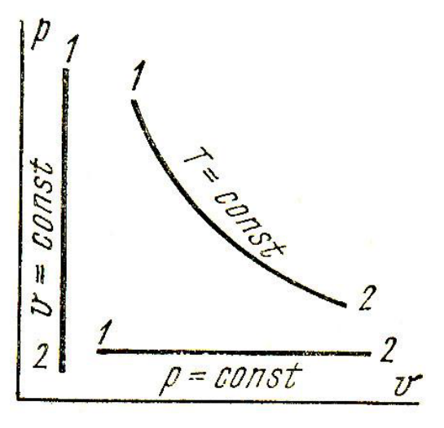
\(P\upsilon\) կոորդինատային համակարգում ուղղաձիգը պատկերում է հաստատուն ծավալի դեպքում պրոցեսը՝ իզոխոր, հորիզոնականը՝ հաստատուն ճնշման դեպքում պրոցեսը՝ իզոբար։ Հիպերբոլի տեսքի կորը (գազային վիճակի համար)՝ հաստատուն ջերմաստիճանի դեպքում պրոցեսը՝ իզոթերմ (նկ. 1.1)։
Ջերմադինամիկական պրոցեսներն ուսումնասիրելիս առանձնահատուկ նշանակություն ունեն այսպես կոչված փակ (կամ շրջանային) պրոցեսները, որոնց դեպքում համակարգը, անցնելով մի շարք հաջորդական վիճակներով, վերադառնում է սկզբնական վիճակին։ Շրջանային պրոցեսը կոչվում է նաև ցիկլ։
Մատերիայի անբաժանելի հատկությունը շարժումն է. այն անոչնչանալի է, ինչպես մատերիան ինքը։ Մատերիայի շարժումը դրսևորվում է տարբեր ձևերով, որոնք կարող են փոխակերպվել մեկը մյուսին։ Մատերիայի շարժման չափը էներգիան է։
Ինչպես ցույց են տալիս փորձերը, ջերմադինամիկական պրոցեսի ընթացքում այդ պրոցեսին մասնակցող մարմինները էներգիա են փոխանակում միմյանց հետ։ Արդյունքում մի մարմինների էներգիան մեծանում է, իսկ մյուսներինը՝ փոքրանում։ Պրոցեսում էներգիայի փոխանցումը մի մարմնից մյուսին կարող է տեղի ունենալ երկու եղանակով։
Էներգիայի փոխանցման առաջին եղանակն իրականանում է տարբեր ջերմաստիճան ունեցող մարմինների անմիջական հպման դեպքում՝ հպվող մարմինների մոլեկուլների միջև կինետիկ էներգիայի փոխանակման միջոցով, կամ ճառագայթող մարմինների ներքին էներգիայի ճառագայթային փոխանցման միջոցով՝ էլեկտրամագնիսական ալիքների օգնությամբ։ Ընդ որում էներգիան փոխանցվում է ավելի տաք մարմնից պակաս տաք մարմնին, այսինքն՝ մոլեկուլների ավելի մեծ միջին կինետիկ էներգիա ունեցող մարմնից մոլեկուլների ավելի փոքր միջին կինետիկ էներգիա ունեցող մարմնին։ Առաջին եղանակով մի մարմնից մյուսին փոխանցված էներգիայի քանակը կոչվում է ջերմաքանակ, իսկ եղանակն ինքը՝ էներգիայի փոխանցում ջերմության ձևով։ Մարմնի կողմից ջերմության ձևով ստացված էներգիայի քանակը կոչվում է հաղորդված (մատուցված) ջերմություն, իսկ մարմնի կողմից ջերմության ձևով տրված էներգիայի քանակը՝ հեռացված (վերցված) ջերմություն։
Էներգիայի փոխանցման երկրորդ եղանակը կապված է ուժային դաշտերի կամ արտաքին ճնշման առկայության հետ։ Այս դեպքում էներգիայի փոխանցումը տեղի է ունենում ամբողջ մարմնի կամ նրա մասի տարածության մեջ տեղափոխման պայմանով։
Այս եղանակը կոչվում է էներգիայի փոխանցում աշխատանքի ձևով, իսկ պրոցեսում փոխանցված էներգիայի քանակը՝ աշխատանք։
Մարմնի կողմից աշխատանքի ձևով ստացված էներգիայի քանակը կոչվում է մարմնի վրա կատարված աշխատանք, իսկ աշխատանքի ձևով տրված էներգիան՝ մարմնի կողմից ծախսված աշխատանք։ Աշխատանքը նույնպես արտահայտվում է ջոուլներով կամ կիլոջոուլներով։ Մարմնի կողմից ծախսված աշխատանքը համարվում է դրական, իսկ մարմնի վրա կատարված աշխատանքը՝ բացասական։
Այսպիսով, վիճակի փոփոխության ջերմադինամիկական պրոցեսում ջերմությունը և աշխատանքը իրենցից ներկայացնում են էներգիայի՝ մի մարմնից մյուսին փոխանցման երկու միակ հնարավոր եղանակները։
Այն նյութը, որի օգնությամբ ջերմային մեքենայում (սառնարանում) իրականանում է ջերմության և աշխատանքի փոխադարձ փոխակերպումը, կոչվում է աշխատանքային մարմին։
Եթե ջերմադինամիկական համակարգի մեջ մտնող բոլոր մարմինների վիճակը երկար ժամանակ չի փոխվում, ապա ասում են, որ համակարգը գտնվում է ջերմադինամիկական հավասարակշռության մեջ։
Եթե ջերմամեկուսացված և բացարձակ կոշտ միջնապատեր չունեցող ջերմադինամիկական համակարգում մարմինները կամ մարմինների մասերը գտնվում են ոչ միատեսակ վիճակում, ապա որոշ ժամանակ անց (շուտ թե ուշ) համակարգում վրա է հասնում կայուն ջերմադինամիկական հավասարակշռության վիճակ։
Ջերմադինամիկական հավասարակշռության դեպքում բացակայում են համակարգի մի մարմիններից մյուսներին ջերմության փոխանցումը և համակարգի առանձին մասերի մեխանիկական տեղափոխությունը միմյանց նկատմամբ, այսինքն՝ տեղի ունի ջերմային և մեխանիկական հավասարակշռություն։
Ջերմադինամիկական հավասարակշռության դեպքում համակարգը կազմող բոլոր մարմինների ճնշումը և ջերմաստիճանը հավասար կլինեն շրջակա միջավայրի ջերմաստիճանին և ճնշմանը։ Շրջակա միջավայրի արտաքին պայմանների փոփոխությանը զուգընթաց կփոխվի նաև համակարգի վիճակը, և այդ փոփոխությունը դիտվում է այնքան ժամանակ, մինչև վրա հասնի շրջակա միջավայրի և համակարգի ճնշումների ու ջերմաստիճանների հավասարությունը, այսինքն՝ մինչև վրա հասնի կայուն հավասարակշռություն։
Առանց արտաքին ազդեցության (ինքնաբերաբար) համակարգը չի կարող դուրս գալ հավասարակշռության վիճակից։
Իդեալական գազեր են կոչվում այն գազերը, որոնք լիովին ենթարկվում են Բոյլ–Մարիոտի և Գեյ-Լյուսակի օրենքներին։ Իդեալական գազերում բացակայում են մոլեկուլների միջև փոխադարձ ձգողության և վանողության ուժերը, իսկ մոլեկուլների սեփական ծավալը աննշան փոքր է գազի ծավալի համեմատ։
Բոլոր իրական գազերը բարձր ջերմաստիճանների և փոքր ճնշումների դեպքում գրեթե լիովին համապատասխանում են «իդեալական գազ» հասկացությանը և հատկություններով գործնականում չեն տարբերվում նրանից։ Իդեալական գազի վիճակը իրական գազի սահմանային վիճակն է, երբ \(\upsilon \to \infty\) (կամ \(p \to 0\))։
Բոյլ–Մարիոտի օրենքը պնդում է. հաստատուն ջերմաստիճանի դեպքում իդեալական գազի զբաղեցրած ծավալը փոխվում է նրա ճնշմանը հակադարձ համեմատական.
\(P\upsilon\) կոորդինատային համակարգում Բոյլ–Մարիոտի օրենքը գրաֆիկորեն պատկերվում է հավասարակողմ հիպերբոլով (տե՛ս նկ. 1.1)։ Այդ կորը ստացել է իզոթերմ անվանումը, իսկ հաստատուն ջերմաստիճանի դեպքում ընթացող պրոցեսը կոչվում է իզոթերմային։
Գեյ-Լյուսակի օրենքը պնդում է. հաստատուն ճնշման դեպքում իդեալական գազի միևնույն քանակի ծավալները փոխվում են բացարձակ ջերմաստիճաններին ուղիղ համեմատական.
Գեյ-Լյուսակի օրենքը սահմանում է տեսակարար ծավալի և բացարձակ ջերմաստիճանի միջև կախումը հաստատուն ճնշման դեպքում։ Այս օրենքը փորձնական ճանապարհով հայտնաբերել է ֆրանսիացի ֆիզիկոս Ժոզեֆ Լուի Գեյ-Լյուսակը 1802 թ.։
\(P\upsilon\) կոորդինատային համակարգում Գեյ-Լյուսակի օրենքը պատկերվում է աբսցիսների առանցքին զուգահեռ ուղիղով (տե՛ս նկ. 1.1)։ Այդ ուղիղը կոչվում է իզոբար, իսկ պրոցեսն ինքը՝ իզոբարային։
Ինչպես նշվեց վերևում, համասեռ մարմնի վիճակի հիմնական պարամետրերը (ճնշումը, տեսակարար ծավալը և ջերմաստիճանը) կախված են միմյանցից և փոխադարձաբար կապված են \(F(P,\upsilon,T)=0\) տեսքի մաթեմատիկական հավասարմամբ, որը կոչվում է վիճակի հավասարում։ Այս հավասարումը ճիշտ է ինչպես իրական, այնպես էլ իդեալական գազերի համար։
Պարամետրերի միջև կախումը կարելի է ստանալ նաև Բոյլ–Մարիոտի և Գեյ-Լյուսակի օրենքների համատեղ դիտարկումից, ուստի հաճախ այդ կախումն անվանում են Բոյլ–Մարիոտի և Գեյ-Լյուսակի միացյալ օրենք.
(1.3) արտահայտությունը ցույց է տալիս, որ իդեալական գազի տեսակարար ծավալի և ճնշման արտադրյալը՝ բաժանված բացարձակ ջերմաստիճանի վրա, ցանկացած հավասարակշռային վիճակի համար հաստատուն մեծություն է.
Այդ հաստատուն մեծությունը նշանակում են \(R\) և անվանում գազային հաստատուն.
\(R\) հաստատունը կախված չէ գազի վիճակից և անհատական է յուրաքանչյուր գազի համար։
(1.5) հավասարումը 1 կգ գազի համար գրված իդեալական գազի վիճակի հավասարումն է (Կլապեյրոնի հավասարում)։
\(m\) (կգ) զանգվածով գազի կամայական քանակի համար վիճակի հավասարումն ունի հետևյալ տեսքը.
որտեղ \(V\)-ն \(m\) կգ գազի զբաղեցրած ծավալն է։
Պարզաբանենք գազային հաստատունի ֆիզիկական իմաստը։ Գրենք Կլապեյրոնի հավասարումը առաջին վիճակի համար՝
երկրորդ վիճակի համար՝ նույն ճնշման դեպքում՝
երկրորդ հավասարումից հանելով առաջինը՝ կստանանք
որտեղից
Աջ մասի համարիչը իրենից ներկայացնում է գազի աշխատանքը հաստատուն ճնշման դեպքում ընթացող պրոցեսում։ Եթե ջերմաստիճանների տարբերությունը \((T_2 - T_1)\) հավասար է 1°-ի, իսկ գազի զանգվածը՝ 1 կգ-ի, ապա գազային հաստատունը 1 կգ գազի աշխատանքն է հաստատուն ճնշման դեպքում ընթացող պրոցեսում՝ ջերմաստիճանը 1°-ով փոխելիս.
(1.5)-ի աջ և ձախ մասերը բազմապատկելով մոլեկուլային զանգվածով՝ \(\mu\), կստանանք իդեալական գազի վիճակի հավասարումը մեկ մոլի համար.
որտեղ \(\upsilon_\mu = \upsilon\mu\)-ն իդեալական գազի 1 մոլի ծավալն է, \(R_\mu = R\mu\)։
Մոլը նյութի այն քանակն է, որը թվապես հավասար է նրա մոլեկուլային զանգվածին։
Եթե գազում պարունակվում է \(N\) մոլ, ապա
Հայտնի է, որ տարբեր գազերը միևնույն \(P\)-ի և \(T\)-ի դեպքում ունեն մեկ մոլի հավասար ծավալներ՝ \(\upsilon_\mu\). մասնավորապես, երբ \(P = 101325\) Պա և \(T = 273{,}15\) Կ, \(\upsilon_\mu = 22{,}414\ \dfrac{\text{մ}^3}{\text{կմոլ}}\)։
Հետևաբար, \(R_\mu\) մեծությունը կախված չէ գազի տեսակից և միատեսակ է բոլոր գազերի համար. այն կոչվում է ունիվերսալ գազային հաստատուն։ \(R_\mu\) մեծությունը հեշտ է որոշել, եթե (1.8)-ի մեջ տեղադրենք \(P\)-ի, \(T\)-ի և \(\upsilon_\mu\)-ի վերը նշված արժեքները.
\(R_\mu\) մեծությամբ կարելի է գտնել ցանկացած գազի գազային հաստատունի մեծությունը, եթե հայտնի է նրա մոլեկուլային զանգվածը.
Ունիվերսալ գազային հաստատունը իդեալական գազի վիճակի հավասարման մեջ առաջին անգամ մտցրել է Դ. Ի. Մենդելեևը։ (1.8) և (1.8′) տեսքի վիճակի հավասարումն ընդունված է անվանել Կլապեյրոն–Մենդելեևի հավասարում։
| գազ | He | Ar | H₂ | N₂ | O₂ | CO | NO | CO₂ | H₂O | օդ |
|---|---|---|---|---|---|---|---|---|---|---|
| R | 2077 | 208,1 | 4124 | 296,7 | 259,8 | 296,8 | 277,1 | 188,9 | 461,5 | 287,05 |
Չնայած (1.5)–(1.8) հավասարումները խստորեն կիրառելի են միայն իդեալական գազերի նկատմամբ, դրանք բավարար ճշտությամբ կարող են կիրառվել ավիացիոն տեխնիկայի բազմաթիվ խնդիրների լուծման համար, մասնավորապես՝ գազերի հատկությունների որոշման և ջերմադինամիկական պրոցեսների հաշվարկի համար թռչող սարքերի աերոդինամիկայի, ավիացիոն շարժիչների տեսության և այլ խնդիրներում։
Իրական գազերը իդեալական գազերից տարբերվում են նրանով, որ այդ գազերի մոլեկուլներն ունեն վերջավոր սեփական ծավալներ և միմյանց հետ կապված են էլեկտրամագնիսական և քվանտային բնույթ ունեցող փոխազդեցության ուժերով։ Այդ ուժերը գոյություն ունեն ցանկացած մոլեկուլների միջև ցանկացած պայմաններում և փոքրանում են մոլեկուլների միջև հեռավորության մեծացմանը զուգընթաց։ Մոլեկուլները փոքր հեռավորությունների վրա մոտենալիս ձգողության ուժերը կտրուկ փոքրանում են և անցնում վանողության ուժերի, որոնք հասնում են շատ մեծ արժեքների։ Իրական գազերի ամենաէական տարբերությունն իդեալականից կայանում է նրանում, որ դրանք որոշակի պայմաններում ընդունակ են անցնել հեղուկ վիճակի։
Իրական գազերի շեղումն իդեալական գազի մոդելից աճում է տեսակարար ծավալի փոքրացմանը, այսինքն՝ ճնշման աճին և ջերմաստիճանի նվազմանը զուգընթաց։
Այդ շեղումները կապված են նրա հետ, որ գազի ծավալի փոքրացման դեպքում մոլեկուլների միջև հեռավորությունները փոքրանում են, ինչի հետևանքով դրսևորվում են միջմոլեկուլային փոխազդեցության ուժերի և մոլեկուլների ծավալի ազդեցությունները։ Ուստի նշված պայմաններում գազի պարամետրերի որոշման համար իդեալական գազի վիճակի հավասարման օգտագործումը հանգեցնում է սխալների։
Իրական գազի վիճակի առաջին հավասարումներից մեկն առաջարկել է Վան դեր Վաալսը.
որտեղ \(a\)-ն և \(b\)-ն գործակիցներ են, որոնք յուրաքանչյուր գազի համար ընդունում են որոշակի արժեք։
Այն պարունակում է երկու ուղղում։ Առաջինը՝ \(\left(\dfrac{a}{\upsilon^2}\right)\), հաշվի է առնում միջմոլեկուլային փոխազդեցության ուժերը (ներքին ճնշումը). դրանք այնքան փոքր են, որքան մեծ է տեսակարար ծավալը։ Մյուս ուղղումը՝ (\(b\)), հաշվի է առնում մոլեկուլների զբաղեցրած ծավալը։ Վան դեր Վաալսի հավասարումը որակապես լավ է արտացոլում իրական գազերի հատկությունները և \(P\)-ի ու \(T\)-ի փոփոխման դեպքում դրանց փոփոխման բնույթը, սակայն քանակական հաշվարկների համար մոտավոր է։
Իրական գազերի տարբեր հատկությունների գործնական հաշվարկներում լայն կիրառություն ունի \(P\upsilon/RT = C\) հարաբերությունը, որը ստացել է սեղմելիության գործակից անվանումը (դա ջերմադինամիկական սեղմման գործակիցը չէ)։
Քանի որ իդեալական գազերի համար ցանկացած պայմաններում \(P\upsilon = RT\) և \(C = 1\), սեղմելիության գործակիցն արտահայտում է իրական գազի հատկությունների շեղումն իդեալականի հատկություններից։ Իրական գազերի համար \(C\)-ի արժեքը՝ կախված ճնշումից և ջերմաստիճանից, կարող է լինել մեկից մեծ և փոքր, և միայն շատ փոքր ճնշումների և բարձր ջերմաստիճանների դեպքում այն գործնականում հավասար է մեկի։
Տեխնիկայում շատ հաճախ գործ ենք ունենում ոչ թե մաքուր գազերի, այլ դրանց խառնուրդների հետ (օդ, վառելիքաօդային խառնուրդների այրման արգասիքներ և այլն)։ Օդը իրենից ներկայացնում է գազային խառնուրդ, որը բաղկացած է ազոտից, թթվածնից, ածխաթթու գազից, ջրային գոլորշուց և միատոմ գազերից։ Ուստի կարևոր է կարողանալ առանձին գազերի պարամետրերով գտնել դրանց խառնուրդների պարամետրերը։ Մենք կդիտարկենք իդեալական գազերի խառնուրդներ։
Գազային խառնուրդ ասելով հասկանում են առանձին գազերի այնպիսի խառնուրդ, որոնք միմյանց հետ ոչ մի քիմիական ռեակցիայի մեջ չեն մտնում։ Խառնուրդում յուրաքանչյուր գազ, մյուս գազերից անկախ, լիովին պահպանում է իր բոլոր հատկությունները և իրեն պահում է այնպես, կարծես միայնակ զբաղեցնում է խառնուրդի ամբողջ ծավալը։ Գազի մոլեկուլները անոթի պատերի վրա ստեղծում են ճնշում, որը կոչվում է պարցիալ (մասնակի)։ Կհամարենք, որ խառնուրդի մեջ մտնող յուրաքանչյուր առանձին գազ ենթարկվում է Կլապեյրոնի վիճակի հավասարմանը, այսինքն՝ իդեալական գազ է։
Իդեալական գազերի գազային խառնուրդը ենթարկվում է Դալտոնի օրենքին, որը պնդում է. գազերի խառնուրդի ընդհանուր ճնշումը հավասար է խառնուրդը կազմող առանձին գազերի պարցիալ ճնշումների գումարին.
որտեղ \(P_1, P_2, \ldots, P_n\)-ը պարցիալ ճնշումներն են։
Պարցիալ ճնշումն այն ճնշումն է, որը կունենար խառնուրդի բաղադրության մեջ մտնող յուրաքանչյուր գազ, եթե այդ գազը միայնակ գտնվեր նույն քանակով, նույն ծավալում և նույն ջերմաստիճանում, ինչ որ խառնուրդում։
Գազային խառնուրդի պարամետրերը կարող են հաշվարկվել Կլապեյրոնի հավասարմամբ.
Գազերի խառնուրդի տրման եղանակները։ Գազային խառնուրդը կարող է տրվել զանգվածային, ծավալային և մոլային բաժիններով։
Զանգվածային բաժին է կոչվում յուրաքանչյուր գազի զանգվածի հարաբերությունը խառնուրդի ընդհանուր զանգվածին.
որտեղ \(q_1, q_2, \ldots, q_i\)-ն զանգվածային բաժիններն են, \(m_1, m_2, \ldots, m_i\)-ն՝ յուրաքանչյուր գազի զանգվածը, \(m_{\text{խ}}\)-ն՝ ամբողջ խառնուրդի զանգվածը։
Զանգվածային բաժինների գումարը հավասար է մեկի.
որտեղ \(k\)-ն խառնուրդի բաղադրիչների թիվն է։
Բոլոր գազերի զանգվածների գումարը հավասար է խառնուրդի զանգվածին.
Օրինակ՝ օդում հիմնական բաղադրիչների զանգվածային բաժինները հավասար են՝
Ծավալային բաժին է կոչվում յուրաքանչյուր գազի պարցիալ (բերված) ծավալի հարաբերությունը գազերի խառնուրդի ընդհանուր ծավալին.
որտեղ \(r_1, r_2, \ldots, r_i\)-ն ծավալային բաժիններն են, \(V_1, V_2, \ldots, V_i\)-ն՝ յուրաքանչյուր գազի պարցիալ (բերված) ծավալները, \(V_{\text{խ}}\)-ն՝ գազերի խառնուրդի ծավալը։
Գազի պարցիալ ծավալ է կոչվում այն ծավալը, որը կզբաղեցներ այդ գազը, եթե նրա ջերմաստիճանը և ճնշումը հավասար լինեին գազերի խառնուրդի ջերմաստիճանին և ճնշմանը։
Խառնուրդը կազմող գազերի պարցիալ ծավալների գումարը հավասար է գազերի խառնուրդի ծավալին.
Ծավալային բաժինների գումարը հավասար է մեկի.
Մոլային բաժին է կոչվում տվյալ բաղադրիչի մոլերի թվի՝ \(N_i\), հարաբերությունը խառնուրդի մոլերի ընդհանուր թվին՝ \(N_{\text{խ}}\).
Խառնուրդի թվացյալ մոլեկուլային զանգվածը և գազային հաստատունը։ Թվացյալ մոլեկուլային զանգվածը պայմանական մեծություն է, որը հավասար է խառնուրդի զանգվածի՝ \(m_{\text{խ}}\), հարաբերությանը խառնուրդի բոլոր բաղադրիչների մոլերի գումարին՝ \(N_{\text{խ}}\).
քանի որ \(m_{\text{խ}} = \sum_{1}^{k} N_i\mu_i\), ապա
Նմանապես կարելի է գտնել \(\mu_{\text{խ}}\)-ի կապը \(q_i\)-ի հետ.
Համաձայն (1.9)-ի՝ խառնուրդի գազային հաստատունը կարելի է ներկայացնել այսպես.
(1.15)-ից \(\mu_{\text{խ}}\)-ի արժեքը (1.16)-ի մեջ տեղադրելով՝ կստանանք
Ջերմատեխնիկական հաշվարկները հիմնված են ջերմունակության իմացության վրա, որն, ինչպես հայտնի է, իրենից ներկայացնում է մարմնի ջերմաստիճանը մեկ աստիճանով փոխելու համար անհրաժեշտ ջերմաքանակը։
Ջերմունակության միավորը՝ \([\text{Ջ/Կ}]\)։
Ջերմադինամիկայում տարբերում են ջերմունակություններ՝ տեսակարար (զանգվածային) և մոլային։
\(C\)՝ տեսակարար ջերմունակություն, դա 1 կգ նյութը մեկ աստիճանով տաքացնելու համար անհրաժեշտ ջերմաքանակն է՝ \(\left[\dfrac{\text{Ջ}}{\text{կգ}\cdot\text{Կ}}\right]\)։
\(C_\mu\)՝ մոլային ջերմունակություն, դա նյութի մեկ մոլը մեկ աստիճանով տաքացնելու համար անհրաժեշտ ջերմաքանակն է՝ \(\left[\dfrac{\text{Ջ}}{\text{մոլ}\cdot\text{Կ}}\right]\)։
Ջերմատեխնիկական հաշվարկներում օգտագործում են ինչպես իսկական ջերմունակության մեծությունը (այսինքն՝ տվյալ ջերմաստիճանում)՝
այնպես էլ միջին ջերմունակության մեծությունը ջերմաստիճանների տրված միջակայքում՝ \((T_2 - T_1)\).
որտեղ \(q\)-ն 1 կգ նյութին հաղորդված ջերմությունն է նրա ջերմաստիճանը \(T_1\)-ից մինչև \(T_2\) փոխվելիս։
Ջերմաքանակի որոշման համար օգտագործում են (1.20) հավասարումը.
Պրոցեսի տեսակի ազդեցությունը ջերմունակության վրա։ Տարբեր ջերմադինամիկական պրոցեսներում ջերմաստիճանի միևնույն տիրույթում պրոցեսի ջերմությունը կարող է լինել տարբեր, հետևաբար տարբեր է նաև ջերմունակությունը։
Ջերմադինամիկական հաշվարկների համար առանձնահատուկ նշանակություն ունեն գազի ջերմունակությունների մեծությունները հաստատուն ճնշման՝ \(C_p\), և հաստատուն ծավալի՝ \(C_\upsilon\), դեպքում ընթացող պրոցեսներում։ Միևնույն գազի համար \(C_\upsilon\) մեծությունը միշտ փոքր է \(C_p\) ջերմունակությունից, քանի որ առաջին դեպքում ջերմությունը ծախսվում է միայն գազի ջերմաստիճանի փոփոխման վրա, իսկ երկրորդում՝ նաև աշխատանքի կատարման վրա։ Իդեալական գազի \(C_p\) և \(C_\upsilon\) ջերմունակությունները միմյանց հետ կապված են Մայերի հավասարմամբ.
կամ
Գազի տեսակի ազդեցությունը ջերմունակության վրա։ Գազի կինետիկ տեսությունից հայտնի է, որ
և
որտեղ \(y\)-ը մոլեկուլների շարժման ազատության աստիճանների թիվն է։
Գազերի կինետիկ տեսությունում դիտարկվում են համընթաց և պտտական ազատության աստիճանները։ Այդ դեպքում միատոմ գազի համար \(y = 3\), երկատոմի համար՝ \(y = 5\), եռատոմի համար՝ \(y = 6\)։
Ասվածից հետևում է, որ գազի մոլային ջերմունակությունը կախված է մոլեկուլում ատոմների թվից, իսկ տեսակարարը՝ նաև մոլեկուլային զանգվածից (աղ. 2)։
Կինետիկ տեսությունը որակապես լավ է նկարագրում \(y\)-ի և \(\mu\)-ի ազդեցությունը գազի ջերմունակության վրա, սակայն քանակապես (1.23)-ով և (1.24)-ով ստացված տվյալները փորձնական տվյալների հետ մոտավորապես համընկնում են միայն միատոմ գազերի համար (աղ. 2)։
Վերջինս կապված է նրա հետ, որ բազմատոմ գազերում տեղի են ունենում ատոմների տատանումներ, որոնց էներգիան գազերի կինետիկ տեսությունում հաշվի չի առնվում։
| Գազի անվանումը | Մոլեկ. զանգված | Ըստ կինետ. տեսության | \(C_p\) (փորձնական տվյալներ) | |||
|---|---|---|---|---|---|---|
| \(C_{p\mu}\) | \(C_p\) | T = 300 Կ | 1000 Կ | 2000 Կ | ||
| Հելիում He | 4,003 | 20,78 | 5,19 | 5,19 | 5,19 | 5,19 |
| Արգոն Ar | 39,95 | 20,78 | 0,521 | 0,522 | 0,52 | 0,52 |
| Ջրածին H₂ | 2,016 | 29,1 | 14,4 | 14,3 | 15,0 | 17,0 |
| Թթվածին O₂ | 32 | 29,1 | 0,909 | 0,922 | 1,09 | 1,18 |
| Ջրային գոլորշի H₂O | 18,016 | 33,26 | 1,84 | 1,86 | 2,29 | 2,85 |
| Ածխածնի երկօքսիդ CO₂ | 44,01 | 33,26 | 0,755 | 0,841 | 1,22 | 1,37 |
Վիճակի պարամետրերի ազդեցությունը ջերմունակության վրա։ Իդեալական գազի ջերմունակությունը կախված է միայն ջերմաստիճանից և մեծանում է վերջինիս աճին զուգընթաց. բացառություն են կազմում միատոմ գազերը, որոնց ջերմունակությունն իդեալական վիճակում գործնականում կախված չէ ջերմաստիճանից (աղ. 2)։
Ջերմատեխնիկական հաշվարկներում սովորաբար օգտվում են \(C_p\)-ի և \(C_\upsilon\)-ի փորձնական արժեքներից, որոնք ներկայացված են աղյուսակների տեսքով։ Այդ աղյուսակները կազմված են ինչպես ջերմունակության իսկական, այնպես էլ միջին արժեքների համար։
Աղյուսակներում բերվում են միջին ջերմունակությունների՝ \(C_{T_0}^{T}\), մեծությունները, որտեղ որպես ջերմաստիճանի ելակետային արժեք սովորաբար ընդունում են
Որոշ խնդիրներում ավելի հարմար է օգտագործել ջերմունակության՝ ջերմաստիճանից վերլուծական կախումը, որը սովորաբար ներկայացնում են բազմանդամի տեսքով, օրինակ՝
որտեղ \(a, b, d\)-ն փորձից որոշվող գործակիցներ են, որոնք կախված են գազի տեսակից և պրոցեսի տեսակից։
Իրական գազի ջերմունակությունը կախված է նաև ճնշումից՝ միջմոլեկուլային փոխազդեցությունների ազդեցության պատճառով։ Իրական գազի ջերմունակության շեղումն իդեալականի ջերմունակությունից ընդհանուր դեպքում այնքան մեծ է, որքան մեծ է ճնշումը և ցածր է ջերմաստիճանը, և հատկապես զգալի է կրիտիկականին մոտ վիճակներում։ Այն ճնշումների և ջերմաստիճանների արժեքները, որոնց դեպքում այդ շեղումներն էական են, տարբեր նյութերի համար տարբեր են։
Աղ. 3-ում օրինակի համար բերված են օդի ջերմունակության հարաբերությունները 2,0 և 20 ՄՊա ճնշումների դեպքում նրա իդեալական վիճակի ջերմունակությանը։
| p, ՄՊա | Ջերմաստիճան, Կ | |||
|---|---|---|---|---|
| 300 | 400 | 600 | 1000 | |
| 2,0 | 1,03 | 1,015 | 1,006 | 1,001 |
| 20 | 1,26 | 1,15 | 1,06 | 1,015 |
Թարգմանչի նշում. բնագրի աղյուսակում երկրորդ տողում վրիպակով գրված է «2,0». ըստ տեքստի՝ այն 20 ՄՊա է։
Ջերմադինամիկայի առաջին օրենքը էներգիայի պահպանման և փոխակերպման համընդհանուր օրենքի մասնավոր դեպքն է՝ կիրառված ջերմադինամիկական համակարգերում ընթացող ջերմային երևույթների նկատմամբ։
Բնության այս հիմնարար օրենքը պնդում է, որ էներգիան չի անհետանում և նորից չի առաջանում, այլ միայն անցնում է մի տեսակից մյուսին՝ խիստ համարժեք քանակներով։
Կարևոր է ընդգծել, որ էներգիայի պահպանման և փոխակերպման օրենքը պնդում է ոչ թե պարզապես էներգիայի պահպանումը, այլ դրա պահպանումը մի ձևից մյուսին փոխակերպվելիս։
Ջերմադինամիկայի առաջին օրենքից հետևում է, որ եթե համակարգը (մարմինը) մեկուսացված է, այսինքն՝ էներգիա չի փոխանակում շրջակա միջավայրի հետ, ապա նրա ներքին էներգիան չի փոխվում։ Այլ կերպ ասած՝ մեկուսացված համակարգի ներքին էներգիան հաստատուն է։ Համակարգի (մարմնի) էներգիայի փոփոխությունը հնարավոր է միայն շրջակա միջավայրի հետ էներգափոխանակման դեպքում, այսինքն՝ համակարգին ջերմություն կամ աշխատանք հաղորդելիս (կամ նրանից հեռացնելիս)։ Համակարգի էներգիայի փոփոխությունը հանգեցնում է նրա վիճակի փոփոխության։ Հետևաբար, համակարգի յուրաքանչյուր վիճակին համապատասխանում է ներքին էներգիայի լիովին որոշակի մեծություն։ Այսպիսով, համակարգի ներքին էներգիան նրա վիճակի միարժեք ֆունկցիա է։
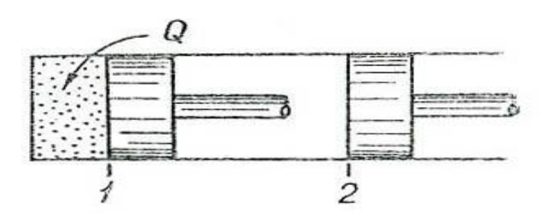
Դիցուք, օրինակ, մխոցով գլանում գտնվող աշխատանքային մարմնին (նկ. 2) հաղորդվել է \(Q\) ջերմություն. աշխատանքային մարմինը, ընդարձակվելով, մխոցը տեղափոխում է 1 դիրքից 2 դիրք և կատարում է \(L\) աշխատանք արտաքին ուժերի դեմ։ Աշխատանքային մարմնի և շրջակա միջավայրի միջև էներգիայի լրիվ փոխանակումը հավասար է \(Q - L\)։
Այդ ամբողջ էներգիան հավասար է աշխատանքային մարմնի ներքին էներգիայի փոփոխությանը.
կամ
որտեղ \(\Delta U = U_2 - U_1\), \(U_1\)-ը և \(U_2\)-ը աշխատանքային մարմնի ներքին էներգիայի մեծություններն են սկզբնական և վերջնական վիճակներում։
Վերջին՝ (1.25) առնչությունը իրենից ներկայացնում է ջերմադինամիկայի առաջին օրենքի մաթեմատիկական արտահայտությունը ամենաընդհանուր տեսքով։ Այն ձևակերպվում է այսպես. ջերմադինամիկական համակարգին (աշխատանքային մարմնին) հաղորդված ջերմությունը ծախսվում է արտաքին ուժերի դեմ աշխատանքի կատարման և համակարգի ներքին էներգիայի փոփոխման վրա։
(1.25) հավասարման մեջ բոլոր մեծությունները վերագրելով աշխատանքային մարմնի զանգվածի 1 կգ-ին՝ կստանանք
կամ դիֆերենցիալ տեսքով
Չնայած ջերմադինամիկայի առաջին օրենքի պարզությանը՝ գոյություն ունեն դրա բազմաթիվ ձևակերպումներ։ Բերենք դրանցից մի քանիսը՝ առավել տարածվածները.
Գազի ներքին էներգիա ասելով հասկանում են մարմնում կամ մարմինների համակարգում պարփակված ամբողջ էներգիան։ Այդ էներգիան կարելի է ներկայացնել էներգիայի առանձին տեսակների գումարի տեսքով։ Ներքին էներգիան մարմինը կազմող մասնիկների (մոլեկուլների, ատոմների, էլեկտրոնների և այլն) շարժման կինետիկ էներգիայի և դրանց փոխադարձ դասավորության պոտենցիալ էներգիայի գումարն է.
Տարրական մասնիկների պոտենցիալ էներգիան իր մեջ ներառում է միջմոլեկուլային փոխազդեցության էներգիան՝ \(U_{\text{մ.փ}}\), որը դրսևորվում է իրական գազերում մոլեկուլների միջև հեռավորության փոփոխման դեպքում, քիմիական կապի էներգիան՝ \(U_{\text{քիմ}}\), որը դրսևորվում է քիմիական ռեակցիաների ժամանակ, ներմիջուկային էներգիան՝ \(U_{\text{միջ}}\), որը դրսևորվում է միջուկային ռեակցիաների ժամանակ.
Էներգիայի պահպանման օրենքից հետևում է, որ ջերմադինամիկական համակարգն իր յուրաքանչյուր վիճակում կարող է ունենալ ներքին էներգիայի միայն մեկ արժեք։ Համակարգի ներքին էներգիայի փոփոխությունը հանգեցնում է նրա վիճակի փոփոխության։ Ներքին էներգիան վիճակի ֆունկցիա է, հետևաբար այն որոշվում է վիճակի երկու պարամետրի տրմամբ, այսինքն՝
Ուստի, եթե մարմինն անցնում է 1 վիճակից \((P_1,T_1)\) 2 վիճակ \((P_2,T_2)\), ապա պրոցեսի ուղուց անկախ ներքին էներգիայի փոփոխությունը միշտ նույնն է.
Դիտարկենք աշխատանքային մարմնի անցումը 1 վիճակից 2 վիճակ։ Եթե դիտարկենք տարբեր պրոցեսներ՝ \(a\), \(b\), \(c\) (նկ. 3), որոնք ունեն ընդհանուր սկզբնական և վերջնական վիճակներ, բայց տարբեր ուղիներ, ապա դրանց բոլորի համար ներքին էներգիայի փոփոխությունը կլինի նույնը.
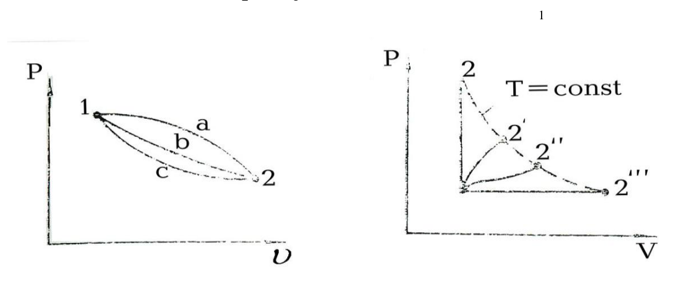
Շրջանային պրոցեսներում (ցիկլերում), որոնց արդյունքում մարմինը վերադառնում է ելակետային վիճակին, ներքին էներգիայի փոփոխությունը հավասար է զրոյի.
Ներքին էներգիայի փոփոխությունը կախված չէ պրոցեսի ուղուց, այլ որոշվում է միայն մարմնի (համակարգի) սկզբնական և վերջնական վիճակի պարամետրերով։
Դիտարկենք իդեալական գազի ներքին էներգիան։ Իդեալական գազի համար
Ուստի
Դիտարկենք իդեալական գազի անցման մի շարք պրոցեսներ \(T_1\) ջերմաստիճանով 1 վիճակից տարբեր վիճակներ՝ 2, 2′, 2″, 2‴, որոնք բնութագրվում են միևնույն \(T_2\) ջերմաստիճանով (նկ. 3)։ Այդ բոլոր պրոցեսներում (նշանակենք դրանք \(\upsilon, d, e, p\)) \(T_1\)-ը և \(T_2\)-ը նույնն են, ուստի նույնն է նաև ներքին էներգիայի փոփոխությունը.
Դիտարկենք «\(\upsilon\)» պրոցեսը (1–2)։ Նրանում \(\upsilon = \text{const}\), և հետևաբար \(L = 0\)։ Ուստի համաձայն (1.26)-ի՝
բայց քանի որ \(q_\upsilon = C_\upsilon(T_2 - T_1)\), ապա
(1.30)-ի և (1.31)-ի հիման վրա իդեալական գազի համար կարելի է գրել
Հետևաբար, իդեալական գազի ներքին էներգիայի փոփոխությունը բոլոր պրոցեսներում հավասար է՝
կամ դիֆերենցիալ տեսքով՝
Իդեալական գազում ցանկացած պրոցեսի համար ներքին էներգիայի փոփոխությունը համեմատական է ջերմաստիճանի փոփոխությանը։
Ինչպես նշվեց, աշխատանքը և ջերմությունը իրենցից ներկայացնում են էներգափոխանակման երկու տարբեր ձևեր։
Աշխատանք։ Մի մարմնից մյուսին էներգիայի այն փոխանցումը, որը կապված է աշխատանքային մարմնի ծավալի փոփոխման, արտաքին տարածության մեջ նրա տեղափոխման կամ նրա դիրքի փոփոխման հետ, կոչվում է աշխատանք։
Դիտարկենք մխոցով գլանում գազի ընդարձակման հավասարակշռային պրոցեսը։ Դիցուք գլանում գազի վիճակի փոփոխությունը \(P, \upsilon\) կոորդինատներում պատկերվում է 1–2 կորով (նկ. 4)։
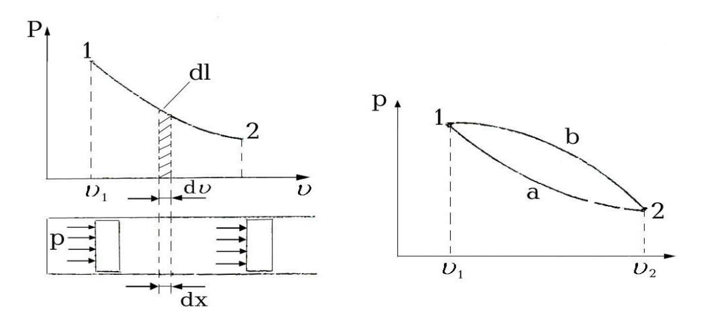
Գազը, ընդարձակվելով, աշխատանք է կատարում արտաքին ուժերի դեմ։ Մխոցի՝ \(dx\) հեռավորությամբ անվերջ փոքր տեղափոխման դեպքում գազի կատարած աշխատանքը հավասար է՝
որտեղ \(F\)-ը մխոցի մակերեսն է, իսկ 1–2 պրոցեսում գազի կատարած լրիվ աշխատանքը՝
1 կգ գազի համար աշխատանքը հավասար է՝
իսկ տարրական պրոցեսում՝
որտեղ \(\upsilon\)-ն տեսակարար ծավալն է։
Ակնհայտ է, որ \(\ell\) աշխատանքը \(P, \upsilon\) կոորդինատներում համարժեք է պրոցեսի կորի տակ գտնվող \(\upsilon_1 1 2 \upsilon_2\) մակերեսին։
Ջերմադինամիկայում ընդունված է հետևյալ կանոնը. մարմնի կողմից արտաքին միջավայրի նկատմամբ կատարված աշխատանքը (ընդարձակման աշխատանք, \(d\upsilon > 0\)) համարվում է դրական, իսկ մարմնի վրա կատարված աշխատանքը (սեղմման աշխատանք, \(d\upsilon < 0\))՝ բացասական։
Դիտարկենք մարմնի՝ 1 վիճակից 2 վիճակ անցման երկու տարբեր պրոցես (նկ. 4)։
Դժվար չէ տեսնել, որ թեև \(a\) և \(b\) պրոցեսներում մարմնի ելակետային և վերջնական վիճակները նույնն են, այդ պրոցեսներում աշխատանքի մեծությունը տարբեր է։ Այսպիսով, աշխատանքի մեծությունը կախված է պրոցեսի ուղուց. այն պրոցեսի ֆունկցիա է։
(1.35)-ը հաշվի առնելով՝ ջերմադինամիկայի առաջին օրենքի հավասարումը կարելի է ներկայացնել այսպես.
իսկ իդեալական գազի համար նաև՝
Ջերմություն։ Ցույց տանք, որ ջերմությունը պրոցեսի ֆունկցիա է։ Իրոք, քանի որ \(\ell\)-ը կախված է պրոցեսի ուղուց, իսկ \(\Delta U\)-ն կախված չէ դրանից, ապա, ինչպես հետևում է (1.26)-ից, ջերմությունը նույնպես կախված է պրոցեսի ուղուց։
Ջերմադինամիկայում ընդունված է նշանների հետևյալ կանոնը. մարմնին հաղորդված ջերմությունը համարվում է դրական, իսկ նրանից հեռացվածը՝ բացասական։
Ջերմության որոշումը ջերմադինամիկական պրոցեսի հաշվարկի կարևոր տարր է։ Ամենապարզ ձևով այս խնդիրը լուծվում է պրոցեսի հաստատուն ջերմունակության դեպքում.
Փոփոխական ջերմունակության դեպքում հնարավոր են հաշվարկի տարբեր եղանակներ։
ա) Հաշվարկ ջերմունակության բանաձևերի օգնությամբ։ (1.18)-ից հետևում է՝
բ) Հաշվարկ միջին ջերմունակությունների արժեքների օգտագործմամբ։
Եթե Կելվինի աստիճաններից անցնենք Ցելսիուսի աստիճանների և ընդունենք \(t_0 = 0\,{}^\circ\text{C}\), ապա
(1.40)-ով հաշվարկի համար անհրաժեշտ են \(C_{t_0}^{t}\) միջին ջերմունակությունների տվյալներ՝ ներկայացված աղյուսակների, գրաֆիկների և այլնի տեսքով։
գ) Հաշվարկ իսկական ջերմունակությունների արժեքների օգտագործմամբ։
Շատ գազերի համար ջերմաստիճանների բավականաչափ լայն միջակայքում ջերմունակության կախումը ջերմաստիճանից գործնականում գծային է՝ \(C = f(T)\).
Տվյալ դեպքում ջերմությունը կարելի է գտնել բանաձևով՝
որտեղ \(C_{T_{\text{մ}}}\)-ն իսկական ջերմունակությունն է \(T_{\text{մ}}\) (միջին) ջերմաստիճանում։ Պրոցեսի ջերմությունը որոշելիս պետք է օգտագործել տվյալ պրոցեսին համապատասխանող ջերմունակության մեծությունը։
Օրինակ՝ հաստատուն ջերմունակության դեպքում \(P = \text{const}\) պրոցեսի համար՝
իսկ \(\upsilon = \text{const}\) պրոցեսի համար՝
Անցյալ դարում հայտնի ֆիզիկոս Գիբսը ջերմային հաշվարկների պրակտիկայի մեջ մտցրեց նոր ֆունկցիա, որը Կամերլինգ-Օննեսի առաջարկով անվանվեց էնթալպիա։ Տեսակարար էնթալպիան, այսինքն՝ էնթալպիայի հարաբերությունը մարմնի զանգվածին, նշանակվում է \(i\) և արտահայտվում է ջոուլներով կիլոգրամի վրա (Ջ/կգ)։
Էնթալպիա է կոչվում ջերմադինամիկական ֆունկցիան, որը հավասար է՝
Քանի որ էնթալպիայի մեջ մտնող \(U\), \(P\) և \(\upsilon\) մեծությունները վիճակի ֆունկցիաներ են, ապա էնթալպիան նույնպես վիճակի ֆունկցիա է։
Էնթալպիայի ֆիզիկական իմաստը պարզ կլինի հետևյալ օրինակի դիտարկումից։ Գազով գլանում տեղաշարժվող մխոցի վրա դրված է \(m\) (կգ) զանգվածով կշռաքար (նկ. 5)։
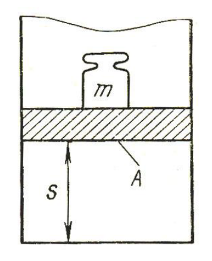
Մխոցի մակերեսը \(A\) է, աշխատանքային մարմնի ներքին էներգիան՝ \(U\)։ Կշռաքարի պոտենցիալ էներգիան հավասար է կշռաքարի \(m\) զանգվածի և \(S\) բարձրության արտադրյալին։ Քանի որ գազի \(P\) ճնշումը հավասարակշռվում է կշռաքարի զանգվածով, ապա դրա պոտենցիալ էներգիան կարելի է արտահայտել այսպես.
\(AS\) արտադրյալը գազի տեսակարար ծավալն է։ Այստեղից՝
Ճնշման և ծավալի արտադրյալն այն աշխատանքն է, որը պետք է ծախսել \(\upsilon\) ծավալով գազը \(P\) ճնշումով արտաքին միջավայր ներմուծելու համար։ Այսպիսով, \(P\upsilon\) աշխատանքը գազի պոտենցիալ էներգիան է, որը կախված է մխոցի վրա ազդող ուժերից։ Որքան մեծ են այդ արտաքին ուժերը, այնքան մեծ է \(P\) ճնշումը և այնքան մեծ է ճնշման պոտենցիալ էներգիան՝ \(P\upsilon\)։
Եթե գլանում գտնվող գազը և բեռով մխոցը դիտարկենք որպես մեկ համակարգ, որը կանվանենք ընդլայնված համակարգ, ապա այդ համակարգի լրիվ էներգիան՝ \(E\), բաղկացած է գազի \(U\) ներքին էներգիայից և բեռով մխոցի պոտենցիալ էներգիայից, որը հավասար է \(P\upsilon\)-ի.
Այստեղից երևում է, որ \(i\) էնթալպիան հավասար է ընդլայնված համակարգի՝ մարմնի և շրջակա միջավայրի էներգիային։ Սրանում է կայանում էնթալպիայի ֆիզիկական իմաստը։
Դիֆերենցելով հավասարումը՝ կստանանք.
Իդեալական գազի համար \(P\upsilon = RT\) և \(du = C_\upsilon\,dT\), ուստի իդեալական գազի համար
այսպիսով՝
(1.43)-ից կստանանք
(1.45)-ը (1.36)-ի մեջ տեղադրելով՝ կստանանք ջերմադինամիկայի առաջին օրենքի հավասարումը էնթալպիայի միջոցով.
Վերջին արտահայտությունը իդեալական գազի համար՝ (1.44)-ը հաշվի առնելով, կարելի է ներկայացնել այսպես.
(1.44) և (1.47) արտահայտությունները ճիշտ են իդեալական գազի համար։
Ջերմադինամիկայի առաջին օրենքը սահմանում է փոխկապակցվածություն ջերմաքանակի, ներքին էներգիայի փոփոխության և գազի արտաքին աշխատանքի միջև, ընդ որում մարմնին հաղորդվող կամ նրանից հեռացվող ջերմաքանակը կախված է պրոցեսի բնույթից։
Հիմնական պրոցեսներին, որոնք մեծ նշանակություն ունեն ինչպես տեսական հետազոտությունների, այնպես էլ տեխնիկայում գործնական աշխատանքների համար, դասվում են՝ իզոխորը, որն ընթանում է հաստատուն ծավալի դեպքում, իզոբարը, որն ընթանում է հաստատուն ճնշման դեպքում, իզոթերմը, որն ընթանում է հաստատուն ջերմաստիճանի դեպքում, ադիաբատը, որն ընթանում է արտաքին միջավայրի հետ ջերմափոխանակության բացակայության դեպքում։
Բացի այդ, գոյություն ունի պրոցեսների մի խումբ, որոնք որոշակի պայմաններում ընդհանրացնող են հիմնական պրոցեսների համար։ Այդ պրոցեսները կոչվում են պոլիտրոպ և բնութագրվում են պրոցեսում ջերմունակության հաստատունությամբ։
Ջերմադինամիկական պրոցեսների հետազոտման հիմնական խնդիրներն են աշխատանքային մարմնի վիճակի փոփոխության օրինաչափությունների ուսումնասիրումը և էներգիայի փոխակերպման առանձնահատկությունների բացահայտումը. վերջինս կապված է պրոցեսի ջերմության, աշխատանքի և ներքին էներգիայի փոփոխության որոշման հետ։
Պրոցեսների հետազոտման մեթոդիկան նախատեսում է հետևյալ հարցերի լուծումը.
Նշենք, որ տվյալ գլխում դիտարկվում են պրոցեսներ իդեալական գազերում։
Թարգմանչի նշում. 4-րդ թեմայում բնագրի որոշ հղումներ բանաձևերի համարներին սխալ են (վերցված են այլ ձեռնարկից). թարգմանության մեջ դրանք փոխարինված են այս ձեռնարկի համապատասխան բանաձևերի համարներով։
Իզոխոր են կոչվում հաստատուն ծավալի դեպքում ընթացող պրոցեսները։ Իզոխոր պրոցեսի հավասարումն է՝
իսկ նրա գրաֆիկը ուղղաձիգ է (նկ. 6)։
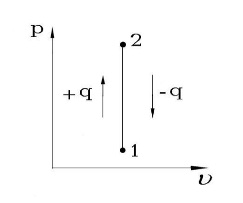
Ակնհայտ է, որ 1–2 պրոցեսը (նկ. 6) ուղեկցվում է գազին ջերմության հաղորդմամբ (\(+q\)), իսկ 2–1 պրոցեսը՝ ջերմության հեռացմամբ (\(-q\))։
Պրոցեսում գազի սկզբնական և վերջնական վիճակների համար գրված վիճակի հավասարումներից՝
Երկրորդ հավասարումը բաժանենք առաջինի վրա.
Քանի որ \(\upsilon = \text{const}\) դեպքում \(L = 0\), ապա
Հետևաբար, իզոխոր պրոցեսում գազին հաղորդված ջերմությունը ծախսվում է նրա ներքին էներգիայի փոփոխման վրա։
Իզոբար են կոչվում հաստատուն ճնշման դեպքում ընթացող պրոցեսները։ Իզոբար պրոցեսի հավասարումն է՝
իսկ գրաֆիկը \(P, \upsilon\) կոորդինատային համակարգում հորիզոնական է (նկ. 7)։
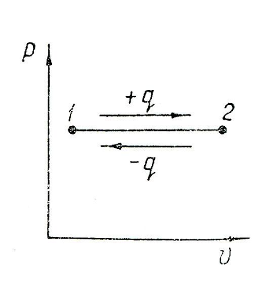
Իզոբար պրոցեսի համար՝
Երկրորդ հավասարումը բաժանենք առաջինի վրա.
Իզոբար պրոցեսում ծավալի աճն ուղեկցվում է ջերմաստիճանի բարձրացմամբ։ Այսպիսով, իզոբար ընդարձակման պրոցեսում աշխատանքի կատարմանը զուգընթաց տեղի է ունենում գազի ներքին էներգիայի աճ։
Ուստի իզոբար ընդարձակման պրոցեսը (1–2 պրոցեսը նկ. 7-ում) ուղեկցվում է ջերմության հաղորդմամբ, իսկ սեղմման պրոցեսը (2–1)՝ ջերմության հեռացմամբ։
Ներքին էներգիայի փոփոխությունը և պրոցեսի ջերմությունը համապատասխանաբար հավասար են՝
քանի որ \(P = \text{const}\), ապա (1.34)-ից հետևում է՝
կամ վիճակի հավասարումը հաշվի առնելով՝
Վերջին արտահայտությունից երևում է, որ իդեալական գազի գազային հաստատունը թվապես հավասար է իզոբար պրոցեսի աշխատանքին՝ ջերմաստիճանը մեկ աստիճանով փոխելիս։
Ջերմադինամիկայի առաջին օրենքի հավասարման մեջ տեղադրելով \(L\)-ի արժեքը (1.51)-ից՝ կստանանք
Հետևաբար, իզոբար պրոցեսում պրոցեսի ջերմությունը թվապես հավասար է աշխատանքային մարմնի էնթալպիայի փոփոխությանը։
Իզոթերմ են կոչվում հաստատուն ջերմաստիճանի դեպքում ընթացող պրոցեսները։ Պրոցեսի հավասարումը բխում է իդեալական գազի վիճակի հավասարումից (\(T = \text{const}\) դեպքում).
Այս պրոցեսի գրաֆիկը \(P, \upsilon\) կոորդինատային համակարգում հավասարակողմ հիպերբոլ է (նկ. 8)։
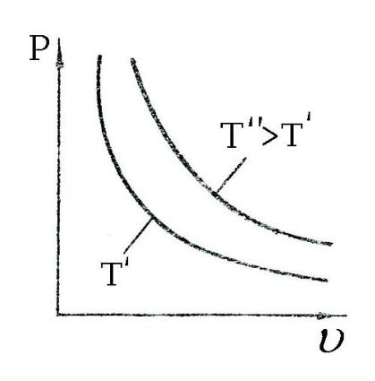
Պրոցեսի հավասարումից հետևում է՝
Քանի որ իզոթերմ պրոցեսում \(dT = 0\), ապա իդեալական գազի դեպքում նաև \(dU = 0\)։ Քանի որ իդեալական գազի իզոթերմ պրոցեսում ներքին էներգիան չի փոխվում, ապա գազին հաղորդվող ամբողջ ջերմությունը ծախսվում է արտաքին աշխատանքի կատարման վրա.
ճնշման ընթացիկ արժեքը հավասար է՝
վերջին արտահայտությունը (1.34)-ի մեջ տեղադրելով՝ կստանանք
և ինտեգրելով՝ կգտնենք
Քանի որ \(P_1\upsilon_1 = RT_1\), ապա
Քանի որ տվյալ դեպքում \(q = L\), ապա (1.56) և (1.56′) արտահայտությունները որոշում են ինչպես իզոթերմ պրոցեսի աշխատանքը, այնպես էլ ջերմությունը։
Հետևաբար, իզոթերմ պրոցեսում ամբողջ հաղորդված ջերմությունը ծախսվում է աշխատանքի կատարման վրա։
Քանի որ \(dT = 0\), իսկ \(dq \neq 0\), ապա իզոթերմ պրոցեսի ջերմունակությունը հավասար է՝
Ադիաբատ է կոչվում այն պրոցեսը, որն ընթանում է շրջակա միջավայրի հետ ջերմափոխանակության բացակայության դեպքում (այսինքն՝ երբ \(q = 0\), կամ, ավելի ճշգրիտ, երբ \(dq = 0\) պրոցեսի ընթացքի ցանկացած տեղամասում)։
Արտածենք այդպիսի պրոցեսի հավասարումը իդեալական գազում։ Ջերմադինամիկայի առաջին օրենքի (1.37) տեսքով գրված հավասարումից հետևում է, որ \(dq = 0\) դեպքում
Իսկ նույն առաջին օրենքի (1.47) տեսքով հավասարումից բխում է, որ նույն պայմանի դեպքում (\(dq = 0\))
Ստացված հավասարություններից երկրորդը բաժանելով առաջինի վրա՝ կունենանք
որտեղ
Ստացված դիֆերենցիալ հավասարումը ինտեգրելով այն պայմանով, որ \(k = \text{const}\), կունենանք
կամ
(1.58) հավասարումը կոչվում է ադիաբատի հավասարում, իսկ նրանում \(k\) ցուցիչը՝ ադիաբատի ցուցիչ։ Ընդ որում, քանի որ համաձայն Մայերի հավասարման (1.21) \(c_p\)-ն միշտ մեծ է \(c_\upsilon\)-ից, ադիաբատի \(k\) ցուցիչը միշտ գերազանցում է մեկը։
Վիճակի պարամետրերի միջև կապը։ (1.58) հավասարումից բխում են իդեալական գազի վիճակի պարամետրերի միջև հետևյալ կապերը ադիաբատ պրոցեսում, որն ընթանում է 1 վիճակից 2 վիճակ.
Նկ. 9-ում հոծ գծով ցույց է տրված ադիաբատ պրոցեսի գրաֆիկը (ադիաբատը)։ Այնտեղ էլ շտրիխային գծով պատկերված է իզոթերմը։ Երկու պրոցեսները (ինչպես սեղմման, այնպես էլ ընդարձակման դեպքում) սկսվում են 1 կետին համապատասխանող վիճակից։ Ինչպես երևում է, ադիաբատն ընթանում է իզոթերմից «ավելի զառիթափ»։ Դա տեղի է ունենում այն պատճառով, որ, օրինակ, գազի ադիաբատ սեղմման ժամանակ ճնշման բարձրացմանը զուգընթաց աճում է նաև ջերմաստիճանը, ինչը հանգեցնում է տեսակարար ծավալի որոշ չափով ավելի փոքր նվազման, քան իզոթերմ սեղմման ժամանակ ճնշման նույն բարձրացման դեպքում։
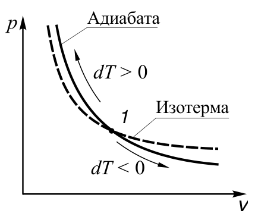
Գազի ջերմունակությունը ադիաբատ պրոցեսում։ Այստեղ \(\Delta q = 0\), և միևնույն ժամանակ \(\Delta T \neq 0\)։ Հետևաբար՝ \(c_{\text{ադ}} = \Delta q/\Delta T = 0\)։
Ջերմություն և աշխատանք։ Ադիաբատ պրոցեսի համար ըստ սահմանման \(q = 0\)։ Ջերմադինամիկայի առաջին օրենքից հետևում է, որ \(q = 0\) դեպքում
այսինքն՝ ադիաբատ պրոցեսում գազի աշխատանքը կատարվում է նրա ներքին էներգիայի նվազման հաշվին։ Հենց այդ պատճառով գազի ադիաբատ ընդարձակումն ուղեկցվում է նրա ջերմաստիճանի նվազմամբ, իսկ սեղմումը՝ բարձրացմամբ, ինչպես երևում է (1.60) բանաձևից։
Հետևաբար, հաշվի առնելով (1.32) բանաձևը՝
(1.57) բանաձևից և Մայերի հավասարումից (1.21) հետևում է, որ
և
Ուստի ադիաբատ պրոցեսում գազի աշխատանքի բանաձևը կարելի է գրել նաև հետևյալ տեսքով.
կամ
Ադիաբատի ցուցիչը։ (1.23)–(1.24) բանաձևերից հետևում է, որ դասական մոլեկուլակինետիկ տեսության համաձայն իդեալական գազի ադիաբատի ցուցիչը կախված է միայն նրա մոլեկուլների ազատության աստիճանների թվից և հավասար է՝
որտեղ \(i\)-ն տվյալ գազի մոլեկուլի ազատության աստիճանների թիվն է։
Հետևաբար, միատոմ գազերի համար (\(i = 3\)) այս տեսության համաձայն \(k = 5/3 = 1{,}67\)։ Երկատոմների համար, որոնց մոտ \(i = 5\) (O₂, N₂ և այլն), \(k = 7/5 = 1{,}40\)։ Իսկ բազմատոմների համար (CO₂, H₂O, CH₄ և այլն), որոնց մոտ \(i = 6\), \(k = 8/6 = 1{,}33\)։
Իրականում, ինչպես արդեն նշվել է, երկատոմ և բազմատոմ գազերի ջերմունակությունները մեծանում են ջերմաստիճանի աճին զուգընթաց։ Իսկ \(c_p - c_\upsilon = R\) տարբերությունը յուրաքանչյուր կոնկրետ գազի համար հաստատուն է։ Ուստի \(k\)-ի արժեքը, որը հավասար է \(c_p/c_\upsilon\)-ի, ջերմաստիճանի աճին զուգընթաց նվազում է, ինչպես ցույց է տրված նկ. 10-ում։
Իսկ եթե դիտարկվող պրոցեսում \(k = c_p/c_\upsilon\) հարաբերության փոփոխությունն էական է, ապա անհրաժեշտ է օգտագործել ադիաբատի հավասարումը այլ տեսքով, որը կդիտարկվի հաջորդ գլխում։
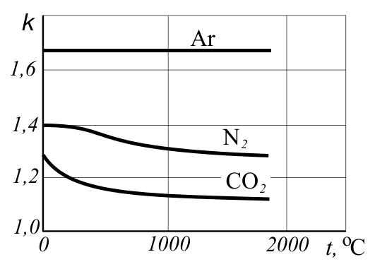
Իդեալական գազում պոլիտրոպ պրոցեսներին են դասվում այն պրոցեսները, որոնք ենթարկվում են հետևյալ հավասարմանը.
որտեղ \(n\)-ը հաստատուն մեծություն է (պոլիտրոպի ցուցիչ)։
Տվյալ պոլիտրոպ պրոցեսի համար պոլիտրոպի ցուցիչը սկզբունքորեն կարող է լինել ցանկացած (\(-\infty\)-ից մինչև \(+\infty\))։
Պոլիտրոպ պրոցեսը կարող է դիտարկվել որպես ընդհանրացնող՝ իդեալական գազերում մյուս հիմնական ջերմադինամիկական պրոցեսների նկատմամբ։ Իրոք, դժվար չէ տեսնել, որ (1.68) հավասարումից \(n = 0\) դեպքում ստացվում է իզոբարի հավասարումը, \(n = 1\) դեպքում՝ իզոթերմի հավասարումը, \(n = k\) դեպքում՝ ադիաբատի, իսկ \(n = \pm\infty\) դեպքում՝ իզոխորի։
Վիճակի պարամետրերի միջև կապը պոլիտրոպ պրոցեսի համար։ (1.68)-ից ադիաբատ պրոցեսի համանմանությամբ դժվար չէ ստանալ պրոցեսում փոփոխվող վիճակի պարամետրերի միջև առնչությունները.
Գազի աշխատանքը պոլիտրոպ պրոցեսում։ Քանի որ պոլիտրոպի հավասարումը (1.68) համանման է ադիաբատի հավասարմանը (1.58), իսկ գազի աշխատանքը ցանկացած հավասարակշռային պրոցեսում հավասար է \(\int p\,d\upsilon\)-ի, ապա պոլիտրոպ պրոցեսում գազի աշխատանքի բանաձևը պետք է համանման լինի (1.65) բանաձևին, այսինքն՝ պոլիտրոպ պրոցեսի համար
կամ
Գազի ջերմունակությունը պոլիտրոպ պրոցեսում։ Ցանկացած պրոցեսում գազին հաղորդված ջերմությունը նրա ջերմաստիճանը \(T_1\)-ից մինչև \(T_2\) բարձրացնելիս հավասար է՝
որտեղ \(c\)-ն գազի ջերմունակությունն է այդ պրոցեսում։
\(q\)-ի, \(\Delta u\)-ի և \(l\)-ի արժեքները ջերմադինամիկայի առաջին օրենքի հավասարման մեջ տեղադրելով՝ կստանանք
կամ հաշվի առնելով Մայերի հավասարումը (1.21) և (1.63) բանաձևը՝
Այսպիսով, յուրաքանչյուր կոնկրետ պոլիտրոպ պրոցեսում ջերմունակությունը կախված է \(c_\upsilon\)-ի, \(k\)-ի և \(n\)-ի արժեքներից, ընդ որում այն կարող է լինել ինչպես դրական, այնպես էլ բացասական (օրինակ՝ երբ \(1 < n < k\))։ Ադիաբատ պրոցեսում (երբ \(n = k\)) այն, ինչպես արդեն նշվել է, հավասար է զրոյի, իսկ իզոթերմ պրոցեսում (երբ \(n = 1\))՝ անվերջության։
Պոլիտրոպ պրոցեսում գազի միավոր զանգվածի կլանած ջերմությունը հավասար է՝
Պոլիտրոպ պրոցեսների դասավորությունը \(p, \upsilon\) կոորդինատներում։ Եթե \(p, \upsilon\) կոորդինատներում ընտրենք ինչ-որ 1 կետ (նկ. 11) և նրանից տանենք հիմնական ջերմադինամիկական պրոցեսները ինչպես ընդարձակման (\(d\upsilon > 0\)), այնպես էլ սեղմման (\(d\upsilon < 0\)) կողմը, ապա այդ կոորդինատների ամբողջ դաշտը կբաժանվի մի քանի տիրույթի։ Յուրաքանչյուր տիրույթում կդասավորվեն այն պրոցեսները, որոնք միավորված են որոշակի հատկությունների ընդհանրությամբ (տիրույթների տառային նշանակումները պահպանված են ըստ նկարի).
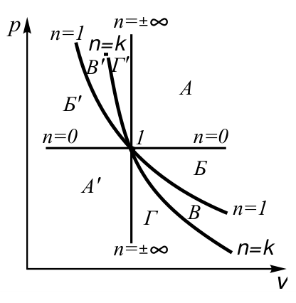
Թարգմանչի նշում. այս թեմայում բնագրի մի քանի հղումներ (օրինակ՝ «(3.11)», «(3.12)», «(3.15)», «նկ. 3.7») վերցված են այլ ձեռնարկից. թարգմանության մեջ դրանք փոխարինված են այս ձեռնարկի համապատասխան բանաձևերի և նկարների համարներով։
Ջերմադինամիկայի կարևորագույն հասկացություններից մեկը շրջելի և անշրջելի պրոցեսների հասկացությունն է։ Համակարգի՝ 1 վիճակից 2 վիճակ անցման պրոցեսը շրջելի է, եթե այդ համակարգի վերադարձը ելակետային վիճակ (2-ից 1) կարող է իրականացվել նույն միջանկյալ վիճակներով, և ընդ որում (համակարգի ելակետային վիճակ վերադառնալուց հետո) շրջակա միջավայրում ոչ մի փոփոխություն չի մնա։ Իսկ եթե այդպիսի վերադարձն անհնար է, ապա տվյալ ուղիղ պրոցեսը անշրջելի է։
Դիտարկենք մի քանի օրինակ։
1. Անկշիռ մխոցի տակ, որը վերևից բեռնված է \(M\) զանգվածով կշռաքարով, գլանում գտնվում է գազ (նկ. 12)։ Մխոցի վերևում վակուում է։ Գլանի և մխոցի միջև շփումը և գազի արտահոսքը բացակայում են։ Ակնհայտ է, որ գազի ճնշումը հավասար է \(p = Mg/F\), որտեղ \(g\)-ն ազատ անկման արագացումն է, իսկ \(F\)-ը՝ մխոցի մակերեսը։ Դիտարկենք այժմ այդ գազի հավասարակշռային ընդարձակման պրոցեսը, որը տեղի է ունենում գլանի պատերի միջով նրան \(Q\) ջերմություն հաղորդելու արդյունքում։ Գազը, ընդարձակվելով հաստատուն ճնշման դեպքում, կշռաքարով մխոցը կբարձրացնի 1 դիրքից 2 դիրք՝ \(h\) բարձրությամբ, և ընդ որում կկատարի աշխատանք ծանրության ուժի դեմ՝ \(L = Mgh\)։
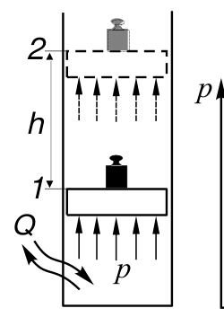
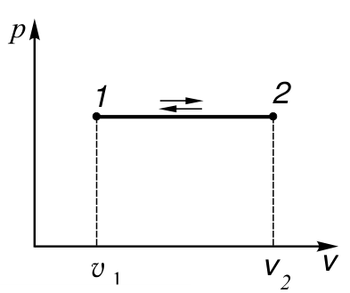
Համակարգը ելակետային վիճակ վերադարձնելու համար հավասարակշռային պրոցեսում գազից վերցնենք նույն քանակի ջերմություն։ Մխոցը կիջնի նույն \(h\) մեծությամբ, և ընդ որում ծանրության ուժը գազի վրա կկատարի նույնպիսի աշխատանք՝ \(L = Mgh\)։
Այսպիսով, համակարգը ելակետային վիճակ վերադարձնելիս արտաքին միջավայրում ոչ մի փոփոխություն տեղի չի ունենա, քանի որ ուղիղ և հակադարձ պրոցեսներում աշխատանքը և ջերմությունը մեծությամբ նույնն են և նշանով՝ հակադիր։ Հետևաբար, գազի ընդարձակման տվյալ պրոցեսը շրջելի է։
Այս պրոցեսի (ինչպես և ցանկացած այլ պրոցեսի) շրջելիության պարտադիր պայմանը նրա հավասարակշռայնությունն է, քանի որ հակառակ դեպքում, օրինակ, մխոցի վրա գազի ճնշումը հավասար չէր լինի գլանում գազի միջին ճնշմանը, ինչը կհանգեցներ աշխատանքի մի մասի կորստի, և այլն։
2. Դիտարկենք գազի ընդարձակման նույն պրոցեսը նույն գլանում, բայց գլանի պատերի հետ մխոցի շփման առկայությամբ։ Դիցուք գազի \(p\) ճնշումը նրա ընդարձակման ժամանակ և մխոցի տեղափոխությունը \(h\) բարձրությամբ նույնն են, ինչ նախորդ դեպքում։ Սակայն շփման առկայության պատճառով \(M'\) կշռաքարի զանգվածը, որը կարող է բարձրացվել մխոցով, կլինի \(M\)-ից փոքր։ Ծանրության ուժի դեմ գազի կատարած աշխատանքը կլինի \(L' = M'gh < L\) (այսինքն՝ փոքր, քան շփման բացակայության դեպքում)։ Իսկ մխոցը գազի նույն ճնշման դեպքում ելակետային դիրք վերադարձնելու համար անհրաժեշտ կլինի կշռաքարով (\(M'\) զանգվածով) մխոցին կիրառել լրացուցիչ ուժ, այսինքն՝ կատարել լրացուցիչ աշխատանք, ինչը կհանգեցնի արտաքին միջավայրի վիճակի փոփոխության։ Հետևաբար, 1–2 պրոցեսն այս դեպքում անշրջելի է։
Բերված օրինակից երևում է անշրջելի պրոցեսի բնութագրական առանձնահատկությունը, որը կայանում է նրանում, որ այդպիսի պրոցեսում արտաքին ուժերի դեմ աշխատանքը այլ հավասար պայմաններում փոքր է այն աշխատանքից, որը կարելի էր ստանալ նրա շրջելի ընթացքի դեպքում։
Տվյալ դեպքում աշխատանքի կորուստը կապված է նրա հետ, որ մխոցի շարժման ժամանակ մեխանիկական աշխատանքի մի մասն անցնում է (շփման արդյունքում) ջերմության, այսինքն՝ գազի միկրոմասնիկների քաոսային շարժման էներգիայի։ Նմանապես, օրինակ, հաղորդչով հաստատուն էլեկտրական հոսանքի անցման ժամանակ էլեկտրոնների ուղղորդված շարժման էներգիայի մի մասն անցնում է հաղորդչի բյուրեղային ցանցի հանգույցների քաոսային ջերմային տատանողական շարժման էներգիայի։ Այդպիսի պրոցեսները կոչվում են դիսիպատիվ։ Դրանց առկայությունը միշտ հանգեցնում է այն ջերմադինամիկական պրոցեսի անշրջելիությանը, որում դրանք դիտվում են։
3. Դիտարկենք գազի ընդարձակումը դատարկության մեջ։ Դիցուք համակարգում (նկ. 13) կան երկու խոռոչ՝ 1 և 2, որոնք միացված են 3 ծորակով փակված խողովակով։ Ձախ խոռոչում գտնվում է \(p_1\) ճնշումով գազ։ Աջ անոթը դատարկ է (վակուումացված)։ Եթե ծորակը բացենք, ապա գազը, ընդարձակվելով, կհոսի աջ անոթ։ Հավասարակշռության հաստատվելուց հետո գազի ճնշումը երկու անոթներում կդառնա միատեսակ և հավասար \(p_2' = p_1' < p_1\)։ Ընդ որում գազը, ընդարձակվելով, տվյալ դեպքում ոչ մի օգտակար աշխատանք չի կատարի։ Սակայն համակարգը ելակետային վիճակ վերադարձնելու, այսինքն՝ ամբողջ գազը ձախ անոթ վերադարձնելու համար կպահանջվի դրսից հաղորդված սեղմման աշխատանք։ Հետևաբար, տվյալ պրոցեսը անշրջելի է։
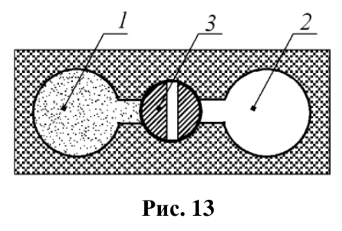
4. Անշրջելի պրոցեսի ևս մեկ բնորոշ օրինակ է ավելի բարձր ջերմաստիճան ունեցող մարմնից ավելի ցածր ջերմաստիճան ունեցող մարմնին ջերմության փոխանցման պրոցեսը։ Ինչպես հայտնի է, եթե տաք մարմնից սառը մարմնին ջերմության փոխանցումը դրանց հպման ժամանակ անցնում է ինքնաբերաբար, ապա հակադարձ պրոցեսը (օրինակ՝ սառնարանում մթերքների սառեցումը) հնարավոր է միայն դրսից էներգիա ծախսելու, այսինքն՝ արտաքին միջավայրի վիճակի փոփոխության դեպքում։
Ընդգծենք, որ ցանկացած ինքնաբերական պրոցես անշրջելի է։ Իրոք, ինքնաբերական պրոցեսն ընթանում է այնքան ժամանակ, մինչև համակարգում հաստատվի հավասարակշռություն։ Իսկ հավասարակշռային վիճակի հասած համակարգն ընդունակ չէ ինքնաբերաբար դուրս գալ այդ վիճակից։ Այլ կերպ ասած՝ հակադարձ պրոցեսը (տվյալ ինքնաբերականի նկատմամբ) կարող է իրականացվել միայն դրսից էներգիա հաղորդելու ճանապարհով, այսինքն՝ արտաքին միջավայրի վիճակի փոփոխության հաշվին։
Նկատենք ընդ որում, որ բոլոր ինքնաբերական պրոցեսներն անհավասարակշռային են, քանի որ որևէ պրոցեսի ինքնաբերական ընթացքը հնարավոր է միայն համակարգում հավասարակշռության բացակայության դեպքում։
Նշենք նաև, որ բնության մեջ կամ տեխնիկական սարքերում ընթացող բոլոր պրոցեսներն այս կամ այն չափով անշրջելի են՝ դրանց ընթացքի վերջավոր արագության պատճառով (որը հանգեցնում է անհավասարակշռության) և (կամ) դիսիպատիվ էֆեկտների, օրինակ՝ շփման, առկայության պատճառով։ Ուստի շրջելի պրոցեսներն իրական անշրջելիների նկատմամբ որոշակի իմաստով իդեալական են և կարող են դիտարկվել որպես սահմանային, որոնց հետ համեմատության ճանապարհով հնարավոր է գնահատել իրական պրոցեսների որակը։
Ջերմադինամիկայի առաջին օրենքը սահմանում է կապ համակարգին հաղորդված ջերմության, նրա կատարած աշխատանքի և համակարգի ներքին էներգիայի փոփոխության միջև։ Բայց այն ոչ մի կերպ չի սահմանափակում համակարգում ընթացող պրոցեսների ուղղությունը։ Մինչդեռ, ինչպես նշվեց, բնության մեջ և տեխնիկական համակարգերում ընթացող բոլոր պրոցեսներն անշրջելի են և չեն կարող ինքնաբերաբար ընթանալ հակադարձ ուղղությամբ։ Բազմաթիվ դիտարկումների և փորձնական փաստերի ընդհանրացումը ջերմային մեքենաների տեսության զարգացման հետ միասին հանգեցրին այն եզրակացության, որ ջերմադինամիկական պրոցեսների ընթացքի ուղղությունը ենթարկվում է ընդհանուր օրենքի, որը ստացել է ջերմադինամիկայի երկրորդ օրենք (երկրորդ սկզբունք) անվանումը։
Գոյություն ունեն այս օրենքի մի շարք ձևակերպումներ, որոնք տարբեր են ձևով, բայց միատեսակ՝ էությամբ։ Բերենք դրանցից մի քանիսը։
Առաջին ձևակերպումը այս օրենքի տրվել է 1850 թ. գերմանացի գիտնական Ռ. Կլաուզիուսի կողմից։ Այն կարելի է գրել այսպես.
«Անհնար է պրոցես, որի միակ արդյունքը կլիներ ջերմության փոխանցումը սառը մարմնից տաք մարմնին»։
Նշենք, որ Ռ. Կլաուզիուսն ընդ որում ընդգծում էր ոչ միայն սառը մարմնից տաքին ջերմության անմիջական ինքնաբերական փոխանցման անհնարինությունը, այլև նման պրոցեսի իրականացման անհնարինությունը որևէ այլ պրոցեսների համակցման ճանապարհով՝ առանց որ շրջակա միջավայրում ինչ-որ փոփոխություններ մնան, այսինքն՝ առանց փոխհատուցող պրոցեսի։ Այսպես, օրինակ, սառնարանում մթերքների սառեցման, այսինքն՝ դրանցից ջերմություն վերցնելու և այն ավելի տաք մթնոլորտին փոխանցելու համար անհրաժեշտ է էլեկտրաէներգիայի ծախս, որն էլ տվյալ դեպքում փոխհատուցող պրոցեսն է։
Երկրորդ ձևակերպումը տրվել է (Ռ. Կլաուզիուսից անկախ) 1851 թ. անգլիացի ֆիզիկոս Վ. Թոմսոնի (Կելվինի) կողմից։ Այն կարելի է ներկայացնել այսպես.
«Անհնար է ստեղծել պարբերաբար գործող մեքենա, որը մեխանիկական աշխատանք կկատարի միայն ջերմության մեկ աղբյուրի սառեցման հաշվին (առանց այլ մարմինների ջերմադինամիկական վիճակի փոփոխության)»։
Դժվար չէ տեսնել, որ այս երկու ձևակերպումները համարժեք են։ Այսպես, եթե հնարավոր լիներ ինչ-որ մարմնից վերցնել ջերմություն և այն փոխակերպել աշխատանքի՝ շրջակա միջավայրում ոչ մի փոփոխություն չթողնելով, ապա հետո կարելի կլիներ այդ աշխատանքն օգտագործել վերցված ջերմությունն ավելի տաք մարմնին փոխանցելու համար (օրինակ՝ շփման միջոցով)։
Նկատենք, որ եթե հնարավոր լիներ ստեղծել շարժիչ, որն օգտակար աշխատանք է արտադրում միայն ջերմություն վերցնելու հաշվին, օրինակ, օվկիանոսի ջրից կամ երկրի մակերևույթից, ապա այդպիսի շարժիչը կարող էր աշխատել հավերժ, քանի որ օվկիանոսի ջրում, երկրում և մթնոլորտում ջերմային էներգիայի պաշարները գործնականում անսահմանափակ են։ Այդպիսի շարժիչը գերմանացի ֆիզիկոս Վ. Օստվալդն անվանեց երկրորդ սեռի հավերժական շարժիչ և տվեց այս օրենքի երրորդ ձևակերպումը.
«Անհնար է ստեղծել երկրորդ սեռի հավերժական շարժիչ»։
Շրջանային պրոցես (ցիկլ) է կոչվում այնպիսի պրոցեսը, որի արդյունքում մարմինը (կամ ամբողջ համակարգը) վերադառնում է ելակետային վիճակին։ Ստորև կդիտարկվեն հավասարակշռային շրջանային պրոցեսներ ինչ-որ աշխատանքային մարմնում։ Այդպիսի պրոցեսը (ցիկլը) կարելի է պատկերել գրաֆիկորեն, օրինակ, \(p, \upsilon\) կոորդինատներում, ընդ որում այդ գրաֆիկը կունենա փակ կորի տեսք։
Նկ. 14-ում պատկերված են այդպիսի երկու գրաֆիկ։ Դիտարկենք դրանցից ձախը (նկ. 14, ա)։ Նրանում \(abc\) ընդարձակման պրոցեսում աշխատանքային մարմինը կատարում է դրական աշխատանք՝ \(l_{\text{ընդ}}\)։ \(fabce\) մակերեսի մեծությունը համարժեք է այդ աշխատանքին։ Ընդարձակումից հետո աշխատանքային մարմինը վերադառնում է ելակետային վիճակ (\(a\) կետ) \(cda\) սեղմման պրոցեսում։ Այդ պրոցեսն իրականացնելու համար անհրաժեշտ է աշխատանքային մարմնին հաղորդել (ծախսել) \(l_{\text{սեղ}}\) աշխատանք, որը համարժեք է \(ecdaf\) մակերեսին, որը, ինչպես երևում է, \(l_{\text{ընդ}}\)-ից փոքր է։ \(l_{\text{ընդ}}\)-ի և \(l_{\text{սեղ}}\)-ի տարբերությունը կոչվում է ցիկլի աշխատանք.
ընդ որում այդ աշխատանքը համարժեք է \(abcda\) պատկերի մակերեսին։ Քանի որ \(cda\) կորը նկ. 14, ա-ում դասավորված է \(abc\) կորից ներքև, ապա տվյալ դեպքում, ինչպես արդեն նշվեց, \(l_{\text{ց}} > 0\), այսինքն՝ ցիկլի իրականացման արդյունքում ստացվում է աշխատանք, որը փոխանցվում է շրջակա միջավայրին։ Այդպիսի ցիկլը կոչվում է ուղիղ։ Նկատենք, որ այդպիսի ցիկլում աշխատանքային մարմնի վիճակի փոփոխության հաջորդականությունը համապատասխանում է \(abcda\) պատկերի (պարագծով) շրջանցմանը ժամացույցի սլաքի ուղղությամբ։
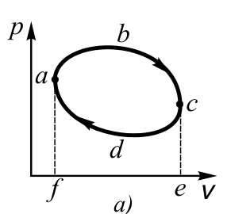
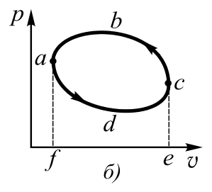
Տարբեր ուղիղ ցիկլեր օգտագործվում են ջերմային մեքենաներում (շարժիչներում), որոնք թույլ են տալիս ստանալ մեխանիկական աշխատանք՝ աշխատանքային մարմնին վառելիքի այրման կամ որևէ այլ եղանակով ստացվող ջերմություն հաղորդելիս։
Նկ. 14, բ-ում պատկերված է ցիկլ, որի ընդարձակման աշխատանքը փոքր է սեղմման աշխատանքից (\(l_{\text{ց}} < 0\)), իսկ \(abcda\) պատկերի պարագծի շրջանցումը կատարվում է ժամացույցի սլաքի ուղղությանը հակառակ։ Այդպիսի ցիկլը կոչվում է հակադարձ։ Հակադարձ ցիկլերն օգտագործվում են սառնարանային մեքենաներում (կայանքներում)՝ սենքերից, տարողություններից և այլնից ջերմություն հեռացնելու համար։ Սառնարանային կայանքը գործարկելու համար, քանի որ այստեղ \(l_{\text{ց}} < 0\), պահանջվում է դրսից հզորության (աշխատանքի) հաղորդում։
Նկատենք ընդ որում, որ ցիկլը շրջելի է, եթե այն բաղկացած է միայն շրջելի ջերմադինամիկական պրոցեսներից։ Քանի որ բոլոր իրական պրոցեսներն անշրջելի են, իրական ջերմային մեքենաներում և սառնարանային կայանքներում իրականացվող բոլոր ցիկլերն անշրջելի են։
Դիտարկենք ավելի մանրամասն ջերմային մեքենայի ցիկլը և աշխատանքի սկզբունքը։ Շրջանային պրոցեսում աշխատանքային մարմնի համար ջերմադինամիկայի առաջին օրենքի հավասարումն ունի հետևյալ տեսքը.
քանի որ նրա ավարտին \(\Delta u = 0\)։
Բայց, համաձայն ջերմադինամիկայի երկրորդ օրենքի, ջերմությունը չի կարող փոխակերպվել աշխատանքի, եթե ընդ որում չի ընթանում որևէ փոխհատուցող պրոցես։ Ջերմային շարժիչներում այդպիսի պրոցես է աշխատանքային մարմնի ստացած ջերմության մի մասի հանձնումը մեկ այլ մարմնի, ընդ որում ոչ այն մարմնին, որից այն ստացվել էր։
Այսպիսով, ջերմային մեքենայի սկզբունքային սխեման պետք է իր մեջ ներառի առնվազն երեք տարր (նկ. 15).
Այսպիսով, օգտակար աշխատանքի է փոխակերպվում ջերմատուից ստացվող ջերմության միայն մի մասը.
Ցիկլի աշխատանքի հարաբերությունը աշխատանքային մարմնին (ջերմատուից) հաղորդված ջերմությանը կոչվում է ջերմային մեքենայի ցիկլի ջերմային օգտակար գործողության գործակից (ՕԳԳ).
Ջերմային ՕԳԳ-ն բնութագրում է ջերմային մեքենայի (շարժիչի) ցիկլի կատարելությունը՝ աշխատանքային մարմնին հաղորդված ջերմությունը օգտակար աշխատանքի փոխակերպելու տեսանկյունից։ Քանի որ ջերմադինամիկայի երկրորդ օրենքի համաձայն միշտ \(q_2 > 0\), ապա բոլոր ջերմային մեքենաների համար \(\eta_t < 1\)։
Ֆրանսիացի ինժեներ Սադի Կառնոն 1824 թ. հրապարակեց աշխատություն, որում առաջարկեց ցիկլ, որը տալիս է ջերմային մեքենայի ցիկլի ջերմային ՕԳԳ-ի առավելագույն արժեքը ջերմատուի և ջերմընդունիչի ջերմաստիճանների տրված արժեքների դեպքում։ Դա ուղիղ շրջելի ցիկլ է, որը բաղկացած է երկու իզոթերմից և երկու ադիաբատից, ցույց է տրված \(p, \upsilon\) կոորդինատներում նկ. 16-ում և ստացել է Կառնոյի ցիկլ անվանումը։
Այս ցիկլը կազմող պրոցեսներն ընթանում են հետևյալ կերպ։ \(T_1\) ջերմաստիճանով ելակետային A վիճակից աշխատանքային մարմինը ընդարձակվում է իզոթերմորեն (\(T = \text{const} = T_1\)) մինչև B վիճակ՝ ջերմատուից ստանալով \(q_1\) ջերմություն։ Հետագա ընդարձակումը տեղի է ունենում BC ադիաբատ պրոցեսում այնքան ժամանակ, մինչև աշխատանքային մարմնի ջերմաստիճանը չիջնի մինչև \(T_2\)։ Աշխատանքային մարմինը ելակետային վիճակ վերադարձնելու համար սկզբում իրականացվում է նրա սեղմումը CD իզոթերմ պրոցեսում \(T = T_2\) դեպքում։ Ընդ որում ջերմընդունիչին հեռացվում է \(q_2\) ջերմություն։ Այնուհետև ցիկլը փակվում է DA ադիաբատ սեղմման պրոցեսով, որում աշխատանքային մարմինը վերադառնում է ելակետային վիճակ։
Քանի որ ցիկլը շրջելի է, ջերմության հաղորդման և հեռացման իզոթերմ պրոցեսները պետք է տեղի ունենան ջերմատուի (տաքացուցիչի) ջերմաստիճանի և AB պրոցեսում աշխատանքային մարմնի \(T_1\) ջերմաստիճանի միջև, ինչպես նաև ջերմընդունիչի (սառեցուցիչի) ջերմաստիճանի և CD պրոցեսում աշխատանքային մարմնի \(T_2\) ջերմաստիճանի միջև անվերջ փոքր տարբերության դեպքում։ Հետևաբար, ջերմատուի ջերմաստիճանը նույնպես հավասար է \(T_1\), իսկ ջերմընդունիչի ջերմաստիճանը՝ \(T_2\)։
Որոշենք Կառնոյի ցիկլի ջերմային ՕԳԳ-ն՝ ենթադրելով, որ աշխատանքային մարմինը իդեալական գազ է, ընդ որում նրա ջերմունակությունը կախված չէ ջերմաստիճանից։
\(q_1\) և \(q_2\) ջերմաքանակները կարող են որոշվել AB և CD իզոթերմ պրոցեսների համար գրված բանաձևով (քանի որ իզոթերմ պրոցեսում \(q = l\)).
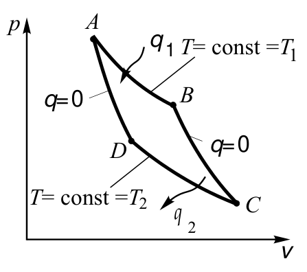
(1.77)-ը և (1.78)-ը (1.76′) բանաձևի մեջ տեղադրելով՝ կստանանք
Բայց BC և DA ադիաբատ պրոցեսների համար կարելի է գրել այսպես.
Հետևաբար՝
Այդ դեպքում, համաձայն (1.79)-ի, իդեալական գազի համար Կառնոյի ցիկլի ջերմային ՕԳԳ-ն հավասար է՝
այսինքն՝ կախված է միայն ջերմատուի և ջերմընդունիչի բացարձակ ջերմաստիճանների հարաբերությունից։
Հենվելով ջերմադինամիկայի երկրորդ օրենքի վրա՝ Սադի Կառնոն ապացուցեց նաև հետևյալ դրույթները, որոնք կրում են Կառնոյի թեորեմներ անվանումը.
Այսպիսով, (1.80) բանաձևով որոշվող Կառնոյի ցիկլի ջերմային ՕԳԳ-ն իրենից ներկայացնում է այն ջերմային մեքենայի ջերմային ՕԳԳ-ի առավելագույն հնարավոր արժեքը, որի ցիկլն իրականացվում է \(T_1\)-ի և \(T_2\)-ի միջև ջերմաստիճանների միջակայքում։
Ս. Կառնոյի ստացած արդյունքների վերլուծությունից բխում է նաև հետևյալը։
Առաջին՝ քանի որ իրականում \(T_1 < \infty\) և \(T_2 > 0\), ապա միշտ \(\eta_t < 1\)։ Փաստորեն դա համընկնում է Վ. Թոմսոնի տված ջերմադինամիկայի երկրորդ օրենքի ձևակերպման հետ։
Երկրորդ՝ եթե \(T_1 = T_2\), ապա Կառնոյի ցիկլի ջերմային ՕԳԳ-ն հավասար է զրոյի։ Հետևաբար, եթե ջերմադինամիկական համակարգի բոլոր մարմիններն ունեն միատեսակ ջերմաստիճան, այսինքն՝ գտնվում են ջերմային հավասարակշռության մեջ, ապա ջերմության փոխակերպումն աշխատանքի անհնար է։
Թեև տեսականորեն Կառնոյի ցիկլն ամենախնայողական ցիկլն է, այն ջերմային մեքենաներում գործնական կիրառություն չի գտել։ Դրա պատճառներից մեկն այն է, որ այդպիսի ցիկլի աշխատանքը (գազի զանգվածի միավորի հաշվով) \(T_1\)-ի և \(T_2\)-ի տրված արժեքների դեպքում էապես (մի քանի անգամ) փոքր է, քան իրականում օգտագործվող այլ ցիկլերինը։ Բացի այդ, Կառնոյի ցիկլում ճնշման բարձրացումը, որն անհրաժեշտ է առավելագույն ջերմաստիճանի (\(T_1\)) նույն արժեքին հասնելու համար, ինչ որ իրականում կիրառվող այլ ցիկլերում, այնքան մեծ է ստացվում (ջերմության հաղորդման պրոցեսի սկզբում ճնշումը պետք է 500 և ավելի անգամ գերազանցի մթնոլորտայինը), որ դրա իրականացումը կապված է կառուցվածքային մեծ դժվարությունների և շարժիչի զանգվածի կտրուկ աճի հետ։
(1.76′) և (1.80) բանաձևերից հետևում է, որ Կառնոյի ցիկլի համար
կամ
Իզոթերմ պրոցեսում \(\dfrac{q}{T}\) մեծությունը (որտեղ \(q\)-ն մարմնին հաղորդված ջերմությունն է) կոչվում է բերված ջերմություն։ Նշանակենք այն \(\left(\dfrac{q}{T}\right)\)։ (1.81) հավասարության մեջ \(q_2\)-ը հեռացված ջերմություն է, ուստի Կառնոյի ցիկլում բերված ջերմությունները հավասար են՝
Եվ այդ դեպքում (1.81) հավասարությունը կարելի է գրել այսպես.
Այսպիսով, Կառնոյի ցիկլում բերված ջերմությունների գումարը հավասար է զրոյի։
Դիտարկենք այնուհետև կամայական շրջելի ցիկլ։ Այն կարելի է ներկայացնել որպես շատ մեծ թվով տարրական Կառնոյի ցիկլերի համախումբ, որոնցից յուրաքանչյուրը բաղկացած է երկու ադիաբատից և երկու անվերջ փոքր իզոթերմից, ինչպես ցույց է տրված նկ. 17-ում։ Իզոթերմներից յուրաքանչյուրի վրա 1–2 տեղամասում տեղի է ունենում շատ փոքր (տարրական) ջերմաքանակի՝ \(\Delta q_{1i}\), հաղորդում համապատասխան \(T_{1i}\) ջերմաստիճանում։ Իսկ 2–1 տեղամասում՝ \(\Delta q_{2i}\) ջերմության հեռացում \(T_{2i}\) ջերմաստիճանում։ Այդպիսի կամայական շրջելի ցիկլի իրականացումը կպահանջի տարբեր ջերմաստիճաններով մեծ քանակությամբ ջերմատուների և ջերմընդունիչների առկայություն։ Հեշտ է տեսնել, որ տարրական Կառնոյի ցիկլերի դիտարկվող համախումբը (դրանց թիվը մինչև անվերջություն մեծացնելիս) համարժեք է ելակետային կամայական ցիկլին։ Իրոք, բոլոր այդպիսի Կառնոյի ցիկլերի գումարային մակերեսը հավասար է տվյալ ցիկլի մակերեսին։ Հետևաբար, այդ մակերեսին համարժեք տվյալ ցիկլի աշխատանքը և տարրական Կառնոյի ցիկլերի համախմբի աշխատանքը նույնպես նույնը կլինեն։ Հաղորդված ջերմության գումարային քանակը կլինի \(q_1 = \sum_1^2 \Delta q_{1i}\) և տարրական ցիկլերի թիվը անվերջության ձգտելիս ճշգրտորեն կհավասարվի տվյալ ցիկլում հաղորդված ջերմության քանակին։ Նույնը կարելի է ասել նաև հեռացված ջերմության մասին՝ \(q_2 = \sum_2^1 \Delta q_{2i}\)։
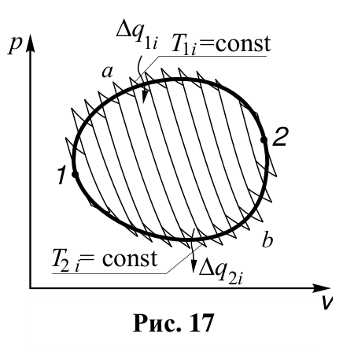
Այդ տարրական Կառնոյի ցիկլերից յուրաքանչյուրի համար բերված ջերմությունների գումարը հավասար է զրոյի, այսինքն՝
Այդ դեպքում, գումարելով այդ Կառնոյի ցիկլերից յուրաքանչյուրի համար գրված այդպիսի հավասարությունները, կստանանք
որտեղ \(n\)-ը այդպիսի Կառնոյի ցիկլերի թիվն է, կամ (երբ \(n \to \infty\))
այսինքն՝
որտեղ \(\oint\) նշանը նշանակում է դիտարկվող ցիկլի ամբողջ փակ եզրագծով վերցված ինտեգրալ։
Այսպիսով, կամայական շրջելի ցիկլում տարրական բերված ջերմությունների ինտեգրալային գումարը հավասար է զրոյի։
Դիտարկենք այժմ անշրջելի ցիկլերը։ Ցանկացած անշրջելի ցիկլում, որն իրականացվում է նույն ջերմատուով (\(T_1\) ջերմաստիճանով) և նույն ջերմընդունիչով (\(T_2\) ջերմաստիճանով), ինչ որ Կառնոյի ցիկլը, ջերմային ՕԳԳ-ն (պրոցեսների անհավասարակշռության և էներգիայի դիսիպացիայի հետևանքով) փոքր կլինի, քան Կառնոյի ցիկլինը.
կամ
որտեղից
կամ
այսինքն՝ բերված ջերմությունների գումարը բացասական է։
Այդ դեպքում, կրկնելով կամայական շրջելի ցիկլի համար վերևում բերված արտածումը, կարելի է ցույց տալ, որ կամայական անշրջելի ցիկլի համար
այսինքն՝ կամայական անշրջելի ցիկլում տարրական բերված ջերմությունների ինտեգրալային գումարը բացասական է։
Միավորելով (1.83) և (1.84) բանաձևերը՝ ընդհանուր դեպքում կունենանք
որտեղ հավասարության նշանը վերաբերում է շրջելի ցիկլերին, իսկ անհավասարության նշանը՝ անշրջելիներին։
(1.85) բանաձևը կոչվում է Կլաուզիուսի անհավասարություն։
Դիտարկենք շրջելի շրջանային պրոցես՝ 1-a-2-b-1 (նկ. 18), որում ինչ-որ մարմին սկզբում անցնում է 1 վիճակից 2 վիճակ 1–a–2 ուղով, իսկ հետո վերադառնում է 1 վիճակ 2–b–1 ուղով։ Համաձայն Կլաուզիուսի անհավասարության՝ այս դեպքում
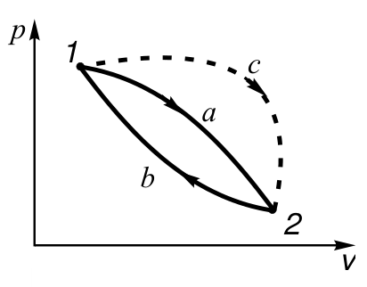
Դիտարկենք այնուհետև նույնպիսի պրոցես, բայց 1 վիճակից 2 վիճակ 1–c–2 ուղով անցումով (տե՛ս նկ. 18)։ Այս դեպքում նույնպես՝
Համեմատելով (1.86)-ը և (1.87)-ը՝ կունենանք.
Բայց այս արդյունքը նշանակում է, որ կամայական շրջելի 1–2 պրոցեսում \(\displaystyle\int_1^2\dfrac{dq}{T}\) ինտեգրալի արժեքը կախված չէ այն ուղուց, որով ընթանում է այդ պրոցեսը, և, հետևաբար, այդ ինտեգրալը հավասար է ինչ-որ վիճակի ֆունկցիայի՝ \(s\)-ի, փոփոխությանը (1 վիճակից 2 վիճակ անցնելիս).
որի դիֆերենցիալը հավասար է՝
Ռ. Կլաուզիուսն այդ ֆունկցիան անվանեց էնտրոպիա։
Ներկայումս էնտրոպիան լայնորեն կիրառվում է ջերմաֆիզիկական պրոցեսների, ջերմային շարժիչների և այլնի հետազոտություններում և հաշվարկներում։ (1.89) բանաձևին համապատասխան որոշված \(s\) էնտրոպիան, այսինքն՝ նյութի զանգվածի միավորի հաշվով (տեսակարար էնտրոպիա), չափվում է Ջ/(կգ·Կ)-ով։ Մարմնի կամ համակարգի էնտրոպիան նշանակվում է \(S\) և չափվում է Ջ/Կ-ով։
Դիտարկենք կամայական շրջելի (և, հետևաբար, հավասարակշռային) պրոցես իդեալական գազում։ Տեղադրելով \(dq\)-ի արժեքը ջերմադինամիկայի առաջին օրենքի հավասարումից և հաշվի առնելով, որ իդեալական գազի համար \(du = c_\upsilon\,dT\), կստանանք
Քանի որ իդեալական գազի համար
ապա այլ կերպ՝
Ինտեգրելով այս հավասարումը \(c_\upsilon\) ջերմունակության հաստատունության պայմանով՝ կունենանք
Կրկնելով այս արտածումը, քանի որ իդեալական գազի համար \(di = c_p\,dT\), նմանապես կստանանք
Հետևաբար, ինչ-որ 1 վիճակից 2 վիճակ անցնելիս իդեալական գազի էնտրոպիայի փոփոխությունը հավասար կլինի՝
կամ
(1.92) և (1.93) հավասարումները, ինչպես նաև (1.90) և (1.91) հավասարումները, ստացված են (1.89) հավասարման օգտագործմամբ, որը ճիշտ է միայն շրջելի պրոցեսների համար։ Բայց, քանի որ էնտրոպիան վիճակի ֆունկցիա է, այս բոլոր բանաձևերը տալիս են իդեալական գազի էնտրոպիայի արժեքները (հաստատուն մեծության ճշտությամբ) կամ դրա փոփոխության արժեքները՝ անկախ նրանից, թե որ պրոցեսում է հասնվել այդ վիճակին։
Նշենք էնտրոպիայի հիմնական հատկությունները։
1. Մի քանի մասից բաղկացած ջերմադինամիկական համակարգի էնտրոպիան (որոնց էնտրոպիաները հավասար են \(S_1, S_2, \ldots, S_n\)) հավասար է նրա բոլոր մասերի էնտրոպիաների գումարին.
Համապատասխանաբար, համակարգի էնտրոպիայի փոփոխությունը հավասար է՝
2. Մարմնի կամ մարմինների համակարգի էնտրոպիան կարող է որոշվել միայն հաստատուն մեծության ճշտությամբ։ Այլ կերպ ասած՝ էնտրոպիայի հաշվարկի սկիզբը կարող է ընտրվել կամայականորեն։ Բայց որևէ պրոցեսում էնտրոպիայի փոփոխությունը կախված չէ հաշվարկի սկզբից և որոշվում է միայն մարմնի (համակարգի) սկզբնական և վերջնական վիճակներով։
3. Տարրական շրջելի պրոցեսում, որում մարմնին կամ համակարգին \(T\) ջերմաստիճանով աղբյուրից հաղորդվում է \(dQ\) ջերմություն, այդ մարմնի (համակարգի) էնտրոպիան աճում է հետևյալ մեծությամբ.
Իսկ եթե այդ տարրական պրոցեսն անշրջելի է, ապա
Ապացուցման համար դիտարկենք հետևյալ շրջանային պրոցեսը։ Դիցուք ինչ-որ մարմին 1 վիճակից անցնում է 2 վիճակ կամայական անշրջելի 1–a–2 պրոցեսով և այնուհետև վերադառնում է ելակետային վիճակ շրջելի 2–b–1 պրոցեսով։ Հետևաբար, 1a2b1 ցիկլն ամբողջությամբ անշրջելի է, և նրա համար ճիշտ է անհավասարությունը.
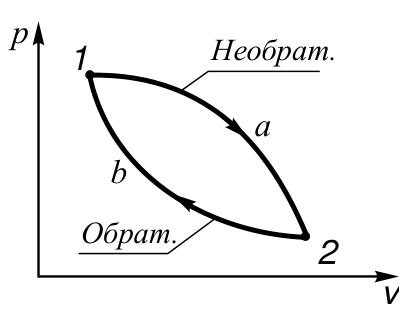
Շրջելի 2–b–1 պրոցեսով վերցված \(\displaystyle\int\left(\dfrac{dq}{T}\right)_{\text{շր}}\) ինտեգրալը, համաձայն (1.89) բանաձևի, հավասար է՝
Հետևաբար, համաձայն (1.84) անհավասարության՝
կամ
Այսպիսով, անշրջելի պրոցեսներում էնտրոպիայի փոփոխությունը միշտ մեծ է տվյալ պրոցեսի բերված ջերմությունների ինտեգրալային գումարից։
Դիֆերենցիալ տեսքով դա կարելի է գրել այսպես.
(1.89) և (1.96) առնչությունները կարելի է միավորել մեկ արտահայտության մեջ.
որտեղ հավասարության նշանը վերաբերում է շրջելի պրոցեսներին, իսկ անհավասարության նշանը՝ անշրջելիներին։
Եթե համակարգը պարունակում է մի քանի մարմին, ապա այս արդյունքը կվերաբերի դրանցից յուրաքանչյուրին։ Եվ քանի որ համակարգի էնտրոպիան հավասար է նրա մեջ մտնող բոլոր մարմինների էնտրոպիաների գումարին, համակարգի համար ամբողջությամբ կունենանք
(1.83)-ի ենթաինտեգրալային ֆունկցիայի համար մտցնենք հետևյալ նշանակումը.
Այդ դեպքում շրջելի շրջանային պրոցեսի համար կարելի է գրել.
\(S\) ֆունկցիան, որի լրիվ դիֆերենցիալը հավասար է \(\dfrac{dq}{T}\)-ի (\(dq\)-ն շրջելի պրոցեսում ջերմությունն է), կոչվում է էնտրոպիա։
Ակնհայտ է, որ \(\displaystyle\int_1^2 ds\) ինտեգրալի մեծությունը, որը որոշված է նյութի՝ 1 վիճակից 2 վիճակ անցման ցանկացած շրջելի պրոցեսի համար, տվյալ նյութի էնտրոպիայի փոփոխությունն է դիտարկվող պրոցեսում։ Էնտրոպիայի այդ փոփոխությունը կախված չէ պրոցեսի ուղուց, այլ կախված է միայն սկզբնական և վերջնական վիճակներում նյութի պարամետրերից։
Իրոք՝
բայց
հետևաբար՝
Այսպիսով, էնտրոպիան վիճակի ֆունկցիա է, որի մեծությունը միարժեքորեն որոշվում է վիճակի պարամետրերով։ Նշենք, որ \(S\)-ով նշանակվում է տեսակարար էնտրոպիան, այսինքն՝ 1 կգ նյութի հաշվով էնտրոպիան \(\left(\dfrac{\text{Ջ}}{\text{կգ}\cdot\text{Կ}}\right)\), իսկ նյութի կամայական քանակի հաշվով էնտրոպիան նշանակվում է \(S\left(\dfrac{\text{Ջ}}{\text{Կ}}\right)\)։
Եթե ջերմադինամիկական համակարգի մեջ մտնում են մի քանի մարմիններ, որոնց էնտրոպիաները հավասար են \(S_1, S_2, \ldots, S_n\), ապա համակարգի էնտրոպիան ամբողջությամբ հավասար է՝
(1.98)-ից երևում է, որ առանձին մարմնի կամ մարմինների համակարգի էնտրոպիան տարբեր շրջելի պրոցեսներում կարող է ինչպես աճել, այնպես էլ նվազել։ Քանի որ \(T\) բացարձակ ջերմաստիճանը միշտ դրական է, ապա մարմնին կամ մարմինների համակարգին ջերմության հաղորդմանը (\(dq > 0\)) համապատասխանում է էնտրոպիայի աճը (\(ds > 0\)), իսկ ջերմության հեռացմանը (\(dq < 0\))՝ նվազումը (\(ds < 0\))։
Իդեալական գազի համար ջերմադինամիկայի առաջին օրենքի հավասարումն ունի հետևյալ տեսքը.
եթե \(P\)-ն փոխարինենք \(\dfrac{RT}{\upsilon}\)-ով (\(P\upsilon = RT\) հավասարումից), ապա
հավասարման երկու մասերը կարելի է բաժանել \(T\)-ի վրա.
կամ
(1.102)-ի ինտեգրումը \(C_\upsilon\) հաստատուն ջերմունակության դեպքում տալիս է՝
Իդեալական գազի վիճակի հավասարումից հետևում է՝
(1.104)-ը (1.103)-ի մեջ տեղադրելով՝ ձևափոխություններից հետո կստանանք
(1.103) կամ (1.105) հավասարումները թույլ են տալիս որոշել էնտրոպիայի փոփոխությունը շրջելի ջերմադինամիկական պրոցեսում, եթե հայտնի են գազի վիճակի պարամետրերը ելակետային և վերջնական կետերում։
Դիտարկենք էնտրոպիայի փոփոխության առանձնահատկություններն անշրջելի պրոցեսներում։ Դիցուք աշխատանքային մարմինն անցնում է 1 վիճակից (նկ. 20) 2 վիճակ կամայական անշրջելի 1a2 պրոցեսով և այնուհետև վերադառնում է ելակետային վիճակ շրջելի 2b1 պրոցեսով։ Ակնհայտ է, որ 1a2b1 ցիկլն անշրջելի է, և նրա համար ճիշտ է անհավասարությունը.
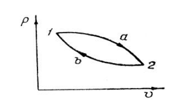
Շրջելի 2b1 պրոցեսով վերցված \(\displaystyle\int_{2b1}\dfrac{dq}{T}\) ինտեգրալը, համաձայն (1.99)-ի, հավասար է էնտրոպիաների տարբերությանը՝ \(S_1 - S_2\).
այդ դեպքում
կամ
Այսպիսով, անշրջելի պրոցեսներում էնտրոպիայի փոփոխությունը միշտ մեծ է տվյալ պրոցեսի բերված ջերմությունների ինտեգրալային գումարից։
Դիֆերենցիալ տեսքով (1.106) հավասարումն ունի հետևյալ տեսքը.
(1.98) և (1.106′) առնչությունները կարելի է միավորել մեկ արտահայտության մեջ.
որտեղ հավասարության նշանը վերաբերում է շրջելի պրոցեսներին, իսկ անհավասարության նշանը՝ անշրջելիներին։
Քանի որ մեկուսացված համակարգի համար \(dq = 0\), ապա (1.107)-ին համապատասխան կարելի է գրել
Այստեղից հետևում է, որ այն մեկուսացված համակարգի էնտրոպիան, որում ընթանում են միայն շրջելի պրոցեսներ, մնում է հաստատուն.
Մեկուսացված համակարգի էնտրոպիան կաճի, եթե նրանում տեղի ունեն անշրջելի պրոցեսներ.
Համակարգի մեջ մտնող առանձին մարմինների էնտրոպիան կարող է մեծանալ կամ փոքրանալ՝ կախված նրանից, թե դրանց ջերմություն է հաղորդվում, թե հեռացվում։ Բայց մեկուսացված համակարգի էնտրոպիան ամբողջությամբ ընդ որում կարող է միայն աճել։
Անշրջելի պրոցեսներում էնտրոպիայի աճը կապված է մեկուսացված համակարգի աշխատունակության նվազման հետ։
Ցանկացած նյութի յուրաքանչյուր վիճակին համապատասխանում են էնտրոպիայի \(S\) և ջերմաստիճանի \(T\) որոշակի արժեքներ։ Եթե կառուցենք կոորդինատային համակարգ, որտեղ օրդինատների առանցքի վրա տեղադրված են \(T\) ջերմաստիճանի արժեքները, իսկ աբսցիսների առանցքի վրա՝ \(S\) էնտրոպիան, ապա այդ կոորդինատներում նյութի հավասարակշռային վիճակը պատկերվում է կետի տեսքով, կամայական շրջելի պրոցեսը՝ որևէ գծով, իսկ ցիկլը՝ գծերի փակ համախմբով։
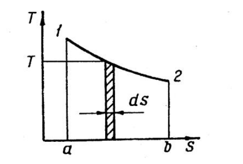
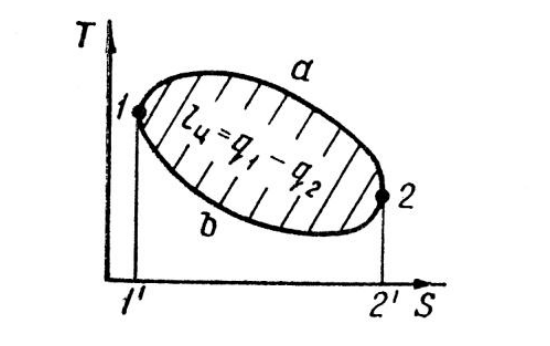
Նկ. 21-ում պատկերված է կամայական 1–2 պրոցես \(T\text{–}S\) կոորդինատներում։ Շտրիխված հարթակի մակերեսը, որը համապատասխանում է էնտրոպիայի \(ds\) տարրական փոփոխությանը որոշակի \(T\) ջերմաստիճանում, հավասար է, ինչպես հետևում է (1.88)-ից, պրոցեսին մասնակցող ջերմության տարրական քանակին՝ \(dq = T\,ds\)։
1–2 պրոցեսի ամբողջ ջերմությունը որոշվում է բանաձևով՝
և \(T\text{–}S\) կոորդինատներում պատկերվում է a12b մակերեսով, որը սահմանափակված է պրոցեսի գծով, պրոցեսի սկզբի՝ 1-a և վերջի՝ 2-b կետերի օրդինատներով և աբսցիսների առանցքով, եթե օրդինատների առանցքի վրա ջերմաստիճանի հաշվարկի սկիզբը \(T = 0\) է։ Եթե պրոցեսում իրականացվում է ջերմության հաղորդում, ապա էնտրոպիան աճում է (\(S_2 > S_1\)), և նյութի վիճակը փոխվում է 1 կետից դեպի 2 կետ ուղղությամբ։ Ջերմության հեռացման դեպքում պատկերը հակառակն է։
Դիտարկենք 1a2b1 ցիկլը \(T\text{–}S\) կոորդինատներում (նկ. 22)։ 1a2 պրոցեսում աշխատանքային մարմնին հաղորդվում է \(q_1\) ջերմություն 1′1a22′1′ մակերեսին համարժեք քանակով։ 2b1 պրոցեսում աշխատանքային մարմնից հեռացվում է \(q_2\) ջերմություն 2′2b11′2′ մակերեսին համարժեք քանակով։ Ակնհայտ է, որ 1a2b1 ցիկլով սահմանափակված մակերեսը հավասար է \(q_1 - q_2 = \ell_{\text{ց}}\), այսինքն՝ ցիկլի աշխատանքին։ \(T\text{–}S\) կոորդինատներում պատկերված ցիկլի ջերմային ՕԳԳ-ն հեշտությամբ որոշվում է որպես \(\ell_{\text{ց}}\)-ին և \(q_1\)-ին համապատասխանող մակերեսների հարաբերություն.
Դիտարկենք հիմնական ջերմադինամիկական պրոցեսների ընթացքը \(T\text{–}S\) կոորդինատներում (նկ. 23)։
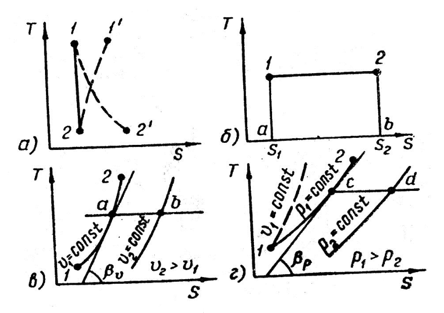
Ադիաբատ պրոցես (նկ. 23ա)։ Այստեղ \(dq = 0\), և հետևաբար
Ինտեգրելով (1.110)-ը՝ կստանանք \(S_1 = S_2 = \text{const}\)։ Շրջելի ադիաբատ պրոցեսին \(T\text{–}S\) կոորդինատներում համապատասխանում է 1-2 ուղղաձիգ գիծը։ Ադիաբատ ընդարձակման ժամանակ գազի ջերմաստիճանն ընկնում է (1-2 պրոցես), իսկ ադիաբատ սեղմման ժամանակ՝ աճում (2-1 պրոցես)։ Շրջելի ադիաբատ պրոցեսում էնտրոպիայի հաստատունության հետևանքով այն անվանում են նաև իզոէնտրոպ։
Անշրջելի ադիաբատ պրոցեսում, օրինակ՝ շփման առկայության դեպքում, էնտրոպիան աճում է։ Ընդ որում էնտրոպիայի աճը տեղի է ունենում ինչպես գազի սեղմման (2-1′ պրոցես նկ. 23ա-ում), այնպես էլ ընդարձակման (1-2′ պրոցես) ժամանակ։ Պրոցեսի կորի տակ գտնվող մակերեսը \(T\text{–}S\) կոորդինատներում այս դեպքում պատկերում է շփման ջերմությունը։
Իզոթերմ պրոցեսը՝ \(T = \text{const}\) (նկ. 23բ), \(T\text{–}S\) կոորդինատներում պատկերվում է 1-2 հորիզոնական գծով։ Պրոցեսի ջերմությունը համարժեք է a12b ուղղանկյան մակերեսին և հավասար է՝
Ջերմության հաղորդման դեպքում էնտրոպիան աճում է, և պրոցեսն ընթանում է 1-ից 2։ Ջերմության հեռացման դեպքում պատկերը հակառակն է։ Իզոթերմ պրոցեսում էնտրոպիայի փոփոխությունը կարող է որոշվել (1.103)-ով կամ (1.105)-ով.
Իզոխոր պրոցեսը՝ \(\upsilon = \text{const}\) (նկ. 23գ), \(T\text{–}S\) կոորդինատներում պատկերվում է 1-2 լոգարիթմական կորով։ (1.103)-ին համապատասխան շրջելի իզոխոր պրոցեսում էնտրոպիայի փոփոխությունը հավասար է՝
կամ
ինտեգրելով՝ կստանանք
Ծավալը \(\upsilon_1\)-ից մինչև \(\upsilon_2\) փոխելիս իզոխորը տեղաշարժվում է ab հատվածով (նկ. 23գ), որի մեծությունը որոշվում է (1.103)-ից \(T\) ջերմաստիճանի հաստատունության պայմանով.
\(\upsilon\)-ի ավելի բարձր արժեքին համապատասխանող իզոխորը դասավորվում է օրդինատների առանցքից ավելի մեծ հեռավորության վրա։
Իզոբար պրոցեսը՝ \(P = \text{const}\) (նկ. 23դ), ինչպես և իզոխորը, \(T\text{–}S\) կոորդինատներում պատկերվում է լոգարիթմական կորով։ Իզոբարը ավելի փոքր թեքությամբ (ավելի հարթ) կոր է, քան իզոխորը։ Դա երևում է իզոխորին և իզոբարին տարված շոշափողների թեքության անկյունների համեմատությունից (նկ. 23դ)։
Շրջելի իզոբար պրոցեսում էնտրոպիայի փոփոխությունը (1.105)-ին համապատասխան հավասար է՝
կամ
և ինտեգրելով՝ կստանանք.
Քանի որ \(C_p > C_\upsilon\), ապա միևնույն \(T\)-ի դեպքում \(\operatorname{tg}\beta_p < \operatorname{tg}\beta_\upsilon\)։ \(P\)-ի տարբեր արժեքների դեպքում իզոբար պրոցեսների կորերը, ինչպես և իզոխորները, միմյանց նկատմամբ հավասարահեռ են։ \(P_1\) և \(P_2\) ճնշումներին համապատասխանող իզոբարների միջև հեռավորությունը (նկ. 23դ) որոշվում է իզոխորների համանմանությամբ (1.105)-ից.
պետք է նշել, որ ի տարբերություն իզոխոր պրոցեսների՝ ճնշման աճին զուգընթաց իզոբարները տեղաշարժվում են դեպի օրդինատների առանցքը։
Պոլիտրոպ պրոցեսներ (նկ. 24)։ Ընդհանուր դեպքում պոլիտրոպը \(T\text{–}S\) կոորդինատներում պատկերվում է կոր գծով, որի տեսքը և դիրքը կախված են \(n\) ցուցիչից։ Նկ. 24-ում \(T\text{–}S\) կոորդինատներում ցույց են տրված պոլիտրոպների բնորոշ խմբերը գազի ընդարձակման տիրույթում։
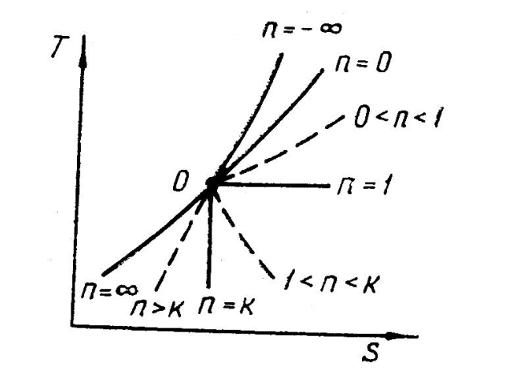
Ավիացիոն կառուցվածքների տարրերում ընթացող պրոցեսները բնութագրվում են գազի (աշխատանքային մարմնի) ուղղորդված շարժմամբ։ Այդ պրոցեսների տեսությունը և հաշվարկը հիմնված են գազային հոսքի ջերմադինամիկական վերլուծության վրա։ Այդ վերլուծությունն իր հերթին հիմնվում է ջերմադինամիկայի առաջին օրենքի՝ էներգիայի պահպանման և փոխակերպման օրենքի վրա։ Ելնելով ջերմադինամիկայի առաջին օրենքից՝ կարելի է ստանալ հոսքում էներգետիկ հաշվեկշիռը նկարագրող հիմնական առնչությունները և բացահայտել աշխատանքային մարմնի պարամետրերի փոփոխության բնույթը։ Այս վերլուծության մեջ կարևոր նշանակություն ունի նաև անընդհատության հավասարումը։
Անհրաժեշտ է նշել, որ ընդհանուր դեպքում թռչող սարքերի և ուժային կայանքների տարրերում գազի շարժումն ունի բարդ բնույթ, և իրական հոսքը ճշգրիտ նկարագրող հավասարումները շատ ծավալուն են, ինչը դժվարացնում է դրանց օգտագործումը վերլուծության և գործնական հաշվարկների համար։ Ուստի գազային հոսքի ջերմադինամիկայի հավասարումները մենք կդիտարկենք հետևյալ հիմնական ենթադրությունների դեպքում.
Պետք է նշել, որ իրական գազային հոսքերում լայնական հատույթի սահմաններում գազի պարամետրերը կարող են լինել փոփոխական։ Այդպիսի հոսքերի համար տարրական շիթիկի հավասարումներն օգտագործելիս դիտարկվում են հոսքի յուրաքանչյուր հատույթի համար միջին մեծություններ (միջին արագություն, միջին խտություն և այլն)։
Անթափանց պատերով խողովակում գազի հոսքի մեջ առանձնացնենք ծավալ, որը սահմանափակված է հոսքի արագությանը ուղղահայաց 1 և 2 հատույթներով (նկ. 25)։
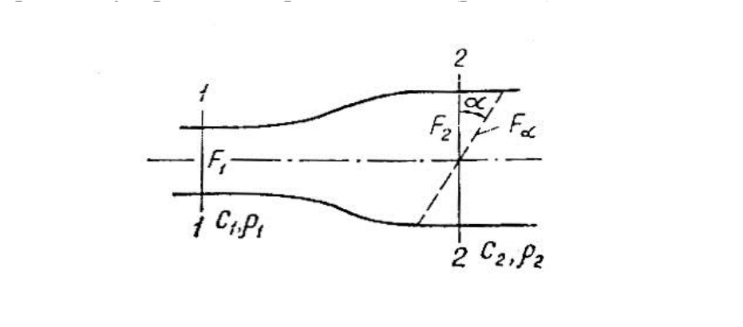
Գազի ծախսը՝ \(G\) կգ/վ, խողովակի (շիթի) լայնական հատույթով միավոր ժամանակում անցնող գազի քանակն է, որը հավասար է՝
որտեղ \(C\)-ն և \(F\)-ը հոսքի արագությունն ու խողովակի լայնական հատույթի մակերեսն են։
Քանի որ հոսքը հաստատված է, դիտարկվող ծավալ մտնող գազի ծախսը հավասար է այդ ծավալից դուրս եկող գազի ծախսին.
Եթե այս պայմանը չկատարվի, ապա 1–2 ծավալում կփոխվի գազի զանգվածը. փոփոխական կլինեն նաև հոսքի պարամետրերը (\(P, T, C\))։ Հետևաբար, ստացիոնար հոսքում խողովակի ցանկացած հատույթով գազի ծախսը միատեսակ է.
կամ
(1.116) հավասարումը իրենից ներկայացնում է ստացիոնար հոսքի անընդհատության հավասարումը։
Լոգարիթմենք (1.116) արտահայտությունը՝
իսկ այնուհետև դիֆերենցելով՝ կստանանք անընդհատության հավասարումը դիֆերենցիալ տեսքով.
Եթե խողովակի պատերը թափանցելի են, և դրանց միջով կարող է ներթափանցել գազ, ապա (1.116) պայմանը չի կատարվում։ Այս դեպքում անընդհատության հավասարումը դիֆերենցիալ տեսքով ունի հետևյալ տեսքը.
Այստեղ \(dG\)-ն գազի ծախսի փոփոխությունն է խողովակի տարրական երկարության վրա։
Հոսքի կամայական հատույթի համար, որը նորմալի ուղղությամբ արագության վեկտորի հետ կազմում է \(\alpha\) անկյուն, ծախսը որոշվում է այսպես.
որտեղ \(F_\alpha\)-ն այն հատույթի մակերեսն է, որը նորմալի ուղղությամբ արագության վեկտորի հետ կազմում է \(\alpha\) անկյուն (տե՛ս նկ. 25)։
Շարժվող գազի համար ջերմադինամիկայի առաջին օրենքի հավասարումն արտացոլում է էներգիայի պահպանման օրենքը կոորդինատային համակարգում, որը շարժվում է առանձնացված հոսքում գազի որոշակի ծավալի հետ միասին։ Ընդ որում գազին հաղորդվող ջերմությունը բաղկացած է ջերմության արտաքին աղբյուրներից հաղորդվող ջերմությունից՝ \(q_{\text{արտ}}\), և շփման ուժերի աշխատանքի արդյունքում անջատվող ջերմությունից՝ \(q_r\)։ Ուստի գազի հոսքի համար ջերմադինամիկայի առաջին օրենքի հավասարումն ունի հետևյալ տեսքը.
(1.118) հավասարումն ընդհանուր է՝ կիրառելի ցանկացած գազային, այդ թվում նաև ոչ ստացիոնար հոսքերի նկատմամբ։
Եթե \(d\upsilon = 0\), ապա
Հետևաբար, եթե հոսքում ծավալի փոփոխության աշխատանք չի կատարվում (\(p\cdot d\upsilon = 0\)), ապա գազին հաղորդված (կամ նրանից հեռացված) ամբողջ ջերմությունը ծախսվում է նրա ներքին էներգիայի փոփոխման վրա։ Անսեղմելի հեղուկը չի կարող ծառայել որպես ջերմային շարժիչների աշխատանքային մարմին։
Գազային հոսքերն ուսումնասիրելիս հաճախ հարմար է ջերմադինամիկայի առաջին օրենքի հավասարումը հետևյալ տեսքով.
Գազային հոսքի էներգիայի պահպանման հավասարումն արտածվում է ջերմադինամիկայի առաջին օրենքի՝ էներգիայի պահպանման և փոխակերպման օրենքի հիման վրա, սակայն ի տարբերություն (1.118) տեսքով ջերմադինամիկայի առաջին օրենքի հավասարման՝ այն գրվում է անշարժ կոորդինատային համակարգում։
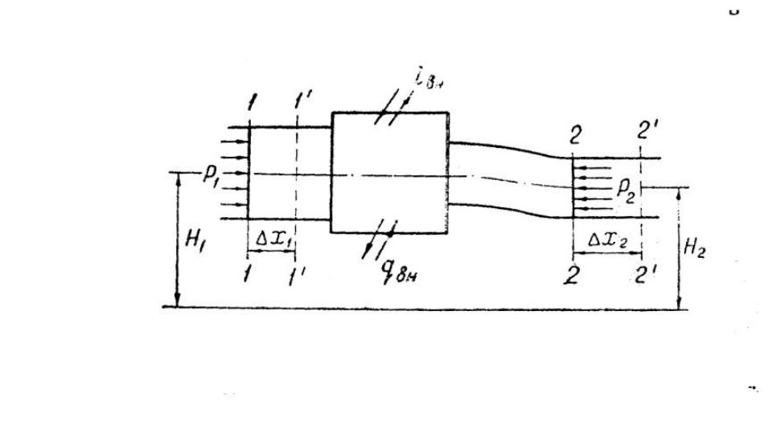
Կազմենք էներգիայի հաշվեկշիռը 1 և 2 հատույթների միջև պարփակված գազի զանգվածի համար (նկ. 26), որը փոքր ժամանակահատվածում տեղափոխվել է 1′–2′ դիրք։
Էներգիայի պահպանման և փոխակերպման օրենքի հիման վրա գազի դիտարկվող զանգվածին դրսից հաղորդված արտաքին էներգիան կհանգեցնի նրա ներքին էներգիայի՝ \(U\), կինետիկ էներգիայի՝ \(e_{\text{կին}}\), և պոտենցիալ էներգիայի՝ \(e_{\text{պոտ}}\), փոփոխության։
Գազին հաղորդված էներգիայի լրիվ քանակը բաղկացած է \(q_\Sigma\) ջերմությունից և արտաքին ուժերի \(\ell_\Sigma\) աշխատանքից։ Այդ դեպքում, նշանների կանոնին համապատասխան (հիշենք, որ ջերմադինամիկայում ընդունված նշանների կանոնի համաձայն մարմնին հաղորդված աշխատանքը համարվում է բացասական, իսկ մարմնի կատարած աշխատանքը՝ դրական)՝
\(q_\Sigma\)-ն բաղկացած է արտաքին ջերմությունից՝ \(q_{\text{արտ}}\), և շփման ջերմությունից՝ \(q_r\).
\(\ell_\Sigma\) աշխատանքը բաղկացած է արտաքին (էֆեկտիվ) աշխատանքից, մղման աշխատանքից և շփման ուժերի աշխատանքից.
\(\ell_{\text{արտ}}\)-ը արտաքին էֆեկտիվ մեխանիկական աշխատանքն է, որը գազին հաղորդվում է արտաքին աղբյուրից (օրինակ՝ կոմպրեսոր) կամ հեռացվում է գազից (օրինակ՝ տուրբին)։
\(\ell_r\)-ը շփման ուժերի աշխատանքն է, որն ամբողջությամբ անցնում է շփման ջերմության.
\(\ell_{\text{մղ}}\)-ը մղման աշխատանքն է։ 1-1 հատույթում ճնշման ուժը գազի վրա կատարում է \((-P_1\upsilon_1)\) աշխատանք, իսկ 2-2 հատույթում գազը կատարում է աշխատանք ճնշման դեմ՝ \((P_2\upsilon_2)\), այդ դեպքում՝
Հոսքում էներգիայի ցանկացած տեսակի փոփոխությունը հավասար է էներգիայի այդ տեսակի տարբերությանը 1–2 և 1′–2′ դիրքերում.
\(\Delta U\)-ն, \(\Delta e_{\text{կին}}\)-ը և \(\Delta e_{\text{պոտ}}\)-ը (1.120) հավասարման մեջ տեղադրելով և բացելով \(q_\Sigma\) և \(\ell_{\text{մղ}}\) մեծությունները՝ կստանանք
քանի որ \(q_r = \ell_r\), ապա
քանի որ \(U + P\upsilon = i\), ապա
Էներգիայի պահպանման (1.122) հավասարման բոլոր մեծությունները վերագրված են 1 կգ գազին (Ջ/կգ)։ Այս հավասարումը ճիշտ է ցանկացած աշխատանքային մարմինների համար դրանց ստացիոնար շարժման դեպքում՝ ինչպես շփման առկայությամբ, այնպես էլ առանց դրա։
Ավիացիոն ուժային կայանքների և ինքնաթիռային համակարգերի տարրերում գազային հոսքերի համար պոտենցիալ էներգիայի փոփոխությունը սովորաբար անտեսում են դրա փոքրության պատճառով՝ \(g(H_2 - H_1) \approx 0\)։ Ուստի հետագայում կհամարենք՝
կամ դիֆերենցիալ տեսքով
(1.123) տեսքով էներգիայի պահպանման հավասարումը կարելի է ձևակերպել այսպես. գազի հոսքին ջերմության և աշխատանքի տեսքով հաղորդված արտաքին էներգիան ծախսվում է գազի էնթալպիայի և կինետիկ էներգիայի փոփոխման վրա։
Իդեալական գազի դեպքում
Ուստի իդեալական գազի համար (1.123) հավասարումը կարելի է ներկայացնել նաև հետևյալ տեսքով.
կամ դիֆերենցիալ տեսքով
Դիցուք գազային հոսքի ինչ-որ հատույթում (նկ. 27) արագությունը, էնթալպիան, ջերմաստիճանը և ճնշումը հավասար են՝ \(C, i, T, P\)։ Այդ պարամետրերով հոսքը պայմանականորեն արգելակենք՝ համարելով, որ շրջակա միջավայրի հետ ջերմափոխանակությունը բացակայում է, այսինքն՝ արգելակումը տեղի է ունենում ադիաբատորեն։ Ադիաբատորեն արգելակված հոսքի պարամետրերը նշանակվում են այսպես՝ \(i^*, T^*, P^*\)։ \(i^*\), \(T^*\) և \(P^*\) մեծությունները կոչվում են նաև՝ լրիվ էնթալպիա, լրիվ ջերմաստիճան, լրիվ ճնշում (կամ արգելակման պարամետրեր)։
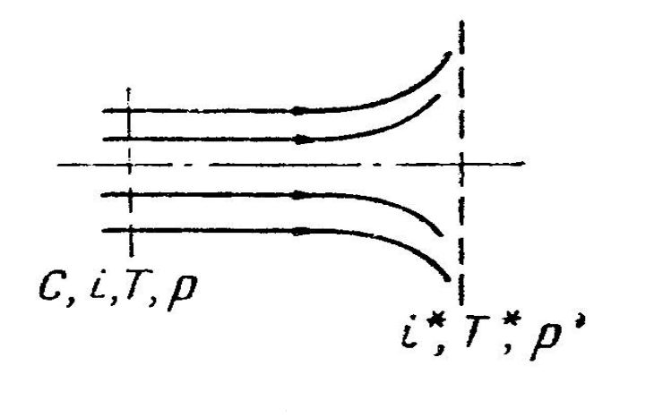
Քանի որ դիտարկվող դեպքում \(q_{\text{արտ}} = 0\) և \(\ell_{\text{արտ}} = 0\), ապա համարելով \(C^* = 0\)՝ (1.123)-ից կգտնենք լրիվ էնթալպիան.
քանի որ
Որոշենք լրիվ ջերմաստիճանը։ Իդեալական գազի համար կարող ենք գրել.
ապա
Էներգամեկուսացված հոսքի (\(q_{\text{արտ}} = 0\), \(\ell_{\text{արտ}} = 0\)) համար (1.123)-ից՝
կամ
Այսպիսով, էներգամեկուսացված հոսքում գազի լրիվ էնթալպիան (էնթալպիայի և կինետիկ էներգիայի գումարը) հաստատուն է.
Իդեալական գազի դեպքում \(i^* = C_pT^*\), այսինքն՝
հետևաբար, իդեալական գազի էներգամեկուսացված հոսքում լրիվ ջերմաստիճանն անփոփոխ է։
Քանի որ
դա նշանակում է, որ էներգամեկուսացված հոսքում հոսքի արագության մեծացումը հնարավոր է միայն ջերմաստիճանի նվազման հաշվին (ներքին էներգիայի փոքրացման հաշվին)։
Կոմպրեսոր։ Նշանակենք \(\ell_{\text{կ}}\)-ով կոմպրեսորում մեկ կգ գազին հաղորդվող աշխատանքը (նկ. 28)։ Քանի որ կոմպրեսորում արտաքին աշխատանքը հաղորդվում է գազին, ապա \(\ell_{\text{արտ}} = -\ell_{\text{կ}}\)։ Գազի և կառուցվածքի տարրերի միջև ջերմափոխանակությունն այստեղ կարելի է անտեսել (\(q_{\text{արտ}} = 0\))։
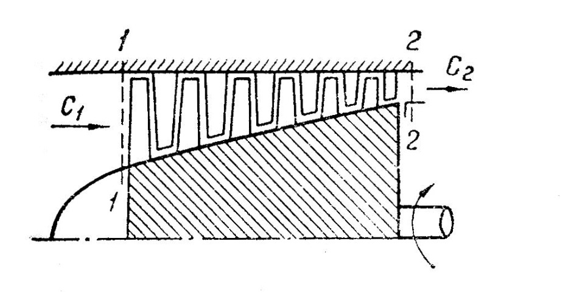
Ուստի կոմպրեսորում գազային հոսքի համար (1.123)-ից հետևում է՝
կամ
այսինքն՝ կոմպրեսորում արտաքին աշխատանքը ծախսվում է գազի լրիվ էնթալպիայի բարձրացման վրա։
Իդեալական գազի դեպքում (առանց շփման) սեղմման պրոցեսը ադիաբատ է.
քանի որ ադիաբատ պրոցեսի համար \(\left(\dfrac{P_2}{P_1}\right) = \left(\dfrac{T_2}{T_1}\right)^{\frac{k}{k-1}}\), ապա կստանանք.
որտեղ \(\pi_{\text{կ}}^* = \dfrac{P_2^*}{P_1^*}\)-ը կոմպրեսորում լրիվ ճնշման բարձրացման աստիճանն է (կոմպրեսորի և շարժիչի հիմնական պարամետրը)։
այդ դեպքում՝
(1.131) և (1.132) արտահայտությունները թույլ են տալիս որոշել կոմպրեսորի աշխատանքն ըստ \(T_1^*\) և \(T_2^*\) արգելակման պարամետրերի։
Իմանալով \(\ell_{\text{կ}}\) աշխատանքը՝ կարելի է գտնել կոմպրեսորը պտտելու համար պահանջվող \(N_{\text{կ}}\) հզորությունը.
որտեղ \(G\)-ն կոմպրեսորով գազի ծախսն է։
Տուրբին։ Քանի որ տուրբինում (նկ. 29) գազը կատարում է աշխատանք, ապա \(\ell_{\text{արտ}} = \ell_{\text{տ}}\), որտեղ \(\ell_{\text{տ}}\)-ն տուրբինի լիսեռի վրա աշխատանքն է՝ վերագրված 1 կգ գազին։ Ընդունելով \(q_{\text{արտ}} \approx 0\)՝ տուրբինում գազային հոսքի համար կստանանք
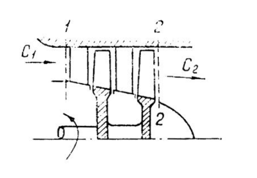
Հետևաբար, տուրբինի լիսեռի վրա աշխատանքը ստացվում է գազային հոսքի լրիվ էնթալպիայի նվազման հաշվին։ Իդեալական գազի դեպքում՝
Դիտարկենք իդեալական տուրբին, որում բացակայում են ջերմափոխանակությունը և շփումը, և ուստի գազի ընդարձակման պրոցեսն ադիաբատ է։ Տուրբինի ադիաբատ աշխատանքը հավասար է՝
որտեղ \(\pi_{\text{տ}}^* = \dfrac{P_1^*}{P_2^*}\)-ը տուրբինում գազի լրիվ ճնշման իջեցման աստիճանն է։
Իմանալով \(\ell_{\text{տ}}\) մեծությունը և գազի \(G\) ծախսը՝ կարելի է գտնել տուրբինի զարգացրած հզորությունը.
Ջերմափոխանակիչ: Այրման խցիկ։ Ջերմափոխանակիչում արտաքին էներգիան հաղորդվում (կամ հեռացվում) է միայն ջերմության տեսքով՝ \(q_{\text{արտ}}\), իսկ \(\ell_{\text{արտ}} = 0\)։ Ուստի
իսկ իդեալական գազի դեպքում նաև՝
(1.137) և (1.138) առնչությունները ճիշտ են նաև այրման խցիկի համար. այս դեպքում \(q_{\text{արտ}}\) արտաքին ջերմություն ասելով հասկանում են այրման խցիկում այրման պրոցեսի արդյունքում 1 կգ գազի հաշվով անջատված ջերմության քանակը։
Էներգիայի պահպանման հավասարումից հանենք ջերմադինամիկայի առաջին օրենքի հավասարումը հետևյալ տեսքով.
հաշվի առնելով, որ \(dq_r = d\ell_r\), կստանանք.
Ստացված հավասարումը կոչվում է Բեռնուլիի ընդհանրացված հավասարում։ Ինտեգրելով (1.139)-ը սկզբնական 1 հատույթից մինչև վերջնական 2 հատույթ (տե՛ս նկ. 30)՝ կստանանք այդ հավասարման ինտեգրալային տեսքը.
Ջերմադինամիկայում (1.140) հավասարման առաջին մասի ինտեգրալը կոչում են տնօրինելի աշխատանք, իսկ \(\upsilon\,dP\) մեծությունը՝ տարրական տնօրինելի աշխատանք։
Տնօրինելի աշխատանքը \(P\text{–}\upsilon\) դիագրամի վրա (նկ. 30) համարժեք է օրդինատների առանցքի և պրոցեսի կորի միջև մակերեսին (12ba մակերես)։
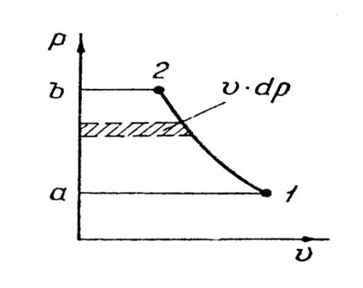
Կոմպրեսորի համար \(\ell_{\text{արտ}} = -\ell_{\text{կ}}\), ուստի
կամ
Հետևաբար, կոմպրեսորում գազին հաղորդվող արտաքին աշխատանքը ծախսվում է սեղմման տնօրինելի աշխատանքի, կինետիկ էներգիայի փոփոխության և շփման ուժերի հաղթահարման աշխատանքի վրա։
Տուրբինի դեպքում \(\ell_{\text{արտ}} = \ell_{\text{տ}}\), ուստի
կամ
Հետևաբար, տուրբինում տնօրինելի աշխատանքը (այստեղ \(dP < 0\)) ծախսվում է արտաքին աշխատանքի (տուրբինի լիսեռի վրա աշխատանքի) ստեղծման, գազի կինետիկ էներգիայի մեծացման և հիդրավլիկական կորուստների հաղթահարման վրա։
Խողովակներում գազի հոսքի ժամանակ (օդառեակտիվ շարժիչի (ՕՌՇ) մուտքային և ելքային սարքեր, օդա- և գազատարներ և այլն) \(\ell_{\text{արտ}} = 0\). այս դեպքում
կամ
Եթե հոսքը տեղի է ունենում առանց շփման, ապա
Վերջին արտահայտությունից հետևում է, որ այդպիսի հոսքում գազի արագացումը (\(dc > 0\)) հնարավոր է միայն նրա ճնշման իջեցման դեպքում (\(dp < 0\)), իսկ արգելակումը (\(dc < 0\)) ուղեկցվում է ճնշման աճով (\(dp > 0\))։ Շփման առկայությունը, բնականաբար, էականորեն ազդում է հոսքի պարամետրերի վրա։ Օրինակ՝ ճնշման իջեցման տրված մակարդակի դեպքում շփման առկայությունը (\(\ell_r > 0\)) կնվազեցնի հոսքի արագության աճը (1.145), և, հակառակը, հոսքի արգելակման դեպքում արագության իջեցման տրված մակարդակի պայմաններում շփման առկայությամբ ճնշումը կաճի ավելի փոքր չափով, քան առանց շփման։
Տնօրինելի աշխատանքի մեծությունը կարող է հաշվարկվել, երբ հայտնի է պրոցեսի հավասարումը։
Եթե պրոցեսը պոլիտրոպ է, ապա \(\displaystyle\int_1^2\upsilon\,dp\) ինտեգրալը ձևափոխություններից հետո կգտնենք՝
կամ
Ստացված արտահայտությունը կոչվում է նաև գազային հոսքի պոլիտրոպ աշխատանք։
Մախի թիվը և բերված արագությունը։ Մախի թիվը հավասար է հոսքի արագության հարաբերությանը ձայնի տեղային արագությանը.
և իրենից ներկայացնում է հոսքի անչափ (հարաբերական) արագությունը, ընդ որում արագության մասշտաբ այստեղ ձայնի տեղային արագությունն է՝ \(a\)։ Մի շարք դեպքերում որպես գազի արագության մասշտաբ հարմար է ընդունել կրիտիկական արագությունը. համապատասխան անչափ մեծությունը կոչվում է բերված արագություն.
որտեղ \(T^*\)-ը հաշվարկվում է հոսքի այն կետում, որին վերաբերում է \(C\) արագությունը։
Բերված արագությունը միարժեքորեն կապված է \(M\) թվի հետ։ Իրոք՝
այսինքն՝
կամ
\(\lambda\)-ն կախված է \(M\)-ից։ (1.150)-ից երևում է, որ՝
\(\lambda\)-ի կախումը \(M\)-ից ցույց է տրված նկ. 31-ում։
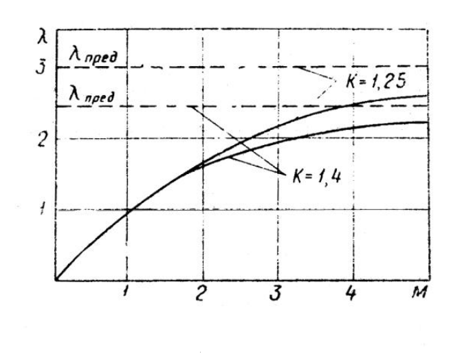
Գազադինամիկական ֆունկցիաներ։ Գազադինամիկական ֆունկցիաներ են կոչվում հոսքի անչափ պարամետրերը, որոնք կախված են բերված արագությունից (և համապատասխանաբար \(M\) թվից)։ Դրանք որոշվում են որպես ստատիկ պարամետրերի հարաբերություն լրիվ պարամետրերին։
Գազադինամիկական ֆունկցիաներին են դասվում, մասնավորապես՝
Դիտարկված ֆունկցիաները բնութագրում են գազի վիճակի պարամետրերի փոփոխությունը։ Ակնհայտ է, որ \(\lambda = 0\) (\(M = 0\)) դեպքում այդ ֆունկցիաները հավասար են 1-ի, իսկ \(\lambda \to \lambda_{\text{սահմ}}\) (\(M \to \infty\)) դեպքում ձգտում են զրոյի (նկ. 32)։
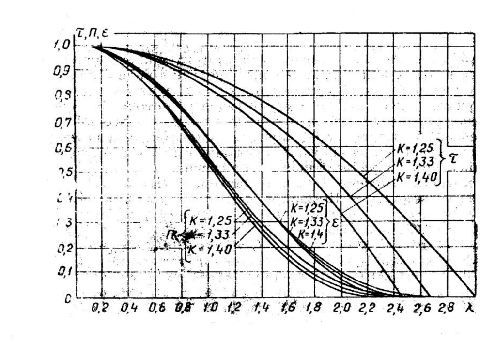
Կարևոր նշանակություն ունեն նաև այն գազադինամիկական ֆունկցիաները, որոնք բնութագրում են գազի ծախսը։ Դրանց է դասվում հոսքի հարաբերական խտությունը (ծախսի խտությունը).
\(q(\lambda)\) մեծությունը կապված է գազի ծախսի հետ հետևյալ կերպ.
\(m\) մեծությունը կախված է գազի տեսակից (\(R, k\)).
Օրինակ՝ օդի համար \(\left(R = 287{,}05\ \dfrac{\text{Ջ}}{\text{կգ}\cdot\text{Կ}}\right)\) \(k = 1{,}4\) դեպքում \(m = 0{,}0404\), իսկ \(k = 1{,}33\) դեպքում \(m = 0{,}0396\)։
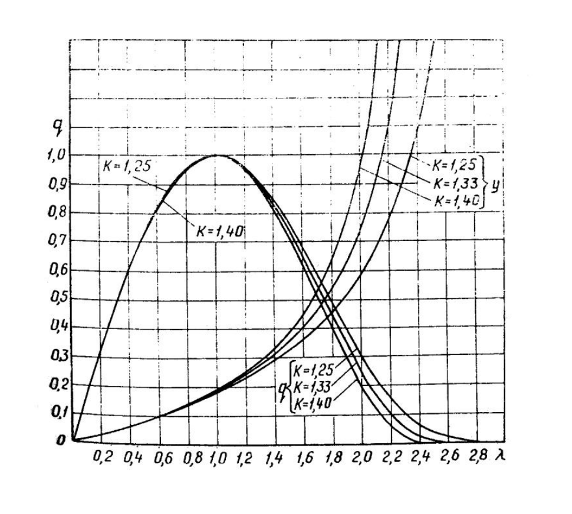
Երբեմն գազի ծախսը հարմար է արտահայտել \(P\) ստատիկ ճնշման միջոցով։ Այս դեպքում օգտագործում են գազադինամիկական ֆունկցիան՝
Կարող ենք գրել նաև՝
\(q(\lambda)\)-ի և \(y(\lambda)\)-ի կախումները \(\lambda\)-ից ցույց են տրված նկ. 33-ում. պետք է ուշադրություն դարձնել այն բանին, որ \(q(\lambda)\) ֆունկցիայի յուրաքանչյուր արժեքին համապատասխանում է արգումենտի երկու արժեք՝ \(\lambda_1 < 1\) (կամ \(M_1 < 1\)) և \(\lambda_2 > 1\) (կամ \(M_2 > 1\)), իսկ \(\lambda = 1\) դեպքում (հոսքի կրիտիկական հատույթում)՝
\(k\)-ի տարբեր արժեքների համար նախապես հաշվարկված գազադինամիկական ֆունկցիաների աղյուսակները մի շարք դեպքերում էականորեն պարզեցնում են գազային հոսքերի վերլուծությունը և հաշվարկը։
Թարգմանչի նշում. այս թեմայում բնագրի հղումները («(5.14)», «(5.20)», «(4.37)», «գլուխ 4», «п. 4.4», «նկ. 5.3») վերցված են այլ ձեռնարկից. թարգմանության մեջ դրանք փոխարինված են այս ձեռնարկի համապատասխան բանաձևերի, թեմաների և նկարների համարներով։
Թռչող սարքերի և դրանց ուժային կայանքների տարրերում գազի (օդի) հոսքն ընդհանուր դեպքում ուղեկցվում է նրա արագության փոփոխությամբ, այսինքն՝ հոսքի արագացմամբ կամ արգելակմամբ։ Գազային հոսքի հիմնական հավասարումները, որոնք դիտարկվեցին վերևում՝ 6-րդ թեմայում, ցույց են տալիս, որ գազի արագության փոփոխությունը հանգեցնում է նաև նրա վիճակի պարամետրերի փոփոխության։ Ընդհանուր դեպքում արագության փոփոխությունը կարող է առաջանալ տարբեր ազդեցություններից, ինչպես, օրինակ, ջերմության և աշխատանքի հաղորդումից կամ հեռացումից, խողովակի անցողիկ հատույթի մակերեսի փոփոխությունից կամ շփումից։ Այդ ազդեցությունների՝ գազի հոսքի վրա ունեցած ազդեցության վերլուծությունը բերվում է ստորև։
Գազային հոսքի վրա խողովակի լայնական հատույթի \(F\) մակերեսի փոփոխման ճանապարհով ազդեցությունը կոչվում է երկրաչափական ազդեցություն։
Ընդ որում խողովակի ձևի փոփոխման հաշվին, այսինքն՝ այն նեղացող (գազի շարժման ուղղությամբ) կամ լայնացող կատարելով, կարելի է գազային հոսքի արագությունը փոխել անհրաժեշտ ուղղությամբ։
Այդպիսի բոլոր խողովակներից ավելի մանրամասն դիտարկենք երկուսը, որոնցում հոսքի առանձնահատկությունների իմացությունը կարևոր է ավիացիոն ուժային կայանքներում և հրթիռային շարժիչներում ընթացող պրոցեսները հասկանալու համար՝ փողրակը և դիֆուզորը։
Փողրակ է կոչվում հատուկ պրոֆիլավորված խողովակը, որը նախատեսված է հոսքի արագացման և գազի կամ հեղուկի շիթի ստացման համար։
Դիֆուզոր է կոչվում այն խողովակը, որում տեղի է ունենում հոսքի արագության նվազում։
Դիտարկենք, թե ինչ ձև պետք է ունենա այն խողովակը, որով հոսում է գազը, որպեսզի ապահովվի նրա արագացումը կամ արգելակումը երկրաչափական ազդեցության հաշվին։ Կհամարենք գազն իդեալական, իսկ նրա հոսքը՝ ընթացող առանց շփման և շրջակա միջավայրի հետ էներգափոխանակության։ Համապատասխանաբար գազի վիճակի փոփոխության պրոցեսը կլինի ադիաբատ։
Ինչպես արդեն նշվել է 6.2 թեմայում, էներգամեկուսացված հոսքում արագության մեծացումը հնարավոր է միայն ստատիկ ճնշման և համապատասխանաբար գազի ջերմաստիճանի իջեցման հաշվին։ Իսկ գազի հոսքի արգելակման ժամանակ նրա ճնշումը և ջերմաստիճանը բարձրանում են։ Գազի ճնշման իջեցումը, համաձայն \(p\upsilon^k = \text{const}\) ադիաբատի հավասարման, ուղեկցվում է նրա տեսակարար ծավալի մեծացմամբ, այսինքն՝ գազն ընդարձակվում է, և նրա խտությունն ընկնում է։ Գազի հոսքի արգելակման ժամանակ այն, ընդհակառակը, սեղմվում է։
Այսպիսով, էներգամեկուսացված հոսքի դեպքում գազային հոսքի արագության և նրա խտության փոփոխությունը հակադիր բնույթ ունի, այսինքն՝ արագության մեծացման դեպքում խտությունը փոքրանում է, և հակառակը։ Ուստի, ինչպես հետևում է անընդհատության հավասարումից, հոսքի արագացման կամ արգելակման համար անհրաժեշտ խողովակի ձևը (լայնական հատույթի \(F = G/(c\rho)\) մակերեսի փոփոխության բնույթը հոսքի ուղղությամբ) որոշվում է արագության փոփոխության ինտենսիվության և գազի խտության փոփոխության ինտենսիվության հարաբերակցությամբ, այսինքն՝ \(c\rho\) մեծության փոփոխությամբ։
Ստորև ցույց կտրվի, որ հոսքի փոքր և չափավոր ենթաձայնային արագությունների դեպքում արագության փոփոխությունն ուղեկցվում է խտության աննշան փոփոխությամբ (այսինքն՝ \(M < 1\) դեպքում \(c\rho\) հոսքի խտության փոփոխությունը որոշվում է արագության փոփոխության բնույթով), և, հետևաբար, հոսքի արագացման համար պահանջվում է խողովակի երկայնքով անցողիկ հատույթների մակերեսի փոքրացում։ Գերձայնային արագությամբ (\(M > 1\)) հոսող հոսքում պատկերը հակառակն է. արագության մեծացումն ուղեկցվում է գազի խտության ավելի ինտենսիվ նվազմամբ և համապատասխանաբար \(c\rho\) մեծության փոքրացմամբ։ Ուստի գազի հոսքի գերձայնային արագությունների դեպքում նրա արագության մեծացման համար պահանջվում է լայնացող խողովակ։
Ապացուցենք այս պնդումը մաթեմատիկորեն։
Համաձայն դիֆերենցիալ տեսքով անընդհատության հավասարման՝
Լոգարիթմելով, իսկ այնուհետև դիֆերենցելով ադիաբատի հավասարումը՝ կստանանք
որտեղից, քանի որ \(\upsilon = 1/\rho\),
Բայց վիճակի հավասարումից \(p = \rho RT\)։ Հետևաբար՝
Այդ դեպքում, հաշվի առնելով, որ էներգամեկուսացված հոսքի համար Բեռնուլիի հավասարման համաձայն \(\dfrac{dp}{\rho} = -c\,dc\), կունենանք
Իսկ քանի որ \(kRT = a^2\), որտեղ \(a\)-ն ձայնի արագությունն է, ապա վերջին հավասարությունը կարելի է գրել հետևյալ կերպ.
(1.160) հավասարումից երևում է, որ հոսքի ենթաձայնային արագությունների դեպքում, երբ \(M^2 < 1\), գազային հոսքի խտությունը փոխվում է ավելի դանդաղ, քան նրա արագությունը։ Այսպես, օրինակ, \(M = 0{,}5\) դեպքում խտությունը նվազում է չորս անգամ ավելի դանդաղ, քան աճում է արագությունը։ Գերձայնային արագությամբ հոսող հոսքում, երբ \(M^2 > 1\), պատկերը հակառակն է. Մախի թվի, օրինակ, \(M = 1{,}5\) արժեքի դեպքում խտությունը նվազում է երկու անգամից ավելի արագ, քան աճում է արագությունը։
(1.158) հավասարման մեջ տեղադրելով \(d\rho/\rho\) մեծությունը (1.160) հավասարումից՝ կստանանք
(1.161) հավասարումը կապում է \(dc\) մեծությունը, որը որոշում է խողովակի երկայնքով հոսքի արագության փոփոխության բնույթը, \(dF\) մեծության հետ, որը բնութագրում է այդ խողովակի անցողիկ հատույթի մակերեսի փոփոխությունը, այսինքն՝ նրա ձևը։
Փողրակի ձևը։ Որոշենք, թե ինչ ձև պետք է ունենա հոսքի արագացման (\(dc > 0\)) համար նախատեսված խողովակը։
Եթե խողովակի մուտքում հոսքի արագությունը փոքր է ձայնի արագությունից (\(M < 1\)), ապա \((M^2 - 1) < 0\)։ (1.161) հավասարումից հետևում է, որ այս դեպքում \(dc > 0\) ստանալու համար պետք է լինի \(dF < 0\), այսինքն, ինչպես արդեն նշվեց վերևում, ենթաձայնային հոսքի արագացման համար խողովակը պետք է լինի նեղացող (նկ. 34, ա)։
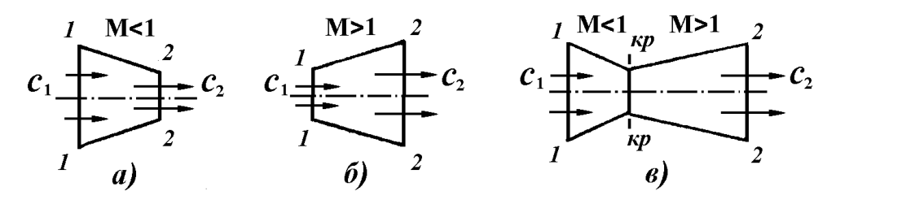
Իսկ եթե խողովակի մուտքում հոսքի արագությունը գերձայնային է (\(M > 1\)), ապա \((M^2 - 1) > 0\), և (1.161) հավասարումից երևում է, որ այս դեպքում պետք է լինի \(dF > 0\)։ Հետևաբար, գերձայնային հոսքի արագացման համար խողովակը պետք է լինի լայնացող (նկ. 34, բ)։
(1.161) բանաձևից հետևում է նաև, որ անհնար է հոսքի արագացում իրականացնել ենթաձայնայինից մինչև գերձայնային արագություն միայն նեղացող կամ միայն լայնացող խողովակում։ Այդ նպատակով անհրաժեշտ է կիրառել համակցված ձևի խողովակ (փողրակ) (նկ. 34, գ), որը բաղկացած է նեղացող և լայնացող տեղամասերից։ Այդպիսի փողրակի նեղացող մասում հոսքն արագանում է մինչև ձայնի արագությանը հավասար արագություն (\(M = 1\)), իսկ լայնացող մասում տեղի է ունենում արդեն գերձայնային հոսքի արագության մեծացում։ Փողրակի նվազագույն հատույթը, որում հոսքի արագությունը հավասար է ձայնի տեղային արագությանը, ընդունված է անվանել կրիտիկական հատույթ։ Հոսքի պարամետրերն այդ հատույթում հավասար են կրիտիկական պարամետրերին։ Տեխնիկական գրականության մեջ այդպիսի նեղացող-լայնացող փողրակն անվանում են (իր գյուտարարի անունով) Լավալի փողրակ։
Դիֆուզորի ձևը։ (1.161) բանաձևի վերլուծությունը, որը համանման է վերևում հոսքի արագացման համար կատարվածին, ցույց է տալիս, որ ենթաձայնային հոսքը (\(M < 1\)) արգելակվում է լայնացող խողովակում (\(dF > 0\), նկ. 35, ա)։ Իսկ եթե դիֆուզորի մուտքում հոսքը գերձայնային է (\(M > 1\)), ապա նրա արգելակման համար անհրաժեշտ է կիրառել նեղացող խողովակ (\(dF < 0\), նկ. 35, բ)։ Հոսքի արագության իջեցումը գերձայնայինից մինչև ենթաձայնային հնարավոր է համակցված (նեղացող-լայնացող) դիֆուզորում (նկ. 35, գ)։ Այդպիսի խողովակի նեղացող մասում գերձայնային հոսքի արագությունն իդեալական հոսքի դեպքում փոքրանում է մինչև ձայնի արագությանը հավասար արագություն (\(M = 1\)), իսկ լայնացող մասում տեղի է ունենում արդեն ենթաձայնային հոսքի հետագա արգելակում։ Դիֆուզորի նվազագույն հատույթը, որտեղ \(M = 1\), այսինքն՝ կրիտիկական հատույթը, ընդունված է անվանել այդպիսի դիֆուզորի «կոկորդ»։
Ենթաձայնային և գերձայնային հոսքերի արգելակման համար անհրաժեշտ դիֆուզորի մակերեսի փոփոխության տարբեր բնույթի պատճառը կայանում է (ինչպես և փողրակի համար) գազի արագության իջեցման ժամանակ նրա խտության աճի տարբեր ինտենսիվության մեջ \(M > 1\) և \(M < 1\) դեպքերում։
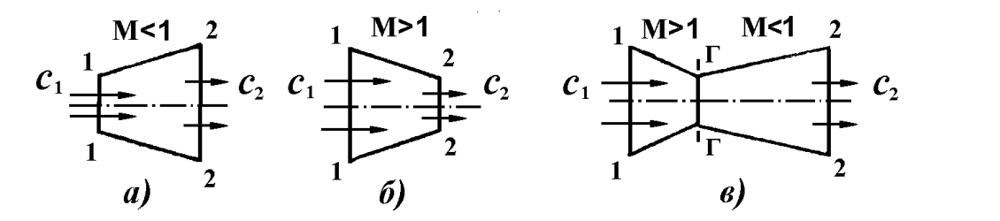
Պետք է նշել, որ գերձայնային հոսքի արգելակման իրական պրոցեսն ուղեկցվում է խտացման ցատկերի (հարվածային ալիքների) առաջացմամբ, որոնցում տեղի է ունենում արագության և օդի պարամետրերի աստիճանաձև փոփոխություն՝ նրա կինետիկ էներգիայի մասնակի դիսիպացիայով։ Սակայն որակապես հոսքի պարամետրերի և անցողիկ հատույթների մակերեսի փոփոխության բնույթը դիֆուզորի երկայնքով իրական պրոցեսում համանման է իդեալական արգելակման դեպքին։
Դիտարկենք ավելի մանրամասն գազի հոսքը փողրակներում։ Ինչպես նախկինում, կհամարենք գազն իդեալական, իսկ հոսքը՝ ընթացող առանց շփման և շրջակա միջավայրի հետ էներգափոխանակության։
Գազի արագացումը, ինչպես նշվել է, ուղեկցվում է ստատիկ ճնշման նվազմամբ։ Ուստի փողրակից առաջ գազի ճնշումը պետք է մեծ լինի այն շրջակա միջավայրի ճնշումից, որի մեջ տեղի է ունենում նրա արտահոսքը։ Հետագայում դիտարկվող նեղացող փողրակի և Լավալի փողրակի սխեմաները և դրանց բնութագրական հատույթների նշանակումները բերված են նկ. 34, ա-ում և 34, գ-ում։
Փողրակում գազի ճնշման իջեցման տնօրինելի աստիճան է կոչվում փողրակի մուտքում գազի լրիվ ճնշման՝ \(p_1^*\), հարաբերությունը շրջակա միջավայրի ճնշմանը՝ \(p_H\).
Փողրակում գազի ճնշման իջեցման իրական աստիճան է կոչվում փողրակի մուտքում գազի լրիվ ճնշման հարաբերությունը փողրակի ելքային հատույթում նրա ստատիկ ճնշմանը.
Գազի ճնշման իջեցման այն աստիճանը, որի դեպքում գազն արագանում է մինչև ձայնի արագությանը հավասար արագություն, կոչվում է կրիտիկական.
Քանի որ, համաձայն (1.153) հավասարման (\(\lambda = 1\) դեպքում), \(p_{\text{կր}} = p_{\text{կր}}^*\left(\dfrac{2}{k+1}\right)^{\frac{k}{k-1}}\), իսկ \(p_{\text{կր}}^* = p_1^*\), ապա
Ինչպես երևում է (1.162) արտահայտությունից, իդեալական գազի համար ճնշման իջեցման կրիտիկական աստիճանը կախված է միայն ադիաբատի \(k\) ցուցիչից (աղ. 4) և օդում կերոսինի այրման արգասիքների համար (\(k = 1{,}25\ldots1{,}33\)) հավասար է 1,80…1,85։
| \(k\)-ի արժեքները | 1,25 | 1,33 | 1,4 | 1,67 |
|---|---|---|---|---|
| \(\pi_{\text{կր}}\)-ի արժեքները | 1,802 | 1,851 | 1,893 | 2,055 |
Կախված փողրակի ելքային հատույթում գազի ստատիկ ճնշման և շրջակա միջավայրի ճնշման հարաբերակցությունից՝ տարբերում են փողրակի աշխատանքի հետևյալ ռեժիմները.
Փողրակներում գազի հոսքի պարամետրերի փոփոխության առանձնահատկությունները դրանց աշխատանքի տարբեր ռեժիմներում կդիտարկվեն ստորև։
Գազի էներգամեկուսացված հոսքի դեպքում նրա արագությունը փողրակի ելքային հատույթում (արտահոսքի արագությունը) որոշվում է էներգամեկուսացված հոսքի համար էներգիայի պահպանման հավասարումից, որը կարող է գրվել հետևյալ տեսքով.
որտեղից
Եթե գազի ջերմունակությունը կախված չէ ջերմաստիճանից, ապա \(i = c_pT\) և
Այդ դեպքում
Քանի որ դիտարկվում է փողրակում գազի ընդարձակման ադիաբատ պրոցեսը, ապա
որտեղից
և ուստի
կամ
Այսպիսով, փողրակից գազի արտահոսքի արագությունը կախված է փողրակից առաջ նրա լրիվ ջերմաստիճանից՝ \(T_1^*\), փողրակում գազի ճնշման իջեցման իրական աստիճանից՝ \(\pi_{\text{փ}}\), և գազի ֆիզիկական հատկություններից (\(k, R\))։
Արտահոսքի \(c_2\) արագության կախումը \(\pi_{\text{փ}}\)-ից ցույց է տրված նկ. 36-ում։
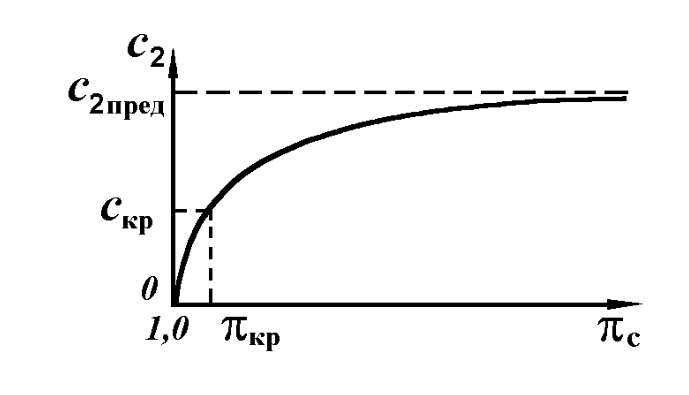
(1.168) բանաձևից և նկ. 36-ից երևում է, որ \(\pi_{\text{փ}} = 1\) դեպքում հոսքը բացակայում է, իսկ եթե \(\pi_{\text{փ}}\) մեծությունը ձգտում է անվերջության, ապա արտահոսքի արագությունը ձգտում է սահմանային մեծության.
Այսպիսով, նույնիսկ \(\pi_{\text{փ}} = \infty\) դեպքում գազի արտահոսքի արագությունն ունի վերջավոր արժեք։ Դա բացատրվում է նրանով, որ, ինչպես արդեն նշվել է 6-րդ թեմայում, էներգամեկուսացված հոսքի դեպքում գազային հոսքի արագության և, հետևաբար, կինետիկ էներգիայի մեծացումը տեղի է ունենում նրա էնթալպիայի նվազման հաշվին, որը փողրակի մուտքում ունի վերջավոր արժեք (\(i_1^* = c_pT_1^*\)) և գազային հոսքի կինետիկ էներգիայի մեջ դրա լրիվ անցման դեպքում կտա նաև \(c_2\) արագության վերջավոր արժեք՝ հավասար \(c_{2\,\text{սահմ}}\)-ի։
Ընդգծենք ևս մեկ անգամ, որ նեղացող փողրակում հոսքը կարելի է արագացնել միայն մինչև ձայնի արագությանը հավասար արագություն։ Ուստի նեղացող փողրակից գազի արտահոսքի առավելագույն արագությունը սահմանափակված է կրիտիկական արագության արժեքով, որը հավասար է՝
Նշենք, որ սահմանային և կրիտիկական արագության միջև գոյություն ունի հետևյալ կախումը.
որտեղ \(k = 1{,}33\ldots1{,}25\) գազի համար \(\lambda_{\text{սահմ}} = 2{,}66\ldots3{,}00\)։
Հոսքի պարամետրերի փոփոխությունը նեղացող փողրակում։ Դիտարկենք գազի իդեալական հոսքի առանձնահատկությունները նեղացող փողրակում։ Քանի որ դիտարկվող հոսքը էներգամեկուսացված է և ընթանում է առանց շփման, ապա գազի արգելակված հոսքի պարամետրերը (\(T^*, p^*, \rho^*\)) փողրակի երկարությամբ մնում են անփոփոխ։ Համաձայն Բեռնուլիի հավասարման՝ այս դեպքի համար \(c\,dc = -dp/\rho\), այսինքն՝ փողրակի երկայնքով ստատիկ ճնշման նվազումը հանգեցնում է արագության, և հետևաբար նաև հոսքի կինետիկ էներգիայի մեծացման։ Դա իր հերթին առաջացնում է էնթալպիայի, այսինքն՝ գազի ջերմաստիճանի նվազում, քանի որ \(T = T^* - c^2/(2c_p)\)։ Ընդհանուր դեպքում նեղացող փողրակից արտահոսքի արագությունը \(\pi_{\text{փ}}\)-ի տրված արժեքի դեպքում կարող է որոշվել (1.168) բանաձևով, իսկ փողրակի ելքային հատույթում գազի \(T_2\) ջերմաստիճանը՝ (1.166) բանաձևով։ Գազի ջերմաստիճանի իջեցման հետևանքով ձայնի տեղային արագության արժեքը (\(a = \sqrt{kRT}\)) փողրակի երկայնքով որոշ չափով փոքրանում է։
Նեղացող փողրակի աշխատանքի ռեժիմները։ Նեղացող փողրակի աշխատանքի ռեժիմը լիովին որոշվում է ճնշման իջեցման տնօրինելի և կրիտիկական աստիճանների (\(\pi_{\text{փ.տն}}\) և \(\pi_{\text{կր}}\)) հարաբերակցությամբ։ Ընդ որում հնարավոր է աշխատանքի երկու ռեժիմ.
Ադիաբատի \(k\) ցուցչի տրված արժեքով գազի համար \(\pi_{\text{կր}}\) մեծությունը հաստատուն է։ Ուստի \(\pi_{\text{փ.տն}}\)-ի և \(\pi_{\text{կր}}\)-ի հարաբերակցությունը կարող է փոխվել միայն \(\pi_{\text{փ.տն}}\)-ի մեծացման կամ փոքրացման հաշվին։
Հետազոտենք նեղացող փողրակում գազի հոսքի առանձնահատկությունները \(\pi_{\text{փ.տն}}\)-ի փոփոխման դեպքում՝ շրջակա միջավայրի \(p_H\) ճնշման փոփոխման հաշվին, \(\pi_{\text{փ.տն}}\)-ի և \(\pi_{\text{կր}}\)-ի միջև երեք բնութագրական հարաբերակցությունների համար։
1. Փողրակում գազի ճնշման իջեցման տնօրինելի աստիճանը փոքր է կրիտիկականից (\(\pi_{\text{փ.տն}} < \pi_{\text{կր}}\))։ Այս դեպքում փողրակի ելքային հատույթում ճնշումը հավասար է շրջակա միջավայրի ճնշմանը (\(p_2 = p_H\)), և ուստի փողրակում գազի ճնշման իջեցման իրական աստիճանը հավասար է տնօրինելիին (\(\pi_{\text{փ}} = \pi_{\text{փ.տն}}\)), այսինքն՝ փողրակում տեղի է ունենում գազի լրիվ ընդարձակում։ Քանի որ \(\pi_{\text{փ.տն}} < \pi_{\text{կր}}\), ապա փողրակում առկա ճնշումների անկումը բավարար չէ հոսքը մինչև ձայնի արագություն արագացնելու համար։ Փողրակից գազի արտահոսքի արագությունն այս դեպքում փոքր է ձայնի արագությունից (\(c_2 < a_2\) և \(M_2 < 1\))։ Փողրակի երկայնքով հոսքի պարամետրերի փոփոխության բնույթը \(\pi_{\text{փ.տն}}\)-ի և \(\pi_{\text{կր}}\)-ի տվյալ հարաբերակցության դեպքում ցույց է տրված նկ. 37, ա-ում։
2. Փողրակում գազի ճնշման իջեցման տնօրինելի աստիճանը հավասար է կրիտիկականին (\(\pi_{\text{փ.տն}} = \pi_{\text{կր}}\))։ Այս դեպքում հոսքի պատկերն ընդհանուր առմամբ համանման է նախորդին, բայց փողրակից գազի արտահոսքի արագությունը հավասար է ձայնի տեղային արագությանը (\(c_2 = a_2\), \(M_2 = 1\))։ Փողրակում գազի ընդարձակումը նույնպես լրիվ է (\(p_2 = p_H\)), և ճնշման իջեցման իրական աստիճանը հավասար է տնօրինելիին (\(\pi_{\text{փ}} = \pi_{\text{փ.տն}} = \pi_{\text{կր}}\))։ Փողրակի աշխատանքի այդպիսի ռեժիմը կարելի է դիտարկել որպես սահմանային նեղացող փողրակում գազի լրիվ ընդարձակմամբ բոլոր ռեժիմներից, երբ նրանում ճնշման իջեցման տնօրինելի աստիճանի լրիվ օգտագործման դեպքում հասնվում է հոսքի առավելագույն հնարավոր արագությանը։ Փողրակի երկայնքով գազի պարամետրերի փոփոխությունը \(\pi_{\text{փ.տն}} = \pi_{\text{կր}}\) դեպքում ցույց է տրված նկ. 37, բ-ում։ Փողրակի ելքային հատույթում հոսքի արագությունը և պարամետրերը հավասար են կրիտիկական արժեքներին։
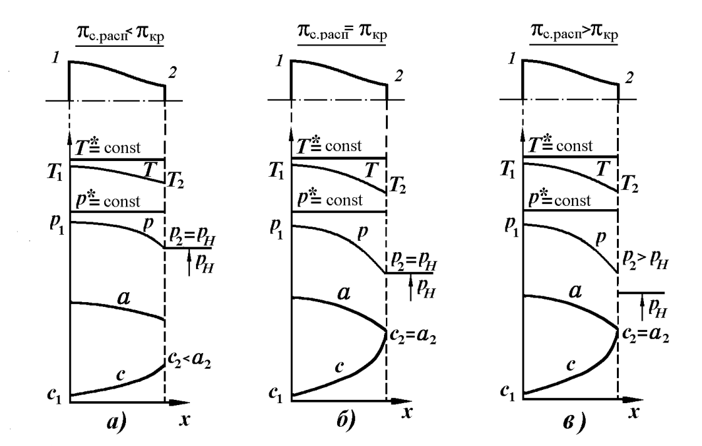
3. Փողրակում գազի ճնշման իջեցման տնօրինելի աստիճանը մեծ է կրիտիկականից (\(\pi_{\text{փ.տն}} > \pi_{\text{կր}}\))։ Չնայած այն բանին, որ ճնշման իջեցման տնօրինելի աստիճանը մեծացել է (կրիտիկականի համեմատ), փողրակից գազի արտահոսքի արագությունը (տրված \(T_1^*\)-ի դեպքում) մնում է անփոփոխ և հավասար կրիտիկականին (\(c_2 = a_2 = c_{\text{կր}}\), \(M_2 = 1\)), քանի որ նեղացող փողրակում հոսքը հնարավոր չէ արագացնել մինչև ձայնի տեղային արագությունը գերազանցող արագություն։ Համապատասխանաբար փողրակի ելքային հատույթում գազի ջերմաստիճանը և ճնշումը, ինչպես նաև \(\pi_{\text{փ}}\)-ն, մնում են հավասար իրենց կրիտիկական արժեքներին։
Նեղացող փողրակի աշխատանքի տվյալ ռեժիմի հիմնական առանձնահատկությունն այն է, որ փողրակում գազի ընդարձակումը ոչ լրիվ է. փողրակի ելքային հատույթում գազի ճնշումը մեծ է շրջակա միջավայրի ճնշումից (\(p_2 > p_H\)), իսկ փողրակում ճնշման իջեցման իրական աստիճանը փոքր է տնօրինելիից (\(\pi_{\text{փ}} < \pi_{\text{փ.տն}}\))։ Հետևաբար, ճնշման իջեցման տնօրինելի աստիճանը փողրակում ամբողջությամբ չի օգտագործվում հոսքի արագության մեծացման համար։
Փողրակի երկայնքով (փողրակի ներսում) հոսքի պարամետրերի փոփոխությունն այս դեպքում (նկ. 37, գ) նույնն է, ինչ նախորդում։
Նկ. 37-ում բերված գրաֆիկները վերաբերում են այն դեպքերին, երբ ճնշման իջեցման տնօրինելի աստիճանը՝ \(\pi_{\text{տն}}\), փոխվում է շրջակա միջավայրի \(p_H\) ճնշման փոփոխման հաշվին։ Սակայն բերված օրինաչափությունները մնում են նույնը, եթե \(\pi_{\text{տն}}\) մեծությունը փոխվում է փողրակի մուտքում \(p_1^*\) լրիվ ճնշման փոփոխման հաշվին \(p_H = \text{const}\) դեպքում։
Այսպիսով, նեղացող փողրակի համար բնութագրական են աշխատանքի միայն երկու ռեժիմ. լրիվ ընդարձակման ռեժիմը (\(\pi_{\text{փ.տն}} \le \pi_{\text{կր}}\)), որի դեպքում \(p_2 = p_H\), \(\pi_{\text{փ}} = \pi_{\text{փ.տն}}\), \(c_2 \le a_2\), \(M_2 \le 1\), և թերընդարձակման ռեժիմը (\(\pi_{\text{փ.տն}} > \pi_{\text{կր}}\)), երբ \(p_2 > p_H\), \(\pi_{\text{փ}} = \pi_{\text{կր}}\), \(c_2 = a_2\), \(M_2 = 1\)։
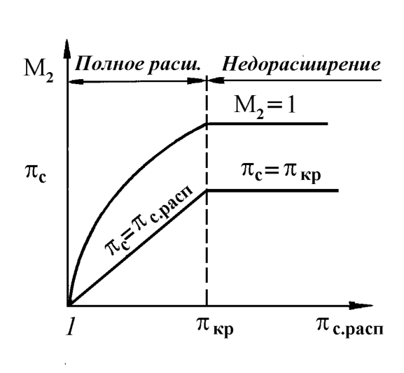
Նկ. 38-ում ցույց են տրված \(\pi_{\text{փ}}\)-ի և \(M_2\) թվի կախումները \(\pi_{\text{փ.տն}}\)-ից։ \(1 < \pi_{\text{փ.տն}} \le \pi_{\text{կր}}\) տիրույթում փողրակն աշխատում է գազի լրիվ ընդարձակման ռեժիմում (\(\pi_{\text{փ}} = \pi_{\text{փ.տն}}\)), ուստի այստեղ \(\pi_{\text{փ}}\)-ի կախումը \(\pi_{\text{փ.տն}}\)-ից իրենից ներկայացնում է այդ պայմանին համապատասխանող ուղիղ գիծ։ \(M_2\) թիվը և, հետևաբար, \(c_2\) արտահոսքի արագությունը \(\pi_{\text{փ.տն}}\)-ի աճին զուգընթաց մեծանում են սկզբում շատ կտրուկ, իսկ հետո ավելի սահուն՝ \(\pi_{\text{փ.տն}} = \pi_{\text{կր}}\) դեպքում հասնելով կրիտիկական մեծությունների (\(M_2 = 1\); \(c_2 = c_{\text{կր}}\))։ \(\pi_{\text{փ.տն}}\)-ի հետագա մեծացումը \(\pi_{\text{փ.տն}} > \pi_{\text{կր}}\) տիրույթում, երբ փողրակն աշխատում է թերընդարձակման ռեժիմում, ինչպես նշվել էր նախկինում, չի փոխում ո՛չ \(\pi_{\text{փ}}\)-ն, ո՛չ \(M_2\)-ը։
\(\pi_{\text{փ.տն}} > \pi_{\text{կր}}\) արժեքների տիրույթում շրջակա միջավայրի \(p_H\) ճնշման փոփոխությունը (\(p_1^* = \text{const}\) դեպքում) չի ազդում փողրակի ելքային հատույթում հոսքի պարամետրերի վրա։ Ֆիզիկապես դա բացատրվում է նրանով, որ գրգռումը, օրինակ՝ \(p_H\) ճնշման փոփոխության տեսքով, գազում տարածվում է ձայնի արագությամբ։ Այն դեպքերում, երբ փողրակի ելքային հատույթում գազի արտահոսքի արագությունը հավասար է ձայնի տեղային արագությանը, շրջակա միջավայրի ճնշման փոփոխությունը չի կարող տարածվել հոսքին ընդառաջ դեպի փողրակի ներսը և ազդել նրանում գազի հոսքի վրա։ Փողրակն ընդ որում կարծես թե «փակված» է։
Նկատենք, որ թեև \(\pi_{\text{փ.տն}} > \pi_{\text{կր}}\) տիրույթում նեղացող փողրակից գազի \(c_2\) արտահոսքի արագությունը չի կարող դառնալ ձայնի տեղային արագությունից մեծ (\(c_2 = a_2 = c_{\text{կր}}\)), դրա արժեքը կարելի է մեծացնել փողրակի մուտքում գազի \(T_1^*\) ջերմաստիճանի մեծացման հաշվին։
Գազի ծախսը փողրակով։ Նեղացող փողրակով գազի ծախսը կարող է որոշվել որպես \(G = c_2\rho_2F_2\)։ Սակայն հաշվարկներում հաճախ ավելի հարմար է լինում օգտագործել փողրակի ելքային հատույթի համար բանաձևը.
որտեղ \(m\) պարամետրի արժեքը որոշվում է գազի հատկություններով (\(k, R\))։ Քանի որ փողրակում գազի իդեալական, էներգամեկուսացված հոսքի դեպքում \(p_2^* = p_1^*\) և \(T_2^* = T_1^*\), ապա (1.170) բանաձևին կարելի է տալ հետևյալ տեսքը.
(1.171) բանաձևից հետևում է, որ նեղացող փողրակով գազի ծախսը կախված է փողրակի մուտքում արգելակված հոսքի պարամետրերից (\(p_1^*, T_1^*\)), փողրակի ելքային հատույթի \(F_2\) մակերեսից, ինչպես նաև փողրակում գազի ճնշման իջեցման իրական աստիճանից, որը որոշում է ելքային հատույթում հոսքի հարաբերական խտության արժեքը՝ \(q(\lambda_2)\)։ Եթե \(\pi_{\text{փ}} = \pi_{\text{կր}}\), ինչը, ինչպես նշվել էր, տեղի ունի \(\pi_{\text{փ.տն}} \ge \pi_{\text{կր}}\) դեպքում, ապա փողրակի ելքային հատույթում գազի պարամետրերը կրիտիկական են, և \(q(\lambda_2) = 1\)։ Այս դեպքում (1.171) բանաձևը կարող է գրվել հետևյալ տեսքով.
Նեղացող փողրակով գազի ծախսի փոփոխության բնույթը՝ կախված ճնշման իջեցման տնօրինելի աստիճանից, կախված է նրանից, թե ինչի հաշվին է փոխվում \(\pi_{\text{փ.տն}}\)-ն՝ շրջակա միջավայրի \(p_H\) ճնշման փոփոխման հաշվին \(p_1^* = \text{const}\) դեպքում, թե փողրակի մուտքում \(p_1^*\) լրիվ ճնշման փոփոխման հաշվին \(p_H = \text{const}\) դեպքում։
Նկ. 39, ա-ում ցույց է տրված փողրակով գազի \(G\) ծախսի կախումը \(\pi_{\text{փ.տն}}\)-ից այն դեպքում, երբ այն փոխվում է շրջակա միջավայրի \(p_H\) ճնշման նվազման հաշվին \(p_1^*\)-ի, \(T_1^*\)-ի և \(F_2\)-ի անփոփոխ արժեքների դեպքում։ \(\pi_{\text{փ.տն}} = 1\) դեպքում փողրակում գազի հոսքը բացակայում է, և \(G = 0\)։ \(\pi_{\text{փ.տն}}\)-ի բարձրացումը \(1 < \pi_{\text{փ.տն}} \le \pi_{\text{կր}}\) տիրույթում հանգեցնում է գազի ծախսի մեծացման՝ արտահոսքի արագության աճի հաշվին այնքան ժամանակ, քանի դեռ այն \(\pi_{\text{փ.տն}} = \pi_{\text{կր}}\) դեպքում չի հասնում ձայնի արագությանը։ \(\pi_{\text{փ.տն}}\)-ի հետագա մեծացումը \(p_H\)-ի իջեցման հաշվին արդեն չի ազդում փողրակում գազի հոսքի պարամետրերի վրա, և ուստի նրանով գազի ծախսը մնում է հաստատուն։
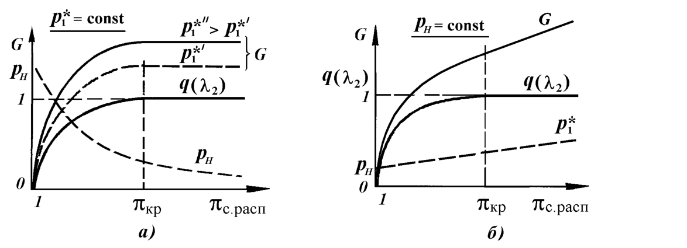
Իսկ եթե \(\pi_{\text{փ.տն}}\)-ն մեծանում է \(p_1^*\)-ի բարձրացման հաշվին \(p_H = \text{const}\) և \(T_1^* = \text{const}\) դեպքում (նկ. 39, բ), ապա լրիվ ընդարձակման ռեժիմներում (\(1 < \pi_{\text{փ.տն}} \le \pi_{\text{կր}}\)) գազի \(G\) ծախսի աճը տեղի է ունենում ինչպես գազի արտահոսքի արագության մեծացման, այնպես էլ փողրակի ելքային հատույթում նրա խտության աճի հաշվին, այսինքն՝ ավելի կտրուկ։ Թերընդարձակման ռեժիմներում (\(\pi_{\text{փ.տն}} > \pi_{\text{կր}}\)), երբ ելքային հատույթում հոսքի արագությունը դառնում է ձայնի արագությանը հավասար, փողրակով գազի ծախսը շարունակում է մեծանալ \(\pi_{\text{փ.տն}}\)-ի աճին զուգընթաց՝ \(p_1^*\)-ին համեմատական։
Նախորդ պարագրաֆներում դիտարկվում էր գազի իդեալական էներգամեկուսացված հոսքը նրա վրա երկրաչափական ազդեցության դեպքում։ Ինքնաթիռների, շարժիչների և այլ կառուցվածքների իրական տարրերում հոսքերը միշտ տեղի են ունենում շփմամբ (էներգիայի դիսիպացիայով) և հաճախ շրջակա միջավայրի հետ էներգափոխանակությամբ։ Հնարավոր է նաև գազի վերցում կամ հաղորդում։ Դիտարկենք իդեալական գազի հոսքը խողովակում հոսքի վրա այդպիսի ազդեցությունների առկայության դեպքում և արտածենք հավասարում, որը հաշվի է առնում դրանց ազդեցությունը հոսքի արագության վրա։
Ընդունված ենթադրությունների դեպքում խողովակում գազի հոսքը նկարագրվում է հավասարումների հետևյալ համակարգով.
1) անընդհատության հավասարմամբ՝
2) էներգիայի պահպանման հավասարմամբ՝
3) Բեռնուլիի ընդհանրացված հավասարմամբ՝
(Այս հավասարումներում \(dl_{\text{արտ}}\)-ը գազին հաղորդվող արտաքին աշխատանքն է։)
Եթե գազն իդեալական է, ապա այս համակարգի մեջ մտնում է նաև նրա վիճակի հավասարումը (դիֆերենցիալ տեսքով).
Այս հավասարումների համատեղ լուծումը հանգեցնում է հետևյալ առնչությանը.
(1.173) հավասարումը թույլ է տալիս որակապես վերլուծել, թե ինչպես են տարբեր ազդեցություններն ազդում ենթաձայնային և գերձայնային հոսքի արագության վրա։ Այսպես, մասնավորապես, հոսքի վրա երկրաչափական ազդեցության դեպքում, այսինքն՝ երբ \(dq_{\text{արտ}} = dl_{\text{արտ}} = dl_{\text{շփ}} = dG = 0\), (1.173) հավասարումն անցնում է (1.161) հավասարմանը, որը վերլուծվել է վերևում։ Դիտարկենք ավելի մանրամասն մյուս ազդեցությունների ազդեցությունը։
Ծախսային ազդեցություն։ Տվյալ դեպքում գազի ծախսը խողովակի երկայնքով փոփոխական է (\(dG \neq 0\)), իսկ մնացած բոլոր ազդեցությունները բացակայում են, այսինքն՝ \(dF = dq_{\text{արտ}} = dl_{\text{արտ}} = dl_{\text{շփ}} = 0\)։ Այդ դեպքում (1.173) հավասարումն ընդունում է հետևյալ տեսքը.
(1.174) հավասարումից երևում է, որ այս դեպքում ենթաձայնային հոսքի (\(M < 1\)) արագացումը տեղի է ունենում \(dG > 0\) դեպքում, այսինքն՝ խողովակի պատերի միջով գազ հաղորդելիս, իսկ ձայնի արագությանը հասնելուց հետո հոսքի հետագա արագացման (\(M > 1\)) համար անհրաժեշտ է փոխել ազդեցության նշանը, այսինքն՝ գազ հեռացնել խողովակից (\(dG < 0\))։
Հաստատուն հատույթով խողովակը, որում գազի արագության մեծացմանը հասնում են նրա երկարությամբ ծախսի փոփոխման հաշվին, կոչվում է ծախսային փողրակ։ Ծախսային փողրակի սխեման բերված է նկ. 40-ում։ Այստեղ լայնական հատույթի հաստատուն մակերեսով (\(dF = 0\)) խողովակում գազը սկզբում հաղորդվում (ներփչվում) է հիմնական հոսքի մեջ, իսկ այնուհետև հեռացվում (ներծծվում) է ծակոտկեն պատերի միջով։
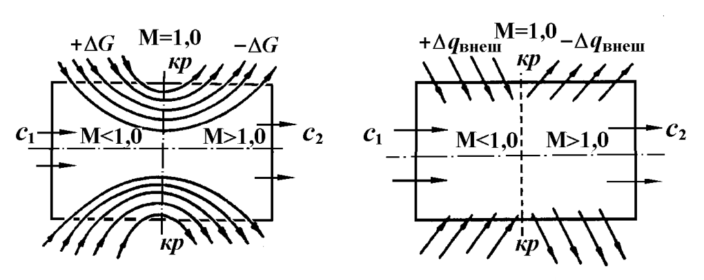
Ֆիզիկապես փողրակում հոսքի վրա ծախսային ազդեցության այսպիսի բնույթը բացատրվում է նրանով, որ փողրակի ենթաձայնային մասում պատերի միջով գազի հաղորդումը կարծես թե փոքրացնում է հիմնական հոսքի շիթի հատույթի մակերեսը (տե՛ս նկ. 40), իսկ գերձայնային մասում գազի հեռացումը մեծացնում է այն։ Պայմանական մակերևույթը, որը բաժանում է հիմնական հոսքը և ծախսային փողրակի պատերի միջով հաղորդվող ու հեռացվող գազի մասը, կազմում է Լավալի փողրակին համարժեք պրոֆիլ։
Հոսքի վրա հակադիր ազդեցությունը, այն է՝ գերձայնային հոսքի դեպքում գազի հաղորդումը և ենթաձայնայինի դեպքում հեռացումը, (1.174) հավասարմանը համապատասխան, հանգեցնում է հոսքի արգելակման (\(dc < 0\))։
Ջերմային ազդեցություն։ Այս դեպքում \(dq_{\text{արտ}} \neq 0\), իսկ \(dF = dl_{\text{արտ}} = dl_{\text{շփ}} = dG = 0\), և (1.173) հավասարումը կընդունի հետևյալ տեսքը.
(1.175) հավասարումից հետևում է, որ ջերմության հաղորդումը (\(dq_{\text{արտ}} > 0\)) գազի ենթաձայնային հոսքին (\(M < 1\)) առաջացնում է նրա արագության աճ, իսկ գերձայնային հոսքի (\(M > 1\)) արագության մեծացման համար ջերմությունը պետք է հեռացվի (\(dq_{\text{արտ}} < 0\))։
Այն խողովակը, որում հոսքի արագացումը տեղի է ունենում ջերմության հաղորդման կամ հեռացման ազդեցությամբ, կոչվում է ջերմային փողրակ (նկ. 40′)։
Ընդգծենք, որ, ինչպես հետևում է (1.175) հավասարումից, գլանային խողովակում ենթաձայնային հոսքը կարելի է արագացնել ջերմության հաղորդման հաշվին միայն մինչև ձայնի տեղային արագությանը հավասար արագություն։ Ձայնի արագությանը հասած հոսքին ջերմության հետագա հաղորդումն առաջացնում է խողովակով գազի ծախսի նվազում՝ նրա խտության իջեցման հետևանքով։ Այս երևույթը կոչվում է «ջերմային ճգնաժամ»։
Գազային հոսքի արգելակման պրոցեսի համանման վերլուծությունը ցույց է տալիս, որ ջերմության հաղորդումը (\(dq_{\text{արտ}} > 0\)) հանգեցնում է գերձայնային հոսքի արգելակման (այսինքն՝ \(M > 1\) դեպքում), իսկ հեռացումը (\(dq_{\text{արտ}} < 0\))՝ ենթաձայնայինի (\(M < 1\) դեպքում)։
Մեխանիկական ազդեցություն։ Այս դեպքում \(dl_{\text{արտ}} \neq 0\), իսկ \(dF = dq_{\text{արտ}} = dl_{\text{շփ}} = dG = 0\), և (1.173) հավասարումն ընդունում է հետևյալ տեսքը.
(1.176) հավասարմանը համապատասխան՝ ենթաձայնային հոսքը (\(M < 1\)), որն արտաքին աշխատանք է կատարում (\(dl_{\text{արտ}} < 0\)), արագանում է։ Իսկ եթե հաստատուն հատույթով խողովակում ենթաձայնային հոսքին հաղորդվում է արտաքին աշխատանք (\(dl_{\text{արտ}} > 0\)), ապա այն արգելակվում է։
Գերձայնային հոսքի դեպքում մեխանիկական ազդեցության էֆեկտը կլինի հակառակը։
Շփման ազդեցություն։ Այս դեպքում \(dl_{\text{շփ}} \neq 0\), իսկ \(dF = dq_{\text{արտ}} = dl_{\text{արտ}} = dG = 0\), և (1.173) հավասարումն ընդունում է հետևյալ տեսքը.
Ի տարբերություն մյուս ազդեցությունների՝ շփման աշխատանքը կարող է լինել միայն դրական (\(dl_{\text{շփ}} > 0\))։ Ուստի շփման առկայությունը մյուս ազդեցությունների բացակայության դեպքում հանգեցնում է ենթաձայնային հոսքի արագացման։ Դա կապված է նրա հետ, որ շփման աշխատանքն անցնում է ջերմության, իսկ, ինչպես ցույց է տրվել նախկինում, ենթաձայնային հոսքին ջերմության հաղորդումն արագացնում է այն։ Սակայն պետք է նկատի ունենալ, որ շփման ազդեցությամբ հոսքի արագացումը (\(dc > 0\)) ուղեկցվում է ճնշման նվազմամբ (\(dp < 0\))։ Ճնշման այդ իջեցումը տեղի կունենա ավելի մեծ չափով, քան այլ ազդեցությունների (օրինակ՝ երկրաչափականի) հաշվին առանց շփման հոսքի համանման արագացման դեպքում, ինչը բացատրվում է շփմամբ հոսքում էներգիայի դիսիպացիայով և դրսևորվում է խողովակի երկայնքով գազի \(p^*\) լրիվ ճնշման նվազմամբ։
Մի շարք ազդեցությունների համատեղ ազդեցությունը խողովակում գազի հոսքի վրա։ Այս հարցը դիտարկենք շփման և երկրաչափական ազդեցության առկայությամբ գազի հոսքի օրինակով։ Այս դեպքում \(dl_{\text{արտ}} = dq_{\text{արտ}} = dG = 0\), և (1.173) հավասարումն ընդունում է հետևյալ տեսքը.
որին համապատասխան այն հատույթում, որտեղ հոսքը հասնում է ձայնի արագությանը, պետք է կատարվի հետևյալ պայմանը.
Քանի որ միշտ \(dl_{\text{շփ}} > 0\), ապա Լավալի փողրակում ձայնի արագությանը շփման առկայության դեպքում հասնվում է, (1.179) հավասարմանը համապատասխան, \(dF > 0\) դեպքում, այսինքն՝ փողրակի լայնացող մասի սկզբում։ Նույն պատճառով նեղացող փողրակում շփումը հանգեցնում է նրան, որ թերընդարձակման ռեժիմում փողրակի ելքային հատույթում հոսքի արագությունը կլինի որոշ չափով փոքր ձայնի արագությունից։
Պատերի միջով ջերմության հաղորդմամբ կամ հեռացմամբ Լավալի փողրակում հոսքի արագացման պրոցեսի համանման վերլուծությունը թույլ է տալիս սահմանել, որ ջերմության հաղորդման դեպքում (\(dq_{\text{արտ}} > 0\)) ձայնի արագությանը հասնվում է փողրակի լայնացող մասում (\(dF > 0\)), իսկ փողրակի պատերի սառեցման դեպքում (\(dq_{\text{արտ}} < 0\))՝ նեղացող մասում (\(dF < 0\))։
Եզրափակելով նշենք, որ, ինչպես ցույց տվեց (1.173) հավասարման վերևում կատարված վերլուծությունը, գազի հոսքի արագացումը կամ արգելակումը տարբեր ազդեցությունների հաշվին պահանջում է դիտարկված ազդեցություններից ցանկացածի նշանի փոփոխություն հակառակի՝ ձայնի արագության միջով անցնելիս։
Ձայնի արագության միջով անցնելիս ազդեցության նշանը փոխելու անհրաժեշտության մասին պնդումը կրում է ազդեցության շրջման օրենք անվանումը։ (1.173) հավասարումն այս օրենքի վերլուծական գրառումն է։ Այս հավասարումը և դրանից բխող հետևանքները ստացվել են ռուս գիտնական Լ. Ա. Վուլիսի կողմից։
Թարգմանչի նշում. 8-րդ և 9-րդ թեմաներում բնագրի որոշ հղումներ բանաձևերին և նկարներին սխալ են (օրինակ՝ «(3.3)», «(2.37)», «նկ. 6.12»), իսկ նկ. 48-ի և 49-ի վրա հղումները տեքստում փոխված են տեղերով. թարգմանության մեջ հղումները համապատասխանեցված են նկարների իրական բովանդակությանը։
Ջերմային շարժիչների ցիկլերի ջերմադինամիկական հետազոտության հիմնական խնդիրը հաղորդված ջերմության աշխատանքի փոխակերպման աստիճանի որոշումն է, այսինքն՝ ցիկլի ջերմային ՕԳԳ-ի և դրա վրա ազդող գործոնների որոշումը։ Հետազոտության ընթացքում որոշվում են նաև հաղորդված՝ \(q_1\) և հեռացված՝ \(q_2\) ջերմությունները, ցիկլի աշխատանքը՝ \(\ell_{\text{ց}}\), գնահատվում են ցիկլի արդյունավետության բարձրացման ուղիները։
Իրական ցիկլերի ջերմային հետազոտությունը դժվար խնդիր է, քանի որ իրական շարժիչում ջերմության փոխակերպումն աշխատանքի կապված է բազմաթիվ բարդ ֆիզիկական, քիմիական և գազադինամիկական պրոցեսների հետ, ինչպիսիք են, օրինակ, վառելիքի այրումը, աշխատանքային մարմնից շարժիչի պատերին ջերմատվությունը, գազի հոսքը շարժիչի տարբեր տարրերում և այլն։
Այդ պրոցեսներից յուրաքանչյուրի առանձնահատկությունների ուսումնասիրությունը ինքնուրույն բարդ գիտական խնդիր է, որը դիտարկվում է շարժիչների տեսության մեջ։
Տեխնիկական ջերմադինամիկայում ուսումնասիրվում են իդեալական ցիկլեր։ Դրանցում իրական պրոցեսներն իդեալականացվում և նույնացվում են շրջելի ջերմադինամիկական պրոցեսների հետ, որոնց նկատմամբ էլ կատարվում են բոլոր հաշվարկները։ Իրական ցիկլերից իդեալականներին անցումը կատարվում է հետևյալ ենթադրությունների դեպքում.
Իդեալական ցիկլի ջերմադինամիկական հետազոտությունը սովորաբար սկսվում է այն \(P, V\) կամ \(T, S\) կոորդինատներում կառուցելուց։ Դրա համար անհրաժեշտ է տալ աշխատանքային մարմնի պարամետրերը՝ \(P_1, T_1, V_1\), ցիկլի ելակետային 1 կետում և իմանալ ցիկլը կազմող ջերմադինամիկական պրոցեսների հավասարումները։ Բացի այդ, յուրաքանչյուր կոնկրետ ցիկլի համար լրացուցիչ տրվում են ցիկլի որոշ անչափ պարամետրեր, որոնք իրենցից ներկայացնում են աշխատանքային մարմնի համանուն պարամետրերի հարաբերություններ՝ ցիկլի բնութագրական կետերում նրա վիճակներին վերաբերող։
Ցիկլի այդպիսի պարամետրերից են՝
Այս անչափ պարամետրերը որոշում են աշխատանքային մարմնի պարամետրերի փոփոխության սահմանները ցիկլում սեղմման կամ ջերմության հաղորդման ժամանակ։
Ջերմային մեքենաների ցիկլերի հետազոտման ջերմադինամիկական մեթոդի ընդհանուր նշանակությունը կայանում է նրանում, որ այդ հետազոտությունը թույլ է տալիս սահմանել ցիկլի տեսականորեն ամենամեծ ՕԳԳ-ն, այսինքն՝ գնահատել հետազոտվող ցիկլում ջերմության աշխատանքի փոխակերպման արդյունավետության սահմանային աստիճանը։
Բրայթոնի ցիկլը, որը պատկերված է նկ. 41-ում \(P\text{–}V\) և \(T\text{–}S\) կոորդինատներում, բաղկացած է երկու ադիաբատ և երկու իզոբար պրոցեսից և իրականացվում է հետևյալ կերպ։ Ելակետային 1 վիճակից աշխատանքային մարմինը սեղմվում է 1-2 ադիաբատ պրոցեսում։
2-3 իզոբար պրոցեսում նրան հաղորդվում է \(q_1\) ջերմություն։ Այնուհետև տեղի է ունենում աշխատանքային մարմնի ադիաբատ ընդարձակում 3-4 պրոցեսում մինչև \(P_4\) ճնշումը, որը հավասար է ելակետային \(P_1\) ճնշմանը։ \(q_2\) ջերմության հեռացումը տեղի է ունենում 4-1 իզոբար պրոցեսում, որի արդյունքում աշխատանքային մարմինը վերադառնում է ելակետային վիճակ։
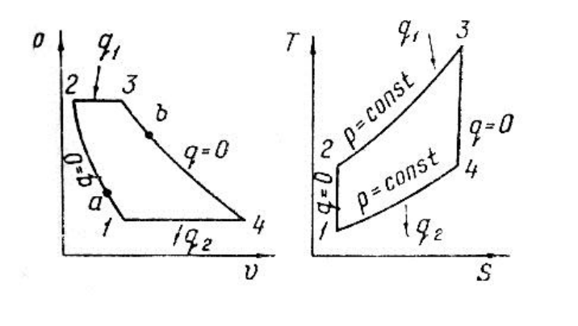
Այս ցիկլի հետազոտման համար տրվում են աշխատանքային մարմնի պարամետրերը ելակետային 1 կետում, ինչպես նաև՝
Տվյալ ցիկլի (ինչպես և մյուս ցիկլերի) 2, 3 և 4 բնութագրական կետերում աշխատանքային մարմնի պարամետրերը հեշտությամբ որոշվում են հիմնական ջերմադինամիկական պրոցեսների համար արտածված բանաձևերի օգնությամբ։
| 1 կետ (տրված են) | \(P_1,\ T_1,\ \pi\) և \(\Delta\) |
| 2 կետ | \(P_2 = P_1\cdot\pi, \quad T_2 = T_1\cdot\pi^{\frac{k-1}{k}}\) |
| 3 կետ | \(P_3 = P_2, \quad T_3 = T_1\cdot\Delta\) |
| 4 կետ | \(P_4 = P_1, \quad T_4 = \dfrac{T_3}{\pi^{\frac{k-1}{k}}}\) |
Որոշենք հաղորդված և հեռացված ջերմությունը։ 2-3 իզոբար պրոցեսի համար՝
Այստեղ հետագա գրառումները պարզեցնելու համար մտցված է նշանակում.
Այսպիսով՝
4-1 իզոբար պրոցեսի համար՝
Այսինքն՝ կարելի է գրել.
կամ
Համեմատենք \(q_1\)-ի և \(q_2\)-ի արտահայտությունները.
Եզրակացություն. որքան բարձր է \(\pi\)-ն, այնքան փոքր \(q_2\) է հեռացվում սառնարան (սառեցուցիչ)։
Որոշենք Բրայթոնի ցիկլի աշխատանքը և ՕԳԳ-ն.
(2.5)-ի մեջ տեղադրելով \(q_1\)-ի արժեքը (2.2)-ից՝ կստանանք.
Հաշվի առնելով, որ \(C_p = \dfrac{k}{k-1}R\), կարելի է գրել
կամ
Բրայթոնի ցիկլի ջերմային ՕԳԳ-ի մեծությունը կախված է աշխատանքային մարմնի տեսակից (\(k\)) և ճնշման բարձրացման \(\pi\) աստիճանից։ Այդ կախման տեսքը ցույց է տրված նկ. 42-ում։ \(\pi\)-ի մեծացումը \(\eta_t\)-ի և համապատասխանաբար Բրայթոնի ցիկլով աշխատող ջերմային մեքենաների խնայողականության բարձրացման հիմնական միջոցն է։ Ժամանակակից շարժիչներում \(\pi\)-ն հասնում է 25–30-ի և ավելիի։
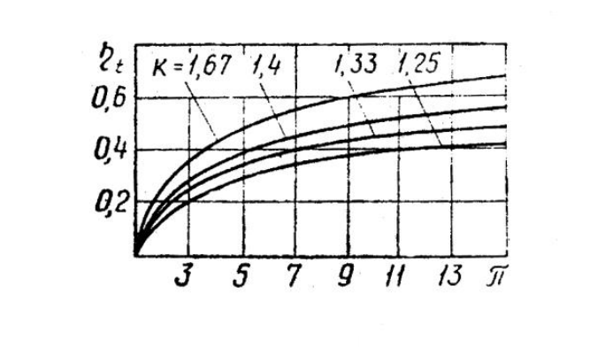
Ինչպես երևում է (2.7)-ից, ցիկլի աշխատանքի մեծությունը կախված է աշխատանքային մարմնի տեսակից (\(k, R\)), նրա սկզբնական \(T_1\) ջերմաստիճանից, ճնշման բարձրացման \(\pi\) աստիճանից և ցիկլում գազի տաքացման \(\Delta\) աստիճանից։ \(R\)-ի, \(T_1\)-ի և \(\Delta\)-ի աճին զուգընթաց ցիկլի աշխատանքն այլ հավասար պայմաններում աճում է։
Ավելի բարդ է \(\ell_{\text{ց}}\)-ի կախումը \(\pi\)-ից։ (2.7) բանաձևը ցույց է տալիս, որ \(\ell_{\text{ց}}\)-ն դառնում է զրո \(\pi\)-ի երկու արժեքի դեպքում, որոնք համապատասխանում են \(e = 1\)-ին և \(e = \Delta\)-ին։ Ակնհայտ է, որ այդ երկու ծայրահեղ արժեքների միջև գոյություն ունի ինչ-որ օպտիմալ մեծություն՝ \(\pi_{\text{օպտ}}\), որի դեպքում ցիկլի աշխատանքը ստացվում է առավելագույն։ \(\pi_{\text{օպտ}}\)-ի որոշման համար դիֆերենցենք (2.7)-ը և ածանցյալը հավասարեցնենք զրոյի.
Որտեղից՝
Ինչպես երևում է (2.11)-ից, իդեալական ցիկլում ճնշման բարձրացման օպտիմալ աստիճանը տվյալ աշխատանքային մարմնի համար կախված է միայն նրա տաքացման աստիճանից։ \(\Delta\)-ի աճին զուգընթաց աճում է նաև \(\pi_{\text{օպտ}}\) մեծությունը։ \(\ell_{\text{ց}}\)-ի կախումը \(\pi\)-ից \(\Delta\)-ի տարբեր արժեքների դեպքում ցույց է տրված նկ. 43-ում։
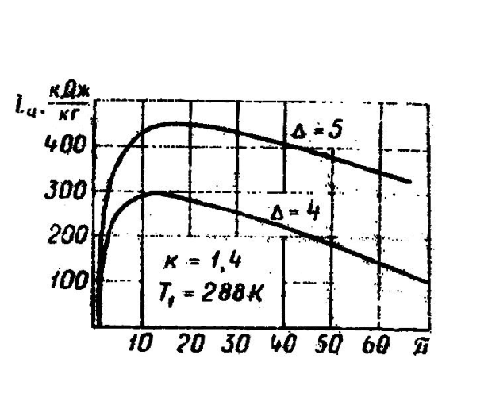
(2.11)-ը (2.7)-ի մեջ տեղադրելով՝ կստանանք ցիկլի առավելագույն աշխատանքի արտահայտությունը.
կամ
Դիտարկված ցիկլն իրականացվում է ուժային կայանքների մի շարք տիպերում։ Ավիացիայում այս ցիկլով աշխատում են տուրբառեակտիվ և տուրբապտուտակային շարժիչները (ՏՌՇ և ՏՊՇ), ուղղաթիռային գազատուրբինային շարժիչները (ուղղաթիռային ԳՏՇ), ինչպես նաև ուղղահոս օդառեակտիվ շարժիչները (ՈւՕՌՇ)։ Բրայթոնի ցիկլն իրականացվում է նաև գազատուրբինային կայանքներում (ԳՏԿ), որոնք օգտագործվում են որպես ինքնաթիռների օժանդակ ուժային կայանքներ, որպես նավային, տանկային և ավտոմոբիլային շարժիչներ, ինչպես նաև ստացիոնար էներգետիկ սարքավորումներում։
ԳՏԿ-ների տարբերիչ առանձնահատկությունն այն է, որ արտաքին սպառողներին (արտաքին միջավայր) փոխանցվող աշխատանքի ստացման համար դրանցում օգտագործվում է գազային տուրբին։
Այս ուժային կայանքներում աշխատանքային մարմինը ցիկլի սկզբում օդն է, իսկ այնուհետև՝ այրման խցիկում առաջացող օդում վառելիքի այրման արգասիքները (գազ)։
Նկ. 44-ում պատկերված են վերը նշված շարժիչներից մի քանիսի սկզբունքային սխեմաները։ ՏՌՇ-ի իդեալական ցիկլը (նկ. 44, ա) ընթանում է հետևյալ կերպ։ Օդը շարժիչ է մտնում մթնոլորտից I մուտքային սարքի միջով։ Թռիչքի պայմաններում մուտքային սարքում օդի արագությունը նվազում է, իսկ ճնշումն աճում է մինչև նկ. 44-ի վրա \(a\) կետին համապատասխանող մեծությունը։ Օդի ճնշման հետագա բարձրացումը տեղի է ունենում II կոմպրեսորում։ Այսպիսով, 1a2 ադիաբատ սեղմման պրոցեսն իրականանում է մուտքային սարքում և կոմպրեսորում։ Այդ տարրերում օդի ճնշման բարձրացման ընդհանուր աստիճանը կարելի է ներկայացնել արտադրյալի տեսքով.
որտեղ
\(\pi_{\text{մտ}}\)-ն մուտքային սարքում ճնշման բարձրացման աստիճանն է, \(\pi_{\text{կ}}\)-ն՝ կոմպրեսորում ճնշման բարձրացման աստիճանը։
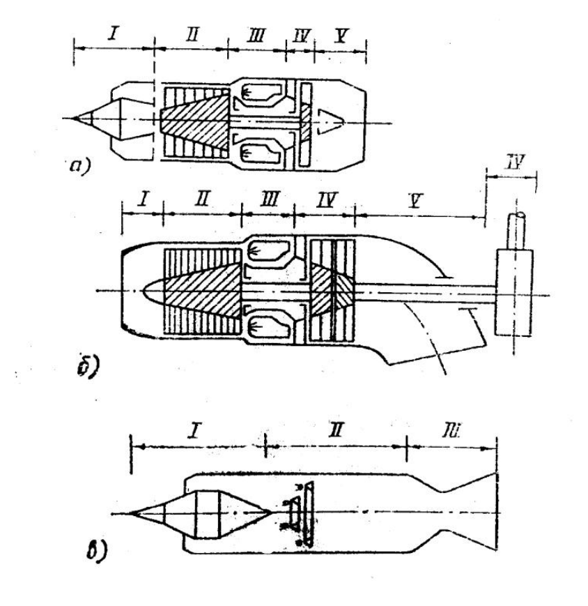
III այրման խցիկում հաստատուն ճնշման դեպքում տեղի է ունենում վառելիքի այրում, և օդի յուրաքանչյուր կիլոգրամին հաղորդվում է \(q_1\) ջերմություն։ \(P_3, T_3\) պարամետրերով այրման արգասիքները մտնում են IV գազային տուրբին, որը ծառայում է կոմպրեսորը շարժման մեջ դնելու համար։ Տուրբինում տեղի է ունենում աշխատանքային մարմնի ադիաբատ ընդարձակում (3b պրոցես), որի էներգիայի մի մասը փոխակերպվում է տուրբինի լիսեռի աշխատանքի և փոխանցվում կոմպրեսորին։ Հետագա ընդարձակումը մինչև մթնոլորտային ճնշումը (b4 պրոցես) տեղի է ունենում V ելքային սարքում (փողրակում), որտեղ հոսքն արագանում է և մեծ արագությամբ արտահոսում է շրջակա միջավայր։
Ադիաբատ ընդարձակման պրոցեսում ճնշման իջեցման ընդհանուր աստիճանը հավասար է սեղմման պրոցեսում ճնշման բարձրացման աստիճանին։ Այն կարելի է ներկայացնել արտադրյալի տեսքով.
որտեղ \(\pi_{\text{տ}} = \dfrac{P_3}{P_b}\); \(\pi_{\text{փ}} = \dfrac{P_b}{P_4}\)՝ տուրբինում և փողրակում ճնշման իջեցման աստիճաններն են։
ՏՌՇ-ի իդեալական ցիկլը պայմանականորեն փակվում է 4-1 իզոբար պրոցեսով, որը համապատասխանում է շարժիչից արտահոսող գազերի սառեցմանը շրջակա մթնոլորտում՝ յուրաքանչյուր կիլոգրամից \(q_2\) ջերմության հեռացմամբ։
ՏՊՇ-ները և ուղղաթիռային գազատուրբինային շարժիչները (նկ. 45), որոնք ունեն աշխատանքի համանման սկզբունք, օգտագործվում են թռիչքի ոչ մեծ ենթաձայնային արագությամբ թռչող սարքերում։ Ուստի այդ շարժիչների մուտքային սարքերում ճնշման բարձրացումը աննշան է, և օդի սեղմումն իրականանում է հիմնականում II կոմպրեսորում։ Այդ շարժիչներում IV տուրբինի աշխատանքը ծախսվում է ոչ միայն կոմպրեսորի շարժաբերման վրա. դրա զգալի մասը VI ռեդուկտորի միջոցով փոխանցվում է պտուտակին, որը ստեղծում է քարշի ուժ, իսկ ուղղաթիռի մոտ՝ նաև վերամբարձ ուժ։ Ուստի ՏՊՇ-ներում և ուղղաթիռային ԳՏՇ-ներում գազի ճնշման իջեցման ընդհանուր աստիճանը ադիաբատ ընդարձակման պրոցեսում գործնականում հավասար է տուրբինում ճնշման իջեցման աստիճանին։ Գազատուրբինային ուժային կայանքներն աշխատում են ՏՊՇ-ին համանման։ Դրանց մոտ տուրբինի ավելցուկային հզորությունը ռեդուկտորի միջոցով փոխանցվում է նավային պտուտակին, տանող անիվներին կամ շարժման մեջ դրվող որևէ այլ սարքերի։
ՈւՕՌՇ-ն (նկ. 44, գ) նախատեսված է թռիչքի բարձր արագությամբ թռչող սարքերի համար։ Այս շարժիչում կոմպրեսորը և տուրբինը բացակայում են։ Օդի սեղմումը տեղի է ունենում I մուտքային սարքում (\(\pi = \pi_{\text{մտ}}\))՝ ներհոսող օդային հոսքի կինետիկ էներգիայի հաշվին։ II այրման խցիկում ջերմության հաղորդումից հետո աշխատանքային մարմնի ընդարձակումը տեղի է ունենում III ելքային փողրակում (\(\pi = \pi_{\text{փ}}\))։
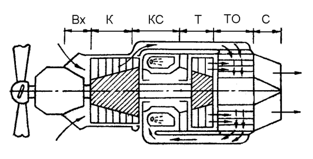
Ջերմության ռեգեներացիան ցիկլի ջերմային ՕԳԳ-ի մեծացման եղանակներից մեկն է։ Ջերմության ռեգեներացիայով ՏՊՇ-ի հիմնական տարբերությունը վերևում դիտարկված ԳՏՇ-ներից կայանում է նրանում, որ նրանում առկա է ջերմափոխանակիչ (ՋՓ), որում տուրբինից (Տ) դուրս եկող գազերն իրենց ջերմության մի մասը՝ \(q_{\text{ռ}}\), փոխանցում են կոմպրեսորից (Կ) ջերմափոխանակիչ մտնող օդին։ Ջերմափոխանակիչում օդի նախնական տաքացումը նվազեցնում է այն ջերմության քանակը, որը անհրաժեշտ է նրան հաղորդել այրման խցիկում (ԱԽ)՝ ցիկլի տրված առավելագույն \(T_3\) ջերմաստիճանն ապահովելու համար։ Ակնհայտ է, որ ջերմության ռեգեներացիան հնարավոր է միայն այն պայմանով, որ տուրբինից հետո գազի ջերմաստիճանը մեծ է կոմպրեսորից հետո օդի ջերմաստիճանից (\(T_4 > T_2\))։
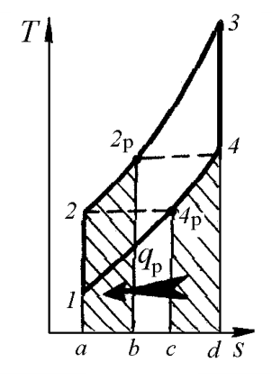
Այդպիսի շարժիչի իդեալական ցիկլը ցույց է տրված նկ. 46-ում \(T, s\) կոորդինատներում։ Ցիկլը կազմում են հետևյալ պրոցեսները.
\(T, s\) կոորդինատներում ջերմափոխանակիչում գազի տված \(q_{\text{ռ}}\) ջերմության քանակը համարժեք է \(c4_{\text{ռ}}4d\) մակերեսին, իսկ ջերմափոխանակիչում օդի ստացած ջերմության նույնպիսի քանակը՝ \(a22_{\text{ռ}}b\) մակերեսին։ Ակնհայտ է, որ այդ մակերեսները հավասար են։
Առավելագույն ջերմաստիճանը, մինչև որը կարող է տաքացվել օդը ջերմափոխանակիչում, հավասար է տուրբինից հետո գազի ջերմաստիճանին (\(T_{2\text{ռ.առավ}} = T_4\))։ Այս սահմանային դեպքում ռեգեներացիային մասնակցում է ջերմության առավելագույն քանակը՝ \(q_{\text{ռ.առավ}}\)։
Ռեգեներացիայի աստիճան \(\sigma_{\text{ռեգ}}\) է կոչվում ռեգեներացիային մասնակցող ջերմության իրական քանակի հարաբերությունը առավելագույն հնարավորին.
Ջերմության ռեգեներացիայով իրական ԳՏՇ-ներում \(\sigma_{\text{ռեգ}} < 1\)։
Դիտարկվող ցիկլի ջերմային ՕԳԳ-ն որոշվում է հայտնի արտահայտությամբ.
Ռեգեներացիայի կիրառումը, ինչպես երևում է նկ. 46-ից, \(q_1\) և \(q_2\) ջերմությունները փոքրացնում է միևնույն \(q_{\text{ռ}}\) մեծությամբ։ Բայց քանի որ \(q_2 < q_1\), ապա այդ փոքրացումը հանգեցնում է \(q_2/q_1\) հարաբերության նվազմանը, այսինքն՝ \(\eta_t\)-ի մեծացմանը։ Այսպիսով, ցիկլի հավասար պարամետրերի դեպքում այն շարժիչը, որում իրականացված է ջերմության ռեգեներացիայով Բրայթոնի ցիկլ, ունի ջերմային ՕԳԳ-ի ավելի բարձր արժեք և, հետևաբար, ավելի լավ խնայողականություն, քան առանց ռեգեներացիայի շարժիչը։
Ջերմության ռեգեներացիան համեմատաբար լայնորեն կիրառվում է ստացիոնար ԳՏԿ-ներում։ Ավիացիայում ռեգեներացիայի օգտագործումը տեղի ունի միայն փոքր հզորության ԳՏՇ-ների առանձին տիպերում։
Տվյալ ցիկլը, որը կոչվում է նաև հաստատուն ծավալի դեպքում ջերմության հաղորդմամբ ցիկլ, պատկերված է նկ. 47, ա-ում և 47, բ-ում \(p, \upsilon\) և \(T, s\) կոորդինատներում։ Այն բաղկացած է երկու ադիաբատ պրոցեսից (1–2 սեղմում և 3–4 ընդարձակում), 2–3 իզոխոր պրոցեսից, որում աշխատանքային մարմնին հաղորդվում է \(q_1\) ջերմություն, և ցիկլը փակող 4–1 իզոբար պրոցեսից, որտեղ աշխատանքային մարմնից հեռացվում է \(q_2\) ջերմություն։
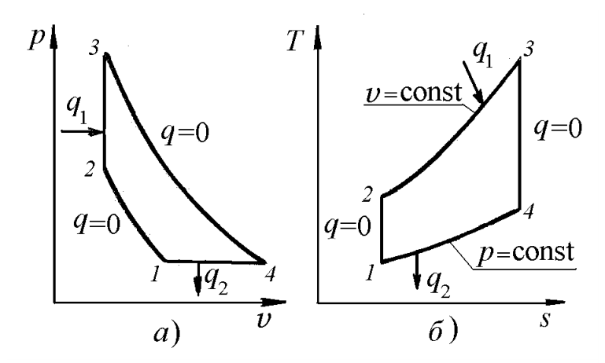
Հեմֆրիի ցիկլի հետազոտման համար անհրաժեշտ է տալ՝ աշխատանքային մարմնի տեսակը (\(k, R\)), նրա \(p_1, T_1\) պարամետրերը ցիկլի ելակետային 1 կետում, ադիաբատ սեղմման պրոցեսում ճնշման բարձրացման աստիճանը՝ \(\pi = p_2/p_1\), և իզոխոր պրոցեսում ճնշման բարձրացման աստիճանը՝ \(\lambda = p_3/p_2\)։
Հաղորդված և հեռացված ջերմության, աշխատանքի և ցիկլի ջերմային ՕԳԳ-ի որոշման համար գտնենք աշխատանքային մարմնի ջերմաստիճանը 2, 3 և 4 բնութագրական կետերում՝ հաշվի առնելով, որ \(p_3/p_1 = \pi\lambda\).
2–3 իզոխոր պրոցեսում աշխատանքային մարմնին հաղորդվում է ջերմություն՝
4–1 իզոբար պրոցեսում աշխատանքային մարմնից հեռացվում է ջերմություն՝
Այդ դեպքում Հեմֆրիի ցիկլի աշխատանքը հավասար է՝
Օգտագործելով (2.16) և (2.17) արտահայտությունները՝ կստանանք տվյալ ցիկլի ջերմային ՕԳԳ-ի բանաձևը.
Այստեղից երևում է, որ Հեմֆրիի ցիկլի ջերմային ՕԳԳ-ն կախված է աշխատանքային մարմնի տեսակից (\(k\)) և ճնշման բարձրացման \(\pi\) և \(\lambda\) աստիճաններից։ \(\pi\)-ի և \(\lambda\)-ի մեծացման դեպքում ցիկլի ջերմային ՕԳԳ-ն աճում է։
Օդառեակտիվ շարժիչներում և գազատուրբինային կայանքներում Հեմֆրիի ցիկլն իրականացնելու համար հարկավոր է կազմակերպել վառելիքի այրումը (աշխատանքային մարմնին ջերմության հաղորդումը) հաստատուն ծավալի դեպքում։ Դա հնարավոր է, օրինակ, ներածման և արտածման փականներ (կամ այլ սարքեր) տեղադրելու դեպքում, որոնք այրման խցիկը մեկուսացնում են շարժիչի հոսքային մասի մնացած մասից ներմուծված վառելիքի այրման համար անհրաժեշտ ժամանակով։ Այս բարդ կառուցվածքային խնդիրը մինչ օրս չի լուծված շահագործման համար անհրաժեշտ հուսալիության մակարդակով։
Այն շարժիչներին, որոնցում իրականացվում է Հեմֆրիի ցիկլին մոտ ցիկլ, դասվում են այսպես կոչված պուլսացիոն օդառեակտիվ շարժիչները (ՊՕՌՇ)։ Այդպիսի շարժիչի սկզբունքային սխեման ցույց է տրված ստորև նկարում։ Այրման խցիկը (КС) մուտքային սարքից (Вх) անջատված է հատուկ փականներով (К), որոնք բաց են այրման խցիկը օդի և վառելիքի թարմ բաժիններով լցնելիս և փակվում են վառելիքաօդային խառնուրդի բռնկման ժամանակ։ Այրման պրոցեսի տևողությունը կազմում է վայրկյանի հարյուրերորդական մասեր։ Ելքային սարքը (Вых) միավորում է երկարացնող խողովակը և փողրակը և ունի բավականաչափ մեծ ծավալ։ Այրման ընթացքում նրանում գազի քանակի փոփոխությունը աննշան փոքր է ստացվում։ Ուստի կարելի է համարել, որ վառելիքի այրումը տեղի է ունենում մոտավորապես հաստատուն ծավալում։ Գազի արտահոսքի հետևանքով այրման պրոցեսի ավարտից հետո խցիկում ճնշումը փոքրանում է, և երբ այն դառնում է մուտքային սարքից հետո ճնշումից փոքր, փականները բացվում են, և այրման խցիկ են մտնում օդի և վառելիքի թարմ բաժիններ։ Այս պրոցեսները կրկնվում են բավականաչափ մեծ հաճախականությամբ, ինչի պատճառով շարժիչն անվանվել է պուլսացիոն և առանձնանում է աղմուկի բարձր մակարդակով։
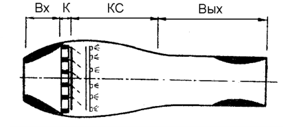
Ներկայումս մշակվում են այսպես կոչված պուլսացիոն դետոնացիոն շարժիչները (ՊԴՇ), որոնք նույնպես աշխատում են Հեմֆրիի ցիկլին մոտ ցիկլով։ Դրանց առանձնահատկությունն այն է, որ այրման խցիկի հատուկ ընտրված ձևի շնորհիվ նրանում պարբերաբար գրգռվում են դետոնացիոն ալիքներ 20 կՀց-ից բարձր հաճախականությամբ, ինչը թույլ է տալիս յոլա գնալ առանց ներածման փականների և գեներացվող աղմուկը տեղափոխել չլսվող ուլտրաձայնային տիրույթ։
Բրայթոնի և Հեմֆրիի ցիկլերի համեմատությունը։ Ճնշման բարձրացման \(\pi\) աստիճանի (և համապատասխանաբար \(e\) մեծության) հավասար արժեքների դեպքում Հեմֆրիի ցիկլի ջերմային ՕԳԳ-ն միշտ բարձր է, քան Բրայթոնի ցիկլինը։ Դա հետևում է (2.9) և (2.19) բանաձևերի համեմատությունից։ Հեշտ է համոզվել, որ \(k\)-ի և \(\lambda\)-ի ցանկացած արժեքների դեպքում տեղի ունի \(k\left(\lambda^{\frac{1}{k}} - 1\right)/(\lambda - 1) < 1\) առնչությունը, ինչն էլ պայմանավորում է անհավասարությունը.
Տվյալ առնչությունը կարելի է հիմնավորել գրաֆիկորեն։ Նկ. 49-ում \(T, s\) կոորդինատներում համատեղված են Բրայթոնի (1–2–3p–4) և Հեմֆրիի (1–2–3υ–4) ցիկլերը։ Ընդունենք, որ դրանց մոտ նույնն են ճնշման բարձրացման \(\pi\) աստիճանի, աշխատանքային մարմնի պարամետրերի արժեքները ելակետային 1 (\(p_1, T_1\)) կետում և 4 (\(p_4, T_4\)) կետում։ Ինչպես երևում է, այդ ցիկլերում \(q_2\) հեռացված ջերմությունը, որը համարժեք է 4–1 պրոցեսի կորի տակ գտնվող մակերեսին, նույնն է, մինչդեռ \(q_1\) հաղորդված ջերմությունն ավելի մեծ է Հեմֆրիի ցիկլում։ Հետևաբար, \(\eta_t = 1 - \dfrac{q_2}{q_1}\) արժեքը ավելի մեծ կլինի Հեմֆրիի ցիկլի մոտ։
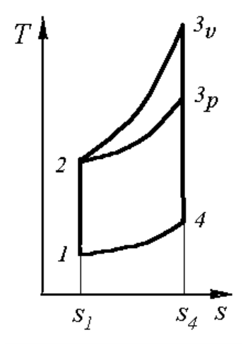
Ուստի, չնայած կառուցվածքային դժվարություններին, Հեմֆրիի ցիկլով օդառեակտիվ շարժիչների ստեղծման ուղղությամբ հետազոտությունները շարունակվում են։
Ամրության պայմաններով գազատուրբինային շարժիչների մոտ տուրբինից առաջ գազի առավելագույն ջերմաստիճանի արժեքը՝ \(T_{3\,\text{առավ}}\), սահմանափակվում է։ Դա սահմանափակում է ստացվող \(l_{\text{ց}}\) ցիկլի աշխատանքը և, հետևաբար, շարժիչի տրված չափերի դեպքում՝ նրա քարշը (կամ հզորությունը)։ \(l_{\text{ց}}\)-ն կարելի է մեծացնել՝ կիրառելով \(q_1\) ջերմության աստիճանական հաղորդում։ Օրինակ՝ երկու այրման խցիկի օգնությամբ, որոնցից մեկը տեղադրված է տուրբինից առաջ, իսկ երկրորդը՝ տուրբինի կասկադների (աստիճանների խմբերի) միջև։
Նկ. 48-ում \(T, s\) կոորդինատներում ցույց է տրված այդպիսի շարժիչի ցիկլը։ Այս ցիկլում ջերմությունը հաղորդվում է 2–3 և a–3′ իզոբար պրոցեսներում։ Աշխատանքային մարմնի ադիաբատ ընդարձակումը նույնպես տեղի է ունենում երկու փուլով։ 3–a պրոցեսը պատկերում է ադիաբատ ընդարձակումը տուրբինի առաջին կասկադում, իսկ 3′–4′ պրոցեսը՝ տուրբինի երկրորդ կասկադում և դրանից հետո։ Մնացած պրոցեսների ընթացքը նույնն է, ինչ վերևում դիտարկված Բրայթոնի ցիկլում։ Պետք է ուշադրություն դարձնել այն բանին, որ a–3′ պրոցեսում ջերմության հաղորդումը տեղի է ունենում ավելի ցածր ճնշման դեպքում, քան 2–3 պրոցեսում։
Նկ. 48-ից երևում է, որ ջերմության հաղորդման երկրորդ աստիճանի ավելացումը մեծացնում է \(l_{\text{ց}}\)-ն, քանի որ այդպիսի ցիկլի մակերեսն աճում է 1–2–3–4 ցիկլի մակերեսի համեմատ, որը տեղի կունենար ջերմության լրացուցիչ հաղորդման բացակայության դեպքում։ Սակայն ընդ որում ցիկլի ջերմային ՕԳԳ-ն փոքրանում է։ Ապացուցման համար դիտարկենք երկու ցիկլ՝ A ցիկլ (1–2–3–4) և B ցիկլ (4–a–3′–4′), որոնք միասին, ինչպես երևում է նկ. 48-ում, կազմում են ջերմության աստիճանական հաղորդմամբ (A + B) ցիկլը։ B ցիկլում ճնշման բարձրացման աստիճանը փոքր է, քան A ցիկլում ճնշման բարձրացման աստիճանը։ Ուստի B ցիկլի ջերմային ՕԳԳ-ն նույնպես կլինի փոքր, քան A ցիկլինը։ Հետևաբար, բաղադրյալ ցիկլում (ջերմության աստիճանական հաղորդմամբ ցիկլում) հաղորդված ջերմության փոխակերպումն աշխատանքի ընդհանուր առմամբ կընթանա ավելի փոքր ՕԳԳ-ով, քան ելակետային A ցիկլում.
Ջերմության աստիճանական հաղորդմամբ ցիկլի տարբերակներից մեկը լայնորեն կիրառվում է ֆորսաժային այրման խցիկով ավիացիոն տուրբառեակտիվ շարժիչներում (ՖՏՌՇ)։ ՖՏՌՇ-ի սկզբունքային սխեման բերված է նկ. 50ա-ում, իսկ նրա իդեալական ցիկլը \(T, s\) կոորդինատներում՝ նկ. 50-ում։ Ջերմադինամիկական պրոցեսներն այս շարժիչում ընթանում են հետևյալ հաջորդականությամբ.
ՖՏՌՇ-ում ֆորսաժային այրման խցիկում գազի ջերմաստիճանը՝ \(T_{3\text{ֆ}}\), սովորաբար մեծ է տուրբինից առաջ նրա \(T_3\) ջերմաստիճանից՝ տուրբինի ամրության հետ կապված սահմանափակումների բացակայության պատճառով։ Եթե ֆորսաժային այրման խցիկն անջատված է, ապա շարժիչն աշխատում է որպես ՏՌՇ՝ 1–2–3–4 Բրայթոնի ցիկլով։
ՖՏՌՇ-ն ՏՌՇ-ի համեմատ ստեղծում է ավելի մեծ քարշ (ցիկլի աշխատանքի մեծացման պատճառով), բայց զիջում է խնայողականությամբ, քանի որ ջերմության աստիճանական հաղորդման դեպքում, ինչպես ցույց տրվեց վերևում, ցիկլի ջերմային ՕԳԳ-ն նվազում է։
Մխոցային շարժիչները լայնորեն օգտագործվում են ժամանակակից տեխնիկայում (թեթև ինքնաթիռներում, ավտոմոբիլներում, տրակտորներում, ջերմաքարշերում և այլն)։ Մխոցային շարժիչի աշխատանքային տարրերն են II գլանը III մխոցով (նկ. 51), որը կռանակաշարժաթևային մեխանիզմի և ծնկաձև լիսեռի միջոցով միացված է աշխատանքի սպառողին (պտուտակ, անիվներ, գեներատոր և այլն)։
Գլանում կան երկու անցք I փականներով՝ աշխատանքային մարմնի (օդի կամ վառելիքաօդային խառնուրդի) ներածման և ցիկլի վերջում այրման արգասիքների արտածման համար։ Առավել տարածում են ստացել մխոցային շարժիչների երկու տիպ՝ վառելիքաօդային խառնուրդի հարկադրական բռնկմամբ և սեղմումից բռնկմամբ (դիզելներ)։
Օտտոյի ցիկլը, որը պատկերված է նկ. 51-ում \(P\text{–}V\) և \(T\text{–}S\) կոորդինատներում, բաղկացած է երկու ադիաբատ և երկու իզոխոր պրոցեսից։ Այս ցիկլն իրականացվում է վառելիքաօդային խառնուրդի հարկադրական բռնկմամբ մխոցային շարժիչներում։ Ելակետային 1 վիճակից աշխատանքային մարմինը մխոցի տեղաշարժի հաշվին սեղմվում է 1-2 ադիաբատ պրոցեսում։ Սովորաբար սեղմվում է նախապես պատրաստված վառելիքաօդային խառնուրդը։ Դրա բռնկումը 2 կետում (օրինակ՝ էլեկտրական մոմի օգնությամբ) հանգեցնում է գործնականում ակնթարթային այրման և ջերմության անջատման։ Այրման կարճ ժամանակի ընթացքում մխոցը տեղաշարժվում է աննշան։ Ուստի իդեալական ցիկլում \(q_1\) ջերմության հաղորդման 2-3 պրոցեսը համարվում է իզոխոր։ Այնուհետև տեղի է ունենում գազի ադիաբատ ընդարձակում (3-4 պրոցես)։ Մխոցային շարժիչների տեսության մեջ այս պրոցեսն անվանում են աշխատանքային բանվածք, քանի որ հենց այս պրոցեսում գազի ընդարձակման աշխատանքը մխոցի և կռանակաշարժաթևային մեխանիզմի միջոցով փոխանցվում է լիսեռին և այնուհետև արտաքին սպառողին։ 4 կետում բացվում է արտածման փականը, և այրման տաք արգասիքներն արտահոսում են շրջակա միջավայր։ Այս պրոցեսն իդեալական ցիկլում փոխարինվում է \(q_2\) ջերմության հեռացման ցիկլը փակող պայմանական 4-1 իզոխոր պրոցեսով։
Իրական մխոցային շարժիչում լրացուցիչ իրականացվում են երկու օժանդակ պրոցես, որոնք ցույց են տրված նկ. 51-ում շտրիխային գծով։ Այդ պրոցեսներն են՝
Իդեալական ցիկլը հետազոտելիս այս օժանդակ պրոցեսները չեն դիտարկվում։
Օտտոյի ցիկլի համար տրվում են 1-2 ադիաբատ պրոցեսում սեղմման \(\varepsilon\) աստիճանը և 2-3 ջերմության հաղորդման պրոցեսում ճնշման բարձրացման \(\lambda\) աստիճանը։
Որոշենք հաղորդված \(q_1\) և հեռացված \(q_2\) ջերմությունը, ջերմային \(\eta_t\) ՕԳԳ-ն և ցիկլի \(\ell_{\text{ց}}\) աշխատանքը։
2-3 և 4-1 իզոխոր պրոցեսների համար ջերմությունները հավասար են՝
Այստեղ
\(\dfrac{T_4}{T_1}\) ջերմաստիճանների հարաբերությունը որոշենք \(\Delta S_{2-3} = \Delta S_{1-4} = \Delta S\) պայմանից (տե՛ս նկ. 51)։ Այդ դեպքում
Որտեղից
(2.23)-ը և (2.24)-ը (2.21)-ի և (2.22)-ի մեջ տեղադրելով՝ կստանանք
Օգտագործելով \(q_1\)-ի և \(q_2\)-ի այս արտահայտությունները \(\eta_t = 1 - q_2/q_1\) և \(\ell_{\text{ց}} = q_1 - q_2\) առնչություններում (տե՛ս (2.8) և (2.5))՝ կստանանք ցիկլի ջերմային ՕԳԳ-ի և աշխատանքի բանաձևերը.
(2.27) բանաձևը ցույց է տալիս, որ Օտտոյի ցիկլի ջերմային ՕԳԳ-ն կախված է սեղմման \(\varepsilon\) աստիճանից և աշխատանքային մարմնի տեսակից (\(k\))։ \(\varepsilon\)-ի և \(k\)-ի աճին զուգընթաց ցիկլի ջերմային ՕԳԳ-ն աճում է։
Օտտոյի ցիկլով աշխատող իրական մխոցային շարժիչներում շարժիչի խնայողականության բարելավման նպատակով \(\varepsilon\)-ի մեծացումը սահմանափակվում է որոշակի սահմաններով։ Որպես վառելիք բենզին օգտագործելիս \(\varepsilon > 9\div12\) մեծացումն առաջացնում է վառելիքաօդային խառնուրդի դետոնացիոն այրում, որը հանգեցնում է շարժիչի նորմալ աշխատանքի խախտման, նրա առանձին դետալների գերտաքացման և արագ շարքից դուրս գալու։ Դետոնացիան շահագործման պայմաններում անթույլատրելի է։
Սեղմման բարձր աստիճանների դեպքում դետոնացիոն այրումից կարելի է խուսափել, եթե սեղմվի ոչ թե այրվող խառնուրդը, այլ մաքուր օդը։ Այս դեպքում վառելիքը գլան է ներմուծվում սեղմման պրոցեսի ավարտից հետո և ինքնաբռնկվում է սեղմված օդի բարձր ջերմաստիճանի ազդեցությամբ։ Վառելիքի մատուցումը և դրա այրումը տեղի են ունենում գլանում հաստատուն ճնշման դեպքում։ Այս եղանակն իրականացվում է Դիզելի ցիկլում, որը պատկերված է նկ. 52-ում \(P\text{–}V\) և \(T\text{–}S\) կոորդինատներում։ Ցիկլը բաղկացած է երկու ադիաբատից (1-2 սեղմում և 3-4 ընդարձակում), \(q_1\) ջերմության հաղորդման 2-3 իզոբարից և \(q_2\) ջերմության հեռացման 4-1 իզոխորից։ Դիզելի իդեալական ցիկլում նույնպես չեն դիտարկվում ներծծման և արտածման օժանդակ պրոցեսները։ Ցիկլի հիմնական պարամետրերն են սեղմման \(\varepsilon\) աստիճանը և ջերմության հաղորդման պրոցեսում ընդարձակման \(\rho\) աստիճանը։
Ստանանք \(q_1\)-ի և \(q_2\)-ի բանաձևերը.
Այստեղ
\(\Delta S_{2-3} = \Delta S_{1-4} = \Delta S\) պայմանից (տե՛ս նկ. 52) հետևում է՝
Որտեղից
(2.31)-ը և (2.32)-ը (2.29)-ի և (2.30)-ի մեջ տեղադրելով՝ կստանանք
Օգտագործելով \(q_1\)-ի և \(q_2\)-ի ստացված արտահայտությունները՝ կգտնենք Դիզելի ցիկլի ջերմային ՕԳԳ-ն.
և ցիկլի աշխատանքը՝
(2.35) բանաձևը ցույց է տալիս, որ Դիզելի ցիկլի \(\eta_t\)-ն կախված է գազի տեսակից (\(k\)), սեղմման \(\varepsilon\) աստիճանից և ջերմության հաղորդման պրոցեսում ընդարձակման \(\rho\) աստիճանից։ \(\rho\)-ի հաստատուն արժեքի դեպքում \(\eta_t\)-ն աճում է \(\varepsilon\)-ի մեծացմանը զուգընթաց։
Համեմատությունը կատարենք՝ երկու ցիկլերում ընդունելով նույնը աշխատանքային մարմնի պարամետրերը ելակետային կետում՝ \(P_1, T_1\), և ճնշման ու ջերմաստիճանի առավելագույն արժեքները՝ \(P_3, T_3\)։ Համատեղելով այս ցիկլերը \(T\text{–}S\) կոորդինատներում (նկ. 53)՝ համեմատենք դրանց ջերմային ՕԳԳ-ների մեծությունները՝ հիմնվելով \(\eta_t = 1 - q_2/q_1\) բանաձևի վրա։ Երևում է, որ համեմատության ընդունված պայմանների դեպքում Դիզելի ցիկլի ՕԳԳ-ն բարձր է, քան Օտտոյի ցիկլի ՕԳԳ-ն, քանի որ հեռացված ջերմության հավասար քանակների դեպքում (\(q_{2\text{Դ}} = q_{2\text{Օ}}\)) Դիզելի ցիկլում հաղորդված ջերմության քանակն ավելի մեծ է (\(q_{1\text{Դ}} > q_{1\text{Օ}}\))։
Դիզելի ցիկլի ավելի բարձր արդյունավետությունը տվյալ պայմաններում բացատրվում է նրանով, որ նրանում ապահովվում է սեղմման ավելի բարձր \(\varepsilon\) աստիճան, քան Օտտոյի ցիկլում։ Դիզելների մեկ այլ առավելությունն այն է, որ դրանցում կարող են օգտագործվել էժան ցածրորակ վառելիքներ։ Սակայն պետք է նշել, որ իրական դիզելները \(\varepsilon\)-ի ավելի բարձր արժեքների հետևանքով կրում են բարձրացված բեռնվածքներ։ Այդ պատճառով և օդի թթվածնի ոչ լրիվ օգտագործման պատճառով դրանց կառուցվածքներն ավելի ծանր են ստացվում, քան հարկադրական բռնկմամբ շարժիչներինը։
Իդեալական, ինչպես նշվել էր 1-ին գլխում, կոչվում է այն գազը, որի մոլեկուլների միջև փոխազդեցության ուժերը դրսևորվում են միայն բախումների ժամանակ, իսկ դրանց զբաղեցրած ծավալն աննշան փոքր է գազի ծավալի համեմատ։
Իրականում մոլեկուլները միմյանց հետ փոխազդում են հեռավորության վրա, ընդ որում մեծ հեռավորությունների վրա դրանք ձգվում են ուժով, որն աճում է դրանց մոտենալուն զուգընթաց, իսկ փոքր հեռավորությունների վրա ձգողության ուժն անցնում է փոխադարձ վանողության ուժի։ Ուստի իրական գազերի հատկությունները, ինչպես նշվել էր, տարբերվում են իդեալական գազի հատկություններից այնքան ավելի ուժեղ, որքան պակաս նոսրացված են դրանք, այսինքն՝ որքան բարձր է գազի ճնշումը և ցածր է նրա ջերմաստիճանը։ Բայց այդ տարբերության աստիճանը \(p\)-ի և \(T\)-ի տրված արժեքների դեպքում տարբեր գազերի մոտ կարող է էականորեն տարբեր լինել։
Իրական գազերի հիմնական տարբերություններն իդեալականներից կայանում են նրանում, որ՝
Նկ. 54-ում \(p, \upsilon\) կոորդինատներում պատկերված են միատարր քիմիական բաղադրությամբ իրական գազի իզոթերմները տարբեր ջերմաստիճանների դեպքում։ Դրանք կարող են ստացվել, օրինակ, ջերմահաղորդող պատերով գլանում մխոցի տակ գազի դանդաղ սեղմման ճանապարհով։ Բարձր (տվյալ գազի համար) ջերմաստիճանի դեպքում (\(T = T_4\)) իզոթերմը քիչ է տարբերվում իդեալական գազի իզոթերմից, այսինքն՝ գործնականում ունի հիպերբոլի տեսք։ Բայց ավելի ցածր ջերմաստիճանի դեպքում (օրինակ՝ \(T = T_3\)) իզոթերմն արդեն զգալիորեն տարբերվում է հիպերբոլից։ Իսկ էլ ավելի ցածր ջերմաստիճանի դեպքում (օրինակ՝ \(T = T_1\)) սեղմման պրոցեսում տեղի է ունենում հետևյալը։ Տեսակարար ծավալը մինչև ինչ-որ B կետին համապատասխանող արժեքը փոքրացնելիս ճնշման հետագա աճն իզոթերմ սեղմման ժամանակ դադարում է։ Իզոթերմի վրա հայտնվում է հորիզոնական տեղամաս։ Ընդ որում ծավալի փոքրացմանը զուգընթաց տեղի է ունենում գազի կոնդենսացում՝ նրա ավելի ու ավելի մեծ մասն անցնում է հեղուկի, և տեսակարար ծավալը մինչև A կետին համապատասխանող արժեքը փոքրացնելիս կոնդենսացման պրոցեսն ավարտվում է՝ ամբողջ գազը վերածվում է հեղուկի։ Տեսակարար ծավալի հետագա փոքրացումը հնարավոր է միայն ճնշման շատ էական բարձրացման դեպքում, քանի որ հեղուկը շատ քիչ է սեղմելի։
Իզոթերմի հորիզոնական տեղամասի ցանկացած կետում գազը և հեղուկը՝ նյութի երկու տարբեր փուլերը, գտնվում են ջերմադինամիկական հավասարակշռության վիճակում։ Բայց այդ հավասարակշռությունը դինամիկ է. հեղուկի այն մոլեկուլների թիվը, որոնք (միավոր ժամանակում) լքում են նրա մակերևույթը ջերմային շարժման հետևանքով, հավասար է այն մոլեկուլների թվին, որոնք նույն ժամանակում վերադառնում են հեղուկ։ Ջերմատեխնիկայում հեղուկի հետ այդպիսի հավասարակշռության մեջ գտնվող գազն անվանում են հագեցած գոլորշի, իսկ իզոթերմի հորիզոնական տեղամասին համապատասխանող ճնշումը՝ տվյալ ջերմաստիճանում հագեցած գոլորշու ճնշում։ B կետին համապատասխանող վիճակում գտնվող գազն անվանում են չոր հագեցած գոլորշի։ Այն հագեցած գոլորշին, որում գտնվում են հեղուկի կախված մասնիկներ, անվանում են խոնավ գոլորշի։ Հագեցած գոլորշու զանգվածային բաժինը այն խառնուրդում, որը համապատասխանում է նյութի վիճակին A – B գծի որևէ կետում, որը գտնվում է B կետից ձախ, կոչվում է գոլորշու չորության աստիճան.
որտեղ \(M_{\text{գ}}\)-ն և \(M_{\text{հ}}\)-ն հագեցած գոլորշու և հեղուկի զանգվածներն են։ B կետում (չոր հագեցած գոլորշու համար) \(x = 1\), իսկ A կետում (հեղուկի համար) \(x = 0\)։
Այն ջերմությունը, որը պետք է հաղորդել նյութի զանգվածի միավորին, որպեսզի նրա վիճակը A կետին համապատասխանողից անցնի B կետին համապատասխանողին, կոչվում է գոլորշացման ջերմություն (տվյալ ճնշման դեպքում)։
Իզոթերմի B կետից աջ գտնվող ցանկացած կետին համապատասխանող վիճակում գտնվող գազն անվանում են չհագեցած գոլորշի։ Այն անվանում են նաև (շոգեուժային կայանքների տեսության մեջ) գերտաքացած գոլորշի, քանի որ նրա ջերմաստիճանը բարձր է, քան նույն ճնշման դեպքում հագեցած գոլորշու ջերմաստիճանը։ Ըստ էության «գազ», «չհագեցած գոլորշի» և «գերտաքացած գոլորշի» հասկացություններում ոչ մի տարբերություն չկա։
Ջերմաստիճանի ավելի մեծ արժեքի դեպքում (\(T = T_2 > T_1\), տե՛ս նկ. 54) հագեցած գոլորշու ճնշումը նույնպես կլինի ավելի բարձր, ընդ որում այն աճում է ջերմաստիճանից ավելի արագ, և ուստի հագեցած գոլորշու խտությունն աճում է, իսկ տեսակարար ծավալը՝ փոքրանում։ Ուստի B′ կետը, որը համապատասխանում է այդ ավելի բարձր ջերմաստիճանում գազի կոնդենսացման սկզբին, դասավորված է B կետից ձախ։ Իսկ հեղուկի տեսակարար ծավալը, ընդհակառակը, մեծանում է ջերմաստիճանի աճին զուգընթաց (հեղուկը տաքացնելիս ընդարձակվում է), հետևաբար A′ կետը, որը համապատասխանում է \(T = T_2 > T_1\) դեպքում գազի կոնդենսացման պրոցեսի ավարտին, դասավորված է A կետից աջ։
Այսպիսով, ջերմաստիճանի աճին զուգընթաց նյութի երկփուլ վիճակին համապատասխանող հորիզոնական տեղամասը փոքրանում է և որոշակի ջերմաստիճանում (\(T = T_{\text{կր}}\) նկ. 54-ում), որը կոչվում է կրիտիկական, սեղմվում է մինչև կրիտիկական կետ (կր)։ Այդ կետին համապատասխանող նյութի վիճակը նույնպես կոչվում է կրիտիկական։ Ընդ որում անհետանում է գազի և հեղուկի միջև տարբերությունը, դրանց խտությունները դառնում են միատեսակ, անհետանում է մակերևութային լարվածությունը, իսկ գոլորշացման ջերմությունը դառնում է զրոյի հավասար։
Այն գիծը, որն անցնում է A, A′ կետերով և ավարտվում է կր կետում, անջատում է նյութի երկփուլ վիճակի տիրույթը հեղուկ վիճակի տիրույթից և ջերմատեխնիկայում կոչվում է հեղուկի սահմանային կոր։ Իսկ այն գիծը, որը սկսվում է կր կետում, անցնում է B և B′ կետերով և անջատում է նյութի երկփուլ վիճակի տիրույթը գազային վիճակի տիրույթից՝ գոլորշու սահմանային կոր։
Մի շարք նյութերի վիճակի կրիտիկական պարամետրերը բերված են աղյուսակ 5-ում։
| Նյութ | H₂ | N₂ | O₂ | CH₄ | H₂O |
|---|---|---|---|---|---|
| \(T_{\text{կր}}\), Կ | 33,2 | 126,2 | 154,6 | 190,7 | 647,1 |
| \(p_{\text{կր}}\), ՄՊա | 1,32 | 3,40 | 5,04 | 4,64 | 22,06 |
| \(\upsilon_{\text{կր}}\cdot10^3\), մ³/կգ | 33,5 | 3,19 | 2,30 | 6,17 | 3,06 |
Կրիտիկականից ավելի բարձր ջերմաստիճանների դեպքում ոչ մի սեղմմամբ այլևս հնարավոր չէ գազը վերածել հեղուկի։ Ուստի ավիացիոն շարժիչների համար որպես վառելիք հեղուկ մեթանի և ջրածնի (այսպես կոչված կրիոգեն վառելիքների) կիրառման, ինչպես նաև որպես օքսիդիչ հեղուկ թթվածնի կիրառման դեպքում (հրթիռային շարժիչներում) անհրաժեշտ է այդ նյութերի սառեցումը մինչև շատ ցածր ջերմաստիճաններ (\(T \ll 273\) Կ, տե՛ս աղյուսակ 5) և այդ ցածր ջերմաստիճանների պահպանումը վառելիքի բաքերում թռիչքի ընթացքում։
Փուլային դիագրամը (վիճակի դիագրամը) տեղեկություն է տալիս համակարգի հավասարակշռային փուլային բաղադրության մասին՝ կախված նրա վիճակի պարամետրերից։ Նկ. 55-ում ցույց է տրված փուլային դիագրամի բնորոշ տեսքը \(p, T\) կոորդինատներում այնպիսի նյութի համար, որը կարող է գտնվել երեք փուլում՝ պինդ, հեղուկ և գազային։ Այստեղ A – կր-ը հեղուկի և գազի (գոլորշու) փուլային հավասարակշռության գիծն է, A – C-ն՝ պինդ փուլի և հեղուկի, A – B-ն՝ պինդ փուլի և գազի։ A կետը, որում հատվում են բոլոր երեք գծերը, կոչվում է եռակի կետ։ Այդ կետում դինամիկ հավասարակշռության մեջ գտնվում են միաժամանակ բոլոր երեք փուլերը։
Եթե, օրինակ, ջերմություն հաղորդենք հաստատուն ճնշման դեպքում պրոցեսում, որը պատկերված է նկ. 55-ում 1 – 2 գծով, ապա պինդ փուլում գտնվող նյութում ջերմաստիճանը կբարձրանա այնքան ժամանակ, մինչև չհասնի 1 – 2 և A – C գծերի հատմանը համապատասխանող կետին։ Ջերմության հետագա հաղորդումը կհանգեցնի նյութի հալմանը, և հավասարակշռության մեջ կգտնվեն երկու փուլ՝ պինդը և հեղուկը, այնքան ժամանակ, մինչև ամբողջ պինդ փուլը չվերածվի հեղուկի (ինչի վրա կծախսվի հալման ջերմությունը)։ Ջերմության հետագա հաղորդումը կհանգեցնի արդեն հեղուկ փուլի տաքացմանը մինչև 1 – 2 իզոբարի և A – կր գծի հատման կետը, որից հետո կսկսվի գոլորշացման պրոցեսը (որը պահանջում է գոլորշացման ջերմության հաղորդում), իսկ այնուհետև՝ գազի տաքացումը (գոլորշու գերտաքացումը)։ Այդպես կլինի, եթե ճնշումը կրիտիկականից ցածր է, այսինքն՝ ցածր է կր կետին համապատասխանող ճնշումից, որով ավարտվում է հեղուկ և գազային փուլերի հավասարակշռության գիծը։
Իսկ եթե այն ճնշումը, որի դեպքում կատարվում է ջերմության հաղորդումը, ցածր է A կետին համապատասխանողից (1′ – 2′ գիծ), ապա 1′ – 2′ և A – B գծերի հատման կետին հասնելուց հետո տեղի կունենա ոչ թե պինդ մարմնի հալում, այլ դրա անմիջական անցում գազային վիճակի։ Այդ պրոցեսը կոչվում է վերթորում կամ սուբլիմացիա։
Դիտարկված դեպքում, երբ բոլոր երեք փուլերը համընկնում են նյութի երեք ագրեգատային վիճակների հետ, դրանցից մեկի անցումը մյուսին ուղեկցվում է ջերմության կլանմամբ կամ անջատմամբ։ Բայց նյութի հնարավոր փուլերի թիվը կարող է լինել ավելի մեծ, քան ագրեգատային վիճակների թիվը ջերմաստիճանների տվյալ միջակայքում։ Այսպես, օրինակ, պինդ ածխածինը կարող է գտնվել երկու փուլում՝ ալմաստ և գրաֆիտ։ Եվ մի փուլից մյուսին անցումն ընդհանուր դեպքում կարող է չուղեկցվել ջերմության կլանմամբ կամ անջատմամբ (այսպես կոչված երկրորդ սեռի փուլային անցումներ)։
Ինչպես արդեն նշվել է, եռման ջերմաստիճանը, այսինքն՝ այն ջերմաստիճանը, որի դեպքում ջերմադինամիկական հավասարակշռության մեջ են գտնվում հեղուկը և նրա գոլորշին, կախված է ճնշումից՝ մեծանալով վերջինիս աճին զուգընթաց։ Ճնշումից կախված են նաև հալման ջերմաստիճանը և սուբլիմացիայի ջերմաստիճանը։ Բայց A – C կորը կարող է ուղղաձիգից շեղվել ինչպես աջ, այնպես էլ ձախ՝ կախված նրանից, թե ինչպես է փոխվում (փոքրանում կամ մեծանում) տվյալ նյութի տեսակարար ծավալը հեղուկ փուլից պինդին անցնելիս։
Նյութերի մեծ մասի մոտ եռակի կետին համապատասխանող ճնշումը շատ անգամ փոքր է ծովի մակարդակում մթնոլորտային ճնշումից, ինչի հետևանքով դրանց անցումը պինդ վիճակից գազայինի սովորաբար տեղի է ունենում հեղուկ փուլի միջոցով։ Այսպես, օրինակ, ջրի եռակի կետին համապատասխանում է 610 Պա ճնշում (4,6 մմ ս. ս.) 0,01 °C ջերմաստիճանում։ Բայց ածխաթթու գազի՝ CO₂-ի համար եռակի կետում ճնշումը հավասար է 0,52 ՄՊա, այսինքն՝ հինգ անգամից ավելի բարձր է նորմալ մթնոլորտային ճնշումից, եռակի կետում մինուս 57 °C ջերմաստիճանի դեպքում։ Ուստի սովորական պայմաններում պինդ ածխաթթու գազը չի հալչում, այլ սուբլիմացիայի ճանապարհով անմիջապես անցնում է գազային վիճակի («չոր սառույց»)։
Ընդգծենք, որ այն ամենը, ինչ ասվեց, վերաբերում է նյութի մի փուլից մյուսին անցման հավասարակշռային պրոցեսներին։ Անհավասարակշռային պրոցեսները կարող են ընթանալ նաև բոլորովին այլ պայմաններում։ Այսպես, օրինակ, ջրի գոլորշացումը ջրափոսերում, լճերում, գետերում, ծովերում տեղի է ունենում (նորմալ ճնշման դեպքում), երբ նրա ջերմաստիճանը էականորեն փոքր է տվյալ ճնշման դեպքում փուլային հավասարակշռության (եռման) ջերմաստիճանից։ Իսկ սառույցի սուբլիմացիան՝ եռակի կետին համապատասխանողից էականորեն ավելի բարձր ճնշման դեպքում։
Իրական գազերում տեղի ունեցող ջերմադինամիկական պրոցեսների վերլուծության և հաշվարկների համար լայնորեն օգտագործվում են էնտրոպիական դիագրամներ (կամ դրանց ալգորիթմական համարժեքները համակարգչային հաշվարկների համար), որոնք կառուցված են այս կամ այն կոնկրետ նյութի փորձնական տվյալներով։
Նկ. 56-ում բերված է իրական գազի \(T, s\) դիագրամի մոտավոր տեսքը։ Դրա վրա, ինչպես և \(p, \upsilon\) դիագրամի վրա, տարված են հեղուկի՝ A – կր և գոլորշու՝ կր – B սահմանային կորերը։ Աջից A – կր գծով, իսկ վերևից՝ կրիտիկական իզոթերմով (\(T = T_{\text{կր}}\)) սահմանափակված տիրույթը տվյալ նյութի հեղուկ վիճակի տիրույթն է։ կր – B կորից աջ և վեր դասավորված է նրա գազային վիճակի տիրույթը։ A – կր և կր – B կորերի միջև գտնվում է երկփուլ վիճակի տիրույթը, որտեղ իզոթերմները համընկնում են իզոբարների հետ, և կարող են տարվել գոլորշու չորության աստիճանի հաստատուն արժեքների գծեր (հեղուկի սահմանային կորի վրա \(x = 0\)-ից մինչև գոլորշու սահմանային կորի վրա \(x = 1\))։
Հեղուկի սահմանային կորից ձախ (հեղուկ փուլի տիրույթում) իզոբարները գնում են գրեթե նրան հավասարահեռ։ Գազային վիճակի տիրույթում բարձր ջերմաստիճանների դեպքում իզոբարներն ընթանում են մոտավորապես այնպես, ինչպես իդեալական գազի համար, բայց կրիտիկականին մոտ վիճակի պարամետրերի դեպքում դրանք ունեն այլ ձև։ Կրիտիկական կր կետում իզոբարն ունի շրջման կետ, ընդ որում այդ կետում այն հորիզոնական է։
Հաստատուն էնթալպիայի գծերը, որոնք սովորաբար տարվում են այդպիսի դիագրամների վրա, գոլորշու սահմանային կորից աջ դասավորված տիրույթում շատ էականորեն տարբերվում են իզոթերմներից, քանի որ իրական գազի մոտ հաստատուն ջերմաստիճանի դեպքում ճնշման աճին զուգընթաց ներքին էներգիան (և դրա հետ միասին էնթալպիան) փոքրանում են։ (Իդեալական գազի մոտ ընդ որում \(i = \text{const}\) պայմանը պահպանվում է։)
Նկ. 57-ում ցույց է տրված իրական գազի \(i, s\) դիագրամի բնորոշ տեսքը։ Այս դիագրամի վրա նույնպես տարվում են հեղուկի (\(x = 0\)) և գոլորշու (\(x = 1\)) սահմանային կորերը, իզոբարները, իզոթերմները, իսկ երբեմն նաև իզոխորները։ Երկփուլ վիճակի տիրույթում սովորաբար տարվում են չորության հաստատուն աստիճանի գծեր՝ \(x = \text{const}\)։
Իզոբարների ընթացքի բնույթը կրիտիկական կետից հեռու տիրույթում այստեղ ընդհանուր առմամբ նույնն է, ինչ \(T, s\) դիագրամի վրա։ Բայց կր կետի մոտակայքում այն այլ է։ Բանն այն է, որ \(p = \text{const}\) դեպքում գազի համար \(dq = c_p\,dT = di\), և բացի այդ, շրջելի պրոցեսի համար \(dq = T\,ds\)։ Հետևաբար, նյութի գազային վիճակի տիրույթում \(p = \text{const}\) դեպքում \(di = T\,ds\), այսինքն՝
Այսպիսով, \(i, s\) դիագրամի վրա կրիտիկական կետում իզոբարին տարված շոշափողի թեքության անկյան տանգենսը զրո չէ (ինչպես \(T, s\) դիագրամի վրա), իսկ \(\partial i/\partial s = T_{\text{կր}}\) մեծությունը, այսինքն՝ ունի էապես դրական արժեք (տե՛ս նկ. 57)։
Իրական գազի իզոթերմները \(i, s\) դիագրամի վրա էականորեն շեղվում են հորիզոնական գծերից, քանի որ իրական գազի ջերմունակությունը կարող է շատ ուժեղ կախված լինել նրա ճնշումից։
Դրոսելացում (խեղդում) է կոչվում շարժվող գազի կամ հեղուկի լրիվ ճնշման կտրուկ նվազման պրոցեսը՝ առանց արտաքին աշխատանքի կատարման։ Այդպիսի երևույթ տեղի ունի գազի (հեղուկի) հիդրավլիկական դիմադրության միջով հոսքի ժամանակ, մասնավորապես, թռչող սարքերի համակարգերի այնպիսի տարրերով անցնելիս, ինչպիսիք են փականները, ժիկլյորները, ճնշման ռեդուկտորները և այլն։ (Դրոսելը հոսքի տեղային դիմադրություն է՝ փոքր անցքի, ճեղքի, միջնապատի և այլնի տեսքով)։ Դրոսելացման պրոցեսը լայնորեն կիրառվում է նաև սառեցման համակարգերում, սառնարանային կայանքներում և հեղուկացված գազերի ստացման կայանքներում ջերմաստիճանն իջեցնելու համար։
Դրոսելացման պրոցեսի սխեման ցույց է տրված նկ. 58-ում։ Գազը, շարժվելով A խողովակով, անցնում է (մղվում է) B դրոսելի միջով։ Դրոսելով անցնելու պահին գազի արագությունը կտրուկ աճում է, բայց այնուհետև նորից նվազում։ Հիդրավլիկական կորուստների արդյունքում դրոսելից հետո (2 հատույթում) գազի հոսքի լրիվ ճնշումը էականորեն փոքր է ստացվում, քան նրանից առաջ (1 հատույթում)։ Ընդ որում, եթե դրոսելից առաջ և հետո խողովակի լայնական հատույթների մակերեսները (1 և 2 հատույթներ) միատեսակ են, ապա դրոսելից հետո գազի \(c_2\) արագությունն աճում է (1 հատույթում նրա \(c_1\) արժեքի համեմատ)՝ նրա խտության անկման պատճառով։
Քանի որ ընդ որում գազի լրիվ ճնշումը նվազում է միայն շփման պատճառով, դրոսելացման պրոցեսն անշրջելի է և ուղեկցվում է էնտրոպիայի աճով։ Բացի այդ, գազի տվյալ մասնիկի՝ դրոսելով անցնելու պրոցեսը սովորաբար տևում է վայրկյանի հարյուրերորդական մասեր։ Ուստի գազի և շրջակա միջավայրի միջև ջերմափոխանակությունն այս պրոցեսում աննշան է և մի շարք դեպքերում այն կարելի է անտեսել։ Այդ դեպքում գազի հոսքը դրոսելով անցնելիս կարելի է համարել էներգամեկուսացված և նրա համար էներգիայի պահպանման հավասարումը գրել հետևյալ տեսքով.
Ընդ որում 1 և 2 հատույթների մակերեսների համեմատ դրոսելի անցքերի հատույթների մակերեսի փոքրության հետևանքով այդ հատույթներում գազի \(c_1\) և \(c_2\) արագությունները սովորաբար այնքան փոքր են, որ դրանց տարբերությունը կարելի է անտեսել։ Եվ այդ դեպքում (3.3) հավասարումը կարող է ներկայացվել հետևյալ տեսքով.
Հետևաբար, ադիաբատ դրոսելացման դեպքում (այսինքն՝ առանց ջերմափոխանակության) դրոսելից առաջ և հետո գազի էնթալպիայի արժեքները կարելի է համարել միատեսակ։
Իդեալական գազի համար \(\Delta i = c_p\,\Delta T\)։ Ուստի նրա դրոսելացման դեպքում (3.4) բանաձևին համապատասխան \(T_2 = T_1\)։ Հետևաբար, իդեալական գազի ադիաբատ դրոսելացման դեպքում նրա ջերմաստիճանը չի փոխվում։
Իրական գազի դրոսելացումն ընդհանուր դեպքում ուղեկցվում է նրա ջերմաստիճանի փոփոխությամբ։ Այս երևույթը ստացել է Ջոուլ–Թոմսոնի էֆեկտ կամ դրոսելային էֆեկտ անվանումը։
Թարգմանչի նշում. 11-րդ և 12-րդ թեմաներում բնագրի որոշ հղումներ («(9.12)», «(9.13)», «նկ. 9.1», «աղյուսակ 9.1», «գլ. 9» և այլն) վերցված են այլ ձեռնարկից. թարգմանության մեջ դրանք փոխարինված են այս ձեռնարկի համապատասխան համարներով։
Ջերմության փոխանցում դիտվում է ոչ միատեսակ ջերմաստիճան ունեցող մարմիններում կամ մարմինների համակարգերում։ Տարածության մեջ ջերմության փոխանցման պրոցեսը կոչվում է ջերմափոխանակություն։ Ընդհանուր դեպքում ջերմափոխանակությունը իրենից ներկայացնում է բարդ երևույթ, որը կարելի է պայմանականորեն տրոհել ջերմության փոխանցման մի շարք ավելի պարզ, միմյանցից սկզբունքորեն տարբերվող տեսակների՝ ջերմահաղորդականություն, կոնվեկցիա և ճառագայթային ջերմափոխանակություն։
Ջերմահաղորդականություն։ Ջերմահաղորդականության երևույթը կայանում է նյութի միկրոմասնիկների (մոլեկուլների, ատոմների, իոնների, էլեկտրոնների) կողմից ջերմության փոխանցման մեջ։ Այդպիսի ջերմափոխանակություն կարող է տեղի ունենալ ցանկացած մարմիններում ջերմաստիճանների տարբերության առկայության դեպքում, բայց ջերմության փոխանցման մեխանիզմը կախված է մարմնի ագրեգատային վիճակից։ Գազերում ջերմության տարածումը տեղի է ունենում մոլեկուլների բախումների ժամանակ էներգիայի փոխանակման հետևանքով։ Գազի այն մասի մոլեկուլները, որն ունի ավելի բարձր ջերմաստիճան, օժտված են քաոսային շարժման ավելի մեծ (միջին հաշվով) կինետիկ էներգիայով, քան ցածր ջերմաստիճանով տիրույթում գազի մոլեկուլները։ Նշված էներգափոխանակությունը հանգեցնում է ջերմության փոխանցման գազի տաքացված ծավալներից դեպի սառը ծավալներ։ Պինդ մարմիններում (դիէլեկտրիկներում) ջերմության փոխանցումը տեղի է ունենում մոլեկուլների միջև ուժային փոխազդեցության հետևանքով։ Այդ փոխազդեցությունն էականորեն ավելի ուժեղ է, քան գազերում, ինչի հետևանքով պինդ մարմինների ջերմահաղորդականությունը 5…6 կարգով բարձր է, քան գազերինը։ Մետաղներում ջերմության լրացուցիչ փոխանցում տեղի է ունենում ազատ էլեկտրոնների շարժման և բախումների հետևանքով։ Ուստի մետաղներն օժտված են ավելի լավ ջերմահաղորդականությամբ, քան դիէլեկտրիկները։ Նշենք, որ որքան լավ է մետաղների ջերմահաղորդականությունը, այնքան լավ է նաև դրանց էլեկտրահաղորդականությունը։ Հեղուկ միջավայրերում, ինչպես և դիէլեկտրիկներում, ջերմահաղորդականությունը որոշվում է մոլեկուլների ուժային փոխազդեցությամբ, որը լրացվում է հեղուկի տաքացված և սառը մակրոծավալների փոխադարձ դիֆուզիայով։ Սովորաբար հեղուկների ջերմահաղորդականությունը գերազանցում է գազերի ջերմահաղորդականությունը նորմալ պայմաններում, բայց այն մի քանի տասնյակ և հարյուրավոր անգամ փոքր է, քան պինդ մարմիններինը։ Բացառություն են կազմում հեղուկ մետաղները, որոնց ջերմահաղորդականությունը մոտ է պինդ մետաղների ջերմահաղորդականությանը։
Կոնվեկցիա։ Կոնվեկցիայի երևույթը դիտվում է միայն հեղուկներում և գազերում։ Ջերմության կոնվեկտիվ փոխանցումը պայմանավորված է նյութի մակրոմասնիկների (մակրոծավալների) տեղափոխությամբ տարածության մեջ մի ջերմաստիճան ունեցող տիրույթից մեկ այլ ջերմաստիճան ունեցող տիրույթ, այսինքն՝ ջերմության փոխանցումը կապված է հենց նյութի փոխանցման հետ։ Կոնվեկցիան միշտ ուղեկցվում է ջերմահաղորդականությամբ։ Կոնվեկցիայով և ջերմահաղորդականությամբ ջերմության համատեղ փոխանցման պրոցեսը կոչվում է կոնվեկտիվ ջերմափոխանակություն։
Ջերմային ճառագայթում։ Ճառագայթային ջերմափոխանակության դեպքում ջերմության փոխանցումն իրականանում է էլեկտրամագնիսական ալիքների միջոցով։ Ընդ որում տեղի է ունենում էներգիայի կրկնակի փոխակերպում։ Նյութի ներքին էներգիան փոխակերպվում է ճառագայթման էներգիայի (էլեկտրամագնիսական ալիքների էներգիայի), որը տարածվում է տարածության մեջ և, ընկնելով այն կլանելու ընդունակ մարմինների վրա, նորից փոխակերպվում է այդ մարմինների ներքին էներգիայի։ Ջերմային ճառագայթմամբ ջերմության փոխանցումը հաճախ տեղի է ունենում կոնվեկտիվ ջերմափոխանակության հետ համատեղ, օրինակ՝ շարժիչների այրման խցիկներում։
Բնության և տեխնիկայի մեջ դիտվող ջերմափոխանակության երևույթները սովորաբար իրենց մեջ ներառում են ջերմության փոխանցման վերը դիտարկված բոլոր տեսակները։ Կոնկրետ խնդիրներ լուծելիս ջերմահաղորդականությամբ, ջերմային ճառագայթմամբ և կոնվեկցիայով առանձին-առանձին փոխանցված ջերմության քանակները կարող են շատ ուժեղ տարբերվել, ուստի հաշվարկներում հաճախ անտեսում են ջերմափոխանակության այն տեսակները, որոնց դերը դիտարկվող դեպքում էական չէ, և ամբողջ պրոցեսը բերում են ջերմափոխանակության հիմնական (որոշիչ) տեսակին։
Տեխնիկական հաշվարկների հարմարության համար մտցվում է ջերմափոխանակության երկու տեսակի հասկացություն, որոնք անվանում են ջերմատվություն և ջերմափոխանցում։
Ջերմատվություն է կոչվում պինդ մարմնի և այն շրջհոսող հեղուկ կամ գազային միջավայրի միջև առաջացող ջերմափոխանակության պրոցեսը։ Ընդհանուր դեպքում ջերմատվությունն իր մեջ ներառում է կոնվեկցիա, ջերմահաղորդականություն և ճառագայթում։
Ջերմափոխանցում է կոչվում պինդ պատով բաժանված հեղուկ կամ գազային միջավայրերի միջև առաջացող ջերմափոխանակության պրոցեսը։ Այս նույն տերմինով երբեմն օգտվում են նաև որպես ընդհանրացնողի՝ «ջերմափոխանակություն» տերմինի հետ մեկտեղ։
Ցանկացած ֆիզիկական երևույթ, այդ թվում նաև ջերմափոխանակությունը, ընթանում է տարածության և ժամանակի մեջ։ Ուստի ջերմափոխանակության ուսումնասիրումը բերվում է այն բնութագրող պարամետրերի տարածաժամանակային փոփոխությունների վերլուծությանը։
Ջերմաստիճանային դաշտ։ Ջերմափոխանակության բնույթը որոշող հիմնական պարամետրերից մեկը ջերմաստիճանն է։ Ժամանակի յուրաքանչյուր պահին դիտարկվող տարածության բոլոր կետերում ջերմաստիճանի արժեքների համախումբը կոչվում է ջերմաստիճանային դաշտ։ Այն ջերմաստիճանային դաշտը, որը փոխվում է ժամանակի ընթացքում, կոչվում է ոչ ստացիոնար կամ չհաստատված։ Իսկ եթե ջերմաստիճանը ժամանակի ընթացքում չի փոխվում, ջերմաստիճանային դաշտը կոչվում է ստացիոնար կամ հաստատված։
Ջերմաստիճանը կարող է փոխվել մեկ, երկու կամ բոլոր երեք կոորդինատային առանցքների ուղղությամբ։ Դրան համապատասխան տարբերում են ջերմաստիճանների միաչափ, երկչափ և եռաչափ դաշտեր։
Ոչ ստացիոնար եռաչափ ջերմաստիճանային դաշտն ընդհանուր դեպքում նկարագրվում է հետևյալ տեսքի բանաձևով.
որտեղ \(\tau\)-ն ժամանակն է, իսկ \(x, y, z\)-ը՝ կոնկրետ կետի կոորդինատները։
Միաչափ ստացիոնար ջերմաստիճանային դաշտի համար (4.1) բանաձևի տեսքը պարզեցվում է.
Այն մակերևույթները, որոնք իրենցից ներկայացնում են միատեսակ ջերմաստիճան ունեցող կետերի երկրաչափական տեղ, կոչվում են իզոթերմ մակերևույթներ։ Այդպիսի մակերևույթները չեն կարող հատվել միմյանց հետ։ Դրանք կարող են լինել փակ կամ սահմանափակվել դիտարկվող մարմնի արտաքին սահմաններով։
Իզոթերմ մակերևույթների հատման գծերը որևէ հարթության հետ կոչվում են իզոթերմներ։ Իզոթերմների հնարավոր ձևերից մեկը ցույց է տրված նկ. 59-ում։
Իզոթերմ մակերևույթների կամ իզոթերմների օգնությամբ կարելի է գրաֆիկորեն պատկերել ջերմաստիճանային դաշտի տեսքը ժամանակի տվյալ պահին։
Ինչպես երևում է նկ. 59-ում, A կետի մոտակա շրջակայքում ջերմաստիճանը փոխվում է բոլոր ուղղություններով, որոնք չեն համընկնում \(T = \text{const}\) իզոթերմ մակերևույթին շոշափող հարթության հետ։ Ընդ որում ջերմաստիճանի առավել նշանակալի փոփոխությունը տեղի ունի իզոթերմ մակերևույթի նորմալի ուղղությամբ։
Ջերմաստիճանի գրադիենտ։ Ջերմաստիճանի ածանցյալը իզոթերմ մակերևույթի նորմալով կոչվում է ջերմաստիճանի գրադիենտ.
Խիստ ասած՝ ջերմաստիճանի գրադիենտը վեկտոր է, որն ուղղված է իզոթերմ մակերևույթի նորմալով ջերմաստիճանի մեծացման կողմը, այսինքն՝ \(\operatorname{grad} T = \vec{n}\dfrac{\partial T}{\partial n}\), որտեղ \(\vec{n}\)-ը նորմալի միավոր վեկտորն է։ (4.3) բանաձևը որոշում է ջերմաստիճանի գրադիենտի մոդուլը, այսինքն՝ ջերմաստիճանի աճը այդ նորմալի երկարության միավորի վրա։
Կամայական \(s\) ուղղությամբ (տե՛ս նկ. 59) ջերմաստիճանի փոփոխության ինտենսիվությունը փոքր է, քան նորմալի ուղղությամբ, և հավասար է ջերմաստիճանի գրադիենտի վեկտորի պրոյեկցիային այդ ուղղության վրա.
Ջերմային հոսք։ \(F\) մակերեսով տվյալ մակերևույթով միավոր ժամանակում անցնող ջերմության քանակը կոչվում է ջերմային հոսք։ Ջերմափոխանակության տեսության մեջ այս մեծությունը նշանակվում է \(Q\) սիմվոլով։ \(Q\)-ի չափման միավորը Ջ/վ է, այսինքն՝ վատ (Վտ)։ Մակերևույթի միավորով միավոր ժամանակում անցնող ջերմության քանակը կոչվում է ջերմային հոսքի մակերևութային խտություն, որը նշանակվում է \(q\) սիմվոլով և չափվում Վտ/մ²-ով։ Հետագայում հակիրճության համար «մակերևութային» բառը տվյալ հասկացության նկատմամբ բաց կթողնվի։ Նկատենք, որ պետք է տարբերել այս մեծությունները ջերմադինամիկայում նույն սիմվոլներով նշանակվող ջերմության քանակից՝ \(Q\) (Ջ), և ջերմության տեսակարար քանակից՝ \(q\) (Ջ/կգ)։
Ջերմային հոսքի խտությունը վեկտորական մեծություն է, որն ուղղված է ջերմաստիճանի գրադիենտին հակառակ կողմը, այսինքն՝ ջերմաստիճանի նվազման կողմը։ \(Q\) ջերմային հոսքը և նրա \(q\) խտությունը կապված են ակնհայտ առնչությամբ.
որտեղ \(F\)-ը տվյալ իզոթերմ մակերևույթի մակերեսն է։
Եթե ջերմային հոսքի խտությունը դիտարկվող մակերևույթի վրա հաստատուն է, ապա
Ուսումնասիրելով ջերմահաղորդականության երևույթը՝ ֆրանսիացի գիտնական Ֆուրիեն սահմանեց, որ սովորական պայմաններում իզոթերմ մակերևույթով ջերմային հոսքի խտության վեկտորը համեմատական է ջերմաստիճանի գրադիենտին.
Սկալյար տեսքով այս արտահայտությունն ունի հետևյալ տեսքը.
որտեղ \(\partial n\)-ը իզոթերմ մակերևույթի նորմալի տարրն է։
(4.7) և (4.8) հավասարությունների աջ մասում մինուս նշանը նշանակում է, որ, ինչպես նշվել էր վերևում, ջերմությունը տարածվում է ջերմաստիճանի նվազման ուղղությամբ։
Ջերմային հոսքի խտության բաղադրիչը կամայական \(s\) ուղղությամբ որոշվում է որպես նորմալի ուղղությամբ ջերմային հոսքի խտության պրոյեկցիա այդ ուղղության վրա.
(4.7) և (4.8) բանաձևերում \(\lambda\) համեմատականության գործակիցը կոչվում է ջերմահաղորդականության գործակից և ունի Վտ/(մ·Կ) չափման միավոր։
Ջերմահաղորդականության գործակիցը նյութի ֆիզիկական պարամետր է և բնութագրում է նրա՝ ջերմություն հաղորդելու ունակությունը։ Այն կախված է նյութի բնույթից, նրա ագրեգատային վիճակից, ջերմաստիճանից և մի շարք այլ գործոններից։ Անիզոտրոպ նյութերի մոտ ջերմահաղորդականության գործակիցը կախված է նաև \(\operatorname{grad} T\) վեկտորի ուղղությունից։ Հետագայում կդիտարկվեն միայն իզոտրոպ նյութեր։
Ինչպես արդեն նշվել էր, \(\lambda\)-ի ամենամեծ արժեքներն ունեն մետաղները և դրանց համաձուլվածքները։ Մյուս պինդ նյութերի (դիէլեկտրիկների) մոտ \(\lambda\)-ի արժեքները էականորեն փոքր են։ Էլ ավելի փոքր են ջերմահաղորդականության գործակիցների արժեքները հեղուկների և հատկապես գազերի մոտ։ Նյութերի ջերմահաղորդականության գործակիցները սովորաբար որոշվում են փորձնական ճանապարհով և բերվում են տեղեկատու գրականության մեջ։
Աղյուսակ 6-ում տրված են որոշ նյութերի ջերմահաղորդականության գործակիցների արժեքները 0,1 ՄՊա ճնշման դեպքում (գազերի համար)։
| Նյութ | t, °C | λ, Վտ/(մ·Կ) | Նյութ | t, °C | λ, Վտ/(մ·Կ) |
|---|---|---|---|---|---|
| Մետաղներ | Հեղուկներ | ||||
| Ալյումին | 0 | 209,3 | Ջուր | 20 | 0,5513 |
| Պղինձ | 0 | 389,6 | Կերոսին Т-1 | 20 | 0,115 |
| Չժանգոտվող պողպատ | 20 | 16,0 | Յուղ МК-8 | 20 | 0,128 |
| Տիտան | 0 | 15,1 | Էթիլային սպիրտ | 0 | 0,1884 |
| Ոչ մետաղական նյութեր | Գազեր | ||||
| Բետոն (չոր) | 20 | 0,8374 | Ջրածին | 0 | 0,1721 |
| Ապակի | 20 | 0,7443 | Օդ (չոր) | 0 | 0,0244 |
| Տեքստոլիտ | 20 | 0,233 | Ածխաթթու գազ | 0 | 0,0146 |
Միաշերտ պատ։ Դիտարկենք \(\delta\) հաստությամբ հարթ պատ (նկ. 60)՝ \(\lambda\) ջերմահաղորդականության գործակցով, որում ջերմաստիճանը փոխվում է միայն \(x\) առանցքի երկայնքով, որը նորմալ է նրա մակերևույթին։ Համապատասխանաբար իզոթերմ մակերևույթները \(x\) առանցքին ուղղահայաց հարթություններ են։ Դիցուք պատի արտաքին մակերևույթների ջերմաստիճանները հավասար են \(T_{\text{պ}1}\) և \(T_{\text{պ}2}\)։
Ֆուրիեի օրենքով տվյալ դեպքում
Ինտեգրելով (4.9) արտահայտությունը \(\lambda = \text{const}\) դեպքում՝ կստանանք հարթ պատի ջերմաստիճանային դաշտը նկարագրող բանաձևը.
Այս արտահայտությունից հետևում է, որ հարթ պատում ջերմաստիճանը փոխվում է գծային օրենքով, ինչպես ցույց է տրված նկ. 60-ում։ Օգտագործենք վերը նշված եզրային պայմանները՝ \(T = T_{\text{պ}1}\), երբ \(x = 0\), և \(T = T_{\text{պ}2}\), երբ \(x = \delta\)։ Այդ դեպքում (4.10) հավասարումից կստանանք
որտեղից
Մտցնենք նշանակումներ.
Այդ դեպքում, ընդունված նշանակումները հաշվի առնելով, կստանանք
Այսպիսով, ջերմահաղորդականության դեպքում հարթ պատով ջերմային հոսքի խտությունը համեմատական է պատի վրա ջերմաստիճանային ճնշմանը և հակադարձ համեմատական է նրա ջերմային դիմադրությանը։
(4.12) բանաձևն արտածելիս պատի ջերմահաղորդականության գործակիցը համարվում էր հաստատուն։ Եթե \(\lambda\)-ն ուժեղ կախված է ջերմաստիճանից, իսկ պատում ջերմաստիճանի փոփոխությունը մեծ է, ապա այս ենթադրությունը կարող է լինել անընդունելի։ Այդ դեպքում մոտավոր հաշվարկներում \(R\)-ի որոշման համար կարելի է կիրառել ջերմահաղորդականության գործակցի միջին արժեքը՝ \(\lambda_{\text{մ}} = 0{,}5(\lambda_1 + \lambda_2)\), որտեղ \(\lambda_1\)-ը և \(\lambda_2\)-ը ջերմահաղորդականության գործակցի արժեքներն են \(T_{\text{պ}1}\) և \(T_{\text{պ}2}\) ջերմաստիճաններում։
Բազմաշերտ պատ։ Դիտարկենք հարթ պատ (նկ. 61), որը բաղկացած է մի քանի (օրինակ՝ երեք) շերտերից, որոնք ունեն տարբեր ջերմահաղորդականության գործակիցներ (\(\lambda_1, \lambda_2\) և \(\lambda_3\)) և տարբեր հաստություն (\(\delta_1, \delta_2\) և \(\delta_3\))։ Ընդունենք ենթադրություն, որ պատի առանձին շերտերի միջև ջերմային կոնտակտն իդեալական է, ուստի հարևան շերտերի հպվող մակերևույթներն ունեն միատեսակ ջերմաստիճան։ Պատի արտաքին մակերևույթների վրա \(T_{\text{պ}1}\) և \(T_{\text{պ}4}\) ջերմաստիճանները հայտնի են։
Յուրաքանչյուր շերտի համար (4.11) արտահայտության հիման վրա կարելի է գրել.
Քանի որ դիտարկվում է ստացիոնար ռեժիմ, գումարենք այս հավասարումների ձախ և աջ մասերը՝ ընդունելով
և այդ դեպքում կստանանք
Այստեղից
կամ
որտեղ համարիչն իրենից ներկայացնում է գումարային ջերմաստիճանային ճնշումը, իսկ հայտարարը՝ պատի լրիվ ջերմային դիմադրությունը։
Եթե բազմաշերտ պատը բաղկացած է \(n\) շերտից, ապա
Այսպիսով, հարթ բազմաշերտ պատով ջերմային հոսքի խտությունը համեմատական է գումարային ջերմաստիճանային ճնշմանը (պատի արտաքին մակերևույթների վրա ջերմաստիճանների տարբերությանը) և հակադարձ համեմատական է պատի լրիվ ջերմային դիմադրությանը, որը հավասար է նրա առանձին շերտերի ջերմային դիմադրությունների գումարին։
Բազմաշերտ պատի հատույթով ջերմաստիճանի փոփոխությունը գրաֆիկորեն ներկայացվում է բեկյալ գծով (տե՛ս նկ. 61), ընդ որում յուրաքանչյուր շերտում ջերմաստիճանի փոփոխության ինտենսիվությունն այնքան մեծ է, որքան փոքր է տվյալ շերտի ջերմահաղորդականության գործակիցը։
(4.16) բանաձևով որոշելով \(q\) մեծությունը, այնուհետև յուրաքանչյուր շերտի համար կիրառելով (4.11) արտահայտությունը, կարելի է հաջորդաբար գտնել հարևան շերտերի սահմաններում ջերմաստիճանների արժեքները՝ \(T_{\text{պ}2}, T_{\text{պ}3}, \ldots, T_{\text{պ}n}\)։
Կոնվեկտիվ ջերմափոխանակությունը, ինչպես արդեն նշվել էր 11-րդ թեմայում, ջերմահաղորդականությամբ և կոնվեկցիայով ջերմության համատեղ փոխանցման պրոցեսն է։ Էներգիայի փոխանցման մոլեկուլային մեխանիզմներով և մակրոծավալների տեղափոխությամբ պայմանավորված պրոցեսների այդպիսի միահյուսում միշտ տեղի ունի հեղուկի կամ գազի հոսքում։
Հետագայում ջերմափոխանակությանը մասնակցող գազը կամ հեղուկը կանվանվեն ընդհանուր հասկացությամբ՝ ջերմակիր։
Տեխնիկայում առավել մեծ նշանակություն ունի կոնվեկտիվ ջերմափոխանակությունը պինդ մարմնի և այն շրջհոսող ջերմակրի միջև։ Այս պրոցեսը, որը կոչվում է նաև ջերմատվություն, կդիտարկվի տվյալ գլխում։
Կոնվեկտիվ ջերմափոխանակությունն անխզելիորեն կապված է ջերմակրի շարժման հետ։ Այդ շարժման արդյունքում հեղուկի կամ գազի ծավալները, տեղափոխվելով ավելի բարձր ջերմաստիճանով տիրույթից ավելի ցածր ջերմաստիճանով տիրույթ, իրենց հետ փոխանցում են ջերմություն։ Ուստի ջերմատվությունը զգալի չափով որոշվում է այն գործոններով, որոնք ազդում են շրջհոսվող մարմնի մոտակայքում ջերմակրի հոսքի բնույթի վրա։
Շրջհոսվող մարմնի մակերևույթի և ջերմակրի միջև միշտ գոյություն ունեն մոլեկուլային փոխազդեցության ուժեր, որոնց արդյունքում պատին անմիջականորեն հարող ջերմակրի մասնիկները լիովին արգելակվում են, կարծես թե «կպչում» են նրան, և դրանց արագությունը դառնում է զրոյի հավասար։ Այդ մասնիկները մածուցիկության ուժերի ազդեցությամբ արգելակում են մոտակա շերտերը, որի արդյունքում պատի մոտ առաջանում է մասամբ արգելակված ջերմակրի շերտ՝ սահմանային շերտ (նկ. 62)։ Այդ շերտի \(\delta\) հաստությունը մարմնի առջևի եզրից հեռանալուն զուգընթաց մեծանում է, քանի որ պատերի «արգելակող» ազդեցությունը տարածվում է դրանցից ավելի ու ավելի հեռու հոսքի տիրույթների վրա։
Պատի հետ հոսքի ջերմային փոխազդեցությունն ուսումնասիրելիս ընդունված է տարբերել դինամիկական և ջերմային սահմանային շերտեր։
Դինամիկական սահմանային շերտ է կոչվում ջերմակրի այն մերձպատային շերտը, որում նրա արագությունը փոխվում է (շրջհոսվող մակերևույթի նորմալով) զրոյից (պատի վրա) մինչև արտաքին հոսքի \(c_0\) արագությանը գործնականում հավասար մեծություն (տե՛ս նկ. 62)։
Ջերմային սահմանային շերտ է կոչվում ջերմակրի այն մերձպատային շերտը, որում նրա ջերմաստիճանը փոխվում է պատի ջերմաստիճանին հավասար արժեքից մինչև ջերմակրի արտաքին հոսքի \(T_{\text{ջ}}\) ջերմաստիճանին գործնականում հավասար ջերմաստիճան (նկ. 63 և 64)։
Քանի որ գազերի համար դինամիկական և ջերմային սահմանային շերտերի հաստությունները մոտ են, հետագայում կօգտագործվի սահմանային շերտի հաստության միասնական նշանակում՝ \(\delta\)։ Ընդ որում «սահմանային շերտի հաստություն» հասկացությունը պայմանական է, քանի որ սահմանային շերտից արտաքին հոսքին կտրուկ անցում չկա։ Սահմանային շերտում արագությունը և ջերմաստիճանը պատից հեռանալուն զուգընթաց ասիմպտոտորեն ձգտում են արտաքին հոսքի արագությանը և ջերմաստիճանին։
Սովորաբար սահմանային շերտի հաստություն ասելով հասկանում են պատից այնպիսի հեռավորություն, որի վրա արագությունը (կամ ջերմաստիճանը) արտաքին հոսքի արագությունից (ջերմաստիճանից) տարբերվում է 1%-ի կարգի փոքր մեծությամբ։
Կոնվեկտիվ ջերմափոխանակության ինտենսիվությունը զգալի չափով որոշվում է սահմանային շերտում ջերմակրի հոսքի ռեժիմով։ Ինչպես հայտնի է, գոյություն ունի հոսքի երկու հիմնական ռեժիմ՝ լամինար և տուրբուլենտ։ Առաջին դեպքում սահմանային շերտը կոչվում է լամինար, իսկ երկրորդում՝ տուրբուլենտ։
Լամինար հոսքը շերտավոր հոսք է՝ առանց ջերմակրի մասնիկների խառնման և առանց արագության պուլսացիաների։ Այստեղ հոսքի ընդհանուր շարժման ուղղությունը համընկնում է առանձին մասնիկների շարժման ուղղության հետ։
Տուրբուլենտ հոսքը այնպիսի հոսք է, որը բնութագրվում է (բացի ընդհանուր ուղղորդված շարժումից) ջերմակրի փոքր ծավալների (մակրոմասնիկների) անկանոն, ոչ կանոնավոր տեղափոխության և դրանց ինտենսիվ խառնման առկայությամբ։ Եվ թեև հոսքի պարամետրերի միջին արժեքները ժամանակի ընթացքում կարող են լինել հաստատուն, առանձին մասնիկների արագության, ճնշման, խտության և ջերմաստիճանի ակնթարթային արժեքներն ունեն պուլսացիոն բնույթ։ Արագության պուլսացիաների հարաբերական մակարդակը կոչվում է հոսքի տուրբուլենտության աստիճան։
Համապատասխանաբար տարբերում են լամինար և տուրբուլենտ սահմանային շերտեր, ընդ որում շրջհոսվող մարմնի առջևի եզրից փոքր հեռավորության վրա սովորաբար դիտվում է լամինար սահմանային շերտ, իսկ այնուհետև այն անցնում է տուրբուլենտի (տե՛ս նկ. 62)։ Ընդ որում տուրբուլենտ սահմանային շերտում էլ պատի մակերևույթի մոտ կա բարակ շերտ, որում շարժումը քիչ է տարբերվում լամինարից (այսպես կոչված լամինար ենթաշերտ)։
Սահմանային շերտում հոսքի ռեժիմը որոշում է ջերմության փոխանցման մեխանիզմը։ Ջերմակրի լամինար շարժման դեպքում ջերմության փոխանցման հիմնական եղանակը ջերմահաղորդականությունն է, քանի որ շարժման ուղղության նորմալով ջերմությունը փոխանցվում է ջերմահաղորդականությամբ, և միայն շրջհոսվող մակերևույթի երկայնքով ջերմահաղորդականության հետ մեկտեղ իրականանում է ջերմության փոխանցում ջերմակրի շարժվող մակրոմասնիկներով։ Քանի որ հեղուկներն ու գազերն ունեն համեմատաբար փոքր ջերմահաղորդականություն, լամինար սահմանային շերտը ստեղծում է մեծ ջերմային դիմադրություն։
Տուրբուլենտ հոսքի դեպքում ջերմակրի մասնիկները, բացի երկայնական շարժումից, կատարում են նաև լայնական տեղափոխություններ՝ հոսքի լայնքով փոխանցելով կինետիկ էներգիա և ջերմություն։ Ուստի տուրբուլենտ սահմանային շերտում տուրբուլենտ խառնման առկայության պատճառով ջերմափոխանակության ինտենսիվությունը զգալիորեն ավելի բարձր է ստացվում, քան լամինարի դեպքում։
Ջերմատվության ինտենսիվության վրա (տրված ջերմաստիճանային ճնշման դեպքում) ազդում են՝ շարժման առաջացման բնույթը, ներհոսող հոսքի արագությունը և տուրբուլենտության աստիճանը, սահմանային շերտում հոսքի ռեժիմը, ջերմակրի ջերմաստիճանը և ֆիզիկական հատկությունները, շրջհոսվող մարմնի մակերևույթի ձևը, չափերը և խորդուբորդությունը և մի շարք այլ գործոններ։
Շարժման առաջացման բնույթը։ Ջերմակրի շարժումը կարող է լինել հարկադրական կամ ազատ։ Հարկադրական շարժումն առաջանում է տվյալ պրոցեսի համար արտաքին պատճառների հաշվին (թռչող սարքի շարժումը օդի նկատմամբ, պոմպի, էժեկտորի կամ կոմպրեսորի ստեղծած ճնշումների տարբերությամբ պայմանավորված հոսք և այլն)։ Ազատ է կոչվում այն շարժումը, որն առաջանում է ջերմակրի ծավալում զանգվածային ուժերի անհամասեռ բաշխման հաշվին՝ նրա սառը և տաք մասնիկների խտությունների տարբերության հետևանքով։ Ազատ շարժումն անվանում են նաև ազատ կոնվեկցիա։
Ներհոսող հոսքի տուրբուլենտության աստիճանը։ Հոսքը կարող է լինել տուրբուլենտ նաև դիտարկվող մակերևույթի շրջհոսման սկսվելուց առաջ, օրինակ՝ կառուցվածքի առջևում գտնվող տարրերի հետ փոխազդեցության արդյունքում կամ մթնոլորտային տուրբուլենտության առկայության պատճառով։
Ներհոսող հոսքի տուրբուլենտության աստիճանն ազդում է սահմանային շերտի զարգացման բնույթի և կառուցվածքի վրա (լամինար սահմանային շերտի տուրբուլենտի անցման պայմանների և տուրբուլենտ սահմանային շերտում տուրբուլենտության մակարդակի վրա)։
Ջերմակրի ֆիզիկական հատկությունները։ Կոնվեկտիվ ջերմափոխանակության ինտենսիվությունը կախված է ջերմակրի ջերմահաղորդականությունից, ջերմունակությունից, մածուցիկությունից և խտությունից։
\(\lambda\) ջերմահաղորդականության գործակցի ազդեցությունը կոնվեկտիվ ջերմափոխանակության ինտենսիվության վրա կապված է առաջին հերթին սահմանային շերտի լամինար մասի և հատկապես նրա մերձպատային շերտերի հետ, որտեղ հոսքի արագությունը մոտ է զրոյի, և ջերմությունը փոխանցվում է հիմնականում ջերմահաղորդականության հաշվին։
\(c\) ջերմունակության (գազերի համար՝ \(c_p\)) ազդեցությունը կապված է նրա հետ, որ հոսքի միատեսակ պայմաններում ավելի մեծ ջերմունակությամբ ջերմակիրը փոխանցում է ավելի մեծ քանակությամբ ջերմություն։
Ջերմակրի մածուցիկությունն ազդում է սահմանային շերտի հաստության և նրանում տուրբուլենտ խառնման ինտենսիվության վրա։ Այլ հավասար պայմաններում մածուցիկության մեծացումը հանգեցնում է ավելի հաստ սահմանային շերտի առաջացման և նրանում խառնման վատթարացման։ Գազերի և հեղուկների մածուցիկությունը բնութագրում են դինամիկական մածուցիկության գործակցով՝ \(\mu\), Պա·վ, և կինեմատիկական մածուցիկության գործակցով՝ \(\nu\), մ²/վ, որոնք կապված են հետևյալ առնչությամբ.
որտեղ \(\rho\)-ն, կգ/մ³, ջերմակրի խտությունն է։
Դինամիկական մածուցիկության գործակիցը կախված է գլխավորապես ջերմակրի բնույթից և նրա ջերմաստիճանից։ Հեղուկների մոտ \(\mu\)-ի արժեքը ջերմաստիճանի մեծացմանը զուգընթաց նվազում է, քանի որ փոքրանում են միջմոլեկուլային փոխազդեցության ուժերը, որոնք պայմանավորում են դրանց մածուցիկությունը։ Գազերի մոտ, որոնց մածուցիկությունը պայմանավորված է մոլեկուլների անկանոն ջերմային շարժմամբ, \(\mu\) գործակիցը ջերմաստիճանի մեծացմանը զուգընթաց աճում է։ Չափավոր ճնշումների դեպքում դրա ազդեցությունը դինամիկական մածուցիկության գործակցի վրա կարելի է անտեսել։
Կինեմատիկական մածուցիկության \(\nu\) գործակիցը նույնպես որոշվում է ջերմակրի բնույթով։ Միևնույն ժամանակ \(\mu\)-ի տվյալ արժեքի դեպքում նրա մեծությունը փոխվում է խտության փոփոխությանը հակադարձ համեմատական, որը գազերի մոտ մեծանում է ճնշման աճին և ջերմաստիճանի իջեցմանը զուգընթաց։
\(\rho\) ջերմակրի խտության ազդեցությունը կոնվեկտիվ ջերմափոխանակության վրա դրսևորվում է ջերմակրի զանգվածային ծախսի և կինեմատիկական մածուցիկության գործակցի փոփոխությունների միջոցով։ Օրինակ՝ թռիչքի բարձրության մեծացմանը զուգընթաց օդի խտության նվազումը հանգեցնում է \(\nu\) կինեմատիկական մածուցիկության աճի և, որպես հետևանք, սահմանային շերտի հաստության մեծացման, ինչը ջերմակրի զանգվածային ծախսի իջեցման հետ մեկտեղ հանգեցնում է ջերմատվության ինտենսիվության նվազման։
Շրջհոսվող մարմնի մակերևույթի ձևը, չափերը և խորդուբորդությունը ազդում են սահմանային շերտի ձևավորման վրա։ Այսպես, լավ շրջհոսվող մարմիններն ունեն լամինար հոսքի ռեժիմով սահմանային շերտի ավելի երկար տեղամասեր, ինչը նվազեցնում է ջերմափոխանակության ինտենսիվությունը։ Խորդուբորդության ազդեցությունը նկատելի է դառնում միայն տուրբուլենտ սահմանային շերտում և այն պայմանով, որ խորդուբորդության թմբիկների բարձրությունը գերազանցում է մածուցիկ ենթաշերտի հաստությունը։
Ի. Նյուտոնը սահմանեց, որ ջերմակրի և նրա կողմից շրջհոսվող պատի միջև ջերմային հոսքի խտությունը ենթարկվում է հետևյալ առնչությանը.
որտեղ \(T_{\text{ջ}}\)-ն և \(T_{\text{պ}}\)-ն համապատասխանաբար ջերմակրի և պատի մակերևույթի ջերմաստիճաններն են։ \(T_{\text{ջ}} - T_{\text{պ}} = \Delta T\) տարբերությունը կոչվում է ջերմաստիճանային ճնշում, իսկ \(\alpha\) գործակիցը, Վտ/(մ²·Կ)՝ ջերմատվության գործակից։ Ինչպես երևում է (4.17) բանաձևից, ջերմատվության գործակիցը թվապես հավասար է ջերմային հոսքի խտությանը 1 Կ-ի հավասար ջերմաստիճանային ճնշման դեպքում։
Քանի որ ջերմատվության ինտենսիվությունը շրջհոսվող մարմնի ամբողջ մակերևույթով միատեսակ չէ, գործնական հաշվարկներում տարբերում են ջերմատվության տեղային գործակից՝ \(\alpha_x\) (շրջհոսվող մակերևույթի սկզբից \(x\) հեռավորության վրա), և միջին գործակից՝ \(\alpha_{\text{մ}}\) (ամբողջ շրջհոսվող մակերևույթով)։ Համաձայն Նյուտոնի բանաձևի՝ \(dF\) մակերեսի տարրի վրա ջերմատվության տեղային գործակիցը հավասար է՝
որտեղ \(dQ\)-ն \(dF\) մակերեսի տարրով ջերմային հոսքն է, իսկ \(\Delta T\)-ն՝ ջերմաստիճանային ճնշումը դիտարկվող տեղամասում։
Համապատասխանաբար ջերմատվության միջին գործակցի համար ճիշտ է հետևյալ արտահայտությունը.
որտեղ \(\Delta T_{\text{մ}}\)-ն միջին ջերմաստիճանային ճնշումն է \(F\) մակերեսով շրջհոսվող մակերևույթի համար։
Նյուտոնի բանաձևը բացահայտ տեսքով հաշվի չի առնում պրոցեսի ինտենսիվության վրա ազդող բոլոր գործոնները։ Այդ ազդեցությունը հաշվի է առնում \(\alpha\) ջերմատվության գործակիցը, որը կախված է նույն գործոններից, ինչ որ կոնվեկտիվ ջերմափոխանակության ինտենսիվությունը, այսինքն՝ ջերմակրի շարժման բնույթից, նրա ֆիզիկական հատկություններից, շրջհոսվող մարմնի մակերևույթի \(l\) չափից և ձևից և այլն.
Կոնվեկտիվ ջերմափոխանակությունը, ինչպես ցույց տրվեց, նկարագրվում է ոչ գծային դիֆերենցիալ հավասարումների և եզրային (սահմանային և սկզբնական) պայմանների բարդ համակարգով, որի թվային լուծումը տուրբուլենտության գործոնի ոչ բավարար ուսումնասիրվածության պատճառով հաճախ բախվում է մեծ դժվարությունների։ Ուստի ներկայումս կոնվեկտիվ ջերմափոխանակության հաշվարկի մեթոդները սովորաբար հիմնվում են փորձարարական հետազոտությունների արդյունքների վրա, որոնք թույլ են տալիս որոշել այս կամ այն պայմաններում \(\alpha\) ջերմատվության գործակցի արժեքը և ջերմային հոսքերի ու ջերմաստիճանային դաշտերի հաշվարկի ժամանակ օգտագործել Նյուտոնի բանաձևը.
Ընդ որում փորձարարական հետազոտությունների խնդիրն է գտնել \(\alpha\) ջերմատվության գործակցի կախումը նրա վրա ազդող գործոններից։ Սակայն, ինչպես արդեն նշվել էր, \(\alpha\) գործակիցը կախված է մեծ թվով փոփոխականներից։ Ուստի այդպիսի փորձի անցկացումը բարդ է, քանի որ որևէ պարամետրի՝ պրոցեսի վրա ազդեցությունը բացահայտելու համար մնացած բոլորը փորձում պետք է պահպանվեն անփոփոխ, ինչը միշտ չէ, որ հնարավոր է կամ դժվարին է։ Ոչ պակաս դժվարություններ են առաջանում նաև ստացված արդյունքների ընդհանրացման ժամանակ։ Այդ բոլոր դժվարությունները օգնում է լուծել նմանության տեսությունը, որն, առաջին՝ որոշում է փորձի անցկացման օպտիմալ մեթոդները և ծավալները և, երկրորդ՝ նշում է ստացված արդյունքների ընդհանրացման և ներկայացման առավել ռացիոնալ եղանակները (այդ թվում նաև հաշվարկայինների)։ Նմանության տեսության օգտագործումը թույլ է տալիս պարզեցնել նաև վերլուծական ճանապարհով ստացված ֆունկցիոնալ կախումները։
Նմանության տեսությունը նման երևույթների մասին ուսմունք է։ Նմանության հասկացությունը հայտնի է երկրաչափությունից։ Հիշեցնենք, որ երկու համակարգ (երկու մարմին) երկրաչափորեն նման են, եթե դրանք ունեն միատեսակ ձև, դրանց բոլոր համապատասխան գծային չափերը համեմատական են, իսկ համապատասխան անկյունները՝ հավասար։ Այսպես, օրինակ, նկ. 65-ում պատկերված երկու պրոֆիլները նման են, եթե
որտեղ \(b\)-ն (նկարում՝ «в») պրոֆիլի լարն է, \(c_{\max}\)-ը՝ պրոֆիլի առավելագույն հաստությունը, \(l_c\)-ն՝ առավելագույն հաստությամբ լարի հատույթի հեռավորությունն առջևի եզրից, իսկ շտրիխներով (′) և (″) նշված են առաջին և երկրորդ պրոֆիլին համապատասխանաբար վերաբերող մեծությունները։
Նմանության հասկացությունը կարող է տարածվել նաև ֆիզիկական երևույթների վրա։ Ընդ որում ֆիզիկական երևույթների նմանության համար անհրաժեշտ է ոչ միայն այն համակարգերի տարրերի երկրաչափական նմանությունը, որոնցում ընթանում են դիտարկվող երևույթները, այլև այդ երևույթները բնութագրող մեծությունների դաշտերի նմանությունը (արագությունների, ջերմաստիճանների, ճնշումների, խտությունների և այլն)։
Նման են կոչվում միատեսակ բնույթ ունեցող այն ֆիզիկական երևույթները, որոնք ընթանում են երկրաչափորեն նման համակարգերում, այն պայմանով, որ դրանց մոտ համանուն ֆիզիկական մեծությունների հարաբերությունները բոլոր համապատասխան կետերում և ժամանակի համապատասխան պահերին միատեսակ են։
Պարզաբանենք ֆիզիկական երևույթների նմանության բերված սահմանումը հետևյալ օրինակով։ Դիտարկենք երկու երկրաչափորեն նման մարմին (տե՛ս նկ. 65), որոնք շրջհոսվում են \(T_0'\) և \(T_0''\) ջերմաստիճաններով և \(c_0'\) և \(c_0''\) արագություններով ջերմակրի հոսքերով։ Շարադրանքի հարմարության համար կհամարենք, որ կոորդինատային համակարգերը նման մարմինների համակարգերի նկատմամբ դասավորված են նույնպես երկրաչափորեն նման։ Դիտարկվող հոսքերում առանձնացնենք \(1', 2'\) և \(3'\) կետերը և դրանց համապատասխան \(1'', 2''\) և \(3''\) կետերը։ Համապատասխան են այն կետերը, որոնց կոորդինատները բավարարում են երկրաչափական նմանությանը։ Օրինակ՝ \(1'\) և \(1''\) համապատասխան կետերի համար
Ոչ ստացիոնար պրոցեսները համեմատելու դեպքում դրանց նմանությունն ապահովելու համար անհրաժեշտ է դրանք դիտարկել միայն ժամանակի համապատասխան պահերին՝ \(\tau'\) և \(\tau''\)։ Հետագայում կվերլուծվեն հիմնականում ստացիոնար պրոցեսներ, որոնց համար տվյալ պայմանը վերանում է։
Այսպիսով, եթե նկ. 65-ում բերված համակարգերում կոնվեկտիվ ջերմափոխանակության պրոցեսները նման են, ապա դրանց մոտ երկրաչափական նմանության հետ մեկտեղ կատարվում են հետևյալ պայմանները.
և այլն։
(4.19) բանաձևում «0», «1», «2» և «3» ինդեքսները ցույց են տալիս, որ դիտարկվող մեծությունները (արագությունը, խտությունը և այլն) համապատասխանաբար վերաբերում են ներհոսող հոսքին և 1, 2, 3 կետերին։ (4.19) պայմանը կարելի է գրել այսպես.
Նմանության տեսության մեջ օգտագործվում են ֆիզիկական մեծությունների տարբեր կոմբինացիաներ, որոնք չափողականություն չունեն (կամ, կարելի է ասել, ունեն մեկի հավասար չափողականություն)։ Դրանցից ամենապարզը համանուն ֆիզիկական մեծությունների հարաբերությունն է։ Այդպիսի մեծությունները (պարամետրերը) կոչվում են անչափ։ (4.20) բանաձևերից հետևում է, որ նման համակարգերի համապատասխան կետերում համանուն ֆիզիկական մեծությունների հարաբերությունները (այսինքն՝ անչափ պարամետրերը) միատեսակ են։ Դա իր հերթին նշանակում է, որ նման համակարգերում համանուն պարամետրերի անչափ դաշտերը միատեսակ (նույնական) են։
Հոսքի պարամետրերն անչափացնելիս հաճախ օգտագործվում է այսպես կոչված բերման մասշտաբ, որպես որը սովորաբար ընտրվում է տվյալ պրոցեսի (կամ նրան մասնակցող մարմինների համակարգի) համար հաստատուն և բնութագրական նույն չափողականությամբ պարամետրի արժեքը։
Նմանության չափանիշներ։ Նմանության առաջին թեորեմը ձևակերպվում է այսպես. նման երևույթների մոտ համանուն նմանության չափանիշները թվապես միատեսակ են։
Նմանության չափանիշներ (նմանության թվեր) են կոչվում այն անչափ համալիրները, որոնք կազմված են տվյալ երևույթը բնութագրող չափողական ֆիզիկական մեծություններից։ Յուրաքանչյուր երևույթի համար նմանության չափանիշների արտածումը կատարվում է այդ երևույթը նկարագրող հավասարումների վերլուծությունից։
Չափանիշներին տրված են հետևյալ նշանակումներն ու անվանումները (ի պատիվ այն գիտնականների, որոնք ամենաէական ներդրումն են ունեցել գիտության տվյալ բնագավառի զարգացման մեջ).
(Պեկլեի չափանիշում \(a = \lambda/(c\rho)\)-ն ջերմաստիճանահաղորդականության գործակիցն է, իսկ Մախի չափանիշում \(a_0\)-ն՝ ձայնի արագությունը։)
Այսպիսով, նմանության առաջին թեորեմի հիման վրա կոնվեկտիվ ջերմափոխանակության նման պրոցեսներում Nu, Pe, Fr, Re, M չափանիշներն ունեն թվապես միատեսակ արժեքներ։ Տվյալ պայմանը գրվում է այսպես.
որտեղ idem-ը նշանակում է միատեսակ (մեկ և նույն) արժեք բոլոր նման պրոցեսների համար։
Կոնվեկտիվ ջերմափոխանակությունը հետազոտելիս Պեկլեի չափանիշի փոխարեն օգտագործվում է Պրանդտլի չափանիշը, որը հավասար է Պեկլեի և Ռեյնոլդսի չափանիշների հարաբերությանը.
որտեղ \(c\)-ն ջերմակրի ջերմունակությունն է, որի արժեքը գազերի համար պետք է որոշվի հաստատուն ճնշման դեպքում, այսինքն՝ \(c = c_p\)։
Պրանդտլի չափանիշի օգտագործման հարմարությունը կայանում է նրանում, որ ի տարբերություն Ռեյնոլդսի և Պեկլեի չափանիշների՝ այն կախված չէ այն պայմաններից, որոնցում ընթանում է ջերմափոխանակությունը (\(c_0, \rho, l\)), և որոշվում է միայն ջերմակրի ջերմաֆիզիկական հատկություններով։ Գազերի համար այս չափանիշի արժեքը գործնականում կախված չէ ճնշումից և թույլ է կախված ջերմաստիճանից։
Պրանդտլի չափանիշի օգտագործմամբ (4.21) պայմանը կարելի է փոխարինել հետևյալ պայմանով.
Առանձին մասնավոր դեպքերում նմանության պայմանները պարզեցվում են։ Օրինակ՝ հոսքի հարկադրական հոսքի դեպքում գրավիտացիոն ուժերի ազդեցությունը ջերմատվության վրա սովորաբար աննշան փոքր է, և ուստի Ֆրուդի չափանիշը կարելի է հաշվի չառնել, իսկ գազի շարժման փոքր արագությունների դեպքում (\(M < 0{,}3\)), երբ աննշան փոքր է նրա սեղմելիությունը, վերանում է \(M = \text{idem}\) պայմանը։ Ուստի փոքր արագությունների և ջերմակրի հարկադրական շարժման դեպքում կոնվեկտիվ ջերմափոխանակության նման պրոցեսներն ընդունված է բնութագրել հետևյալ պայմանով.
Այսպիսով, համանուն նմանության չափանիշների հավասարությունը երևույթների նմանության հետևանք է։ Ճիշտ է նաև հակադարձ արդյունքը. եթե երկրաչափորեն նման համակարգերում ընթացող միատեսակ բնույթի երկու երևույթներում համանուն նմանության չափանիշները միատեսակ են, ապա այդ երևույթները նման են։
Դիտարկենք մի շարք նմանության չափանիշների ֆիզիկական իմաստը։
Նուսելտի չափանիշը բնութագրում է կոնվեկտիվ ջերմափոխանակության ինտենսիվությունը։ Ինչպես նշվել էր, այն որոշվող մեծություն է։ Իսկ չափանիշային (4.24) հավասարման աջ մասում մտնող նմանության չափանիշները հաշվի են առնում տարբեր գործոնների ազդեցությունը Nu չափանիշի մեջ մտնող ջերմատվության գործակցի վրա։
Ռեյնոլդսի չափանիշը որոշում է ջերմակրի հոսքում իներցիայի ուժերի և մածուցիկության ուժերի միջև հարաբերակցությունը։ Դա հետևում է հետևյալ արտահայտությունից.
որում համարիչը, ինչպես կարելի է ցույց տալ, որոշում է գազային հոսքի իներցիայի ուժը (համեմատական արագային ճնշմանը, այսինքն՝ \(0{,}5\rho_0c_0^2\)-ին), իսկ հայտարարը՝ մածուցիկության (ներքին շփման) ուժը։ Re-ի փոքր թվերի դեպքում գերակշռող ուժերը մածուցիկության ուժերն են, մեծերի դեպքում՝ իներցիայի ուժերը։ Կախված այդ ուժերի հարաբերակցությունից՝ փոխվում է նաև ջերմակրի հոսքի բնույթը, մասնավորապես, սահմանային շերտում հոսքի ռեժիմը։ Այսպես, \(\text{Re} < \text{Re}_{\text{կր}}\) դեպքում հոսքը լամինար է, իսկ \(\text{Re} > \text{Re}_{\text{կր}}\) դեպքում՝ տուրբուլենտ։ Այստեղ \(\text{Re}_{\text{կր}}\)-ը Ռեյնոլդսի չափանիշի ինչ-որ կրիտիկական (տվյալ հոսքի պայմանների համար) արժեք է (այս հարցը կդիտարկվի ստորև)։ Այսպիսով, Ռեյնոլդսի թիվը բնութագրում է հեղուկի (գազի) հոսքի պայմանները և վերջին հաշվով արագությունների դաշտը (բաշխումը) սահմանային շերտում, ինչպես նաև մի շարք դեպքերում՝ նրանից դուրս։
Պրանդտլի չափանիշը կազմված է նյութի ֆիզիկական պարամետրերից և ինքն էլ ֆիզիկական պարամետր է։ Գազերի համար դրա մեծությունը գտնվում է \(\text{Pr} = 0{,}65\ldots1{,}0\) սահմաններում։ Հեղուկների մոտ Pr չափանիշը փոխվում է զգալի սահմաններում և ուժեղ կախված է ջերմաստիճանից։ Այսպես, ջրի համար \(t = 20\,{}^\circ\text{C}\) դեպքում այն հավասար է 7,0, իսկ հեղուկ մետաղների համար փոխվում է \(\text{Pr} = 0{,}005\ldots0{,}05\) սահմաններում (դրանց բարձր ջերմահաղորդականության հետևանքով)։ Ավիացիոն կերոսինների մոտ այն ունի 10…20 կարգ, իսկ յուղերի մոտ էականորեն ավելի մեծ է՝ դրանց բարձր մածուցիկության պատճառով։
Ավելի մանրամասն վերլուծությունը ցույց է տալիս, որ Պրանդտլի թիվը բնութագրում է հոսքում ջերմության և կինետիկ էներգիայի փոխանցման պրոցեսների միջև կապը և, որպես հետևանք, սահմանային շերտում արագությունների և ջերմաստիճանների բաշխման միջև կապը։
Շարադրվածի հիման վրա (4.24) հավասարումը կարելի է ձևակերպել հետևյալ կերպ. կոնվեկտիվ ջերմափոխանակության ինտենսիվությունը (Nu) կախված է պատի մոտակայքում արագային դաշտի բնույթից (Re) և ջերմակրի ֆիզիկական հատկություններից (Pr)։
Մախի չափանիշը բնութագրում է գազային հոսքի սեղմելիության ազդեցությունը նրա կառուցվածքի վրա։ Ուստի M թվի փոփոխությունն ազդում է ջերմափոխանակության պրոցեսների վրա այն դեպքերում, երբ այդ սեղմելիությունը զգալի է։
Ֆրուդի չափանիշը որոշում է իներցիայի ուժերի և ծանրության ուժերի միջև հարաբերակցությունը։ Դա կարելի է ցույց տալ՝ վերլուծելով հետևյալ արտահայտությունը.
որտեղ \(\rho c_0^2\)-ը համեմատական է իներցիայի ուժին, իսկ \(\rho g l\)-ը՝ ծանրության ուժին։
Ինչպես արդեն նշվել էր, հարկադրական շարժման դեպքում Ֆրուդի չափանիշի ազդեցությունը կարելի է անտեսել։ Fr թվի ազդեցությունը կոնվեկտիվ ջերմափոխանակության վրա դրսևորվում է ազատ կոնվեկցիայի դեպքում, երբ ջերմակրի արագությունների դաշտը որոշվում է գրավիտացիոն ուժերով և խտությունների դաշտի անհամասեռությամբ։ Այս դեպքում Ռեյնոլդսի, Ֆրուդի թվերից և \(\beta\Delta T\) գործոնից, որը բնութագրում է ջերմաստիճանների դաշտի անհամասեռության կապը խտությունների դաշտի անհամասեռության հետ, կարելի է ստանալ համալիր
որը կոչվում է Գրասհոֆի չափանիշ Gr.
Թարգմանչի նշում. բնագրում համալիրի ձախ մասում գրված է \(\text{Re}/\text{Fr}\). ճիշտ է \(\text{Re}^2/\text{Fr}\), որը և տալիս է աջ մասի արտահայտությունը։
Այստեղ \(\beta\)-ն այսպես կոչված ծավալային ընդարձակման գործակիցն է։ Այն բնութագրում է մարմնի տեսակարար ծավալի փոփոխության աստիճանը նրա ջերմաստիճանի փոփոխման դեպքում և հավասար է \(\beta = \dfrac{1}{\upsilon}\dfrac{d\upsilon}{dT}\)։ Գազերի համար \(\beta\)-ի արժեքը որոշվում է հաստատուն ճնշման դեպքում, և այդ դեպքում իդեալական գազի համար (համաձայն վիճակի հավասարման) \(\beta = 1/T\)։
Ֆիզիկական երևույթների մոդելավորում է կոչվում բնօրինակ երևույթի (բնօրինակ օբյեկտի վրա իրական պայմաններում ընթացող երևույթի) ուսումնասիրության փոխարեն երևույթի մոդելի փորձարարական ուսումնասիրության մեթոդը։
Մոդելավորման անհրաժեշտությունը պայմանավորված է նրանով, որ շատ դեպքերում դժվար է, իսկ երբեմն էլ անհնար տվյալ երևույթի փորձարարական հետազոտությունն անցկացնել դրա ընթացքի իրական պայմաններում. օրինակ՝ գործնականում անհնար է ստանալ մեծ ինքնաթիռների աերոդինամիկական բնութագրերը դրանք աերոդինամիկական խողովակներում փչելու ճանապարհով։ Այդ դեպքերում փորձերն անցկացվում են մոդելների վրա։
Մոդելավորումը որպես հետազոտության մեթոդ ներառում է երկու ինքնուրույն փուլ. առաջինը՝ երևույթի մոդելի ստեղծումը և այն պայմանների որոշումը, որոնցում այն պետք է հետազոտվի, և երկրորդը՝ չափումները, դրանց մշակումը և մոդելի վրա ստացված արդյունքների ընդհանրացումը։
Դիտարկենք ավելի մանրամասն մոդելավորման առաջին փուլը։ Դրա իրականացման ժամանակ առաջանում են բնական հարցեր. ինչ պահանջների պետք է բավարարի մոդելը և ինչպես պետք է անցկացվի փորձը, որպեսզի մոդելի վրա ստացված արդյունքները կարողանան փոխանցվել բնօրինակ օբյեկտին։ Այս հարցերի պատասխանը տալիս է նմանության տեսությունը, որը թույլ է տալիս ձևակերպել մոդելավորման պայմաններ, որոնք ապահովում են պրոցեսների լրիվ նմանությունը մոդելի և բնօրինակի վրա.
Մոդելավորման այս կանոնները ջերմափոխանակության պրոցեսների նկատմամբ առաջին անգամ ձևակերպվել են Մ. Վ. Կիրպիչյովի և Ա. Ա. Գուխմանի կողմից։ Դրանց պահպանման դեպքում մոդելում պրոցեսը նման կլինի բնօրինակ օբյեկտում պրոցեսին։ Այդ դեպքում մոդելի վրա հետազոտության արդյունքները կարող են (պարզ վերահաշվարկի ճանապարհով) կիրառվել բնօրինակ նմուշի նկատմամբ, քանի որ նման երևույթներում անչափ մեծությունները միատեսակ են։
Մոդելավորման երկրորդ փուլը բերվում է անհրաժեշտ չափումների կազմակերպմանը, որոնց հիման վրա կարելի է վերլուծել կոնկրետ պրոցեսը բնօրինակ օբյեկտի վրա կամ ստանալ ընդհանրացնող կախումներ, որոնք պիտանի են միմյանց նման բոլոր երևույթների համար։ Մասնավորապես, կոնվեկտիվ ջերմափոխանակության համար մոդելի վրա առանձին փորձերի հիման վրա կարող է լուծվել հետևյալ կախման (չափանիշային հավասարման) կոնկրետ տեսքի որոշման խնդիրը.
որը պիտանի է բնօրինակ օբյեկտի վրա ջերմափոխանակության պրոցեսի համար Nu-ի, և հետևաբար նաև \(\alpha\) ջերմատվության գործակցի հաշվարկման համար։
Պետք է նշել, որ մոդելավորման ժամանակ հաճախ դժվար կամ անհնար է լինում լիովին ապահովել նմանության բոլոր պայմանների պահպանումը, մասնավորապես, պահպանել բոլոր որոշիչ չափանիշների հավասարությունը։ Այս դեպքում դիտարկումից բացառում են այն չափանիշները, որոնց փոփոխությունը թույլ է ազդում տվյալ կոնկրետ պրոցեսի ընթացքի բնույթի վրա։ Այդպիսի մոդելավորումը կոչվում է մասնակի կամ մոտավոր։
Մասնակի մոդելավորումը տալիս է բավականաչափ ճշգրիտ արդյունքներ այն դեպքում, եթե տեղի ունի ուսումնասիրվող պրոցեսի ավտոմոդելայնություն որևէ չափանիշի նկատմամբ՝ վերջինիս որոշակի միջակայքում փոփոխման դեպքում։ Այսպես, օրինակ, եթե գազային ջերմակրի շարժման արագությունը մեծ չէ, ապա Մախի թվի փոփոխությունը մինչև 0,3…0,4 սահմաններում գործնականում չի ազդում կոնվեկտիվ ջերմափոխանակության պրոցեսի վրա։ Ջերմակրի հարկադրական շարժման դեպքում գրավիտացիոն ուժերի ազդեցությունը կոնվեկտիվ ջերմափոխանակության վրա սովորաբար նույնպես աննշան փոքր է, այսինքն՝ Ֆրուդի թիվը նույնպես կարելի է հաշվի չառնել։ Իսկ եթե Ռեյնոլդսի թիվը գերազանցում է \(\approx 10^6\), ապա նրա փոփոխությունը նույնպես դադարում է ազդել հոսքի կառուցվածքի վրա։
Պարզաբանենք մոդելավորման պայմանները օրինակով։
Ենթադրենք, որ նախատեսվում է որոշել խողովակում ստացիոնար կոնվեկտիվ ջերմափոխանակության բնութագրերը (M-ի փոքր թվերի դեպքում) մոդելի վրա փորձ անցկացնելու ճանապարհով։ Համաձայն մոդելավորման առաջին պայմանի՝ մոդելը պետք է նման լինի բնօրինակ նմուշին։ Այնուհետև մոդելի վրա փորձը պետք է անցկացվի այնպես, որ ապահովված լինի որոշիչ չափանիշների հավասարությունը մոդելի և բնօրինակ նմուշի շրջհոսման ժամանակ, այսինքն՝
Եթե խնդիրը Re և Pr թվերի փոփոխության որոշակի միջակայքում ջերմափոխանակության հետազոտությունն է, ապա այդ նույն միջակայքը պետք է պահպանվի նաև մոդելի վրա։ Վերջապես, պետք է ապահովված լինի սահմանային պայմանների նմանությունը, այսինքն՝ բնօրինակի և մոդելի խողովակների մուտքում ջերմակիրների արագությունների և ջերմաստիճանների դաշտերը պետք է լինեն նման, ինչպես նաև նման պետք է լինեն ջերմաստիճանների բաշխումները բնօրինակի և մոդելի խողովակների պատերի վրա։
Ընդ որում փորձը պետք է դրված լինի այնպես, որ ապահովվի նմանության չափանիշների մեջ մտնող բոլոր մեծությունների որոշումը։
Նման փորձերի արդյունքում կարող են որոշվել Nu-ի արժեքները տվյալ մոդելի համար Re-ի և Pr-ի տարբեր արժեքների դեպքում։ Այդ արդյունքներով որոշիչ չափանիշների փոփոխության տրված միջակայքի համար կարող է գտնվել էմպիրիկ կախում։ Սովորաբար գործնականում այդ կախումները ներկայացվում են աստիճանային ֆունկցիաների տեսքով, օրինակ՝
որտեղ \(A\) գործակիցը և \(m, n\) աստիճանի ցուցիչները որոշվում են փորձից։ Այդպիսի էմպիրիկ կախումները, ինչպես արդեն նշվել էր, ճիշտ են բոլոր նման պրոցեսների համար, բայց միայն որոշիչ չափանիշների (Re, Pr) փոփոխության այն սահմաններում, որոնք տեղի են ունեցել փորձում։
Սակայն այստեղ անհրաժեշտ է ուշադրություն դարձնել մեկ խնդրի։ Բանն այն է, որ ջերմատվության պրոցեսը տեղի է ունենում ջերմակրի փոփոխական ջերմաստիճանի դեպքում, որը փոխվում է ինչպես սահմանային շերտի հաստությամբ, այնպես էլ (ընդհանուր դեպքում) շրջհոսվող մակերևույթի երկայնքով։ Ջերմաստիճանի փոփոխությանը համապատասխան փոխվում են նաև ջերմակրի բոլոր ֆիզիկական պարամետրերը (\(\lambda, \mu, \rho, c_p\))։ Արդյունքում փորձնական տվյալների մշակման և դրանց հետագա օգտագործման ժամանակ առաջանում է նմանության չափանիշների որոշման խնդիր, որոնք կախված են ջերմակրի ֆիզիկական պարամետրերի արժեքներից։
Ներկայումս ջերմակրի ֆիզիկական հատկությունների վրա ջերմաստիճանի ազդեցությունը հաշվի առնելու համար օգտագործվում է երկու մոտեցում։ Փոքր \(\Delta T\) ջերմաստիճանային ճնշումների դեպքում (\(\Delta T = T_{\text{ջ}} - T_{\text{պ}}\)) ջերմակրի ֆիզիկական հատկություններն ընդունվում են հաստատուն (ջերմաստիճանից կախված չեն) և համապատասխանող այսպես կոչված որոշիչ կամ էֆեկտիվ ջերմաստիճանին։ Կոնվեկտիվ ջերմափոխանակության տարբեր պայմանների համար որոշիչ (էֆեկտիվ) ջերմաստիճանի ընտրությունը դիտարկվում է ստորև տվյալ գլխում։
Մեծ ջերմաստիճանային ճնշումների դեպքում ջերմակրի ոչ իզոթերմայնության ազդեցությունը ջերմատվության գործակցի վրա կարելի է հաշվի առնել՝ չափանիշային (4.24) հավասարման մեջ մտցնելով լրացուցիչ պարամետրական չափանիշներ (գործակիցներ), որոնք արտացոլում են ջերմակրի ֆիզիկական հատկությունների փոփոխությունը սահմանային շերտի հաստությամբ։ Այս դեպքում փորձնական տվյալների ընդհանրացումները կարող են ներկայացվել հետևյալ տեսքով.
որտեղ նմանության չափանիշների արժեքները որոշվում են սահմանային շերտից դուրս ջերմակրի ֆիզիկական պարամետրերով, \(\bar{x}\)-ը հետազոտվող տեղամասի անչափ կոորդինատն է, իսկ «ջ» և «պ» ինդեքսներով նշանակված են ջերմակրի ֆիզիկական պարամետրերի արժեքները սահմանային շերտի արտաքին սահմանի վրա և պատի մոտ։
Փորձի արդյունքները մշակելիս անհրաժեշտ է նաև նմանության չափանիշների մեջ մտնող \(l\) երկրաչափական չափի, ինչպես նաև ջերմակրի ջերմաֆիզիկական պարամետրերի տրումը։ Որպես բնութագրական (որոշիչ) երկրաչափական չափ ընտրում են այնպիսին, որն առավել լրիվ է արտացոլում մարմնի ձևի և չափերի ազդեցությունը կոնվեկտիվ ջերմափոխանակության պրոցեսի վրա։ Օրինակ՝ խողովակում հոսքի դեպքում որպես որոշիչ չափ ընդունում են նրա ներքին տրամագիծը։ Ջերմատվության տեղային գործակիցների և տեղային ջերմային հոսքերի հաշվարկի ժամանակ որպես որոշիչ չափ ընդունվում է կոորդինատը, որը բնութագրում է հետազոտվող տեղամասի դիրքը։
Ջերմափոխանակության պրոցեսի ընդհանուր պատկերը։ Դիտարկենք ջերմափոխանակության պրոցեսն այն դեպքի համար, երբ \(c_0\) արագությամբ, \(T_0\) ջերմաստիճանով և \(\rho_0\) խտությամբ հեղուկի կամ գազի հոսքը շրջհոսում է հարթ թիթեղը (նկ. 66) զրոյական գրոհի անկյան տակ։ Քանի որ թիթեղի շրջհոսումն այս դեպքում կլինի համաչափ, նկարում պատկերված է հոսքի կառուցվածքը միայն թիթեղի մի կողմից։ Ինչպես արդեն նշվել էր, թիթեղի մակերևույթի վրա առաջանում է սահմանային շերտ, որի հաստությունն առջևի եզրից հեռանալուն զուգընթաց աճում է։ Ինչպես ցույց է տալիս փորձը, սկզբում թիթեղի մակերևույթի վրա առաջանում է լամինար սահմանային շերտ, իսկ այնուհետև առջևի եզրից ինչ-որ \(x_{\text{կր}}\) հեռավորության վրա լամինար սահմանային շերտն անցնում է տուրբուլենտի։ Պետք է նկատի ունենալ, որ սահմանային շերտում լամինար հոսքի ռեժիմից տուրբուլենտի անցումը տեղի է ունենում որոշակի տեղամասում (նկ. 66, ա), բայց գործնական հաշվարկների համար այդ անցումային գոտին հաճախ պայմանականորեն փոխարինում են կետով։
Անցման կետի \(x_{\text{կր}}\) կոորդինատը որոշվում է Ռեյնոլդսի թվով. անցումը տեղի է ունենում Re-ի որոշակի կրիտիկական արժեքի հասնելիս.
որտեղից
որտեղ \(\text{Re}_{\text{կր}} = 10^5\ldots4\cdot10^6\) և որոշվում է փորձնական ճանապարհով։
\(\text{Re}_{\text{կր}}\)-ի փոփոխության համեմատաբար լայն միջակայքը պայմանավորված է հիմնականում ներհոսող հոսքում տուրբուլենտության մակարդակի ազդեցությամբ. որքան փոքր է տուրբուլենտությունը, այնքան մեծ է \(\text{Re}_{\text{կր}}\)-ը։
Այսպիսով, սահմանային շերտում հոսքի լամինար ռեժիմից տուրբուլենտի անցման կետի դիրքը կախված է թիթեղին ներհոսող հոսքի արագությունից, խտությունից և մածուցիկությունից, ինչպես նաև ներհոսող հոսքում տուրբուլենտության մակարդակից։
Եթե թիթեղի \(l\) երկարությունը փոքր է \(x_{\text{կր}}\)-ից, ապա ամբողջ թիթեղը կծածկված լինի լամինար սահմանային շերտով (նկ. 66, բ)։ Եթե ներհոսող հոսքի տուրբուլենտությունը մեծ է, իսկ թիթեղն ունի համեմատաբար մեծ երկարություն, ապա գործնականում կարելի է համարել, որ այն ամբողջությամբ ծածկված է տուրբուլենտ սահմանային շերտով։
\(\alpha\)-ի փոփոխությունը թիթեղի երկարությամբ։ Քանի որ առջևի եզրից հեռանալուն զուգընթաց սահմանային շերտի հաստությունը մեծանում է, աճում է նաև նրա ջերմային դիմադրությունը։ Սահմանային շերտում հոսքի անփոփոխ ռեժիմի դեպքում դա հանգեցնում է ջերմափոխանակության ինտենսիվության իջեցման, այսինքն՝ թիթեղի երկարությամբ \(\alpha\) ջերմատվության գործակցի նվազման (նկ. 66, բ)։ Եթե սահմանային շերտում տեղի է ունենում լամինար ռեժիմից տուրբուլենտի անցում, ապա անցման տեղամասում ջերմատվության գործակիցն աճում է (նկ. 66, ա), քանի որ առաջանում է ջերմության լրացուցիչ փոխանցում տուրբուլենտ խառնման հաշվին։ Այսպիսով, թիթեղի տվյալ կետում ջերմափոխանակության ինտենսիվությունը այլ հավասար պայմաններում որոշվում է առջևի եզրից նրա հեռավորությամբ։ Ուստի որոշիչ երկրաչափական չափ այստեղ \(x\) կոորդինատն է, և հենց այս պարամետրն է մտնում նմանության չափանիշների արտահայտությունների մեջ.
որտեղ \(\alpha_x\)-ը ջերմատվության տեղային (\(x\) կոորդինատին համապատասխանող) գործակիցն է։
Չափանիշային հավասարումներ։ Հարթ թիթեղի շրջհոսման դեպքում ջերմային հոսքի խտությունը որոշվում է Նյուտոնի հավասարմամբ, որում ջերմակրի \(T_{\text{ջ}}\) ջերմաստիճանը նրա ջերմաստիճանն է սահմանային շերտի արտաքին սահմանի վրա։
Նշենք, որ հարթ թիթեղի շրջհոսման դեպքում սահմանային շերտի արտաքին սահմանի վրա ջերմակրի արագությունը և ջերմաստիճանը հավասար են համապատասխանաբար ներհոսող (չգրգռված) հոսքի արագությանը և ջերմաստիճանին (\(c_0, T_0\)), այսինքն՝ \(T_{\text{ջ}} = T_0\)։
Հարթ թիթեղի վրա ջերմատվության գործակցի տեղային արժեքների որոշման համար համապատասխան չափանիշային հավասարումները, համաձայն փորձնական տվյալների, ունեն հետևյալ տեսքը.
լամինար սահմանային շերտի դեպքում՝
լիովին տուրբուլենտ սահմանային շերտի դեպքում՝
\(l\) երկարությամբ թիթեղի վրա ջերմատվության գործակցի միջին արժեքների որոշման համար չափանիշային հավասարումները, համաձայն փորձնական տվյալների, ունեն հետևյալ տեսքը.
լամինար սահմանային շերտի դեպքում՝
լիովին տուրբուլենտ սահմանային շերտի դեպքում՝
որտեղ \(k_t\)-ն ուղղիչ գործակից է, որը հաշվի է առնում ջերմային հոսքի ուղղության ազդեցությունը սահմանային շերտում ջերմաստիճանային դաշտի բնույթի և, որպես հետևանք, նրանում ջերմակրի ֆիզիկական պարամետրերի վրա։ \(T_{\text{պ}} < T_{\text{ջ}}\) դեպքում \(k_t = (\mu_{\text{ջ}}/\mu_{\text{պ}})^{0{,}25}\), իսկ \(T_{\text{պ}} > T_{\text{ջ}}\) դեպքում \(k_t = (\mu_{\text{ջ}}/\mu_{\text{պ}})^{0{,}11}\), որտեղ \(\mu_{\text{ջ}}\)-ն և \(\mu_{\text{պ}}\)-ն դինամիկական մածուցիկության գործակիցներն են \(T_{\text{ջ}}\) և \(T_{\text{պ}}\) դեպքում։
Եզրափակելով դիտարկենք, թե որ գործոնները և ինչ չափով են ազդում \(\alpha\) ջերմատվության գործակցի վրա հարթ թիթեղի ջերմակրով շրջհոսման դեպքում։ Դրա համար լուծենք (4.27) չափանիշային հավասարումը ջերմատվության \(\alpha_x\) տեղային գործակցի նկատմամբ։ Հաշվի առնելով Re և Pr չափանիշների արտահայտությունները՝ համապատասխան ձևափոխություններից հետո կստանանք
որտեղ
(4.33) հավասարումից երևում է, որ \(\alpha_x\) գործակիցը, և հետևաբար նաև ջերմատվության ինտենսիվությունը, կախված են հոսքի ռեժիմից (\(A, m, n\)), \(c_0\rho_0\) արտադրյալից, այսինքն՝ հոսքի խտությունից (ծախսի խտությունից), հետազոտվող տեղամասի \(x\) կոորդինատից և ջերմակրի ֆիզիկական հատկություններից (\(K\)), ընդ որում տուրբուլենտ հոսքի ռեժիմի դեպքում հոսքի խտության ազդեցությունն ավելի ուժեղ է (\(m = 0{,}8\)), քան լամինարի դեպքում (\(m = 0{,}5\))։ Դա բացատրվում է նրանով, որ առաջին դեպքում կոնվեկցիայի դերն ավելի մեծ է, քան երկրորդում, իսկ կոնվեկցիայի ինտենսիվությունը որոշվում է ջերմակրի շարժման արագությամբ։
Ընդհանուր դեպքում ջերմափոխանակության պրոցեսները տուրբուլենտ սահմանային շերտի դեպքում ավելի ինտենսիվ են, քան լամինարի դեպքում։ Ուստի հոսքի լամինարացումը, այսինքն՝ այնպիսի միջոցների օգտագործումը, որոնք նպաստում են լամինար շերտով ծածկված մակերևույթի բաժնի մեծացմանը (\(x_{\text{կր}}\) երկարության մեծացմանը), կնպաստի ջերմատվության նվազմանը. հոսքի տուրբուլիզացիան, ընդհակառակը, նպաստում է ջերմափոխանակության ինտենսիվության բարձրացմանը։
Հարթ մակերևույթի երկայնական շրջհոսման դեպքում սահմանային շերտից դուրս ջերմակրի հոսքի ճնշումը, արագությունը և ջերմաստիճանը շրջհոսվող մակերևույթի երկայնքով չեն փոխվում։ Կորագիծ մակերևույթով մարմինների (գլան, գունդ, թև, տուրբինի թիակ և այլն) շրջհոսման դեպքում տեղի է ունենում մարմինը շրջհոսող ջերմակրի հոսքի դեֆորմացիա, ինչը ջերմափոխանակության պրոցեսի մեջ մտցնում է առանձնահատկություններ։
Ջերմատվությունը գլանի շրջհոսման դեպքում։ Դիտարկենք, օրինակ, կոնվեկտիվ ջերմափոխանակությունը \(d\) տրամագծով անվերջ երկարության գլանի (խողովակի) լայնական շրջհոսման դեպքում։ Ռեյնոլդսի թիվն այս դեպքում որոշվում է որպես \(\text{Re} = c_0d/\nu\)։ Ռեյնոլդսի փոքր թվերի դեպքում սահմանային շերտը գլանի ճակատային (ներհոսող հոսքի նկատմամբ) մասում լամինար է։ Ջերմակրի հոսքի արագությունը (սահմանային շերտից դուրս) այստեղ փոխվում է զրոյից K կետում (նկ. 67) մինչև գլանի կողային մակերևույթի վրա ներհոսող հոսքի արագությունը էականորեն գերազանցող արագություն։ Բայց արդեն նրա առջևի մասում (\(\varphi \approx 80^\circ\) դեպքում) առաջանում է սահմանային շերտի պոկում և երկու մրրկային գոտու առաջացում։
Ջերմատվության տեղային գործակցի՝ \(\alpha_\varphi\), փոփոխության բնույթը գլանի մակերևույթով (\(\varphi\) անկյունը բնութագրում է գլանի մակերևույթի վրա կետի դիրքը) սահմանային շերտի լամինար հոսքի դեպքում համապատասխանում է նկ. 68-ի շտրիխային գծին (\(\alpha_{\text{մ}}\)-ն գլանի ամբողջ մակերևույթով միջին ջերմատվության գործակիցն է)։ \(\alpha_\varphi\)-ի սկզբնական նվազումը գլանի ճակատային մասում բացատրվում է լամինար սահմանային շերտի հաստության աճով, իսկ հետնամասում (\(\varphi > 90^\circ\)), որտեղ առաջանում են ինտենսիվ հետադարձ հոսքեր, ջերմատվության գործակիցը մեծանում է։
Ռեյնոլդսի ավելի բարձր թվերի դեպքում (\(\text{Re} > 2{,}0\ldots2{,}5\cdot10^5\)), երբ սահմանային շերտը դառնում է տուրբուլենտ, մակերևույթից հոսքի պոկումը վրա է հասնում ավելի ուշ՝ \(\varphi \approx 110\ldots140^\circ\) դեպքում (O և O′ կետերը նկ. 67-ում)։ \(\alpha_\varphi\)-ի փոփոխության բնույթը հոսքի տվյալ ռեժիմի համար (\(\text{Re} = 2{,}2\cdot10^5\)) համապատասխանում է նկ. 68-ի հոծ գծին։ Այստեղ \(\alpha_\varphi\)-ի սկզբնական իջեցումը, ինչպես և լամինար հոսքի դեպքում, բացատրվում է սահմանային շերտի հաստության աճով. առաջին նվազագույնը համապատասխանում է սահմանային շերտում լամինար հոսքի ռեժիմից տուրբուլենտի անցման սկզբին, իսկ երկրորդը՝ հոսքի պոկմանը։
Լայնական շրջհոսվող գլանի ջերմատվության միջին գործակցի համար (4.24) չափանիշային հավասարումը, որը ստացվել է փորձնական տվյալների ընդհանրացման արդյունքում, կարող է ներկայացվել հետևյալ աստիճանային կախման տեսքով.
որտեղ \(A\) գործակցի և \(m\) աստիճանի ցուցչի արժեքները կախված են Ռեյնոլդսի թվի արժեքների միջակայքից և ներկայացված են աղյուսակ 7-ում։
| Ֆիզիկական մեծություն | Re | |||
|---|---|---|---|---|
| 5…80 | 80…5·10³ | 5·10³…5·10⁴ | >5·10⁴ | |
| \(A\) | 0,920 | 0,790 | 0,220 | 0,026 |
| \(m\) | 0,40 | 0,46 | 0,60 | 0,80 |
Ջերմատվությունը խողովակների փնջի շրջհոսման դեպքում։ Վերևում դիտարկվեց ջերմատվությունը միայնակ գլանի (խողովակի) լայնական շրջհոսման դեպքում։ Կառուցվածքորեն շատ ջերմափոխանակիչ սարքեր բաղկացած են խողովակների փնջերից։ Դրանցում ջերմատվության պրոցեսը շատ բարդ է և կախված է փնջում խողովակների դասավորության կարգից (տարբերում են միաշար (կոռիդորային)՝ նկ. 69, ա, և շախմատային՝ նկ. 69, բ, դասավորություն) և փնջերի \(x_1/d\) և \(x_2/d\) հարաբերական քայլերից (տե՛ս նկ. 69)։
Հաշվարկներ կատարելիս ընդունված է համարել, որ խողովակների առաջին շարքը շրջհոսվում է ջերմակրի չգրգռված հոսքով։ Հաջորդ շարքերում շրջհոսման բնույթը փոխվում է առջևում կանգնած խողովակների շարքերով հոսքի լրացուցիչ տուրբուլիզացիայի հետևանքով, ուստի դրանցում ջերմատվության գործակիցն աճում է։ Սակայն փորձերը ցույց տվեցին, որ հոսքի կառուցվածքը, սկսած երրորդ շարքից և այնուհետև, մնում է գործնականում անփոփոխ, ուստի ջերմատվության ինտենսիվությունն այստեղ նույնպես պահպանվում է հաստատուն։
Խողովակների փնջերի ջերմատվության միջին գործակցի հաշվարկի համար, սկսած երրորդ շարքից և այնուհետև, Մ. Ա. Միխեևի կողմից փորձնական տվյալների ընդհանրացման հիման վրա ստացվել են հետևյալ կախումները.
ա) խողովակների փնջերի միաշար (կոռիդորային) դասավորության դեպքում՝ \(\text{Re} > 1\cdot10^3\) թվերի համար
բ) խողովակների փնջերի շախմատային դասավորության դեպքում՝ \(\text{Re} > 1\cdot10^3\) թվերի համար
որտեղ նմանության թվերի հաշվարկի ժամանակ որոշիչ պարամետրերն են ջերմակրի միջին ջերմաստիճանը, խողովակի արտաքին տրամագիծը և շարքի ամենանեղ հատույթում հոսքի արագությունը (\(\text{Pr}_{\text{պ}}\)-ի մեջ մտնող ֆիզիկական պարամետրերի արժեքները որոշվում են խողովակի մակերևույթի \(T_{\text{պ}}\) ջերմաստիճանում)։ Փորձնական տվյալների ներկայացման այդպիսի եղանակի դեպքում չափանիշային հավասարման ձևը գործնականում կախված չէ փնջերի հարաբերական քայլերից։
Խողովակների առաջին շարքի համար ջերմատվության միջին գործակիցը խորհուրդ է տրվում գտնել՝ այս բանաձևերից գտնված \(\alpha_{\text{մ}}\) արժեքը բազմապատկելով 0,6-ով, իսկ երկրորդ շարքի համար՝ 0,7-ով (շախմատային դասավորության դեպքում) կամ 0,9-ով (միաշար դասավորության դեպքում)։
Ճառագայթային ջերմափոխանակությունը բարդ պրոցես է, որի ժամանակ ճառագայթող մարմնի ներքին էներգիան անցնում է էլեկտրամագնիսական ալիքների էներգիայի, իսկ այնուհետև այդ ալիքները կլանող մեկ այլ մարմնում դրանց էներգիան նորից փոխակերպվում է միկրոմասնիկների ջերմային շարժման ներքին էներգիայի։
Ջերմային ճառագայթումը բաժանվում է ինֆրակարմիր (մոտավորապես \(\lambda = 1000\) մկմ-ից մինչև \(\lambda = 0{,}74\) մկմ ալիքի երկարություններով, ընդ որում գործնական նշանակություն ունեն 40 մկմ-ից ոչ ավելի ալիքի երկարությամբ ճառագայթները), տեսանելի (\(\lambda\) ալիքի երկարություններով 0,74 մկմ-ից մինչև 0,4 մկմ) և ուլտրամանուշակագույն (\(\lambda\)-ն 0,4 մկմ-ից մինչև մոտավորապես 0,01 մկմ) ճառագայթման։ Մինչև 4000–4500 Կ ջերմաստիճանների դեպքում ջերմային ճառագայթման էներգիայի հիմնական բաժինը բաժին է ընկնում ինֆրակարմիր տիրույթին, և միայն ավելի բարձր ջերմաստիճանների դեպքում՝ նաև տեսանելի և ուլտրամանուշակագույն տիրույթին։
Ջերմային ճառագայթման հիմնական բնութագրերն են նրա ինտենսիվությունը և սպեկտրալ կազմը։
Միավոր ժամանակում որևէ մակերևույթով ճառագայթմամբ փոխանցվող էներգիան կոչվում է ճառագայթման հոսք \(\Phi\) և չափվում է Ջ/վ-ով, այսինքն՝ վատերով։
Մարմնի մակերևույթի փոքր տեղամասով բոլոր ուղղություններով և ալիքի երկարությունների ամբողջ միջակայքում (\(\lambda = 0\)-ից մինչև \(\lambda = \infty\)) արձակվող ճառագայթման հոսքի հարաբերությունը այդ տեղամասի մակերեսին կոչվում է ճառագայթման հոսքի ինտեգրալային խտություն \(E_T\), որը չափվում է Վտ/մ²-ով և բնութագրում է դրա ինտենսիվությունը։ Այն շատ ուժեղ կախված է մարմնի ջերմաստիճանից, ինչը և ընդգծում է «\(T\)» ինդեքսը։
Ճառագայթման սպեկտրալ կազմը բնութագրվում է ճառագայթման հոսքի սպեկտրալ խտությամբ \(E_{\lambda T}\), որը հավասար է ճառագայթող մարմնի մակերևույթի միավորով բոլոր ուղղություններով \(\lambda\)-ից մինչև \(\lambda + \Delta\lambda\) էլեկտրամագնիսական ալիքների նեղ միջակայքում արձակվող էներգիայի \(\Delta E_T\) քանակի հարաբերությանը այդ միջակայքի \(\Delta\lambda\) լայնությանը.
կամ, ավելի ճշգրիտ,
Ակնհայտ է՝
Միայն ալիքի երկարությունների շատ նեղ միջակայքում արձակվող ճառագայթումը կոչվում է մոնոքրոմատիկ։
Մարմնի կողմից արձակվող և միայն նրա հատկություններից ու ջերմաստիճանից կախված ճառագայթումը կոչվում է սեփական, իսկ մարմնի կողմից արտաքին աղբյուրից ստացվող ճառագայթումը՝ ընկնող։
Դիտարկենք այնուհետև ինչ-որ մարմնի վրա ընկնող \(\Phi_0\) ճառագայթման հոսքը։ Այդ հոսքի \(\Phi_A\) մասը կլանվում է մարմնի կողմից, \(\Phi_R\) մասը՝ անդրադարձվում, իսկ \(\Phi_D\) մասը՝ բաց թողնվում։ Ընդ որում ճառագայթման հոսքի անդրադարձումը կարող է լինել ինչպես հայելային (ընթացող երկրաչափական օպտիկայի օրենքներով), այնպես էլ ցրված (դիֆուզ), չուղղորդված։ Հետևյալ բաժինները՝
կոչվում են համապատասխանաբար կլանման, անդրադարձման և թափանցման գործակիցներ։ Ակնհայտ է՝
Այսպես որոշված \(A\), \(R\) և \(D\) գործակիցները վերաբերում են ամբողջ ընկնող ճառագայթմանը։ Մոնոքրոմատիկ ճառագայթման համար դիտարկվում են համանման գործակիցներ, որոնք նշանակվում են \(A_\lambda\), \(R_\lambda\) և \(D_\lambda\)։
Այս բոլոր գործակիցները կարող են էականորեն տարբեր լինել տարբեր մարմինների մոտ՝ կախված դրանց բնույթից, չափերից (հաստությունից), ընկնող ճառագայթման սպեկտրալ կազմից և ուղղությունից և այլն։ Դիտարկենք սահմանային դեպքերը։
\(A = 1\), այսինքն՝ մարմինը կլանում է իր վրա ընկնող ամբողջ ճառագայթային էներգիան։ Այդպիսի մարմինը կոչվում է բացարձակ սև։
\(R = 1\), այսինքն՝ մարմինն անդրադարձնում է իր վրա ընկնող ամբողջ ճառագայթումը։ Եթե անդրադարձումը ենթարկվում է երկրաչափական օպտիկայի օրենքներին, ապա այդպիսի մարմինը կոչվում է հայելային, իսկ եթե անդրադարձումը ցրված է՝ բացարձակ սպիտակ։
\(D = 1\), այսինքն՝ ամբողջ ընկնող էներգիան անցնում է մարմնի միջով։ Այդպիսի մարմինը կոչվում է բացարձակ թափանցիկ։
Երկրի վրա մեզ շրջապատող բնության մեջ բացարձակ սև, բացարձակ սպիտակ և բացարձակ թափանցիկ մարմիններ չկան։ Իրական մարմինները որոշակի պայմաններում կարող են միայն մոտենալ այս կամ այն սահմանային դեպքին։ Բացարձակ սև մարմնին առավել մոտ են մուրը, թավիշը (\(A = 0{,}97\ldots0{,}98\))։ Ոչ մետաղական պինդ նյութերի մեծ մասի մոտ սենյակայինին մոտ ջերմաստիճանների դեպքում կլանման գործակիցը 0,8-ից մեծ է, բայց այն զգալիորեն նվազում է ջերմաստիճանի աճին զուգընթաց։ Բացարձակ սպիտակ (ավելի ճշգրիտ՝ հայելային) մարմնին մոտ են (ոչ բարձր ջերմաստիճանների դեպքում) հղկված մետաղները (\(R > 0{,}9\))։
Շատ պինդ և հեղուկ մարմիններ նույնիսկ համեմատաբար բարակ շերտերում գործնականում անթափանց են ջերմային ճառագայթման համար (\(A + R = 1\))։ Միևնույն ժամանակ կան մարմիններ, որոնք անթափանց են միայն որոշակի ալիքի երկարությունների համար։ Օրինակ՝ քվարցն անթափանց է ինֆրակարմիր ճառագայթների համար, բայց թափանցիկ է տեսանելի (լուսային) և ուլտրամանուշակագույն ճառագայթների համար։ Սովորական ապակին բաց է թողնում տեսանելի ճառագայթները, բայց գրեթե անթափանց է ինֆրակարմիր և ուլտրամանուշակագույն ճառագայթների համար։
Կարևոր է նշել, որ մակերևույթի գույնը հաճախ ոչ մի կերպ կապված չէ նրա այդ բնութագրերի հետ։ Այսպես, սպիտակ ներկով ներկված մակերևույթը լավ է անդրադարձնում տեսանելի ճառագայթները։ Իսկ ինֆրակարմիր ճառագայթները այդպիսի մակերևույթի կողմից կլանվում են նույնքան ինտենսիվ, որքան սևի կողմից։ Մեկ այլ օրինակ. շլացուցիչ սպիտակ ձյունը կլանում է ինֆրակարմիր ճառագայթումը գրեթե ամբողջությամբ։
Տարբեր մարմինների ջերմային ճառագայթումը ենթարկվում է հետևյալ օրենքներին։
1. Տվյալ ջերմաստիճանում ճառագայթման հոսքի ամենամեծ ինտեգրալային խտությամբ օժտված է բացարձակ սև մարմինը։ Այն նշանակվում է \(E_{T0}\) և որոշվում է Ստեֆան–Բոլցմանի օրենքով.
որտեղ \(\sigma_0 = 5{,}67\cdot10^{-8}\) Վտ/(մ²·Կ⁴)՝ Ստեֆան–Բոլցմանի հաստատունն է։
Բոլոր իրական մարմինները նույն ջերմաստիճանում ճառագայթում են ավելի քիչ էներգիա, քան բացարձակ սև մարմինը։ Իրական մարմնի ճառագայթման հոսքի ինտեգրալային խտության՝ \(E_T\), հարաբերությունը \(E_{T0}\)-ին (միևնույն ջերմաստիճանում) կոչվում է մարմնի սևության աստիճան \(\varepsilon\).
Եվ այդ դեպքում իրական մարմնի ճառագայթման հոսքի ինտեգրալային խտությունը հավասար է՝
Սևության աստիճանի հասկացությունը մտցվում է նաև մոնոքրոմատիկ ճառագայթման համար.
որտեղ \(E_{\lambda T0}\)-ն բացարձակ սև մարմնի ճառագայթման հոսքի սպեկտրալ խտությունն է, որը (տվյալ ջերմաստիճանում) բոլոր ալիքի երկարությունների դեպքում նույնպես ամենամեծն է ստացվում բացարձակ սև մարմնի մոտ։
Ճառագայթային ջերմափոխանակության տեսության մեջ օգտագործվում է գորշ մարմնի հասկացությունը։ Դա այնպիսի (երևակայական) մարմին է, որի մոտ \(\varepsilon_\lambda\)-ի արժեքը բոլոր ալիքի երկարությունների համար մեկ և նույնն է։
Մարմնի սևության աստիճանը կախված է նյութի բնույթից, նրա ջերմաստիճանից և մի շարք այլ գործոններից։ Պինդ մարմինների սևության աստիճանի վրա զգալի ազդեցություն է թողնում դրանց մակերևույթի վիճակը։ Այսպես, օրինակ, մաքուր հղկված մակերևույթներն ունեն զգալիորեն ավելի փոքր սևության աստիճան, քան խորդուբորդ կամ օքսիդային թաղանթով պատվածները։
Ճառագայթային ջերմափոխանակության ինժեներական հաշվարկներ կատարելու համար անհրաժեշտ սևության աստիճանի արժեքները գտնվում են փորձնական ճանապարհով և բերվում են տեղեկատու գրականության մեջ։
2. Ճառագայթային ջերմափոխանակության տեսության մեջ կարևոր նշանակություն ունի Կիրխհոֆի օրենքը, համաձայն որի ճառագայթման հոսքի սպեկտրալ խտության հարաբերությունը կլանման սպեկտրալ գործակցին ալիքի երկարության և ջերմաստիճանի տվյալ արժեքների դեպքում բոլոր մարմինների մոտ միատեսակ է և հավասար է նույն պայմաններում բացարձակ սև մարմնի ճառագայթման հոսքի սպեկտրալ խտությանը.
Այստեղից հետևում է (հաշվի առնելով (4.38) բանաձևը), որ ցանկացած մոնոքրոմատիկ ճառագայթման համար
Այսպիսով, որքան շատ ճառագայթային էներգիա է կլանում տվյալ մարմինը ալիքի երկարությունների տվյալ միջակայքում և տվյալ ջերմաստիճանում (այսինքն՝ որքան մեծ է ընդ որում նրա կլանման գործակիցը), այնքան ուժեղ է այն ճառագայթում այն նույն պայմաններում (այսինքն՝ այնքան մեծ է նաև նրա սևության աստիճանը)։ Եթե տվյալ մարմինը որևէ ալիքի երկարությամբ ջերմային ճառագայթում չի ստեղծում, ապա տվյալ ջերմաստիճանում այն նաև չի կլանում այն, այսինքն՝ թափանցիկ է տվյալ ալիքի երկարությամբ ճառագայթների համար։
Կարելի է ցույց տալ, որ դա բխում է ջերմադինամիկայի երկրորդ օրենքից, քանի որ հակառակ դեպքում հնարավոր կլիներ ջերմության փոխանցում պակաս տաքացված մարմնից ավելի տաքացվածին՝ ճառագայթարձակման հաշվին։
Քանի որ այս առնչությունը ճիշտ է \(\lambda\)-ի ցանկացած արժեքների դեպքում, ապա ցանկացած գորշ մարմնի համար այն կատարվում է նաև ճառագայթման հոսքի ինտեգրալային խտության նկատմամբ, այսինքն՝ գորշ մարմնի համար սևության աստիճանը հավասար է նրա կլանման գործակցին.
Իսկ եթե տվյալ մարմնի մոտ տարբեր ալիքի երկարությունների համար սևության աստիճանի արժեքները տարբեր են (այսինքն՝ \(\varepsilon_\lambda \neq \text{const}\)), (4.40) հավասարությունը կարող է չկատարվել ընկնող և սեփական ճառագայթման սպեկտրալ կազմի տարբերությունների պատճառով։
Տեխնիկայում կիրառվող ոչ մետաղական պինդ մարմինների մեծ մասը ինժեներական հաշվարկներում կարող է դիտարկվել որպես գորշ։ Բայց մետաղների համար \(\varepsilon_\lambda\)-ն պահպանում է քիչ թե շատ հաստատուն արժեք միայն ալիքի երկարությունների սահմանափակ միջակայքում։
(Գրականության ցանկը թողնված է բնագրի լեզվով։)